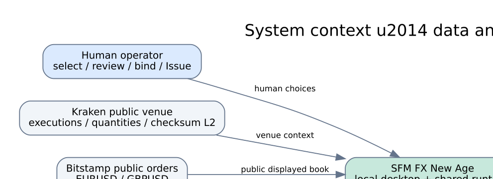
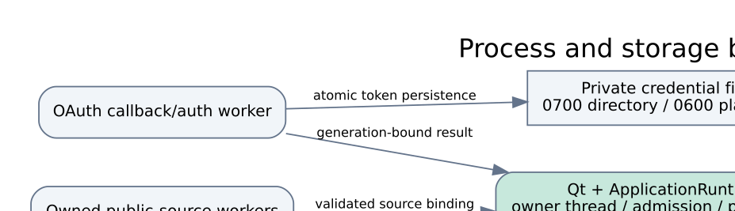
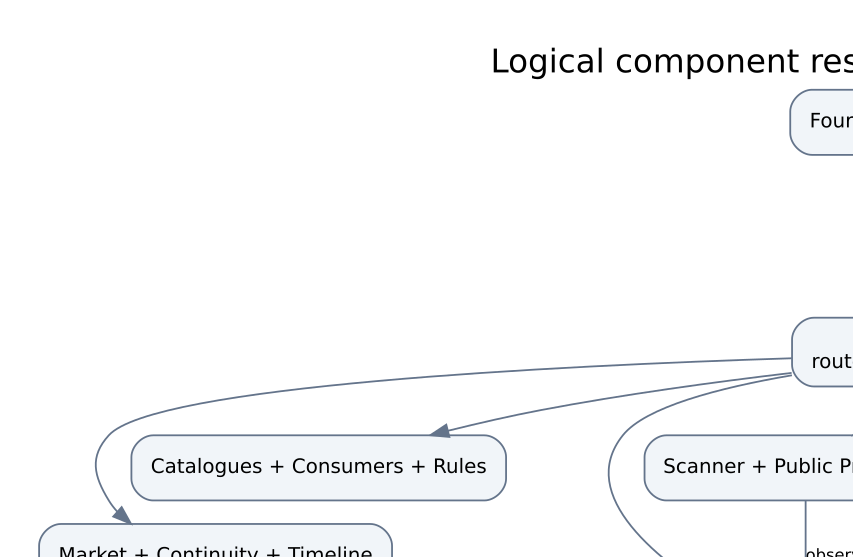
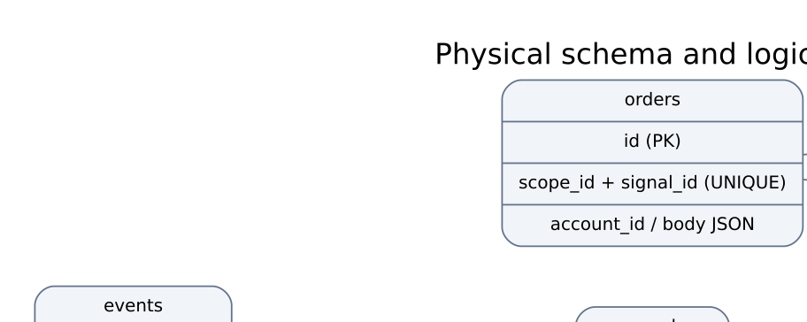
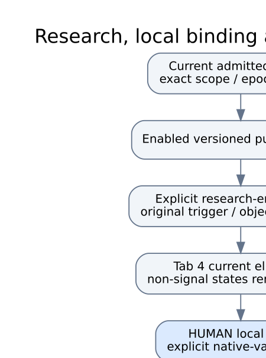
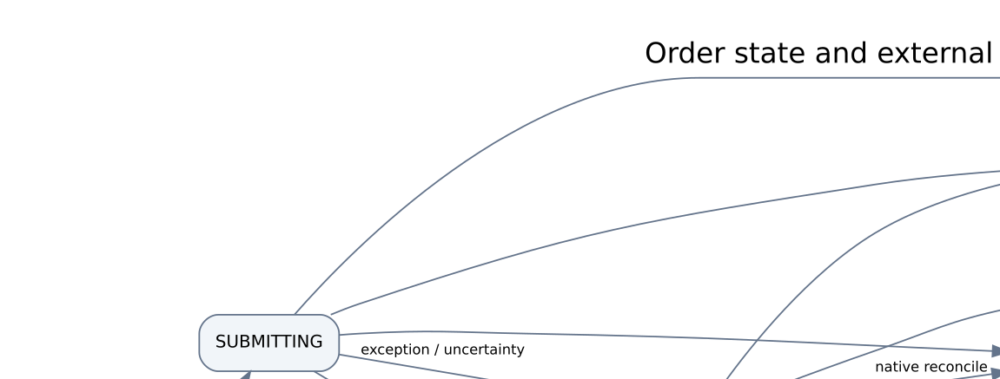
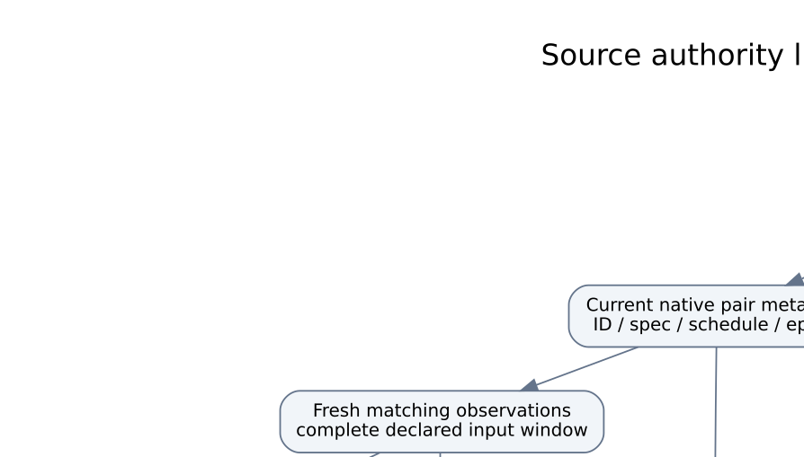
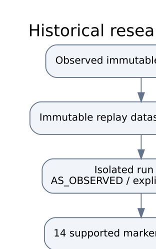

Architecture and Engineering Library
60 main documents · 12 retrospective decisions · 14 reference chapters · 8 diagrams
Source-grounded design, operational procedures and explicit truth boundaries. Proposed policy is not owner approval; retained qualification is not a fresh market observation.
SFM FX New Age — Architecture and Engineering Library
Edition 1.0 · Public adaptation · 2026-11-22 · Historical source baseline: 0.2.0 / V23 candidate-04
Public edition: all chapters and reference data are retained. Links now resolve inside this repository; private paths and identifiers are sanitized. Historical qualification statements below describe the authoring baseline, not a fresh public-clone or broker run. Start with Getting started, Development and publication boundaries. The current project license is MIT; the original licensing-gap discussion in NA-D56 is historical. Current public verification:
python scripts/verify_publication.pyfrom the repository root.
This is the complete finite companion set: 60 main architecture/engineering documents, 12 retrospective ADRs, 14 source-linked reference documents and 8 rendered diagrams, plus machine-readable traceability, catalogues, SBOM and verification receipts. It describes the actual New Age signal/research desktop, not the older SFM FX Engine/cBot architecture.
Open first
- Engineering handbook — offline HTML: all main documents, ADRs, reference chapters and diagrams; local full-text navigation search.
- Engineering handbook — PDF: all 60 main documents and 12 ADRs, with diagram atlas and reference-file directory. Detailed source-derived reference tables remain in HTML/Markdown/CSV.
- Architecture description · Scope and authority · Operator guide.
Evidence and limits
Current source members match the retained V23 candidate-04 hashes. This task freshly ran 171 offline tests across 10 modules, architecture checks, runtime summary and the explicitly synthetic restart/reconciliation checkpoint. It did not rerun full native release qualification or send any real broker action. The retained 1,541-case source/installed estates and native measurements remain historical evidence, not new observations.
No product source, test, original README/PROGRESS, launcher, credential, normal-state database or sealed release evidence was changed. This sibling location preserves the repository's strict Markdown fence and sealed source identity. ../PROGRESS.md remains the sole mutable progress/handoff diary. This library contains architecture/reference/procedure documents, not a competing progress tracker.
Proposed operational policies are labelled; no owner signature, security/regulatory certification, profitable edge or current market setup is invented. Source links resolve inside this checkout; the prose, diagrams, PDF, HTML and CSVs remain readable independently.
Suggested reading routes
- Owner/operator: 01, 03, 24, 33, 42, 46, 48.
- Architect: 07–24, 27, 30–31, 49–55 and ADRs.
- Developer: 16–29, 34–41, 55, 57–59 and reference catalogues.
- Reviewer: 05–06, 33, 37–40, 48, 50, 54, 56 and verification receipts.
Main document catalogue
Architecture decisions
Source-derived reference chapters
- 01-source-module-catalogue
- 02-typed-contract-catalogue
- 03-api-command-catalogue
- 04-view-route-dataset-catalogue
- 05-complete-strategy-policy-catalogue
- 06-original-corpus-crosswalk
- 07-test-evidence-catalogue
- 08-registered-parameters-surfaces
- 09-persistence-schema-records
- 10-dependency-sbom-reference
- 11-cli-reference
- 12-release-evidence-readme
- 13-requirements-traceability
- 14-documentation-coverage-matrix
Diagrams and machine-readable references
Diagram atlas · Package catalogue · Requirements CSV · SBOM · Source preservation receipt
Publication verification
Run the included tooling/verify_package.py for portable public checks of checksums, document membership, source anchors, relative links, exact trace identities, counts and rendered assets. The archived verify_authoring_baseline.py requires unavailable private authoring inputs and is historical only; public Git clones do not preserve authoring mtimes. Reader generation uses the source venv’s installed Markdown/Qt tools and system Graphviz/Poppler. No network dependency is needed to read the exports.
From this documentation directory on the authoring host:
../.venv/bin/python -B tooling/verify_package.py
sha256sum -c MANIFEST.sha256
tooling/render_readers.py rebuilds HTML/PDF from the canonical Markdown and the supplied diagrams; it does not rebuild or launch the product. Preserve a delivered edition before editing or regenerating it. Run the verifier read-only after publication. Intentional documentation edits use the explicit manifest refresh in the development guide; old retained verification reports are historical, not rewritten to claim new qualification. The ZIP’s adjacent .sha256 file binds the delivered archive; the internal manifest binds every package member except the manifest itself.
NA-D01 — Product Charter and Product Requirements
Document: NA-D01 · Documentation edition: 1.0 · Baseline: New Age 0.2.0 / V23 candidate-04
Classification: PRODUCT_BASELINE · Authored: 2026-11-22 · Approval: source-grounded authoring; no fabricated owner signoff.
Purpose and value
SFM FX New Age is a local Debian/X11 desktop application for inspecting Forex observations, conducting explicitly bounded analytical research, reviewing source-bound research signals, and deliberately requesting pending Limit orders through cTrader. It makes provenance, missing inputs, stale state and human decisions visible rather than filling gaps with invented observations.
The product baseline is version 0.2.0 / V23 candidate-04. Its six active pairs are EURUSD, GBPUSD, USDJPY, USDCHF, USDCAD and AUDUSD. Research uses W1, D1, H4 and H1. NZDUSD remains historical-only. The public catalogue contains 83 profiles; the historical study selector has 14 self-contained price-marker models. These are different product denominators.
Product outcomes
- Inspect broker-scoped price history and chart objects without confusing drawings with observations.
- Enable each analytical method independently and inspect exact current states.
- Distinguish a present trigger from a qualified local proposal and from a broker-accepted pending order.
- Retain immutable corrections, saved preferences and causal research results across restart without restoring authentication from database metadata.
- Expose uncertainty and source failure without silently changing providers, accounts or execution intent.
Success and exclusions
Successful software behavior means the defined workflows, ownership boundaries and acceptance cases operate as specified. It does not mean all methods produce a setup simultaneously, predict profit, reconstruct a consolidated FX tape, or manage open positions autonomously. Broker SL/TP, chart-driven order mutation, autonomous entries and the unavailable local-exit addon are not shipped release promises.
Product authority
The owner supplies trading decisions and explicit Issue intent. The program owns validation, persistence and transport correlation. This charter describes the existing product, not additional trading consent or a new strategy approval. Future scope changes require a recorded owner decision, source changes and matching acceptance evidence.
Source and authority anchors
These anchors identify inspected local implementation/decisions. Source links require the sibling checkout. Historical qualification is not a new live observation; proposed practices are not claimed as implemented.
NA-D02 — Stakeholders, User Stories and Use Cases
Document: NA-D02 · Documentation edition: 1.0 · Baseline: New Age 0.2.0 / V23 candidate-04
Classification: DERIVED_REQUIREMENTS · Authored: 2026-11-22 · Approval: source-grounded authoring; no fabricated owner signoff.
Stakeholder responsibilities
| Role | Need | Boundary |
|---|---|---|
| Operator/product owner | Reliable inspection and deliberate action | Selects account, methods, units and Issue |
| Maintainer | Recoverable changes and exact evidence | Changes source through declared owners |
| Analytical extension author | Add research producers and tools | No connector, SQL or order-service ownership |
| Reviewer | Determine what a result actually proves | Keeps fixtures, native observations and broker effects separate |
| Broker/venue provider | Protocol-compatible requests | Supplies only its declared source scope |
UC-01 — Inspect observed market data
Precondition: a current authenticated selected source exists, or the user explicitly opens historical/replay data. Select a pair and frame in Chart Engine; inspect completed bars, source labels and availability. A missing history lane remains unavailable. A historical cutoff never receives newer broker inventory. Postcondition: inspection only; no signal binding or broker request.
UC-02 — Research a method and bind locally
Enable a method in Tab 3, then open Tab 4 Strategy signals. The system evaluates its disclosed policy and reports Off, Waiting, missing-data, No setup, stale, invalidated, expired, blocked or actionable research state. Review source roots and explicit units. Bind only the current qualified revision. Postcondition: a queued local proposal; zero broker submissions.
UC-03 — Issue a pending Limit
Precondition: the local proposal is queued at the selected revision, the account has authenticated trading scope, reconciliation is ready and current preflight succeeds. The human acknowledges research and selects Issue. The core reserves once, invokes transport and records the native result. An uncertain result becomes UNKNOWN, not a retry prompt.
UC-04 — Recover after restart
The program reloads durable facts and preferences but not authentication authority. Reauthenticate the exact namespace and reconcile uncertain orders. Never regenerate a new order merely because acknowledgement was lost.
UC-05 — Historical study
Choose an immutable replay dataset, one supported marker model and explicit study assumptions. Run and reopen the saved report. Ambiguous outcomes remain unknown; the report cannot bind a live candidate or select an account.
Source and authority anchors
- core/tab_api.py
- services/workflow.py
- services/orders.py
- tabs/tab3/public_workspace.py
- tabs/tab4/strategy_signals.py
These anchors identify inspected local implementation/decisions. Source links require the sibling checkout. Historical qualification is not a new live observation; proposed practices are not claimed as implemented.
NA-D03 — System Scope, Authority and Non-Goals
Document: NA-D03 · Documentation edition: 1.0 · Baseline: New Age 0.2.0 / V23 candidate-04
Classification: AS_BUILT_CONSTRAINTS · Authored: 2026-11-22 · Approval: source-grounded authoring; no fabricated owner signoff.
Scope contract
Four workspaces retain 42 backend identities at 10/10/13/9. Tab 2's ten contracts are internal engineering surfaces; its visible workspace contains dynamic tools. Therefore 42 backend contracts do not mean 42 visible fixed pages. The GUI has 32 fixed chart/research/operations pages plus its tool windows.
The active Cartesian analytical identity set is method × pair × frame. Its membership is fixed by the actual public catalogue, six-pair universe and four frames, not by how many rows happen to be currently Ready. Identity coverage is distinct from fresh input coverage and positive market setups.
Authority ladder
- Persisted data: historical facts, not a live session.
- Authenticated account: a current connector session, not an approved trade.
- Accepted source binding: pair/epoch/origin provenance, not analytical qualification.
- Analytical output: bounded research evidence, not a proposal with chosen units.
- Human local binding: a queued proposal, not a broker request.
- Human Issue plus current preflight/reservation: one attempted pending order.
- Native result/reconciliation: confirmed or uncertain broker state, never an invented position.
No lower rung grants a higher one. API booleans are application contracts, not independent proof that a human was physically present; trusted local callers remain part of the threat model.
Explicit non-goals
This package does not revive the older SFM FX Engine/cBot topology, treasury/reabsorption execution rules, QGA lifecycle or autonomous protection. It does not promise position closure, amendment, broker-native stops, every discretionary interpretation of a trading framework, continuous provider availability, or profitable returns.
Conflict handling
Use current source and the latest applicable dated New Age decisions. Earlier diary entries describe historical states and can be superseded by later source and decisions. Preserve disagreement in the decision/risk documents rather than silently applying legacy system policy. A changed account type alone cannot block use; authenticated scope, source freshness and current preflight still can.
Source and authority anchors
These anchors identify inspected local implementation/decisions. Source links require the sibling checkout. Historical qualification is not a new live observation; proposed practices are not claimed as implemented.
NA-D04 — Domain Glossary and Terminology
Document: NA-D04 · Documentation edition: 1.0 · Baseline: New Age 0.2.0 / V23 candidate-04
Classification: REFERENCE · Authored: 2026-11-22 · Approval: source-grounded authoring; no fabricated owner signoff.
Identity and time
| Term | Meaning in New Age |
|---|---|
| Account scope | Serialized broker, endpoint, account and origin namespace |
| Source epoch | Particular connection/source generation; not a revision number |
| Origin | LIVE_OBSERVED, HISTORICAL_REPLAY or SYNTHETIC_FIXTURE |
| Availability | When an observation became available to the application |
| Event time | Original market/source event time; not refreshed by publication |
| Revision | Correction or definition version within an identified object |
| Fingerprint | Content/identity digest; integrity binding, not vendor authentication |
| As-of | Aware UTC cutoff limiting causally available observations |
Research and action
| Term | Meaning |
|---|---|
| Public method | Versioned bounded analytical profile, not an assured trading system |
| Projection | Source-bound series, marker or region for research/display |
| No setup | Evaluated inputs did not produce an eligible setup |
| Data needed | Required genuine input is missing; not No setup |
| Research signal | A method output interpreted by its disclosed entry policy |
| Bind | Human creation of a local queued proposal with explicit units |
| Issue | Separate deliberate request to create one new pending Limit order |
| Internal invalidation | Research geometry; not a broker stop or guaranteed loss limit |
| UNKNOWN | External outcome unresolved; resubmission is unsafe |
| Reconcile | Match authoritative native facts to existing local identities |
| Native inventory | Last-observed broker pending orders/positions, not automatic local adoption |
Source semantics
Tick volume is quote activity, not executed volume. Broker DOM is observed displayed liquidity with a local receipt clock, not a complete global book. Kraken executions and taker sides are venue context, not cTrader fills. Checksum L2 and predecessor-linked full public orders are different book claims. CFTC is mapped futures positioning context; Board calendar data is its admitted official subset, not a complete economic calendar.
Documentation language
“As-built” means inspected source behavior. “Retained qualification” means a historical evidence record. “Fresh check” means executed during this documentation task. “Recommended” denotes a proposed maintenance practice, not a newly implemented feature or owner approval. “Complete” always names the finite artifact or acceptance scope it covers.
Source and authority anchors
These anchors identify inspected local implementation/decisions. Source links require the sibling checkout. Historical qualification is not a new live observation; proposed practices are not claimed as implemented.
NA-D05 — Software Requirements Specification
Document: NA-D05 · Documentation edition: 1.0 · Baseline: New Age 0.2.0 / V23 candidate-04
Classification: DERIVED_REQUIREMENTS · Authored: 2026-11-22 · Approval: source-grounded authoring; no fabricated owner signoff.
Specification basis
This SRS derives testable requirements from the current implementation and explicit New Age product decisions. It is not a reapproval of trading policy. The companion requirements crosswalk assigns stable NA identifiers, implementation owners, existing exact test functions and document destinations. Those associations are reviewed trace links, not a claim that every possible input is covered.
Functional requirements
The application shall retain four workspaces and 42 stable backend contracts while rendering Tab 2 as tools. It shall use only the active six-pair/four-frame scope for current admissions. Account class shall be metadata, not an eligibility gate. A tab shall operate only through its scoped API and declared command/data contracts.
Market bars shall retain source scope, epoch, origin, observed clocks and immutable correction history. No empty chart, missing input or failed acquisition shall be replaced with fabricated observations. Reconnection shall not transplant authority from a saved epoch.
Each of the 83 public methods shall have explicit versioned semantics, independent enablement and a disclosed research-entry policy. Missing genuine inputs, disabled methods, unavailable support and No setup shall remain distinguishable. Binding shall revalidate current identity, lineage, freshness and geometry and require explicit native-valid units. Binding shall not send an order.
New pending orders shall require deliberate Issue, current shared preflight and an atomic local reservation. Uncertain external outcomes shall remain UNKNOWN until reconciliation; they shall never automatically replay. Local signal cancellation shall not cancel a broker order. Broker cancellation shall be separately confirmed and identity-bound.
Nonfunctional and data requirements
Backend services shall remain Qt-neutral; acquisition shall remain connector-owned. Queues and workload bounds shall be explicit. Secret values shall not enter ordinary command payloads or journals. Replay and historical studies shall not acquire live execution authority. Restart shall preserve facts/preferences without treating them as authentication.
Acceptance interpretation
The frozen 91-item supplied-document crosswalk is an independent analytical-corpus requirement set. It is not replaced by this SRS and must not be inferred from the catalogue count. Requirements concerning profitability, account-wide risk approval, autonomous exits or broader feeds are intentionally not asserted as implemented.
Source and authority anchors
- contracts/domain.py
- contracts/registry.py
- contracts/commands.py
- services/orders.py
- contracts/strategy_signals.py
- contracts/backtest.py
These anchors identify inspected local implementation/decisions. Source links require the sibling checkout. Historical qualification is not a new live observation; proposed practices are not claimed as implemented.
NA-D06 — Quality Attribute Requirements and Scenarios
Document: NA-D06 · Documentation edition: 1.0 · Baseline: New Age 0.2.0 / V23 candidate-04
Classification: DERIVED_QUALITY_BASELINE · Authored: 2026-11-22 · Approval: source-grounded authoring; no fabricated owner signoff.
Quality priorities
Correct source identity and external-action safety take precedence over filling the screen with output. Availability means a usable application with explicit partial states, not unconditional provider uptime. Performance controls must not alter observed clocks, analytical mathematics or human action boundaries.
| Attribute | Stimulus and required response | Verification |
|---|---|---|
| Integrity | A late correction arrives; prior as-of results remain recoverable | Immutable-history tests and source hashes |
| Safety | Submission raises after possible send; retain UNKNOWN and do not retry | Order/recovery tests |
| Isolation | Switch account or epoch; old current geometry withdraws | Source-switch/lifecycle tests |
| Responsiveness | Native intake and analysis compete; owner work is bounded | Owner-loop tests and qualified timing runs |
| Recoverability | Process exits after reservation; restart retains uncertainty | Recovery checkpoint |
| Extensibility | Open/close a tool; only its subscriptions are released | Plugin/tool lifecycle tests |
| Usability | Compact window; essential controls remain reachable | Existing actual-widget/native acceptance |
| Maintainability | Change a public contract; review every declared consumer | API catalogue and impact matrix |
Performance boundary
The retained release policy measures startup separately and requires a bounded sustained operating window, heartbeat/pump limits, bounded queues, zero callback/worker errors and joined shutdown. The exact policy and historical measured values are documented in the performance document. They are measured-host acceptance limits, not hard realtime or universal SLAs.
Unspecified commitments
No approved RTO, RPO, annual uptime percentage, maximum supported dataset size beyond current software budgets, or public service SLA was found. Recommended backup/recovery practices are therefore documented as proposals. Do not assign reassuring numerical defaults merely to complete a specification.
Tradeoffs
FULL-durability persistence can cost owner-loop time; write batching shares commits while retaining rollback boundaries. Pure projection processes increase compute capacity but not connector/GUI ownership. Bounded rendering can omit offscreen captions without deleting underlying research records. These tradeoffs must remain visible in reviews and tests.
Source and authority anchors
- core/router.py
- storage/database.py
- services/compute_pool.py
- services/workflow.py
- tests/test_owner_responsiveness.py
These anchors identify inspected local implementation/decisions. Source links require the sibling checkout. Historical qualification is not a new live observation; proposed practices are not claimed as implemented.
NA-D07 — Software Architecture Description
Document: NA-D07 · Documentation edition: 1.0 · Baseline: New Age 0.2.0 / V23 candidate-04
Classification: AS_BUILT_ARCHITECTURE · Authored: 2026-11-22 · Approval: source-grounded authoring; no fabricated owner signoff.
Architectural style
New Age is a desktop modular application with a shared in-process owner, typed event routing and scoped tab APIs. It is not a microservice deployment. Python owns presentation orchestration, analytical services, persistence and cTrader adapter supervision. Qt is confined to application/UI/tab presentation layers; shared domain/core/service/storage modules are Qt-neutral.
ApplicationRuntime is the composition root. It opens one Database, creates component/projection registries, connects domain services, installs analytical producers through a bounded extension facade, exposes four tab APIs, and owns a single connector supervisor. Its default in-memory construction is offline and fixture-free. The normal GUI entry explicitly selects durable state and native analytical feed behavior.
Principal boundaries
- Presentation:
app.py,ui/and tab widgets render scoped snapshots and invoke allowlisted commands. - Application/core: owns dispatch, current selection, subscriptions, pump scheduling and inter-workspace inspection.
- Domain/services: owns market history, catalogues, research, rules, projections, signals, order preflight and reconciliation.
- Infrastructure: SQLite persistence, isolated SDK reactor processes, OAuth store and bounded public-source workers.
- Pure compute: spawned jobs calculate supported projections from immutable bounded snapshots; owner revalidates results before commit.
Critical design invariants
There is one authoritative Issue edge, one shared market/persistence ownership graph, and no network acquisition in a chart or research plugin. Durable authentication metadata does not restore authority. A current projection must satisfy source/epoch/profile identity and expiry. Research output cannot carry execution fields.
Viewpoint navigation
The context document explains actors and external systems. Container/deployment documents describe processes and storage. Component and API references locate exact owners. Runtime sequences explain successful and uncertain paths. Data, temporal and source documents explain validity. Security, safety and qualification documents state residual limits. The architecture is complete only when these viewpoints agree; a box diagram alone does not prove operational readiness.
Source and authority anchors
These anchors identify inspected local implementation/decisions. Source links require the sibling checkout. Historical qualification is not a new live observation; proposed practices are not claimed as implemented.
NA-D08 — System Context and External Interfaces
Document: NA-D08 · Documentation edition: 1.0 · Baseline: New Age 0.2.0 / V23 candidate-04
Classification: AS_BUILT_CONTEXT · Authored: 2026-11-22 · Approval: source-grounded authoring; no fabricated owner signoff.
System boundary
The managed application is the New Age desktop process and its owned children, durable state and explicitly configured input adapters. The human operator, browser/cTrader authorization service, broker endpoints, public venues, official context publishers and external file publishers are outside that boundary. The older SFM FX Engine and cBot runtime are not hidden New Age dependencies.
External relationships
| External actor/system | Exchange | Trust limit |
|---|---|---|
| Operator | Account/method choices, units, binding, Issue/cancel confirmation | Local authenticated user context, not remote multi-user authorization |
| System browser | Human OAuth grant and loopback callback | Exact registered redirect and single-use state |
| cTrader Open API | Account inventory, specs, schedules, prices, history, reconcile and deliberate order/cancel | Selected broker/account/endpoint namespace |
| Kraken public | Exact fiat executions, quantities, taker sides and checksum depth | Venue-specific data, not global FX |
| Bitstamp public | Corroborated predecessor-linked public order book | Two declared fiat pairs and displayed public orders only |
| CFTC/Board sources | Published context | Futures/declared calendar coverage only |
| Local publisher | Hash-checked adjacent JSON payloads | Declared provider provenance, not independent vendor authentication |
Availability dependencies
The GUI and offline research/checks can run without broker access. Current connected research requires authenticated source bindings and the method's genuine inputs. An unavailable venue affects the relevant input rather than licensing a substitute under the original name. Optional FIX Price access needs separate credentials and is not a normal-start dependency.
Data-flow rule
External bytes enter through connector/admission owners, then typed source validation, persistence and analytical services. They do not enter a chart directly or become executable instructions. The context diagram distinguishes data edges from the deliberate broker-mutation edge so a read-only feed is never drawn as an autonomous trader.
Source and authority anchors
- connector/service.py
- connector/analytical_feed.py
- connector/kraken_public.py
- connector/bitstamp_feed.py
- services/supplemental_files.py
These anchors identify inspected local implementation/decisions. Source links require the sibling checkout. Historical qualification is not a new live observation; proposed practices are not claimed as implemented.
NA-D09 — Container and Process Architecture
Document: NA-D09 · Documentation edition: 1.0 · Baseline: New Age 0.2.0 / V23 candidate-04
Classification: AS_BUILT_PROCESS_VIEW · Authored: 2026-11-22 · Approval: source-grounded authoring; no fabricated owner signoff.
Logical execution containers
“Container” here means an executable/storage boundary, not an assertion that production uses Docker. Ordinary operation is a user-local desktop application. Clean Debian container runs are retained packaging/acceptance environments, not a requirement to deploy the desktop inside a container.
| Boundary | Owns | Must not own |
|---|---|---|
| Qt/application owner process | GUI, runtime pump, command routing, domain writes and result admission | Blocking SDK reactor loop |
| SDK child process per configured endpoint | Native protocol framing, TLS and bounded command/event queues | Arbitrary user code or blind order replay |
| OAuth callback/authentication worker | Browser grant/callback and token exchange | Unscoped account selection or Issue |
| Public-source workers | Bounded acquisition/corroboration for declared providers | Core SQL writes and broker commands |
| Projection child processes | Supported pure analytical math | Qt, secrets, database handles or execution authority |
| SQLite database | Durable scoped facts, local orders and event journal | Proof of current authentication |
| Private credential file | Application/token material | Encrypted-keychain claim |
Communication
Worker outputs return through bounded queues and connector-owned bindings. The owner validates source/generation and commits accepted results. The event router uses P0–P3 priorities and owner-thread callback drains. Immutable projection snapshots are inputs to spawned jobs; job tokens and current state are checked when results return.
Shutdown and faults
Closing the runtime cancels queued calculations, joins compute children, stops connector/feed/authentication resources and closes persistence. A worker fault remains visible and cannot authorize a stale result. A transport exception after possible external send creates uncertainty, not a fresh command on restart.
Architectural consequence
Parallelism is selective. More CPUs do not make persistence, broker actions or GUI state concurrent authorities. Process containment reduces coupling but is not a complete hostile-code sandbox. Analytical extension authors remain trusted local developers operating under API/architecture fences.
Source and authority anchors
- core/runtime.py
- connector/sdk_worker.py
- connector/oauth.py
- services/compute_pool.py
- connector/kraken_public.py
These anchors identify inspected local implementation/decisions. Source links require the sibling checkout. Historical qualification is not a new live observation; proposed practices are not claimed as implemented.
NA-D10 — Component Design and Responsibility Allocation
Document: NA-D10 · Documentation edition: 1.0 · Baseline: New Age 0.2.0 / V23 candidate-04
Classification: AS_BUILT_COMPONENT_VIEW · Authored: 2026-11-22 · Approval: source-grounded authoring; no fabricated owner signoff.
Ownership map
| Owner | Responsibility | Main consumers |
|---|---|---|
| Runtime/component registry | Composition, command dispatch, selection and lifecycle | All four tabs |
| Market/continuity/timeline | Scoped bars, quotes, native specs, calendars and gaps | Charts, scanner, preflight |
| Catalogue/consumer services | Parameters, recipes, variables, surfaces and switches | Research editor and scheduler |
| Research/projection services | Immutable evidence, analytical objects and current pointers | Chart layers and research inspectors |
| StrategySignalService | Policy observations, current research states and local binding | Tab 4 Strategy signals |
| SignalService | Local queued proposal revisions and terminal local states | Issue queue and order owner |
| OrderService | Shared preflight, atomic reservation, native outcome and cancellation | Deliberate Tab 4 actions |
| PositionService | Read-only native position observations | Operations/inspection |
| ReplayService | Isolated causal datasets, run clock and saved studies | Chart/Research replay |
| ConnectorService | Authentication, account/source bindings and all acquisition | Domain owners through admitted facts |
Declared components versus delivered domains
The registry currently wires 29 component identities and 41 declared routes. These counts demonstrate contract wiring, not that every named domain or every scanner node has a complete independent implementation. Unsupported capability must return explicit unavailability rather than fake success.
Shared-spine ownership
Contracts, core, services, connector, storage, shared UI and composition files are coordinator-owned according to the canonical diary. Tab-specific folders may contribute through their existing hooks but cannot independently fork shared services. One source of truth for parameters, market state and broker transport avoids contradictory cross-tab behavior.
Integration contract
A component receives typed immutable events or validated commands, owns its mutation and emits scoped results. A tab's closing operation disposes its subscriptions, not the shared runtime. A callback error is recorded without starving other subscribers. Database transaction boundaries, object identity and expected-version checks must be preserved when responsibilities move between modules.
Source and authority anchors
- core/runtime.py
- core/components.py
- services/market.py
- services/research.py
- services/orders.py
- services/strategy_signals.py
These anchors identify inspected local implementation/decisions. Source links require the sibling checkout. Historical qualification is not a new live observation; proposed practices are not claimed as implemented.
NA-D11 — Runtime Scenarios and Sequence Design
Document: NA-D11 · Documentation edition: 1.0 · Baseline: New Age 0.2.0 / V23 candidate-04
Classification: AS_BUILT_DYNAMIC_VIEW · Authored: 2026-11-22 · Approval: source-grounded authoring; no fabricated owner signoff.
Scenario A — Ordinary desktop startup
The CLI selects explicit/XDG state, constructs the runtime with native analytical feed support, then imports Qt and opens the application. Construction itself does not authenticate. GUI startup may resume an already consented remembered session. Account inventories/authentication and the exact prior selection precede source-bound metadata/history/feed work. Missing lanes remain partial; healthy pairs continue.
Scenario B — Analytical observation to local proposal
An admitted source change dirties its pair. The scanner builds causal inputs and schedules supported projection calculations. The owner validates returned tokens, method switches, source/profile identity and expiry before persistence. The signal sink materializes a versioned policy observation. Tab 4 reads current eligibility without writing. The human chooses a ready row and explicit units, then binds the current opportunity into SignalService. This path has no transport submission.
Scenario C — Issue success or uncertainty
The separate human Issue action calls the same preflight used by preview. The core validates the queued revision, account/scope, research acknowledgement, candidate lineage, continuity, native spec and price semantics. A transaction inserts one unique order reservation and marks the signal reserved. Only then does the transport receive the pending Limit request. Native acceptance maps broker order identity; an exception/timeout yields UNKNOWN. No timer or reconnect automatically resends it.
Scenario D — Source withdrawal and recovery
A disconnect or pair metadata withdrawal removes current authority and rejects late worker results. Persisted observations remain historical. Healthy pairs may continue. Restoration requires current bindings and new valid observations; a new epoch cannot borrow old books, quote freshness or authentication.
Scenario E — Restart reconciliation
A persisted in-flight order becomes uncertain on recovery. The user restores the matching authenticated account and reconciles native facts. Local cancellation of unissued signals cannot remove a broker pending order. Separate broker cancellation requires an exactly confirmed pending identity. The sequence diagrams expose these distinctions rather than drawing a fictitious exactly-once external transaction.
Source and authority anchors
- main.py
- core/runtime.py
- connector/service.py
- services/strategy_signals.py
- services/orders.py
- storage/database.py
These anchors identify inspected local implementation/decisions. Source links require the sibling checkout. Historical qualification is not a new live observation; proposed practices are not claimed as implemented.
NA-D12 — Deployment Architecture and Environment Boundaries
Document: NA-D12 · Documentation edition: 1.0 · Baseline: New Age 0.2.0 / V23 candidate-04
Classification: AS_BUILT_DEPLOYMENT · Authored: 2026-11-22 · Approval: source-grounded authoring; no fabricated owner signoff.
Supported deployment baseline
The documented qualified environment is Debian 13/X11 with Python 3.13 and PySide6. Package metadata permits Python >=3.13, but that declaration is not qualification of every later interpreter or every Linux desktop. The application is installed user-locally from its source/wheel and launched through the CLI or existing Desktop wrapper.
Deployment nodes
- Host user environment: application/Qt process, user-local executable and Desktop/menu entries, packaged SFM icon.
- Owned child execution: SDK reactor processes and demand-grown pure projection pool; foreground-joined feed/authentication workers.
- Operational storage: explicit
--state-diror XDG data directory,state.sqlite3and SQLite WAL/SHM family, private credential directory and provider caches. - External services: broker/cTrader authorization endpoints and declared public/context publishers.
- Acceptance-only environment: isolated installed wheel and clean Debian/X11 userland with disposable state; not ordinary live deployment.
Configuration boundaries
Default in-memory runtime and headless verification are offline. Ordinary remembered-session GUI startup may connect after prior user consent. --fixture-session is explicitly synthetic and separate from normal state. --strict-genuine-data disables disclosed activity alternatives; it does not magically provision additional providers. --compute-workers 1 uses serial calculation without changing product semantics.
Installation and rollback implications
OS XCB/OpenGL/font libraries are outside pip dependencies and must be provisioned by the host. Keep Python packages in the project/installation environment, not mixed system interpreters. A rollback must consider source, wheel, launcher, state schema and credential compatibility together. Do not point an older program at a newer database without a verified compatibility path.
Current task boundary
This documentation package lives beside the repository to preserve its source hashes and Markdown fence. It neither installs a new launcher nor changes the user's running application, credentials, broker session or saved method selections.
Source and authority anchors
These anchors identify inspected local implementation/decisions. Source links require the sibling checkout. Historical qualification is not a new live observation; proposed practices are not claimed as implemented.
NA-D13 — Domain Model and Bounded Contexts
Document: NA-D13 · Documentation edition: 1.0 · Baseline: New Age 0.2.0 / V23 candidate-04
Classification: AS_BUILT_DOMAIN_DESIGN · Authored: 2026-11-22 · Approval: source-grounded authoring; no fabricated owner signoff.
Bounded contexts
Market observation, analytical research, local signal intent, broker correlation and replay are distinct contexts joined by explicit identities. They share typed contracts but not authority. A Level describes a price object; Evidence describes support; a MarketCandidate describes analytical geometry/qualification; a Candidate is a local proposal with chosen units. Their similar prices do not make them interchangeable.
Identity graph
AccountContext.scope_id serializes broker ID, endpoint class, account ID and origin. Market authority adds source epoch and pair. Bars add timeframe/open time/revision; projections add method/version/profile/input fingerprints. An analytical opportunity carries original trigger roots and current policy identity. A bound local signal preserves the opportunity ID/revision/hash and selected variant. A local order adds its own UUID/client order ID; native broker order/position IDs are separately mapped after observation.
Aggregates and invariants
| Aggregate | Invariant |
|---|---|
| Bar | Completed open < close <= availability, finite valid OHLC, explicit origin/epoch |
| Quote | Finite bid/ask, coherent source, freshness bound to oldest side |
| SymbolSpec | Positive native tick/pip/volume definitions and legal order grid |
| Research object | Causal lineage, immutable revisions and source/profile identity |
| Local signal | Stable setup/pair/origin identity; only queued proposals may receive newer revisions |
| Local order | Unique scope/signal reservation and nonrebindable broker identity |
| Native position snapshot | Explicit observed completeness; empty local rows do not prove flatness |
| Replay run | Isolated dataset, cursor and information clock; no live execution authority |
Context translation
Connector protocol adapters decode native fixed-point values before domain validation. Research policies translate observations into disclosed research geometry, not vendor intent. Human binding supplies units; the order owner translates a validated proposal to pending Limit protocol fields. A display or navigation handoff preserves identity and cannot strip a broker record into a research object.
Consequence for future design
Do not collapse these contexts into a generic mutable “trade” record. Doing so loses the distinction between an analytical hypothesis, a local command and an observed broker fact—the distinctions needed for safe restart, auditing and honest reports.
Source and authority anchors
- contracts/domain.py
- contracts/analytics.py
- services/research.py
- services/signals.py
- services/positions.py
These anchors identify inspected local implementation/decisions. Source links require the sibling checkout. Historical qualification is not a new live observation; proposed practices are not claimed as implemented.
NA-D14 — Data Dictionary and Serialization Contracts
Document: NA-D14 · Documentation edition: 1.0 · Baseline: New Age 0.2.0 / V23 candidate-04
Classification: AS_BUILT_DATA_REFERENCE · Authored: 2026-11-22 · Approval: source-grounded authoring; no fabricated owner signoff.
Authoritative field reference
The generated contract catalogue lists every inspected class field, annotation and default from the contract modules, with source lines. It is the exhaustive field appendix; this document supplies semantic rules that type annotations alone cannot express. Decimal-valued domain objects serialize as strings. Aware timestamps represent instants; naive timestamps are refused.
| Field group | Meaning and constraints |
|---|---|
scope_id, source_epoch, origin |
Namespace and provenance; cannot be replaced by display pair names |
available_at, original event/receipt clocks |
Causal eligibility versus market/transport time |
revision, version, expected_version |
Object correction/definition and CAS concurrency; booleans are not integer revisions |
symbol, timeframe |
Active six-pair/four-frame coordinates for current operations |
entry_price, invalidation_price, units |
Finite Decimal geometry and explicit native-valid quantity |
profile_hash, fingerprint, source hashes |
Exact semantic/input binding; not independent source authentication |
broker_order_id, position_id |
Separately observed native identities; local acceptance cannot invent them |
quote_basis, construction, tick_volume |
Explicit bid/ask/mid/unknown and native/derived construction; tick activity is not execution quantity |
Null, empty and unavailable
A missing quote is not zero spread. An unavailable conversion is not one-to-one currency parity. Empty position rows are unknown without an explicitly observed complete native snapshot. Missing historical intervals are not zero-volume intervals. A calendar with no admitted coverage is not news clearance. A missing field cannot be supplied by an optimistic GUI default.
Payload and page discipline
DataRequest restricts datasets by subtab, supports bounded pagination and requires a stable data hash for continuation. The typed command payload registry rejects unknown fields and wrong primitive types. Supplemental wire validation rejects extra execution fields and applies per-kind units/completeness contracts before admission.
Schema interpretation
The physical database is deliberately small: generic typed JSON records, dedicated order reservations and event journal. A record-kind catalogue is not a list of independent SQL tables. The extracted schema and typed-contract catalogue must be read together; neither alone proves a complete semantic data model.
Source and authority anchors
- contracts/domain.py
- contracts/analytics.py
- contracts/models.py
- contracts/supplemental.py
- contracts/tab_data.py
- contracts/backtest.py
These anchors identify inspected local implementation/decisions. Source links require the sibling checkout. Historical qualification is not a new live observation; proposed practices are not claimed as implemented.
NA-D15 — Database Design, Transactions and Migration Specification
Document: NA-D15 · Documentation edition: 1.0 · Baseline: New Age 0.2.0 / V23 candidate-04
Classification: AS_BUILT_PERSISTENCE · Authored: 2026-11-22 · Approval: source-grounded authoring; no fabricated owner signoff.
Physical model
The application opens SQLite with WAL, foreign keys enabled and synchronous=FULL. Schema user version is 2. The actual schema appendix contains source-derived SQL plus index definitions, not an invented normalized warehouse.
| Table | Primary purpose | Key constraints |
|---|---|---|
records |
Typed JSON facts, definitions, historical/current objects | Composite (kind,id) |
orders |
Local order correlation and duplicate reservation barrier | Order ID PK; unique (scope_id,signal_id) |
events |
Persisted event journal | Autoincrement sequence and unique event ID |
Expression indexes support market series, analytical scope, public projection history and supplemental interval/provider reads. projection_utc normalizes aware instants to microsecond UTC ordering; raw mixed-offset string ordering and SQLite floating-time rounding are not substituted.
Write semantics
transaction() uses BEGIN IMMEDIATE or a nested savepoint, rolling back its own operation on failure. batch_writes() shares durable commits within a bounded owner turn while preserving completed independent operations if a later operation fails. It is not an all-or-nothing workflow substitute. Multi-step atomic workflows must use transaction().
Some generic record writes are upserts. Immutable history is therefore enforced by its owning services and identity checks, not by a universal append-only SQL trigger. The journal and immutable revisions support audit; a mutable current pointer remains a projection, not immutable evidence.
Migration behavior
An older orders table without scope_id is migrated atomically. Historical unscoped rows use an explicit LEGACY_UNBOUND: namespace rather than a guessed broker/source. Unsupported schema versions are refused. Existing records and old method definition bytes are retained when semantic versions advance.
Operational cautions
Never copy only the main database while a live WAL is active and call it a consistent backup. Use a transactionally consistent SQLite backup or a quiesced complete database family. Preserve evidence before repair. No destructive pruning or schema change is authorized by this documentation task. Restore and upgrade procedures remain separately testable operations.
Source and authority anchors
These anchors identify inspected local implementation/decisions. Source links require the sibling checkout. Historical qualification is not a new live observation; proposed practices are not claimed as implemented.
NA-D16 — API Design and Interface Control Document
Document: NA-D16 · Documentation edition: 1.0 · Baseline: New Age 0.2.0 / V23 candidate-04
Classification: AS_BUILT_INTERFACE_CONTRACT · Authored: 2026-11-22 · Approval: source-grounded authoring; no fabricated owner signoff.
Public integration surfaces
TabApi version 1 exposes scoped snapshots, bounded queries, capability discovery, commands, subscriptions and inspection/replay helpers. It is a Python in-process API, not a deployed REST service. No new HTTP endpoints or OpenAPI specification is fabricated for an application that does not expose them.
| Operation | Contract |
|---|---|
snapshot(subtab_id) |
Immutable view snapshot only within the tab's declared identities |
query(subtab_id, DataRequest) |
Read-only dataset allowlist, current scope and bounded pagination |
capabilities(subtab_id) |
Explicit implemented/partial/snapshot-only/unimplemented state |
command(subtab_id,name,payload) |
Declared subtab command and exact payload validation |
subscribe / subscribe_snapshots |
Owner-thread callbacks with explicit release |
inspect / navigate |
Immutable source-bound handoff; target permission checks |
close() |
Dispose that consumer, not shared services |
The generated command matrix enumerates required/optional fields and the exact subtab owners. A syntactically valid command is not necessarily eligible at runtime: source, revision, account and freshness checks remain with the service owner.
Extension interface
AnalyticalExtensionApi is supplied during installation, then closed. It permits bounded analytical registration, not replacement of execution owners. TabPlugin registration remains lane-scoped. A Trading Tools factory receives a fresh scoped API and Qt parent; it must release its API/subscriptions on closure.
Errors and compatibility
Wrong-tab access, disposed handles, unsupported datasets, malformed payloads and stale revisions are explicit failures. Unknown domain capability must not be represented as accepted. Additive API v1 helpers retain existing scope/lifecycle rules; semantic changes require versioned definitions and consumer regression checks.
Trust limit
This facade and static import fences constrain cooperating application code; they do not turn Python objects into a security sandbox against a malicious same-process extension. Loading untrusted arbitrary plugins is outside the qualified extension model.
Source and authority anchors
These anchors identify inspected local implementation/decisions. Source links require the sibling checkout. Historical qualification is not a new live observation; proposed practices are not claimed as implemented.
NA-D17 — Event Model, Topic Catalogue and Routing Specification
Document: NA-D17 · Documentation edition: 1.0 · Baseline: New Age 0.2.0 / V23 candidate-04
Classification: AS_BUILT_EVENT_DESIGN · Authored: 2026-11-22 · Approval: source-grounded authoring; no fabricated owner signoff.
Event envelope
Events carry topic, source component, immutable payload, priority, partition key, source epoch, production clock and event ID. The router owns callback delivery and tracks queue/latency/error metrics. A declared route describes intended host relationships, not proof that a whole named domain is implemented.
Delivery semantics
Priority P0 precedes P1/P2/P3; arrival sequence preserves ordering within equal priority. Capacity is 4,096 per priority by default; exhaustion raises BackpressureError rather than silently losing an accepted critical event. The last-known-value cache is bounded and keyed by topic plus partition. It is display/context state, not durable replay or current-source proof.
Only the owning thread may drain callbacks. Reentrant drain returns without recursion. A subscriber exception records its type in a bounded error ring and does not starve other subscribers. Subscription removal is explicit and consumer-owned. This is in-process delivery, not a distributed exactly-once broker.
Topic families
| Family | Examples/purpose |
|---|---|
| Market | Completed bars, quotes and source-authority changes |
| Analytical | Input changes, research snapshots and parameter effects |
| Signal | Candidate proposal, queue snapshots and deliberate user Issue |
| Broker/order | Native state, reconciliation response and identity-map updates |
| Account/configuration | Current account, consumer and parameter state |
The extracted route catalogue preserves every source, destination, topic, trigger, priority, rule and declared status. The API/view catalogue separately records each view's actual topic subscriptions.
Persistence and recovery
The runtime journals delivered events with original source epoch and production clock. The journal does not make every callback transactional with a remote broker. Restart uses explicit order recovery/reconciliation instead of replaying Issue events. Latest-only analytical work may coalesce validated snapshots; that does not license dropping native trade IDs or book checks before validation.
Source and authority anchors
- core/router.py
- core/projections.py
- core/runtime.py
- contracts/models.py
- contracts/data/host_typed_routes.csv
These anchors identify inspected local implementation/decisions. Source links require the sibling checkout. Historical qualification is not a new live observation; proposed practices are not claimed as implemented.
NA-D18 — Connector, Authentication and Protocol Design
Document: NA-D18 · Documentation edition: 1.0 · Baseline: New Age 0.2.0 / V23 candidate-04
Classification: AS_BUILT_CONNECTOR_DESIGN · Authored: 2026-11-22 · Approval: source-grounded authoring; no fabricated owner signoff.
Connection lifecycle
One ConnectorService supervises endpoint workers, authentication, discovered accounts, selected source bindings, subscriptions, histories and reconciliation. LIVE/DEMO are distinct namespaces and transport endpoints, not application eligibility classes. Persisted account metadata is saved unauthenticated. Multiple discovered accounts require an explicit choice except the documented single-account first-login rule after both endpoint inventories finish.
Authentication
The browser grant uses the registered cTrader application identity and exact permitted redirect. The loopback callback has single-use random state and a bounded monotonic lifetime. An official Playground redirect supports explicit saved-refresh linking, not a fictitious local callback. Tokens are atomically saved in a user-owned 0700 directory/0600 regular file; this is permission-restricted plaintext, not an encrypted vault. Secrets never belong in the event journal or ordinary command payloads.
Native transport
The SDK reactor runs in an isolated child, with hostname-verifying TLS and bounded command/event queues. Read requests are allowlisted. Account authentication, selected deliberate pending Limit and separate cancel paths are distinct message classes. Per-connection pacing and queue clearing prevent stale queued frames from crossing reconnects. SDK acceptance, wire transmission and broker acknowledgement are different stages.
Native symbol resolution uses authoritative asset identity and broker metadata. Ambiguous names, wrong grids and partial metadata remain explicit. Quote/history decoding preserves fixed-point scales, native clocks and immutable revisions. Request-queue admission and response budgets are separately bounded; neither extends freshness.
Optional protocol boundary
The separate FIX Price capture requires explicit broker Price credentials, TLS, original full snapshots and native sequencing. OAuth is not a FIX password. That tool is read-only, opt-in and not recurring normal-start qualification. General FIX entitlement, all-pair native full books and execution/aggressor tapes are not inferred from implementation presence.
Source and authority anchors
- connector/service.py
- connector/sdk_worker.py
- connector/oauth.py
- connector/protocol.py
- connector/symbols.py
- connector/fix_capture.py
These anchors identify inspected local implementation/decisions. Source links require the sibling checkout. Historical qualification is not a new live observation; proposed practices are not claimed as implemented.
NA-D19 — Market and Supplemental Source Provenance Specification
Document: NA-D19 · Documentation edition: 1.0 · Baseline: New Age 0.2.0 / V23 candidate-04
Classification: AS_BUILT_DATA_AUTHORITY · Authored: 2026-11-22 · Approval: source-grounded authoring; no fabricated owner signoff.
Source matrix
| Input | Source/semantics | Must not imply |
|---|---|---|
| Broker bars/quotes/specs | Selected authenticated cTrader namespace | Consolidated market tape |
| BROKER_DEPTH | Acknowledged observed displayed levels, local receipt clock | Native sequence/full global book/executions |
| Kraken prints/taker sides | Native venue executions and documented taker direction | cTrader fills or universal FX volume |
| Executed hour/week quantities | Complete exact original intervals/derivations | Fabricated individual prints or zero-filled gaps |
| Checksum L2 | Verified top-ten venue book | Full native-sequence/L3 claim |
| Bitstamp native chain | Corroborated predecessor-linked public order scope | Hidden/global liquidity; coverage beyond declared pairs |
| CFTC/Board | Published futures context/declared official schedule | Spot inventory or all-agency news clearance |
| Operator files | Explicit configured typed publications | Independent vendor authentication |
Admission requirements
Every publication retains provider, evidence kind, selected account scope, epoch, pair, origin, venue/instrument, price domain, units, completeness, window, original clocks, availability, expiry and revision. Registration is ephemeral; saved rows do not restore authority. Explicit configured providers retain their declared precedence; an invalid present input is not hidden by a convenient fallback.
Historical quantity derivation
Broker-day/week totals use complete native days/hours and exact execution boundary tails. DST-shifted broker edges are preserved. Missing hours, incomplete cursors or unavailable days remain missing. Native aggregate quantities remain separate from trade prints. Cache hashes detect local changes; they are not vendor signatures.
File publisher contract
An explicitly selected configuration declares providers and adjacent manifests. Payload paths cannot traverse or follow symlinks. Owner-controlled regular files, exact wire shape, hashes, limits and manifest-last publication protect admission. A raced or malformed batch is rejected atomically; omitted current members cannot remain authoritative merely because old rows are persisted.
Qualification limit
The code and retained release evidence document admitted semantics at their observation times. This package makes no new live provider request and cannot guarantee that an external provider is presently reachable or unchanged. Full current readiness requires fresh source-bound observations, not these documents.
Source and authority anchors
- connector/broker_depth.py
- connector/kraken_public.py
- connector/kraken_weekly.py
- connector/bitstamp_feed.py
- connector/analytical_feed.py
- services/supplemental.py
- services/supplemental_files.py
These anchors identify inspected local implementation/decisions. Source links require the sibling checkout. Historical qualification is not a new live observation; proposed practices are not claimed as implemented.
NA-D20 — Temporal Model, Causality and Freshness Design
Document: NA-D20 · Documentation edition: 1.0 · Baseline: New Age 0.2.0 / V23 candidate-04
Classification: AS_BUILT_TEMPORAL_CONTRACT · Authored: 2026-11-22 · Approval: source-grounded authoring; no fabricated owner signoff.
Clock model
Market event time, first receipt time, publication time, availability, evaluation cutoff and expiry serve different purposes. A later publication must not renew an old quote, book or trigger. Monotonic clocks govern bounded waiting; aware UTC instants govern persisted market/research ordering. Formatting offsets do not change identity of an instant.
Causal bars and corrections
Completed bars require open < close <= availability. Confirmed pivots become available only after their required confirming bars. Late backfill cannot make an opportunity historically observed before receipt. Corrections append new immutable revisions and change current selection without rewriting earlier as-of results. The latest eligible correction is selected before expiry; expiration must not revive an older revision.
Freshness gates
Bid and ask retain independent observation clocks, and shared quote freshness uses the older side. An unchanged native last-price snapshot may be older after a new connection; ordering is compared within epoch, not falsely across epochs. Broker DOM expires from its original local receipt; checksum/native-chain books retain their respective original event/receipt constraints. Heartbeats are not market observations.
Research lifetime
A strategy trigger's lifetime is at most 14,400 seconds from its original event/confirmation and may be shortened by source expiry. Re-enable, recalculation or late backfill cannot restart it. An observed invalidation/objective crossing is terminal for that setup, even if price later returns.
Historical information clocks
AS_OBSERVED uses actual recorded availability. HISTORICAL_CLOSE_ASSUMPTION is an explicit model clock for historical study, not a repair of original observations or proof of real-time tradability. Pinned historical charts withhold current-only account/quote state. Replay shares an isolated run cursor and never borrows live projections.
Review rule
For every time-sensitive field ask: whose clock, what observation, which epoch, and what can renew it? If the answer is merely a refresh timer or reloaded cache row, freshness has not been established.
Source and authority anchors
- contracts/domain.py
- services/market.py
- services/public_projections.py
- services/strategy_signals.py
- services/replay.py
- connector/quote_history.py
These anchors identify inspected local implementation/decisions. Source links require the sibling checkout. Historical qualification is not a new live observation; proposed practices are not claimed as implemented.
NA-D21 — Analytical Method and Projection Design
Document: NA-D21 · Documentation edition: 1.0 · Baseline: New Age 0.2.0 / V23 candidate-04
Classification: AS_BUILT_ANALYTICAL_DESIGN · Authored: 2026-11-22 · Approval: source-grounded authoring; no fabricated owner signoff.
Catalogue architecture
The 83 profiles are versioned engineering definitions with stable key/recipe identity, family, warm-up, rules, supporting frames, parameters and optional genuine input kind. The generated strategy catalogue lists every profile and its separate research-entry policy. Public identity is based on recoverable rules, not an SFM prefix or historical module number.
Calculation pipeline
One scoped refresh builds shared features and supporting-source inputs. Methods emit bounded series, markers and zones; projections retain exact input/profile fingerprints and causal availability. Current pointers and immutable histories are separate. Results from process workers undergo owner-side token/source/switch/expiry revalidation. Unknown or uninstalled methods are unavailable, not simulated No setup.
Semantics by family
Closed-price indicators use disclosed seeds, periods and strict crossover/confirmation conventions. Structure and pattern models use already-confirmed pivots and later responses rather than hindsight labels. Elliott, harmonics, Wyckoff and session models are bounded interpretations, not exhaustive discretionary frameworks. Genuine executed-volume/aggressor methods require their declared real input; tick/quote alternatives have explicit different interpretation labels and cannot count as independent confirmation votes.
Budget and display contract
Own-frame reconstruction is bounded to 2,048 closed bars. Outputs are bounded to 256 samples per series, 64 markers and 32 zones per method. Display budgets/rail paging may hide text without changing analytical prices or method switches. Oscillators remain metrics rather than fabricated price-axis lines. Original values and provenance remain in the inspector.
Qualification boundary
An analytical Ready row means eligible research geometry exists at the evaluation cutoff. It does not establish profitability, current executable signal, native broker acceptance or independent strategy confirmation. The independent 91-requirement corpus crosswalk prevents catalogue completeness from being mistaken for complete original-document implementation.
Source and authority anchors
- contracts/public_strategies.py
- contracts/public_document_profiles.py
- services/public_projections.py
- tabs/tab3/public_algorithms.py
- tabs/tab3/public_genuine_data.py
- services/projection_math.py
These anchors identify inspected local implementation/decisions. Source links require the sibling checkout. Historical qualification is not a new live observation; proposed practices are not claimed as implemented.
NA-D22 — Scanner DAG, Variables and LogicTiles Design
Document: NA-D22 · Documentation edition: 1.0 · Baseline: New Age 0.2.0 / V23 candidate-04
Classification: AS_BUILT_RULE_ENGINE · Authored: 2026-11-22 · Approval: source-grounded authoring; no fabricated owner signoff.
Scheduler design
The declared scanner graph has 44 nodes and 130 edges. The cached scheduler propagates dirty descendants and runs registered handlers; the declaration is not proof that all advanced/external nodes are implemented. Consumer and pair switches control eligible analytical work without disabling core reconciliation. Missing handlers and missing required inputs remain explicitly unavailable.
Variables and provenance
Variables carry owned definitions, units, source namespace/epoch, as-of and expiry. A stale or prior-source variable is UNKNOWN, not a previous value reused as current. Supporting data, profiles and causal roots enter fingerprints. Related interpretations of one source cannot be counted as independent votes.
Rule model
LogicTiles is a bounded declarative expression tree with typed comparison, arithmetic, history and temporal operators. It uses three-valued truth: missing/stale input does not become false evidence or a successful test. Rule shape is validated even when an input is unavailable, so malformed expressions cannot hide behind UNKNOWN.
| Action | Effect |
|---|---|
| Preview only | Pure evaluation, no persisted activation |
| Save draft | CAS-versioned saved rule; not active |
| Activate saved | Exact saved revision becomes analytical active definition |
| Suspend | Disable that analytical rule |
| Use prior saved | Explicitly select an existing revision, not erase history |
Output and extension limits
Rules and producer extensions may publish analytical objects/variables only. They cannot replace execution nodes or gain database/connector/order handles through the installation facade. Configuration import cannot silently activate rules. Source/parameter changes invalidate the relevant cached work; current result visibility depends on the owner, not GUI row caching.
Maintenance rule
A scanner change must preserve graph acyclicity, method/variable ownership, bounded evaluation, UNKNOWN semantics and source fingerprints. Review positive calculations as well as refusal cases; a graph that only returns unavailable is not evidence of delivered analytical functionality.
Source and authority anchors
- core/dag.py
- services/scanner.py
- services/rules.py
- services/catalogues.py
- core/analytical_api.py
- tabs/tab3/authoring.py
These anchors identify inspected local implementation/decisions. Source links require the sibling checkout. Historical qualification is not a new live observation; proposed practices are not claimed as implemented.
NA-D23 — Strategy-to-Signal Policy and Lifecycle Specification
Document: NA-D23 · Documentation edition: 1.0 · Baseline: New Age 0.2.0 / V23 candidate-04
Classification: AS_BUILT_SIGNAL_DESIGN · Authored: 2026-11-22 · Approval: source-grounded authoring; no fabricated owner signoff.
Explicit policy partition
All 83 public methods have one versioned research-entry policy. Directional-event policies require an actual current method event and disclosed trigger-body retracement. Level policies freeze an already available level before the trigger bar and require a separately observed response. Special context/flow/P&F/live-body policies disclose their additional trigger. None pretends that a context study intrinsically defines a trade.
Owner lifecycle
The projection owner calls StrategySignalService with immutable inputs. The service validates observations, persists immutable opportunity/observation records and a mutable current pointer, and exposes read-time eligibility. The lane is exact scope/epoch/pair/frame/method; context fingerprints bind projection and policy identity. A custom runtime without installed public methods reports unavailability instead of callback errors.
Qualification
Current account/source, enabled method, projection/profile identity, unexpired trigger, native grid, fresh independently timestamped bid/ask, pending Limit side, intact invalidation, unconsumed original objective, resolved continuity and genuine inputs are checked. Gross reward after observed spread must be at least 1R and spread at most three native pips. These are research geometry conditions, not account-wide risk permission or net profitability.
Visible states and human boundary
Off/unavailable/waiting, data-needed/No setup, stale/expired/invalidated/blocked, eligible research signal and bound local proposal remain distinguishable. A bound proposal preserves exact opportunity revision/hash and explicit units. native-stop is an internal research variant identifier; it does not set a native broker stop. Issue remains a separate later action.
Terminality
The original trigger clock caps lifetime at four hours. Repeated evaluation, re-enable or backfill does not renew it. Observed invalidation/objective consumption is persistently revoked for that setup. Binding and Issue recheck current state; an old review acknowledgement cannot approve a changed revision. Saved signal rows do not restore authentication or market authority after restart.
Source and authority anchors
- contracts/strategy_signals.py
- services/strategy_signal_policy.py
- services/strategy_signals.py
- tabs/tab4/strategy_signals.py
- tests/test_strategy_signal_lifecycle.py
These anchors identify inspected local implementation/decisions. Source links require the sibling checkout. Historical qualification is not a new live observation; proposed practices are not claimed as implemented.
NA-D24 — Pending Order, Issue and Reconciliation Specification
Document: NA-D24 · Documentation edition: 1.0 · Baseline: New Age 0.2.0 / V23 candidate-04
Classification: AS_BUILT_EXECUTION_DESIGN · Authored: 2026-11-22 · Approval: source-grounded authoring; no fabricated owner signoff.
One new-order edge
Only deliberate human Issue creates a new pending Limit attempt. It runs the same pure preflight exposed in the detail view, then atomically reserves (scope_id,signal_id) before transport submission. Research acknowledgement cannot waive missing source, lineage or native-grid checks. Account type is not a gate; authenticated trading scope and matching current namespace are.
State model
Local proposals use QUEUED, ISSUE_RESERVED, ISSUED and local terminal states. Orders separately use RESERVED, SUBMITTING, ACCEPTED_PENDING, PARTIALLY_FILLED, FILLED, REJECTED, CANCELED, EXPIRED and UNKNOWN. The actual transition table is in OrderService; diagrams summarize it without inventing external exactly-once guarantees.
An exception after submission may occur after the broker acted. It therefore creates UNKNOWN and retains the reservation. Restart recovery also preserves uncertainty. Reconciliation queries the matching authenticated broker/endpoint/account scope and maps native identities; it does not send a replacement order. A confirmed broker ID cannot be rebound.
Price and protection semantics
Orders carry explicit native-valid price/units and expiry. Open/unknown sessions retain fresh-price checks. A current native schedule proving closure permits the documented pending-Limit snapshot exception; it does not waive continuity, scope, pending-side or broker validation. New research-policy binding remains independently subject to fresh two-sided quotes.
Broker stop-loss and take-profit fields remain unset. Internal invalidation is research geometry, not active protection or a guaranteed maximum loss. This signal platform does not provide autonomous position exit/partial-close management.
Cancellation and positions
Canceling an unissued local signal never cancels a broker pending order. Broker cancellation is a separately confirmed action on an exactly identified ACCEPTED_PENDING order; changed hashes/scopes or uncertainty require renewed inspection/reconciliation. Pending acceptance is not a fill and never fabricates a position. Native pending/position inventories remain separately observed, with unknown completeness visible.
Source and authority anchors
- services/orders.py
- services/signals.py
- storage/database.py
- connector/protocol.py
- connector/service.py
- services/positions.py
These anchors identify inspected local implementation/decisions. Source links require the sibling checkout. Historical qualification is not a new live observation; proposed practices are not claimed as implemented.
NA-D25 — UI Architecture, Navigation and Interaction Specification
Document: NA-D25 · Documentation edition: 1.0 · Baseline: New Age 0.2.0 / V23 candidate-04
Classification: AS_BUILT_UI_DESIGN · Authored: 2026-11-22 · Approval: source-grounded authoring; no fabricated owner signoff.
Workspace structure
The four main tabs are Chart Engine, Trading Tools, Strategy Research/Scanner/LogicTiles, and Signals/cTrader Trading Operations. Stable backend IDs remain 10/10/13/9; Tab 2 exposes dynamic contained tools rather than ten engineering pages. Ctrl+1 through Ctrl+4 select main tabs. Ctrl+K focuses View outside Tab 2 and is not reused as the vendor Ask-line shortcut.
Source-bound navigation
Open in…, Show on Chart, Inspect in Research, Calculate scenario, Review signal and Return carry an immutable inspection envelope. It includes namespace, epoch, pair/frame, as-of, object identity/revision/hash and permitted mode. Destination validation occurs before actions. Historical inspection does not silently select another account or import current-only broker inventory. With no source, the V23 research-to-signal navigation may carry view coordinates only, never fabricate an inspection context.
Chart interaction
Completed observed bars and optional forming observations remain separate. Pan/zoom, rulers, annotations, colour/style editing and scenario overlays are local display operations. Blank future space is not reported as a candle. Source changes archive old-epoch drawings and clear current authority. Apply/Cancel and expected-version guards preserve transactional editing; undo/redo remains local.
Dense information and reachability
Caption rails, paging, temporary chart focus and details inspectors reduce clutter without disabling selected methods or moving analytical prices. Native/fixture labels and freshness remain visible. Rendering budgets are display limits, not zero-inventory assertions. Compact controls use the existing scrollable pages; no hidden broker action is introduced by a chart gesture.
Review acknowledgement
Selection/revision changes reset acknowledgement. Local binding and Issue remain distinct controls and views. An error clears stale actionable selection rather than leaving a previously valid button attached to another record. Calculator handoffs are opt-in and preserve manual edits; gross scenario output is not risk approval.
Source and authority anchors
- app.py
- ui/navigation.py
- ui/chart_workspace.py
- services/workflow.py
- tabs/tab2/workspace.py
- ui/inspection_panels.py
These anchors identify inspected local implementation/decisions. Source links require the sibling checkout. Historical qualification is not a new live observation; proposed practices are not claimed as implemented.
NA-D26 — Plugin and Extension Developer Specification
Document: NA-D26 · Documentation edition: 1.0 · Baseline: New Age 0.2.0 / V23 candidate-04
Classification: AS_BUILT_EXTENSION_CONTRACT · Authored: 2026-11-22 · Approval: source-grounded authoring; no fabricated owner signoff.
Extension types
New Age has tab/view factories, dynamic Tab 2 tools and install-time analytical producer registration. These are separate extension mechanisms with distinct ownership. There is no documented arbitrary remote plugin marketplace or hostile-code sandbox.
Tab and tool contributions
A TabPlugin can claim only its own declared backend identities. Duplicate/nonexistent registrations fail. Tab 2 tools register a stable tool ID, title and factory. Opening creates a fresh scoped TabApi and Qt parent; reopening an already open identity focuses it. Closing releases its consumers and widgets, not the shared connector/database/runtime. Factories must not launch a second feed or order gateway.
Analytical contributions
The backend loader discovers lane-owned installers. The temporary AnalyticalExtensionApi permits source-backed sensors, variables, recipes and pure evaluators under explicit ownership. It closes after installation. Execution nodes cannot be replaced by an analytical extension. Missing inputs and unsupported capability remain explicit. Research output must not smuggle commands, units or broker identities into a publication.
Required engineering contract
- Declare stable identities, semantic version, input units and provenance before registering.
- Validate bounded outputs and causal clocks; preserve UNKNOWN/unavailable semantics.
- Use shared variable/parameter/research owners rather than private SQL or caches with independent authority.
- Release every subscription on close and reject disposed APIs.
- Test duplicate ownership, wrong-tab access, stale sources, restart and positive calculation.
Parallelism and trust
Only shipped recognized pure public evaluators are sent to projection processes; custom analytical handlers remain serial. An extension is trusted application code: access restrictions are facade/architecture contracts, not isolation against malicious same-process introspection. New untrusted-code support would require a separate design, security review and deployment model, not just an additional factory registration.
Source and authority anchors
- tabs/base.py
- tabs/loader.py
- tabs/backend_loader.py
- core/analytical_api.py
- tabs/tab3/backend.py
- core/tab_api.py
These anchors identify inspected local implementation/decisions. Source links require the sibling checkout. Historical qualification is not a new live observation; proposed practices are not claimed as implemented.
NA-D27 — Concurrency, Scheduling and Resource Ownership
Document: NA-D27 · Documentation edition: 1.0 · Baseline: New Age 0.2.0 / V23 candidate-04
Classification: AS_BUILT_CONCURRENCY_DESIGN · Authored: 2026-11-22 · Approval: source-grounded authoring; no fabricated owner signoff.
Ownership rules
The core owner thread drains callbacks, pumps intake, controls command execution and commits current state. The database wraps one connection/lock per runtime; cross-runtime order uniqueness additionally rests on SQL constraints/transactions. GUI refresh renders snapshots and does not recursively pump network ingestion.
SDK reactors use isolated spawned processes. Connector-owned acquisition workers return bounded observations for owner admission. Projection processes receive immutable bounded JSON-compatible math snapshots only. They never receive Qt, secrets, database connections or broker handles.
Scheduling controls
The runtime inbox has 4,096 slots. Router queues are bounded by priority. Native intake uses bounded FIFO turns. Public publications coalesce already validated complete snapshots by identity; native trade IDs/book checks still occur before coalescing. Dirty analytical pairs rotate instead of one failed pair starving siblings. Result commit and submission alternate under active-pool work.
Compute capacity
Automatic capacity examines affinity, cgroup quota and available memory, reserves an owner CPU slot where possible, budgets 384 MiB per worker and caps the six-pair/four-frame cohort. It is a ceiling, not a promise to occupy every core. Workers start on demand. An explicit positive limit is clamped; 1 remains deterministic serial.
Stale work and shutdown
Each lane has latest-desired job identity. Superseded waiting jobs coalesce; late or wrong-token results cannot commit. Source withdrawal, method disablement, profile changes and expiry are checked again by the owner. Closing clears queued work, cancels pending futures where possible and joins bounded active children before persistence closes.
Residual risk
FULL-durability writes and serial owner responsibilities remain potential latency sources. A passing finite native dwell does not prove hard realtime, indefinite endurance or arbitrary scale. Increase budgets only after measurement and identity/safety regression—not by bypassing bounds when queues are full.
Source and authority anchors
- core/runtime.py
- core/router.py
- services/compute_pool.py
- connector/sdk_worker.py
- storage/database.py
- services/public_projections.py
These anchors identify inspected local implementation/decisions. Source links require the sibling checkout. Historical qualification is not a new live observation; proposed practices are not claimed as implemented.
NA-D28 — Replay, Backtesting and Walk-Forward Specification
Document: NA-D28 · Documentation edition: 1.0 · Baseline: New Age 0.2.0 / V23 candidate-04
Classification: AS_BUILT_RESEARCH_MODEL · Authored: 2026-11-22 · Approval: source-grounded authoring; no fabricated owner signoff.
Scope
Historical studies support 14 declared self-contained closed-price marker profiles, not all 83 analytical profiles as executable strategies. The model is NEXT_OBSERVED_OPEN_FIXED_BPS_OHLC_V1: next-observed-open entry, explicit basis-point stop axis, target-R axis, holding limit and roundtrip model cost. These are research assumptions, not broker execution reconstruction or live order settings.
Dataset and information clock
Runs use isolated immutable datasets and a causal cursor. A paused new replay reveals no bars until stepped. AS_OBSERVED preserves actual recorded availability, including late receipt. HISTORICAL_CLOSE_ASSUMPTION explicitly uses historical close timing/first revisions for simulation without rewriting original observations. The report retains both dataset and model-input hashes.
Outcomes and selection
Gap behavior follows original bar opens. Ambiguous intrabar stop/target ordering and unfinished trades remain unresolved, never counted as wins. The first configuration is the baseline, not the ex-post winner. Walk-forward chooses configurations from resolved training outcomes only, applies deterministic ties and disjoint test windows, and refuses training payoff leakage across the boundary.
Budgets
Requests validate one active pair/frame, 2–2,000 original revisions, at most 64 stop/target combinations and bounded work/output. Holding, training/test and cost axes have explicit typed limits. Insufficient history is reported rather than manufactured into an OOS result.
Persistence and authority
Study identities are immutable/idempotent and result hashes are checked on reuse. Saved studies survive restart and are available through the research dataset/API. Reports cannot select an account, publish a live signal, bind a candidate or call a broker.
Interpretation
Zero model cost means gross results, not known net return. OHLC cannot reconstruct tick-side spread, fill ordering, slippage or broker latency. A positive study does not calibrate the live research policies or establish profitable edge; additional independently designed empirical research would be separate work.
Source and authority anchors
- contracts/backtest.py
- services/replay.py
- services/backtesting.py
- ui/research_study.py
- tests/test_backtest_workflow.py
These anchors identify inspected local implementation/decisions. Source links require the sibling checkout. Historical qualification is not a new live observation; proposed practices are not claimed as implemented.
NA-D29 — Configuration, Parameter Registry and Environment Reference
Document: NA-D29 · Documentation edition: 1.0 · Baseline: New Age 0.2.0 / V23 candidate-04
Classification: AS_BUILT_CONFIGURATION · Authored: 2026-11-22 · Approval: source-grounded authoring; no fabricated owner signoff.
Configuration layers
| Layer | Owner and persistence | Limitation |
|---|---|---|
| CLI flags | Main entrypoint; generated CLI reference | Certain capture/check modes are mutually exclusive |
| State location | --state-dir or absolute XDG data directory |
A path is not authentication |
| Registered parameters | Catalogue definitions plus CAS history | Type/range/owner constraints remain controlling |
| Pair overrides | Selected-account/pair namespace | Global changes and pair changes invalidate different scopes |
| Method/consumer switches | Durable preferences | Enablement is not data readiness or Issue authority |
| Supplemental configuration | Explicit per-launch local publisher declaration | Saved evidence cannot restore provider authority |
| Credentials | Private file through connector owner | Never ordinary configuration/journal data |
Inspected defaults
The source registers quote age at 30 seconds, pivot-left/right at two completed bars and five ordered ATR-band boundaries. The generated parameter reference preserves exact units/defaults/limits. These are engineering/research defaults, not new trading policy approval. Native broker min/max/step/tick metadata governs actual order legality; no universal lot step is inferred from the calculator.
Update semantics
Edits validate expected version, exact types and known owner surfaces. Pair settings bind expected account scope. Configuration import is atomic and conflict-checked; it cannot silently activate analytical rules. UI refresh preserves unapplied edits and their original concurrency baseline. Unknown/malformed choices are not turned into newly enabled preferences.
Research money
Capital-context denominator starts UNCONFIGURED. BALANCE uses observed native balance/currency/exponent; EQUITY remains unavailable without an authoritative implementation. An optional positive scenario budget drives research estimates only. Estimates do not auto-fill units, reserve capital or set account-wide risk permission. approved_amount remains unset and account_risk_permission false.
Operator caution
Do not include secret/token values in command examples, bug reports or exported configuration. Record the setting identity/version and sanitized error instead. Changing a freshness setting does not renew source timestamps or extend a trigger's original expiry.
Source and authority anchors
- main.py
- contracts/defaults.py
- services/catalogues.py
- services/research_money.py
- services/supplemental_files.py
These anchors identify inspected local implementation/decisions. Source links require the sibling checkout. Historical qualification is not a new live observation; proposed practices are not claimed as implemented.
NA-D30 — Security Architecture and Trust Boundaries
Document: NA-D30 · Documentation edition: 1.0 · Baseline: New Age 0.2.0 / V23 candidate-04
Classification: AS_BUILT_SECURITY_ASSESSMENT · Authored: 2026-11-22 · Approval: source-grounded authoring; no fabricated owner signoff.
Assets and boundaries
Protected assets include OAuth/application secrets, account identifiers, order intent/correlation, source integrity, local research history and saved operator choices. Boundaries separate human/browser authorization, external network responses, SDK/acquisition workers, the application owner, file publishers and durable state.
Implemented controls
- Exact registered callback and single-use state; exchange generation checks reject late login results.
- Owner-only regular credential files and atomic replacement; symlink/unsafe permission checks.
- Hostname-verifying SDK TLS and fixed/validated provider acquisition paths.
- Scoped account/source identities and command/dataset allowlists.
- Strict payload shapes, bounded sizes, immutable observation hashes and CAS edits.
- Ephemeral provider authority and late-source/generation rejection.
- Deliberate Issue, atomic duplicate barrier and UNKNOWN recovery instead of blind replay.
- Secret redaction before ordinary events/diagnostic output.
Explicit limitations
Credential persistence is plaintext protected by filesystem permissions, not encryption or an OS keychain. The local user and same-process extensions are trusted. TabApi is not a remote authentication/authorization system. Checksums/content hashes establish byte integrity/corroboration, not vendor signatures. No penetration test, external security certification, current CVE clearance or hardened multi-user deployment is claimed.
Operational guidance — proposed practice
Use a dedicated protected user environment, restrict backup access, avoid forwarding raw credential-bearing URLs, and preserve OS trust-store/time correctness. Treat every external payload as data, not instructions. Avoid running diagnostic tools with production write authority when offline fixtures suffice. Separate public-source acquisition from explicitly approved broker actions.
Change gate
Changes involving private files, callback handling, TLS, command validation, input admission or Issue require focused adversarial/refusal tests and exact source review. New remote access or untrusted plugin support requires a new security model, not reuse of the current local trust assumptions.
Source and authority anchors
- connector/oauth.py
- connector/sdk_worker.py
- services/supplemental_files.py
- contracts/commands.py
- core/tab_api.py
- connector/fix_capture.py
These anchors identify inspected local implementation/decisions. Source links require the sibling checkout. Historical qualification is not a new live observation; proposed practices are not claimed as implemented.
NA-D31 — Threat Model and Abuse Case Analysis
Document: NA-D31 · Documentation edition: 1.0 · Baseline: New Age 0.2.0 / V23 candidate-04
Classification: DESIGN_ASSESSMENT · Authored: 2026-11-22 · Approval: source-grounded authoring; no fabricated owner signoff.
Threat modelling basis
This is a source-grounded qualitative threat analysis, not an executed penetration test. Adversaries include a malicious local file publisher, compromised external response path, unintended stale worker and mistaken/compromised local caller. A fully compromised same-user account can read its plaintext secrets and is outside the protection offered by UI/API scopes alone.
| Threat/abuse case | Existing defense | Residual exposure / review |
|---|---|---|
| Forged OAuth callback | Random single-use state, exact path/fields, expiry | Registered redirect and local-user/browser environment remain trusted |
| Secret disclosure | Private file modes and redacted journals | Plaintext disk/backups and same-user access remain |
| Cross-account data/action | Scope/epoch/origin validation | Every new consumer must retain the namespace |
| Supplemental traversal/race | Adjacent regular files, no symlinks, hash checks, atomic admission | Publisher identity remains declared, not attested |
| Stale job commits | Tokens/current-source/profile/expiry rechecks | New worker types need equivalent guards |
| Duplicate order on timeout | Durable unique reservation, UNKNOWN, reconcile | Broker outcome can remain unresolved; local rollback cannot undo it |
| Resource exhaustion | Bounded queues/payloads/reconstruction/workers | Finite host resources and provider outages remain |
| False confirmation via derived data | Disclosed units/source/interpretation and shared roots | UI wording and reviewer discipline still matter |
| Arbitrary local command caller | Scoped API and exact schemas | user_initiated is not cryptographic human attestation |
Abuse-case checks
Attempt wrong epoch/account, replay-origin Issue, payload with extra auth/execution fields, future/stale observations, manifest swap, reused callback, canceled login completion and superseded process results. Expected behavior is visible refusal without partial admission, credential leakage or order retry. Existing exact test references are catalogued in the verification crosswalk.
Recommended review cycle
Reassess this model when adding a provider, remote API, plugin loader, secret backend or broker action. Document newly exposed data and mutation edges before implementation. No unresolved risk is silently marked accepted on the owner's behalf.
Source and authority anchors
- connector/oauth.py
- connector/sdk_worker.py
- services/supplemental_files.py
- services/orders.py
- services/compute_pool.py
These anchors identify inspected local implementation/decisions. Source links require the sibling checkout. Historical qualification is not a new live observation; proposed practices are not claimed as implemented.
NA-D32 — Privacy, Sensitive Data and Information Handling
Document: NA-D32 · Documentation edition: 1.0 · Baseline: New Age 0.2.0 / V23 candidate-04
Classification: OPERATIONAL_POLICY_PROPOSAL · Authored: 2026-11-22 · Approval: source-grounded authoring; no fabricated owner signoff.
Data classification
| Class | Examples | Handling |
|---|---|---|
| Secret | Client secret, access/refresh token, auth code, FIX password | Private connector store; no chat, journal or documentation payload |
| Sensitive operational | Account IDs, broker inventory, balance, orders, private state paths | Restricted local state/backups; minimize exports |
| Research/source evidence | Broker bars, venue originals, analytical results | Preserve provenance and source-use limits |
| Public engineering | Source references, field names, generated diagrams | Share only after checking no operational values leaked |
As-built handling
Secrets are excluded from ordinary SDK events and journal payloads. App/session imports use private file references instead of secret command fields. Closed acquisition directories can include account metadata even when their receipts omit login secrets; they are not automatically safe to publish. The state database and source caches are local, but no full-disk/database encryption is supplied by the application.
Documentation package boundary
This companion contains source-derived definitions, inventories, selected sanitized release facts and new offline check receipts. It does not copy normal application databases, private credential files, raw broker positions/balances, native market captures or the sealed multi-gigabyte release tree. Field names such as client_secret appear as schema names, never values.
Proposed operational policy
Keep working evidence private by default. Before sharing a bug report, remove tokens, callback URLs/codes, account identities, private paths and raw provider payloads not needed for reproduction. Preserve local originals when creating sanitized derivatives and hash both distinctly. Backups containing secrets require separate access protection and an explicitly chosen encryption/recovery policy.
Unresolved governance
No approved jurisdiction-specific retention schedule, organizational privacy notice, disclosure process or regulatory classification was found. This document does not invent one or certify legal compliance. Obtain the appropriate owner/professional determination before external distribution of sensitive operational data.
Source and authority anchors
- connector/oauth.py
- connector/sdk_worker.py
- storage/database.py
- connector/original_capture.py
- README.md
These anchors identify inspected local implementation/decisions. Source links require the sibling checkout. Historical qualification is not a new live observation; proposed practices are not claimed as implemented.
NA-D33 — Software Safety and Hazard Analysis
Document: NA-D33 · Documentation edition: 1.0 · Baseline: New Age 0.2.0 / V23 candidate-04
Classification: DESIGN_ASSESSMENT · Authored: 2026-11-22 · Approval: source-grounded authoring; no fabricated owner signoff.
Hazard scope
The application can request real pending orders after deliberate human action. Software controls reduce specific failure modes; they cannot guarantee bounded loss, market liquidity, execution price or operator judgment. Risk ratings below are qualitative engineering prioritization, not quantified financial risk or safety certification.
| Hazard | Principal cause | Control | Residual condition |
|---|---|---|---|
| Duplicate pending order | Timeout/double click/restart | Atomic unique reservation and UNKNOWN recovery | External result must still be reconciled |
| Wrong account/source action | Stale selection or namespace loss | Exact broker/endpoint/account/origin/epoch checks | Local user remains trusted |
| Stale setup Issue | Old review, quote or projection | Recheck at binding and immediately before reservation | Fresh data still does not guarantee acceptance |
| False sense of protection | Internal invalidation mistaken for SL | No broker SL/TP fields; explicit UI/document labels | Autonomous protection is not installed |
| Invented flat account | Empty local positions | Explicit last-observed completeness/unknown state | Native observations can age |
| Fabricated research success | Missing input/backdated evidence | Causal clocks, genuine-input gates and unresolved outcomes | Research remains uncalibrated |
| Unauthorized broker cancel | Local cancel conflated with native action | Separate identity-bound confirmed pending cancellation | Cancellation outcome may itself become UNKNOWN |
Safe failure posture
Stop new action when source identity, continuity, authentication or order state is uncertain. Preserve records and reservations. Do not reset/delete an UNKNOWN row to make Issue available. Do not “repair” missing genuine input with quote counts, model data or future observations. Escalate unresolved native state to the operator with exact sanitized identities.
Review and acceptance
A future action affecting positions, broker protection, automatic sizing or autonomous entry is a scope change requiring separate hazard review and explicit approval. The present documentation work neither changes safety gates nor authorizes a new broker test. Historical demo Issue/cancel proof is transport evidence for that bounded event only.
Source and authority anchors
- services/orders.py
- services/strategy_signals.py
- services/research_money.py
- services/positions.py
- storage/database.py
These anchors identify inspected local implementation/decisions. Source links require the sibling checkout. Historical qualification is not a new live observation; proposed practices are not claimed as implemented.
NA-D34 — Software Development and Lifecycle Plan
Document: NA-D34 · Documentation edition: 1.0 · Baseline: New Age 0.2.0 / V23 candidate-04
Classification: MAINTENANCE_PROCESS_PROPOSAL · Authored: 2026-11-22 · Approval: source-grounded authoring; no fabricated owner signoff.
Lifecycle model
Use evidence-gated changes in dependency order: contracts/registries, shared core, runtime integration, lane-specific behavior, offline vertical slices, connector/native acquisition where relevant, then packaging and operator qualification. This is the existing project's engineering sequence, not a new implementation backlog or competing progress tracker.
Change initiation
A change request identifies the operator outcome, affected current behavior, source owner, authority/mutation boundary, compatibility impact and testable acceptance. Separate a bug repair from new strategy, source entitlement or trading permission. Prefer the largest safe dependency-complete change over unrelated partial edits.
Implementation discipline
Read the sole PROGRESS.md before editing. Preserve existing historical entries and append verified work there only after checks. Shared-spine changes require the coordinator role; lane work stays within its declared folders and consumes shared contracts. Do not create per-agent diaries or silently rewrite sealed acceptance evidence.
Verification gates
- Source/requirement discovery and a focused failing case when repairing behavior.
- Positive and refusal-path implementation tests.
- Cross-owner integration/identity/lifecycle checks.
- Relevant source/installed package parity.
- Native read-only or broker-changing acceptance only when the change needs it and the exact action is authorized.
- Immutable receipts and honest failure disposition for a release claim.
Completion definition
Code presence, build success and a plan marked complete are insufficient. The named reachable workflow must operate in its intended startup path, existing tests must retain their meaning, and evidence must be bound to the exact source. Missing provider access remains a dependency rather than a fabricated PASS.
Governance limit
The project has no observed formal organization-wide staffing schedule, signed RACI, mandatory external release board or automated CI service. Role assignments and proposed process gates here are documentation guidance, not invented organizational adoption.
Source and authority anchors
These anchors identify inspected local implementation/decisions. Source links require the sibling checkout. Historical qualification is not a new live observation; proposed practices are not claimed as implemented.
NA-D35 — Coding Standards and Code Review Checklist
Document: NA-D35 · Documentation edition: 1.0 · Baseline: New Age 0.2.0 / V23 candidate-04
Classification: ENGINEERING_PROCESS_PROPOSAL · Authored: 2026-11-22 · Approval: source-grounded authoring; no fabricated owner signoff.
Source-grounded standards
Keep shared domain/core/services/storage Qt-neutral. Tabs must not import SQL or broker SDK/order service internals. Connector code owns acquisition; runtime construction and headless checks remain offline. Typed contracts validate source identity, finite Decimal values, aware time, exact primitive types and bounded payloads at ownership boundaries.
Review checklist
- Ownership: Does each mutation remain with its existing market, catalogue, signal, order or persistence owner?
- Identity: Are account scope, source epoch, origin, method/profile/revision and object hashes retained end to end?
- Causality: Could late data, correction, re-enable or publication retime a past event?
- Failure: Are unavailable/UNKNOWN explicit, and can a remote action be accidentally retried?
- Atomicity: Is an all-or-nothing workflow transactional rather than only commit-batched?
- Resources: Are queues/payloads/timeouts/loops bounded and task-owned children joined?
- UI: Do source changes clear stale actions, acknowledge resets and preserve manual edits?
- Security: Are credentials references rather than values, and are error texts sanitized?
- Tests: Is there a meaningful positive path as well as refusal coverage?
- Evidence: Do claims match exact execution, origins and package source?
Versioning rules
Do not change immutable definition bytes in place. Keep stable recipe identifiers where specified, publish new semantic versions, preserve history and migrate only known literal choices. A migration must not invent absent/malformed user preferences. Public ID membership is a set assertion, not just a count.
Practical style
Prefer small cohesive functions and explicit state transitions over hidden side effects. Do not add a second connector/database to simplify a widget. Avoid broad exception swallowing; report a safe nonsecret state. Never make a fixture/native proof claim from a plausible-looking output. This proposed checklist supplements, not replaces, the executable architecture fences.
Source and authority anchors
- tests/test_architecture_fences.py
- contracts/domain.py
- contracts/commands.py
- core/tab_api.py
- storage/database.py
These anchors identify inspected local implementation/decisions. Source links require the sibling checkout. Historical qualification is not a new live observation; proposed practices are not claimed as implemented.
NA-D36 — Build, Packaging and Reproducibility Specification
Document: NA-D36 · Documentation edition: 1.0 · Baseline: New Age 0.2.0 / V23 candidate-04
Classification: AS_BUILT_BUILD_REFERENCE · Authored: 2026-11-22 · Approval: source-grounded authoring; no fabricated owner signoff.
Package definition
The project uses the setuptools build backend with setuptools>=75 and wheel. Package name is sfm-fx-new-age, version 0.2.0, Python requirement >=3.13. Direct runtime dependencies are PySide6>=6.7 and websocket-client>=1.8,<2. The dev extra adds pytest>=8.0; the cTrader extra adds ctrader-open-api>=0.9.2. Package data includes contract CSV/JSON and the SFM icon.
Entry points and environment
sfm-fx-new-age invokes the main application; sfm-fx-check invokes architecture checks. Use the project's virtual-environment interpreter. The inspected environment is Python 3.13.5 with PySide6 6.8.2.1, pytest 8.3.5, websocket-client 1.9.2 and ctrader-open-api 0.9.2. These are observed local versions, not an automatically enforced lockfile.
Build procedure — guidance, not executed here
Provision the documented OS libraries; create a Python 3.13 virtual environment; install the desired extras; run source checks; build a wheel through the configured backend; install that wheel outside the checkout; compare package membership/content hashes and run the relevant acceptance. A fresh resolve can differ because metadata uses version ranges. Exact retained release dependencies/wheel hashes are stronger reproduction inputs than pip install alone.
Reproducibility boundary
Do not claim bit-for-bit reproducible wheels merely because source/installed product files match. Build metadata/timestamps and dependency resolution can differ. The dependency inventory records the documentation-time installed environment, not vendor provenance or security status. No dependency installation or upgrade was performed by this documentation task.
Existing launcher
The user-local Desktop installer refuses unrelated launchers and uses the packaged icon. Launcher resolution, source tree, wheel and installed payload are separate identities. A stale running process does not automatically load a new source or document package; normal user relaunch remains separate from qualification.
Source and authority anchors
These anchors identify inspected local implementation/decisions. Source links require the sibling checkout. Historical qualification is not a new live observation; proposed practices are not claimed as implemented.
NA-D37 — Software Test and Quality Assurance Strategy
Document: NA-D37 · Documentation edition: 1.0 · Baseline: New Age 0.2.0 / V23 candidate-04
Classification: AS_BUILT_TEST_BASELINE_AND_GUIDANCE · Authored: 2026-11-22 · Approval: source-grounded authoring; no fabricated owner signoff.
Test layers
| Layer | Purpose | What it cannot prove |
|---|---|---|
| Static architecture/contracts | Ownership, imports, identities and declared wiring | Native source or broker behavior |
| Pure algorithm/domain | Numeric semantics, causality, units and invalid inputs | Profitability or provider availability |
| Fixture integration | Binding, preflight, Issue state machine and restart | Real broker acceptance |
| Actual Qt widgets/offscreen | Navigation, controls, acknowledgement and disposal | Every display/desktop combination |
| Source/installed parity | Same exact cases and package payload | Future dependency compatibility |
| Native read-only lifecycle | Real ordinary startup, observed sources and shutdown | New broker-action permission |
| Explicit broker-action proof | Bounded authorized transport outcome | Strategy quality or permission to repeat |
| Saved-evidence readers | Hash/source/outcome reconciliation | A new current native observation |
Existing estate
The retained V23 candidate-04 record contains 76 test modules and 1,541 cases in each source/isolated-installed estate, executed in ten disjoint bounded groups. It is not represented as a single monolithic pytest run. The test inventory appendix preserves exact function/parameterized-case identities and records their evidence class.
Documentation-time checks
This task freshly executed 171 offline tests in ten selected modules, architecture checks, runtime summary and the synthetic restart checkpoint. This fresh subset does not replace full V23 acceptance or refresh its native timing/source observations. No new broker action, provider acquisition or normal-state edit was used.
Quality rules
Keep fixture origins visibly synthetic. Test exact identity-set membership, not just counts. Include positive output and stale/wrong-source/refusal paths. Retain historical failures and successful successors separately. A skipped SDK test is not native acceptance; a timeout is not a pass. Preserve unchanged production/test bytes when verifying documentation-only changes.
Future selection
Choose affected layers from the change-impact matrix. Run bounded groups when whole-process Qt/resource lifetime makes one suite unreliable, then reconcile collection and terminal outcomes mechanically. Do not infer passing totals from progress dots or earlier reports.
Source and authority anchors
- tests/conftest.py
- tests/test_architecture_fences.py
- tests/test_strategy_signal_positive.py
- tests/test_connector_boundary.py
- PROGRESS.md
These anchors identify inspected local implementation/decisions. Source links require the sibling checkout. Historical qualification is not a new live observation; proposed practices are not claimed as implemented.
NA-D38 — Acceptance Test Specification and Release Criteria
Document: NA-D38 · Documentation edition: 1.0 · Baseline: New Age 0.2.0 / V23 candidate-04
Classification: DERIVED_ACCEPTANCE_SPECIFICATION · Authored: 2026-11-22 · Approval: source-grounded authoring; no fabricated owner signoff.
Acceptance scenarios
| ID | Preconditions/action | Required observable result |
|---|---|---|
| AC-01 | Fresh normal offline startup | Four workspaces, no fixture prices, no network/order side effects |
| AC-02 | Query every declared view contract | 42 scoped immutable snapshots, correct 10/10/13/9 identity set |
| AC-03 | Enable each method on labelled deterministic input | Exact analytical/policy/Tab-4 positive paths or truthful non-signal states |
| AC-04 | Bind selected eligible current opportunity | Explicit native-valid units; local queue only; no transport send |
| AC-05 | Issue deliberately under fixture preflight | One reservation/send and cross-tab identity; double click refused |
| AC-06 | Lose submit acknowledgement/restart | UNKNOWN persists; matching reconcile resolves without resend |
| AC-07 | Withdraw one pair/source or reconnect | Old authority/results refused; healthy sibling lanes continue |
| AC-08 | Change review selection/revision | Acknowledgement resets and stale binding refuses |
| AC-09 | Run supported historical study | Immutable saved/reopenable result, explicit clock and unresolved ambiguity |
| AC-10 | Close tool/runtime | Consumer disposal and joined task-owned children |
| AC-11 | Source/installed acceptance | Exact case/outcome/product membership parity |
| AC-12 | Native finite operating qualification | Original policy limits, source-bound lifecycle, zero unauthorized mutations |
Preconditions matter
AC-03 fixture positives are software proof, not genuine current market setups. AC-05 does not authorize a real account request. AC-12 needs an intentionally isolated accepted harness and explicit read-only scope; it must not be casually executed against the user's normal database.
Release decision
Completion requires every declared acceptance row, source identity and evidence class to be known. A failed attempt stays failed even if a later one succeeds. Optional excluded capabilities remain named but do not reopen accepted scope. A current source mismatch invalidates reuse of unchanged-source claims for the changed files.
Unperformed acceptance
No new live-market, installed-wheel, clean-container, sustained timing or broker-action acceptance was executed in this documentation task. Their retained evidence is cited with original dates. Human signoff is not supplied by generation of these documents; owner acceptance of future risk/scope changes remains explicit.
Source and authority anchors
- tests/test_order_flow.py
- tests/test_strategy_signal_positive.py
- tests/test_strategy_signal_lifecycle.py
- tests/test_workspace_ui_workflows.py
- tests/test_backtest_workflow.py
These anchors identify inspected local implementation/decisions. Source links require the sibling checkout. Historical qualification is not a new live observation; proposed practices are not claimed as implemented.
NA-D39 — Requirements, Design and Test Traceability
Document: NA-D39 · Documentation edition: 1.0 · Baseline: New Age 0.2.0 / V23 candidate-04
Classification: TRACEABILITY_REFERENCE · Authored: 2026-11-22 · Approval: source-grounded authoring; no fabricated owner signoff.
Trace model
The companion provides two distinct crosswalks. The NA requirements matrix derives as-built software constraints and links each to its owner source, exact existing test function and relevant main document. The original supplied-document matrix preserves all 91 frozen requirement IDs, source-document SHA/line, mapped method IDs and qualification category. It is not reconstructed from the 83-method roster.
Method-level trace
Each public method row links its stable key, recipe/version/profile hash, rules/warm-up/required data, policy ID/hash/trigger, the two exact V23 positive/binding test cases and owning implementation references. The full active method/pair/frame set is generated and checked against the actual catalogue/universe. A complete identity set is not a guarantee that every lane has a positive current setup.
Verification semantics
A link means the source/test was found and inspected for the named behavior. It is not line/branch coverage or proof that all paths were executed during this task. Historical terminal outcomes come from the retained V23 receipts; fresh outcomes come from this task's JUnit/check files. These classes are never merged into a fabricated new full-suite result.
Change propagation
A requirements change should identify affected definition, producer, persistence representation, current pointer, query, UI consumer, binding/preflight owner and test nodes. Update the crosswalk only after examining semantics. A name match or inherited class name alone is not enough to assert coverage.
Gaps
No owner-approved requirement for profitable returns, autonomous position protection, universal fees/margin policy, formal regulatory certification or every possible feed was found in this release scope. Such gaps remain explicitly out of scope or undecided; they are not converted into invented requirements merely to make the table complete.
Source and authority anchors
- contracts/data/public_document_requirements.json
- contracts/public_strategies.py
- contracts/strategy_signals.py
- tests/test_document_public_strategies.py
- tests/test_strategy_signal_positive.py
These anchors identify inspected local implementation/decisions. Source links require the sibling checkout. Historical qualification is not a new live observation; proposed practices are not claimed as implemented.
NA-D40 — Release and Configuration Management Plan
Document: NA-D40 · Documentation edition: 1.0 · Baseline: New Age 0.2.0 / V23 candidate-04
Classification: MAINTENANCE_PROCESS_PROPOSAL · Authored: 2026-11-22 · Approval: source-grounded authoring; no fabricated owner signoff.
Configuration items
A release binds source/contracts, test roster/outcomes, declared dependency environment, wheel, installed product membership, launcher/icon, database compatibility, qualification harness and retained evidence manifest. The live process and mutable normal state are separate operational identities. Documentation has its own version and source-baseline binding; it does not become a trading authority artifact.
Source control reality
The inspected repository has a .git directory but no commits yet; its files are untracked on master. Therefore no commit ID, signed tag, CI run or pull request is invented. This package uses per-file SHA-256 and the existing frozen candidate receipt for source identity. Establishing a real Git baseline is a proposed follow-up, not something performed here.
Proposed release sequence
- Freeze an exact source/test/contract roster and record hashes.
- Execute required bounded tests and compare collection/terminal outcomes.
- Build/install the wheel independently and verify product membership/hashes.
- Run the named native/desktop qualifications under exact authorized scope.
- Preserve failures, original inputs and external dependency limits.
- Create the evidence manifest last, then independently verify it.
- Publish the verdict in the sole mutable diary outside sealed evidence.
Semantic changes
Retain stable recipe IDs where defined but advance semantic versions/profile hashes when rules change. Migrate only known predecessor preferences without changing literal enabled/disabled choices. Persisted observations are immutable history; do not retag old source rows as current.
Rollback
Rollback changes code/package/launcher and restores only compatible state, with user-owned broker inventory reconciled independently. A filesystem rollback cannot undo a remote order. Never delete an uncertain reservation as part of release recovery. Formal automated CI/signing/rollout policy remains proposed unless implemented and evidenced separately.
Source and authority anchors
These anchors identify inspected local implementation/decisions. Source links require the sibling checkout. Historical qualification is not a new live observation; proposed practices are not claimed as implemented.
NA-D41 — Installation, Upgrade and Uninstall Guide
Document: NA-D41 · Documentation edition: 1.0 · Baseline: New Age 0.2.0 / V23 candidate-04
Classification: OPERATOR_PROCEDURE · Authored: 2026-11-22 · Approval: source-grounded authoring; no fabricated owner signoff.
Installation prerequisites
Use the documented Debian/X11 environment, Python 3.13 virtual environment and the OS OpenGL/EGL/XCB/DBus/font libraries listed in the source README. PySide6 wheels do not provide all desktop OS libraries. The current host's global python3/pip pairing differs from the application environment; always invoke the intended environment's Python explicitly.
Local development installation
From the source root, create the venv with python3.13 -m venv .venv, then use .venv/bin/python -m pip install -e '.[dev,ctrader]' when the optional SDK is desired. These are documented setup commands, not commands executed by this package. Check architecture and offline behavior before configuring any real session. Ordinary launch is ./scripts/launch.sh; a labelled synthetic session uses --fixture-session.
Desktop registration
The optional user-local installer is .venv/bin/python scripts/install_desktop.py. It checks for unrelated launchers and uses the packaged icon. Do not rewrite a working launcher merely to publish documentation. The actual configured executable and its package/source root should be inspected when investigating stale launches.
Upgrade procedure — proposed safe practice
Stop only the application instance the operator intends to upgrade. Preserve a consistent state backup and private credential reference, note current package/schema identity, install the qualified candidate and verify offline startup. Then allow the operator's normal session flow. Reconcile uncertain orders and observe source freshness before any new Issue. A restart is not permission for a broker test.
Uninstall/rollback boundary
Removing the program must not silently delete research, state, credentials, caches or evidence. Data deletion and token revocation are separate explicit decisions. Sign out removes saved tokens locally but is not proof of server-side revocation or broker cancellation. No uninstall, installation, upgrade or launcher change was performed during this documentation task.
Source and authority anchors
These anchors identify inspected local implementation/decisions. Source links require the sibling checkout. Historical qualification is not a new live observation; proposed practices are not claimed as implemented.
NA-D42 — Operations Runbook
Document: NA-D42 · Documentation edition: 1.0 · Baseline: New Age 0.2.0 / V23 candidate-04
Classification: OPERATOR_PROCEDURE · Authored: 2026-11-22 · Approval: source-grounded authoring; no fabricated owner signoff.
Start and inspect
Launch normally using the existing shortcut or script. Confirm selected account namespace, source state and active pair/frame. Authentication, current source metadata, history completion and fresh quotes are independent. A closed-market label preserves readable history; it does not make old quotes fresh. Check per-pair missing history/input states instead of assuming one global green light.
Routine research
Enable the methods you want in Tab 3; inspect current counts/details and source labels. Use chart focus/details to manage dense displays without disabling calculations unintentionally. Review Tab 4 Strategy signals. Off, Data needed, Waiting, No setup, stale, expired and invalidated are valid states, not reasons to manufacture a setup.
Deliberate action
Local binding requires exact current opportunity and native-valid units. It creates a proposal only. Issue is separate and revalidates shared preflight. A software-valid preview is not account-wide risk approval or a guarantee of execution. The application does not install broker-native SL/TP or autonomous position protection.
Uncertainty and cancellation
When an order is UNKNOWN, inspect/reconcile the matching account/native identity. Do not repeatedly press Issue, delete reservations or switch accounts to escape a blocker. Cancel unissued proposals locally; cancel a confirmed broker pending order only through its separate confirmation path. Pending acceptance never proves a position.
Disconnect, sign out and shutdown
Disconnect stops the transport while keeping saved credentials. Sign out disables remembered reconnect and removes saved access/refresh tokens but does not cancel orders. Close the application gracefully so SDK/acquisition/compute resources join. Do not kill unrelated processes or restart the user's instance as a documentation/diagnostic convenience.
Escalate
Escalate unresolved broker state, missing entitlement/credentials, incompatible schema or changed provider semantics. Provide sanitized source/epoch/time/error evidence. This runbook is not authorization to run connected diagnostics or a trading schedule.
Source and authority anchors
These anchors identify inspected local implementation/decisions. Source links require the sibling checkout. Historical qualification is not a new live observation; proposed practices are not claimed as implemented.
NA-D43 — Monitoring, Diagnostics and Troubleshooting Guide
Document: NA-D43 · Documentation edition: 1.0 · Baseline: New Age 0.2.0 / V23 candidate-04
Classification: AS_BUILT_OBSERVABILITY_AND_RUNBOOK · Authored: 2026-11-22 · Approval: source-grounded authoring; no fabricated owner signoff.
Available observability
The connection dialog exposes endpoint/account state, history/subscription counts, analytical-source states and compute metrics. Router metrics include queue counts by priority, subscribers, callback errors, published/delivered topics and maximum observed latency. Projection metrics include submitted/completed/accepted/coalesced work, active/pending lanes, worker errors and joined state. These are local diagnostic snapshots, not an installed external monitoring service.
| Symptom | First checks | Do not infer |
|---|---|---|
| Blank chart | Current scope/epoch, pair metadata, history lane and cutoff | Need to generate candles |
| Method Data needed | Exact genuine input kind, scope, window and expiry | Indicator is broken or No setup |
| No setup | Method enabled, completed causal input and disclosed trigger | Missing implementation merely because no signal |
| Stale/blocked signal | Both quote clocks, projection/profile identity, continuity | Acknowledge can override it |
| Missing pair | Authoritative asset mapping and lane-local failure | All siblings must stop |
| UNKNOWN order | Matching native reconcile and client/broker IDs | Safe to resend |
| High CPU/stall | Owner pump/heartbeat and worker queues separately | More workers solve serial I/O/rendering |
| Login failure | Sanitized configured identity/error/renewal state | Masked secrets are necessarily wrong |
Diagnostic evidence
Record aware time, application/package identity, exact source namespace/epoch and error class. Preserve failed receipts. Do not include tokens, credential-bearing URLs, raw private errors or normal databases in a casual report. A callback error can coexist with a responsive process; inspect the error ring rather than relying on window visibility.
Safe offline checks
--check, --summary-json and --offline-checkpoint are headless/offline paths. Connected verifiers and acquisition flags are separate operations that require their defined current state and task scope. Do not run the generic full check script as a substitute for a bounded authorized native diagnostic.
Monitoring gap
No on-call alert routing, telemetry server, user notification SLA or indefinite watch service was installed/found as a release commitment. Threshold/alert automation requires its own owner-approved design and privacy boundary.
Source and authority anchors
These anchors identify inspected local implementation/decisions. Source links require the sibling checkout. Historical qualification is not a new live observation; proposed practices are not claimed as implemented.
NA-D44 — Backup, Restore and Disaster Recovery Plan
Document: NA-D44 · Documentation edition: 1.0 · Baseline: New Age 0.2.0 / V23 candidate-04
Classification: OPERATIONAL_POLICY_PROPOSAL · Authored: 2026-11-22 · Approval: source-grounded authoring; no fabricated owner signoff.
Recovery objectives
No approved recovery-time objective, recovery-point objective or scheduled backup service was found. This plan describes a proposed safe process and the state that must be preserved; it does not claim a tested production restore or an installed backup job.
Recovery inventory
| Item | Why preserve | Caution |
|---|---|---|
| SQLite logical state | Market/research history, preferences, local orders and journal | Live WAL family must be captured consistently |
| Private credentials | App/session continuity | Sensitive plaintext; permissions/encryption decision separate |
| Provider caches/derivation originals | Auditable quantity recovery | Preserve source clocks/hashes, not current authority |
| Source/wheel/dependency identity | Reproducible compatible program | Current metadata ranges are not a lock |
| Sealed qualification evidence | Historical acceptance and failure records | Do not alter/reseal originals |
| Documentation package | Architecture/runbook reference | Not a substitute for actual state/evidence |
Backup procedure
Quiesce the intended application or use SQLite's consistent backup mechanism. Do not take a random main-file copy while WAL is active. Write into a restricted new location, capture byte hashes and package/schema metadata, verify readability/integrity on the copy and retain independent protected storage according to an explicitly chosen policy. Avoid putting secrets into ordinary archive logs.
Restore procedure
Restore first into a disposable isolated state directory. Verify schema support, source/package compatibility, hashes, private ownership/modes and offline startup. Historical data/preferences may load; authentication/provider authority must be re-established by their current owners. Recover in-flight orders as UNKNOWN and reconcile against the broker before new Issue. Never replay journaled Issue commands.
Disaster handling
A corrupt database, lost token or destroyed host does not establish zero positions/orders at the broker. The operator must use authoritative broker state independently. A previous code backup cannot undo remote effects. Approve retention/encryption/recovery owners and exercise an isolated restore before calling this plan operationally qualified.
Source and authority anchors
These anchors identify inspected local implementation/decisions. Source links require the sibling checkout. Historical qualification is not a new live observation; proposed practices are not claimed as implemented.
NA-D45 — Incident Response and Problem Management Runbook
Document: NA-D45 · Documentation edition: 1.0 · Baseline: New Age 0.2.0 / V23 candidate-04
Classification: OPERATIONAL_POLICY_PROPOSAL · Authored: 2026-11-22 · Approval: source-grounded authoring; no fabricated owner signoff.
Incident classes
Classify uncertain broker action, source-integrity loss, credential exposure, state corruption, UI/owner failure and dependency outage separately. A missing setup is not itself an incident. A historical PASS cannot close a present source/transport failure.
Immediate containment
For suspected uncertain execution, stop further new Issue attempts and preserve reservations/native identifiers. For source-integrity failure, withdraw that source through its owner rather than substituting guessed data. For suspected secret exposure, avoid logging/copying the secret, disable affected local use and obtain operator-led provider revocation/rotation. Do not claim that local Sign out revokes the provider grant.
Evidence collection
Record UTC/local observation time, exact package/source identity, sanitized error classes, relevant scope/epoch, current source/input state and task-owned process state. Retain original failure receipts and read-only state snapshots where authorized. Distinguish an independently changing normal database from an immutable snapshot; do not falsely claim perpetual byte equality while another process writes.
Recovery sequence
- Determine the owning layer and actual failure, not merely the last visible symptom.
- Restore or reauthenticate only the intended source/account/runtime.
- Reconcile broker uncertainty before enabling new action.
- Run bounded relevant positive/refusal checks against a source-bound candidate.
- Verify task-owned children joined and actual current observation recovered.
- Record verified findings and remaining limits in the sole project diary.
Problem review
Separate observed cause, plausible hypothesis, repair and independently verified result. Preserve failed attempts instead of rewriting them as successful successors. A timeout or wrapper failure is not automatically a product defect, but it also cannot be credited as a product pass. External provider access, purchases and human credentials are irreducible dependencies, not grounds for fabrication.
Governance gap
There is no documented formal incident commander/on-call rota or response SLA. Role assignments and notification channels require explicit owner decisions; this package does not invent contacts or send any external notice.
Source and authority anchors
These anchors identify inspected local implementation/decisions. Source links require the sibling checkout. Historical qualification is not a new live observation; proposed practices are not claimed as implemented.
NA-D46 — User Guide and Operator Workflows
Document: NA-D46 · Documentation edition: 1.0 · Baseline: New Age 0.2.0 / V23 candidate-04
Classification: OPERATOR_GUIDE · Authored: 2026-11-22 · Approval: source-grounded authoring; no fabricated owner signoff.
Connect without confusing permissions
Open Sign in/Manage cTrader connection and use your registered application's normal authorization path. Select the intended authenticated account. Demo/live class is metadata; the application still needs actual permission scope and current source state. Saved reconnect may resume only the remembered consented session. This guide never asks you to paste secrets into a chat.
Inspect charts and tools
In Chart Engine select a pair and W1/D1/H4/H1 view. Use Latest/Fit, zoom/pan, source labels, Evidence and Projection details. Old weekend prices are snapshots. Drawings/rulers/settings and calculator scenarios are local only. Trading Tools opens contained calculator/tool windows; manual values are retained until you explicitly adopt or replace a handoff.
Use research signals
- Open Tab 3 Strategy and Recipe Library and enable desired methods.
- Read Method details: numerical rules, warm-up, genuine inputs and disclosed entry policy.
- Open Tab 4 Strategy signals and choose pair/frame.
- Understand the state: no input or no trigger is not a live setup.
- For an eligible current row, review source/geometry and enter explicit legal native units.
- Select Bind local proposal. This only queues a proposal.
- Review the separate Issue queue/preview. Issue is a new deliberate broker action, never implied by the earlier steps.
Understand risk and state
Internal invalidation/target lines are research geometry, not broker protection or guaranteed fills/loss limits. Research monetary estimates are gross scenarios and do not grant account-wide risk permission. UNKNOWN broker state requires reconciliation, not repeated Issue. Canceling an unissued signal is different from canceling a native pending order.
Run historical research
In Backtesting and Walk Forward choose an immutable dataset, one of the 14 supported marker models and explicit timing/cost assumptions. Save/reopen the report. Ambiguity and unfinished trades remain unresolved. The report cannot create a live signal/order and does not certify profitability.
Source and authority anchors
These anchors identify inspected local implementation/decisions. Source links require the sibling checkout. Historical qualification is not a new live observation; proposed practices are not claimed as implemented.
NA-D47 — Maintenance, Evolution and Support Plan
Document: NA-D47 · Documentation edition: 1.0 · Baseline: New Age 0.2.0 / V23 candidate-04
Classification: MAINTENANCE_PROCESS_PROPOSAL · Authored: 2026-11-22 · Approval: source-grounded authoring; no fabricated owner signoff.
Maintenance principles
Preserve the accepted product identity while repairing a named defect. Use current source/evidence, not older system assumptions. Keep immutable historical definitions/observations, saved literal user choices and failed qualification attempts recoverable. Distinguish normal user uptake from source/build/native acceptance.
Change classes
| Class | Required review focus |
|---|---|
| Defect repair | Reproduce actual behavior; affected positive/refusal checks |
| Analytical semantics | Version/profile hash, causal roots, numerical parity and disclosure |
| Provider change | Exact instrument/units/sequence/time/coverage and source admission |
| UI refinement | Reachable controls, manual edits, identity-bound actions and disposal |
| Database change | Migration, old evidence preservation and restore compatibility |
| Broker-action expansion | Separate authority/hazard review and explicit approval |
| Dependency update | Isolated package/desktop/API compatibility and current security review |
Maintenance workflow
Locate owner and exact AST anchors, identify dependent consumers, make a dependency-complete repair, run focused tests and broader required gates, then update source-linked documentation and the sole diary. Do not create a new mutable handoff/status notebook. Do not change unrelated provider/trading policy to make an engineering check easier.
Compatibility and deprecation
Retired pairs remain historical rather than deleted. Immutable method revisions remain inspectable; newest definitions are listed by default. A supported API helper cannot quietly expand data or mutation scope. Deprecation needs a migration/retention story, consumer tests and user-visible explanation.
Support boundary
The current qualified desktop scope is finite. Future uptime, all-platform support, every discretionary strategy interpretation, optional entitled feeds and profitable operation are not support promises. Formal support hours, escalation contacts and end-of-life dates remain owner decisions, not dates invented by this plan.
Source and authority anchors
- PROGRESS.md
- contracts/public_strategies.py
- contracts/registry.py
- tests/test_recipe_upgrade_preservation.py
These anchors identify inspected local implementation/decisions. Source links require the sibling checkout. Historical qualification is not a new live observation; proposed practices are not claimed as implemented.
NA-D48 — Risk Register, Limitations and Technical Debt Assessment
Document: NA-D48 · Documentation edition: 1.0 · Baseline: New Age 0.2.0 / V23 candidate-04
Classification: SOURCE_GROUNDED_ASSESSMENT · Authored: 2026-11-22 · Approval: source-grounded authoring; no fabricated owner signoff.
Register interpretation
Items are documented exposure or proposed improvement, not assertions that accepted V23 gates remain unfinished. Qualitative priority names guide review; no financial probability or organizational risk acceptance is inferred.
| ID | Exposure | Existing mitigation | Residual / proposed action |
|---|---|---|---|
| R-01 | Plaintext local credentials | Owner-only private atomic store | Decide encrypted/keychain and recovery requirements separately |
| R-02 | Unresolved external action | UNKNOWN and durable duplicate barrier | Operator/native reconcile still required |
| R-03 | Provider outages/semantic changes | Bounded requests and fail-closed admission | Fresh availability cannot be guaranteed |
| R-04 | Local trust model | Scoped facades and architecture fences | Not a hostile-plugin or multi-user security boundary |
| R-05 | Dependency drift | Retained exact release environment | Add approved lock/update/advisory workflow if desired |
| R-06 | No Git commits yet | Frozen per-file SHA manifests | Establish a real source-control baseline deliberately |
| R-07 | Finite responsiveness proof | Bounded owner/pool design and sustained qualification | No hard-realtime/indefinite endurance claim |
| R-08 | Research mistaken for risk approval | Gross labels, explicit units and separate Issue | No autonomous protection/account-wide risk authorization |
| R-09 | Narrow historical model | Explicit 14-model/clock/ambiguity disclosure | Not 83 executable strategy backtests |
| R-10 | Dense analytical display | Rail paging, focus and full inspector | All simultaneous geometry may remain crowded |
| R-11 | Data/evidence retention growth | Bounded live publications and explicit archives | No approved general retention schedule/backup SLA |
| R-12 | Older diary statements | Dated append-only history/current checkpoint | Read latest applicable semantics, do not combine contradictory epochs |
Debt versus intentional scope
The unavailable local-exit addon, general FIX entitlement, stronger all-pair full books and profitability calibration are excluded capabilities, not defects to be silently completed under documentation authorization. Conversely, a regression in a declared current workflow is a real defect even if a historical release passed.
Owner decisions
Prioritize source control, secret storage, backup objectives, dependency policy and support commitments through explicit owner decisions. This package records the choices still needed but does not perform installations, change trading behavior or accept residual risks on the owner's behalf.
Source and authority anchors
These anchors identify inspected local implementation/decisions. Source links require the sibling checkout. Historical qualification is not a new live observation; proposed practices are not claimed as implemented.
NA-D49 — Architecture Decision Register and Rationale
Document: NA-D49 · Documentation edition: 1.0 · Baseline: New Age 0.2.0 / V23 candidate-04
Classification: RETROSPECTIVE_DECISION_RECORDS · Authored: 2026-11-22 · Approval: source-grounded authoring; no fabricated owner signoff.
Register purpose
The companion ADRs reconstruct rationale for decisions demonstrable in the current source and dated New Age diary. They are labelled retrospective as-built records, not newly signed approvals, exact historical quotations or permission to change behavior. A new proposal must be separately identified and cannot overwrite an existing decision's history.
Decision set
| ADR | Decision | Main consequence |
|---|---|---|
| 001 | Local modular desktop/shared runtime | No duplicate per-tab service ownership |
| 002 | Four workspaces and 42 stable backend contracts | Tab 2 stays a dynamic tools workspace |
| 003 | Scoped TabApi and command/data allowlists | Tabs are consumers, not connector/SQL owners |
| 004 | Broker/endpoint/account/origin plus epoch identity | Saved rows cannot restore current authority |
| 005 | Causal immutable observation history | Corrections do not rewrite past as-of results |
| 006 | One deliberate pending Limit Issue edge | Binding/preview never submit |
| 007 | Durable reservation and UNKNOWN reconciliation | No blind retry after possible send |
| 008 | Strict source semantics with disclosed alternatives | Quote activity is not relabelled executed volume |
| 009 | SQLite WAL/FULL with operation savepoints | Durability and atomic workflow boundaries stay explicit |
| 010 | Owner admission plus pure spawned math | Parallelism does not distribute authority |
| 011 | Isolated replay and explicit study clocks | Historical models cannot become live permission |
| 012 | Versioned semantics and literal-choice preservation | Upgrades do not invent user preferences |
Decision form
Each record states context, observed decision, alternatives, consequences, source anchors and revisitation triggers. Proposed alternatives are analysis, not evidence that they were historically evaluated by the owner. Date of documentation differs from date of original product decision.
Change control
Revisit a decision only for a named requirement or measured defect. Compare affected owners/tests before changing it. Record a successor ADR rather than editing history to make the earlier decision appear different. A document set cannot retroactively approve an unimplemented account-risk policy, autonomous protection or provider entitlement.
Source and authority anchors
- PROGRESS.md
- core/runtime.py
- core/tab_api.py
- services/orders.py
- storage/database.py
- contracts/strategy_signals.py
These anchors identify inspected local implementation/decisions. Source links require the sibling checkout. Historical qualification is not a new live observation; proposed practices are not claimed as implemented.
NA-D50 — Evidence Model and Verification Assessment
Document: NA-D50 · Documentation edition: 1.0 · Baseline: New Age 0.2.0 / V23 candidate-04
Classification: SOURCE_AND_RECEIPT_ASSESSMENT · Authored: 2026-11-22 · Approval: source-grounded authoring; no fabricated owner signoff.
Evidence classes
| Class | Meaning |
|---|---|
| Inspected source | Exact files/symbols and hashes read during documentation |
| Fresh offline execution | Architecture, synthetic checkpoint and selected tests executed now |
| Retained V23 qualification | Historical source/installed/native/clean-runtime receipts read from the sealed release |
| Synthetic positive | Deterministic algorithm/policy/binding software case; not genuine market evidence |
| Original native observation | Actual retained source-bound acquisition/lifecycle at its original clocks |
| Historical broker action | Specifically authorized prior Issue/cancel event only |
| Proposed procedure | Authored operational guidance, not executed qualification |
Current source binding
All files listed in the V23 candidate-04 source map matched their recorded hashes during discovery. The separate documentation baseline also records source/test/script/verification input hashes and mtimes. Final checks compare those inputs again. Per-file agreement is source identity, not a current authentication or market-readiness claim.
Retained release facts
The V23 record reports 1,541 source and 1,541 isolated-installed passing cases across 76 modules each, exact case/outcome parity, 83 explicit pipelines and 1,992 final-epoch method/pair/frame identities. Its sampled worker-job body counts are 1,987 source and 1,984 installed, separately from that full persisted identity matrix. These denominators must not be conflated.
Fresh documentation evidence
The new receipts contain 171 offline tests across ten modules plus --check, --summary-json and --offline-checkpoint. They also validate document coverage/links/anchors, diagram renders, handbook extraction and original source preservation. They do not requalify the full native release, execute a new real order or change normal state.
Limitations
This task reads selected release receipts and their hashes; it does not rerun the entire multi-gigabyte release verifier or refresh historical native observations. Documentation completeness means the declared document catalogue exists and passes its checks. It does not mean every proposed process is operational, every risk accepted, or software/security/strategy certification obtained.
Source and authority anchors
These anchors identify inspected local implementation/decisions. Source links require the sibling checkout. Historical qualification is not a new live observation; proposed practices are not claimed as implemented.
NA-D51 — Compatibility and Interoperability Specification
Document: NA-D51 · Documentation edition: 1.0 · Baseline: New Age 0.2.0 / V23 candidate-04
Classification: AS_BUILT_COMPATIBILITY · Authored: 2026-11-22 · Approval: source-grounded authoring; no fabricated owner signoff.
Compatibility matrix
| Dimension | Current contract | Qualification boundary |
|---|---|---|
| OS/display | Debian/X11 desktop | No blanket Windows/macOS/Wayland/mobile certification |
| Python | Metadata >=3.13; retained/tested 3.13 environment | Future interpreter support requires actual checks |
| GUI | PySide6 | OS XCB/GL/fonts remain external dependencies |
| cTrader account class | Demo/live metadata, no application gate | Authentication/scope/current-source checks still required |
| Symbols | Exact active fiat pair identity from native assets/specs | No guessing ambiguous suffix variants |
| Timeframes | W1/D1/H4/H1 | No arbitrary timeframe expansion |
| Public analytics | 83 declared profiles | Not every discretionary variant |
| Historical study | 14 supported marker models | Not every analytical method as an executable strategy |
| Tab integration | Additive scoped API v1 | Same-process trusted extensions only |
Broker interoperability
Native symbol names need not equal canonical pair strings. The resolver uses authoritative base/quote asset identities and exact native IDs. Partial/ambiguous/disabled metadata withholds only affected lanes. Native IDs cannot silently rebind during an active epoch. Pip/tick sizes, lot units and volume min/max/step come from the destination broker, not a universal 0.01-lot assumption.
Currency interoperability
Account currency/exponent and symbol currency metadata remain explicit. Research conversion uses available source-bound direct/inverse observations and conservative Decimal estimates. Missing/stale conversion remains unavailable. Account-class agnosticism does not automatically prove every money calculation is currency-agnostic.
Protocol/data compatibility
Broker displayed depth, venue checksum L2, predecessor-chain full public orders and integer-sequenced books remain distinct evidence kinds. FIX Price credentials are separate from OAuth. Version changes retain immutable predecessor bytes and known preferences. No compatibility claim licenses translating weaker evidence into a stronger source claim.
Upgrade review
Check contract fields, source scaling/clocks, persisted versions, saved preferences and installed payload together. A package import or generic protocol enum alone is not operational provider compatibility.
Source and authority anchors
- pyproject.toml
- connector/symbols.py
- connector/protocol.py
- contracts/domain.py
- core/tab_api.py
- README.md
These anchors identify inspected local implementation/decisions. Source links require the sibling checkout. Historical qualification is not a new live observation; proposed practices are not claimed as implemented.
NA-D52 — Data Retention, Archival and Evidence Preservation
Document: NA-D52 · Documentation edition: 1.0 · Baseline: New Age 0.2.0 / V23 candidate-04
Classification: AS_BUILT_RULES_AND_POLICY_PROPOSAL · Authored: 2026-11-22 · Approval: source-grounded authoring; no fabricated owner signoff.
Different retention classes
Live publication snapshots, normalized original observations, durable research/state, private credentials and sealed qualification evidence have different lifetimes. A rolling display/publication cache is not the retention authority for underlying originals or broker/order state.
Implemented bounded retention
Connector publications and diagnostics have explicit bounded buffers. Kraken retains a rolling publication subset while normalized native executions/hour quantities and derivation records remain separately archived. Provider-owned pruning is scoped; it does not delete broker bars, saved preferences or other providers. Exact current bounds are captured in source-specific documentation and references, not generalized to all state.
Historical preservation
NZDUSD is retired from current selection/admissions but its history is retained. Corrections and method definitions preserve prior immutable versions. Failed qualification attempts remain failed and retained beside their successors. Old source evidence is not relabelled as a new current epoch. Content hashes/CRCs identify preserved bytes; they do not attest external vendor authenticity.
Archive safeguards — proposed procedure
Archive only explicitly identified terminal task-owned data. Verify process termination/open-handle constraints where needed. Record original bytes, lengths, permissions, mtimes and archive identity; fully decompress/member-verify before considering removal. Retain database sidecars when their exact state matters; do not silently checkpoint/rewrite evidence for convenience. A blocked deletion guard must not be waived because compression succeeded.
Policy gaps
No general approved deletion horizon, secure erase policy, backup cadence or regulatory retention schedule was found. Never infer deletion permission from this plan, disk pressure, a successful release or the existence of a compressed copy. Private credentials require a separate protection/recovery decision. The documentation package excludes large original/runtime/private data rather than duplicating it.
Review responsibility
The owner chooses retention objectives. The maintainer applies only authorized scoped changes, produces hashes/readback and reports races or unverified process state. Preservation of evidence is not the same as indefinite availability of external sources.
Source and authority anchors
These anchors identify inspected local implementation/decisions. Source links require the sibling checkout. Historical qualification is not a new live observation; proposed practices are not claimed as implemented.
NA-D53 — Usability, Accessibility and Human Factors Specification
Document: NA-D53 · Documentation edition: 1.0 · Baseline: New Age 0.2.0 / V23 candidate-04
Classification: AS_BUILT_UI_ASSESSMENT_AND_PROPOSALS · Authored: 2026-11-22 · Approval: source-grounded authoring; no fabricated owner signoff.
Existing usability controls
Four stable workspaces, View/Previous/Next navigation, keyboard tab shortcuts and contained tools reduce navigation ambiguity. Compact cards use the shared navy/slate theme and DejaVu Sans. Scrollable pages keep lower controls reachable at compact sizes. Chart-local focus, caption paging, details inspectors and full-value tooltips reduce dense analytical clutter without changing calculations or switches.
Safety-related human factors
The UI distinguishes source provenance from freshness, analytical signal from local binding, and local intent from native pending/position observations. A changed selection/revision resets acknowledgement. Errors clear stale actions. Calculator adoption/replacement is opt-in; manual values survive navigation. Internal invalidation is not labelled as active broker protection.
Accessibility assessment
Existing shortcuts, configurable chart colours/text sizes and high-contrast chart preset support some accessibility needs. They are not evidence of complete screen-reader support, WCAG conformance, colour-vision certification, touch usability or every keyboard-only workflow. No formal assistive-technology audit was performed by this task.
Proposed acceptance scenarios
- At compact and normal desktop sizes, reach essential review/bind/study controls without clipped actions.
- Identify state by text and source context, not colour alone.
- Navigate main workspaces by keyboard and preserve a visible focus indicator.
- Inspect exact full values when captions elide or offscreen geometry is omitted.
- Change source during a dialog and verify stale edits/actions are refused.
- Verify acknowledged signal identity remains understandable before Issue.
Remaining design tradeoffs
All 83 enabled projections can still produce intersecting geometry. Paging solves caption access, not universal visual separability. Sparse time axes and display budgets are disclosed limits. Future accessibility work should test actual users/devices and assistive technologies rather than infer compliance from a dark theme or shortcut list.
Source and authority anchors
- ui/navigation.py
- ui/theme.py
- ui/chart_projection_bar.py
- ui/chart_projection_details.py
- ui/research_study.py
- tests/test_gui_navigation_refinement.py
These anchors identify inspected local implementation/decisions. Source links require the sibling checkout. Historical qualification is not a new live observation; proposed practices are not claimed as implemented.
NA-D54 — Performance, Capacity and Responsiveness Qualification
Document: NA-D54 · Documentation edition: 1.0 · Baseline: New Age 0.2.0 / V23 candidate-04
Classification: RETAINED_MEASUREMENTS_AND_AS_BUILT_LIMITS · Authored: 2026-11-22 · Approval: source-grounded authoring; no fabricated owner signoff.
Workload model
The current analytical workload is six pairs × four frames × 83 public methods. The 24 history lanes and 1,992 method identities are different denominators. Pure projection jobs may use bounded spawned processes; source intake, admission, persistence, GUI and broker ownership remain serial at their owners. Automatic worker capacity is adaptive, not a benchmark speedup claim.
Retained V23 measurements
The source qualification recorded 913.5614971089999 operating seconds, maximum owner pump 0.8578982530016219 s, maximum heartbeat lateness 1.083879207001155 s and p95 lateness 0.32815226200036707 s. The installed lane recorded 913.4688070670018 s, pump 0.8538757159985835 s, maximum lateness 1.0887467900014598 s and p95 0.25513653100133526 s. These are values read from retained FINAL-ACCEPTANCE, not new benchmarks.
Acceptance policy
The documented policy requires at least 900 operating seconds per build, first heartbeat within 5 seconds, operating maximum lateness <=2 seconds and p95 <=0.5 seconds, individual owner pump <=1 second, bounded queues, zero callback/worker errors or broker mutations, all requested histories and joined shutdown within 30 seconds. Startup is measured separately. Historical failed attempts remain failed.
Implemented controls
Bounded native turns, transaction savepoints/commit sharing, scan/result alternation, exact-source indexes, local feature reuse and render-bounds coordinate caching reduce owner work without changing original clocks/fingerprints. Latest-only computation coalesces superseded jobs. These optimizations do not relax source freshness or broker-action gates.
Capacity planning limits
No arbitrary throughput, all-core saturation, indefinite endurance or cross-host realtime SLA is promised. Increasing methods, pairs, frames or input retention changes the workload and requires new measurements. This documentation task ran no connected dwell or performance benchmark. CPU/memory values from prior hosts must not be represented as the current user's guaranteed capacity.
Source and authority anchors
- services/compute_pool.py
- core/runtime.py
- connector/service.py
- storage/database.py
- tests/test_owner_responsiveness.py
- README.md
These anchors identify inspected local implementation/decisions. Source links require the sibling checkout. Historical qualification is not a new live observation; proposed practices are not claimed as implemented.
NA-D55 — Change Impact and Dependency Analysis
Document: NA-D55 · Documentation edition: 1.0 · Baseline: New Age 0.2.0 / V23 candidate-04
Classification: ENGINEERING_REFERENCE · Authored: 2026-11-22 · Approval: source-grounded authoring; no fabricated owner signoff.
Impact matrix
| Change | Required propagation review |
|---|---|
| Pair/frame universe | Domain, source discovery, scheduler/history denominators, GUI selection, historical preservation, tests |
| Method rules/version | Catalogue, immutable recipe metadata, parameters, compute eligibility, projection fingerprint, policy, UI disclosure |
| Source semantics | Adapter decode, units/clocks/completeness, admission, cache identity/expiry, inspector and current eligibility |
| Signal policy | Policy hash, original trigger clock, opportunity identity, bind validation, Issue recheck and acknowledgement |
| Tab dataset/command | Registry, API allowlist, payload schema, owner handler, snapshot dependencies, disposal and tests |
| Persistence schema | Migration, transactions/indexes, old-state read, backup/restore and installed compatibility |
| Native transport | TLS/pacing, request correlation, source epoch, uncertainty/reconcile and shutdown |
| UI handoff | Inspection envelope/hash, destination permissions, source-change failure and Return state |
| Worker optimization | Serial numerical/fingerprint parity, token rejection, queue bounds and joined close |
Dependency rule
Trace producer → admission → persistence → current pointer → bounded query → UI → binding/preflight for changes affecting current research. A locally fixed producer is not complete if downstream whitelists/current pointers still omit its fields. Conversely, a ready boolean in a consumer is not proof of upstream source authority.
Historical compatibility
Do not change immutable definition bytes or backdate original observations to satisfy a new consumer. Preserve retired pair history, known literal recipe choices and explicit old metadata. Introduce a semantic successor and tested migration where necessary.
Review evidence
Use exact source symbols and the generated import/contract catalogue to identify owners, then inspect semantics and tests. Static import edges are lexical dependencies, not a complete dynamic call graph or proof of runtime execution. Record any unresolved impact and the smallest safe acceptance gate before implementation.
Task boundary
The present package changes no product source, test, launcher or operational state, so its impact is documentation-only. Its hashes and validation receipts are separate from the product's sealed release and cannot silently replace that release manifest.
Source and authority anchors
- core/runtime.py
- contracts/registry.py
- services/public_projections.py
- services/strategy_signals.py
- services/orders.py
- storage/database.py
These anchors identify inspected local implementation/decisions. Source links require the sibling checkout. Historical qualification is not a new live observation; proposed practices are not claimed as implemented.
NA-D56 — Compliance Scope, Licensing and Distribution Review
Document: NA-D56 · Documentation edition: 1.0 · Baseline: New Age 0.2.0 / V23 candidate-04
Classification: NONCERTIFICATION_ASSESSMENT · Authored: 2026-11-22 · Approval: source-grounded authoring; no fabricated owner signoff.
Public-edition update: the owner authorized open-source publication and this repository now declares the root MIT license for original source/documentation. The licensing-gap observation below records the earlier authoring baseline. Third-party dependency/data obligations are not waived; see NOTICE.
Scope and disclaimer
This is an engineering inventory of distribution/governance questions, not legal advice, regulatory certification or a current standards-compliance opinion. No online legal/standards research or professional review was performed. The documents do not claim ISO, SOC, PCI, financial-regulatory or accessibility certification.
Inspected facts
Package metadata defines name/version/dependencies but no explicit project license declaration was found in pyproject.toml. Dependency metadata can carry license fields, but those fields are not a complete obligations audit. The generated SBOM/inventory records observed distributions and available license expressions/metadata with an explicit unverified status.
Distribution checklist — proposed
- Confirm the New Age source owner's intended license and distribution rights.
- Review exact dependency/package licenses, notices and redistribution terms for the actual shipped versions.
- Review broker/venue/official-source terms for storage, redistribution and derived-data use.
- Avoid bundling credentials, private account data or native market captures into a public package.
- Identify intended users/jurisdictions and obtain the appropriate determination for financial software/data obligations.
- Review privacy disclosures, retention decisions, security/update responsibilities and support statements.
Source attribution
Public-method source URLs are preserved as code-declared references, not revalidated in this task and not proof of rights to republish third-party content. The companion paraphrases the application design and copies no external articles. Local source anchors support implementation claims.
Approval gaps
A completed engineering document is not a signed compliance review. Project license, provider redistribution permission, operational privacy policy and jurisdiction-specific obligations remain owner/professional decisions. Do not substitute a generated checklist or SBOM for those approvals, and do not assert “no vulnerabilities” because a dependency imported successfully.
Source and authority anchors
These anchors identify inspected local implementation/decisions. Source links require the sibling checkout. Historical qualification is not a new live observation; proposed practices are not claimed as implemented.
NA-D57 — Developer Onboarding and Architecture Reading Guide
Document: NA-D57 · Documentation edition: 1.0 · Baseline: New Age 0.2.0 / V23 candidate-04
Classification: DEVELOPER_GUIDE · Authored: 2026-11-22 · Approval: source-grounded authoring; no fabricated owner signoff.
Read in dependency order
Start with Product Charter, Scope/Authority, Architecture Description and Runtime Sequences. Read the actual PROGRESS.md current checkpoint and latest applicable entries before any edit. Then examine contracts/domain/registry, runtime composition, scoped API, owning service and relevant tests. Use this package's source/contract/API catalogues to locate exact symbols rather than searching by obsolete engine names.
Establish a safe environment
Use the intended project venv; do not mix the host's global Python/pip with application dependencies. Start with headless offline checks or explicitly labelled fixtures. A fresh ApplicationRuntime is in-memory/offline by default. Ordinary GUI startup can resume a previously consented saved session, so choose disposable state for experiments instead of assuming every launch is no-network.
First vertical slice
Follow a declared subtab snapshot through TabApi → runtime/tab-data owner → domain store. Then follow a public method through source inputs → projection → explicit policy → Tab 4 state → human local bind → separate shared preflight. Read OrderService's UNKNOWN/reconciliation path before touching any broker-facing code.
Working rules
Keep shared-spine ownership and tab boundaries. Do not add a second database, connector or order path. Test source/epoch/origin, causal time, native grids, positive behavior and refusal. Release subscriptions/children. Preserve old immutable evidence and literal user choices. Do not claim native acceptance from fixtures or current readiness from saved rows.
Completion and continuity
Record only verified changes, commands/results, limitations and next safe action in the sole diary. This package is an architecture/reference set, not a replacement progress notebook. No subagent workflow or additional external service is required to use it. If a task requires credentials/entitlement, obtain the smallest explicit secure input rather than guessing.
Source and authority anchors
These anchors identify inspected local implementation/decisions. Source links require the sibling checkout. Historical qualification is not a new live observation; proposed practices are not claimed as implemented.
NA-D58 — Documentation Governance, Control and Maintenance
Document: NA-D58 · Documentation edition: 1.0 · Baseline: New Age 0.2.0 / V23 candidate-04
Classification: DOCUMENTATION_POLICY · Authored: 2026-11-22 · Approval: source-grounded authoring; no fabricated owner signoff.
Package purpose and placement
This is a companion architecture/engineering library for the inspected 0.2.0 New Age source. It lives beside the source repository because an existing test intentionally rejects additional Markdown files inside that repository. No architecture fence was weakened and no sealed source/evidence was edited to accommodate documentation.
Control model
Each main document has a stable NA-D identifier, type, documentation version, baseline, evidence classification and source anchors. Markdown is the editable canonical document content. HTML/PDF are reader exports; CSV/JSON references are generated source/receipt extracts. Document checksums bind this publication. They are not broker approval or product acceptance replacement.
Authority and updates
Current source owns implementation facts; explicit owner decisions own product/safety scope; dated retained receipts own historical qualification claims. Proposed procedures remain labelled. PROGRESS.md remains the sole project progress/handoff diary. Do not create competing status, roadmap-tracking or handoff notes within this package.
Update workflow
For an implementation change, update the affected explanatory document, contract/reference extract, crosswalk and ADR as appropriate. Refresh source hashes, regenerate reader exports, verify links/anchors/counts, and preserve the previous published package if it has been delivered. Do not modify historical sealed product evidence or declare fresh native qualification from regenerated prose.
Completion criteria
The finite publication contains all 60 main document types, the 12 retrospective ADRs, source-derived reference catalogues, diagrams, traceability matrices, reader exports and validation receipts listed by its manifest. Mechanical checks establish membership/link/hash consistency; semantic review still determines whether design statements are honest and useful.
Ownership and signoff
The owner has requested creation, not supplied signatures accepting every proposed policy. Documents are authored/source-grounded, not fabricated approvals. Formal external compliance, backup SLA, encrypted secret storage and future execution scope remain explicit decisions. No automatic scheduled maintenance or publishing service is installed by this package.
Source and authority anchors
These anchors identify inspected local implementation/decisions. Source links require the sibling checkout. Historical qualification is not a new live observation; proposed practices are not claimed as implemented.
NA-D59 — Dependency Inventory and Software Bill of Materials
Document: NA-D59 · Documentation edition: 1.0 · Baseline: New Age 0.2.0 / V23 candidate-04
Classification: OBSERVED_ENVIRONMENT_INVENTORY · Authored: 2026-11-22 · Approval: source-grounded authoring; no fabricated owner signoff.
Inventory scope
The package includes a machine-readable observed-environment inventory and CycloneDX-format component list. Components are read from installed Python distribution metadata in the application environment; direct requirements come from pyproject.toml. The top-level product is 0.2.0. This is not a complete OS/container SBOM, dependency resolver lock, signed provenance attestation or vulnerability scan.
Direct dependency roles
| Component | Role |
|---|---|
| PySide6 | Qt desktop presentation and this package's PDF export tooling |
| websocket-client | Public venue websocket acquisition |
| ctrader-open-api (optional extra) | Native cTrader protocol/SDK integration |
| pytest (development extra) | Automated test execution |
| setuptools/wheel (build requirements) | Packaging backend and wheel generation |
The observed full installed inventory may include transitive and development/tooling distributions. It is not asserted to be the minimal production dependency closure. Component purls identify package/version only; no upstream source authenticity is inferred.
Version and license semantics
The project specifies version ranges, not a committed complete lockfile. Observed versions and available license metadata are recorded exactly where present; missing/ambiguous/long license fields are marked unreviewed rather than silently assigned a license. No CVE/advisory status is reported because none was checked.
Proposed supply-chain workflow
For a future release, select an approved dependency snapshot, retain wheel hashes/origins and applicable notices, build/install independently, run affected compatibility/security tests and review current advisories from primary sources. Do not upgrade the user's environment merely to generate documentation.
Preservation
This task performs no package installation or dependency mutation in the New Age venv. The inventory capture is read-only. The documentation builder uses already installed Markdown/Qt tooling and system Graphviz/Poppler; these reader-generation tools are separate from claims about the production runtime closure.
Source and authority anchors
These anchors identify inspected local implementation/decisions. Source links require the sibling checkout. Historical qualification is not a new live observation; proposed practices are not claimed as implemented.
NA-D60 — Failure Modes, Recovery Matrix and Residual Guarantees
Document: NA-D60 · Documentation edition: 1.0 · Baseline: New Age 0.2.0 / V23 candidate-04
Classification: AS_BUILT_FAILURE_DESIGN · Authored: 2026-11-22 · Approval: source-grounded authoring; no fabricated owner signoff.
Recovery matrix
| Failure mode | Required application state | Safe recovery | Unsafe shortcut |
|---|---|---|---|
| No authenticated source | Unavailable/disconnected | Explicit current authorization/selection | Trust saved account metadata |
| One history lane fails | Pair/frame-local partial state | Inspect explicit job; new bounded recovery when appropriate | Borrow old-epoch bars or lock healthy siblings |
| Quote side ages/crosses | Stale/withdrawn eligibility | New coherent same-source sides | Retimestamp old side |
| Supplemental batch corrupt/raced | Atomic reject/withdraw | Valid new exact manifest/publication | Admit partial rows or trust stale cache |
| Book sequence/CRC failure | Poisoned/withdrawn source | Fresh native bootstrap/corroboration | Invent sequence or ignore mismatch |
| Trigger expires/invalidates | Terminal old setup | Independently new causal setup | Re-enable to restart lifetime |
| Process result arrives late | Discard | Current owner evaluation | Commit old token/profile |
| Submit/cancel outcome uncertain | UNKNOWN | Matching native reconcile | Resend/delete reservation |
| Crash after reservation | Durable uncertain order | Reauthenticate/reconcile | Treat local rollback as external undo |
| Empty position cache | Unknown unless complete observed snapshot | Current native observation | Claim flat account |
| Shutdown with work | Cancel queued/join children | Bounded orderly close | Leave hidden late publishers |
| Unsupported DB version | Refused open | Compatible program/verified restore | Hand-edit schema/version |
Guarantee boundaries
The program offers application-level validation, duplicate barriers, causal evidence and explicit uncertainty. It cannot guarantee external order exactly-once delivery, provider uptime, instant cancellation, broker acceptance, financial loss limits or hostile-local-user isolation. A live-looking window does not prove current market/source health.
Engineering response
Recover at the earliest failed owner: protocol/source authority before persistence, persistence before projection, projection before signal qualification, qualification before binding, and broker reconciliation before new Issue. Do not solve a downstream empty display by fabricating upstream evidence.
Documentation acceptance
This matrix is complete for the named principal failure families, not an exhaustive enumeration of every OS/library/hardware fault. New capabilities add new failure modes and require their own tests/runbooks. The companion's fresh checks validate documentation and selected offline behavior only; no failure injection into the user's live application or broker was performed.
Source and authority anchors
- services/orders.py
- services/continuity.py
- services/strategy_signals.py
- connector/service.py
- services/supplemental_files.py
- services/compute_pool.py
These anchors identify inspected local implementation/decisions. Source links require the sibling checkout. Historical qualification is not a new live observation; proposed practices are not claimed as implemented.
ADR-001 — Local modular desktop with one shared runtime
Status: retrospective as-built record; not a newly signed owner decision.
Documentation date: 2026-11-22 · Baseline: 0.2.0 / V23 candidate-04.
Context
Four workspaces need coherent observations, preferences and action state. Independent per-tab services would create competing ownership.
Observed decision
Use ApplicationRuntime as the composition/lifecycle owner and Qt-neutral domain services behind scoped APIs.
Alternatives considered by this analysis
Per-tab applications; distributed services; direct widget-to-broker calls. These are explanatory alternatives, not a claim that a historical meeting evaluated them.
Consequences
Keeps identity and persistence coherent; concentrates owner-thread scheduling responsibility.
Revisit trigger
Remote multi-user deployment or independently operated services require a new architecture. Any successor must preserve historical evidence and distinguish a proposal from approval.
Verification obligation
Inspect the source owners below and their current positive/refusal/lifecycle checks. A retrospective ADR explains the present design; it does not execute the behavior or authorize a broker action.
Source and authority anchors
These anchors identify inspected local implementation/decisions. Source links require the sibling checkout. Historical qualification is not a new live observation; proposed practices are not claimed as implemented.
ADR-002 — Four workspaces, 42 stable contracts, dynamic Trading Tools
Status: retrospective as-built record; not a newly signed owner decision.
Documentation date: 2026-11-22 · Baseline: 0.2.0 / V23 candidate-04.
Context
Backend integrations need stable view identities while the user wants contained tools rather than engineering switchboards.
Observed decision
Retain 10/10/13/9 backend identities; render Tab 2 as dynamic tools and keep its ten contracts internal.
Alternatives considered by this analysis
Expose all backend contracts as visible pages; remove IDs when presentation changes. These are explanatory alternatives, not a claim that a historical meeting evaluated them.
Consequences
Preserves integrations without forcing 42 visible user pages.
Revisit trigger
A separately approved navigation/product scope change. Any successor must preserve historical evidence and distinguish a proposal from approval.
Verification obligation
Inspect the source owners below and their current positive/refusal/lifecycle checks. A retrospective ADR explains the present design; it does not execute the behavior or authorize a broker action.
Source and authority anchors
These anchors identify inspected local implementation/decisions. Source links require the sibling checkout. Historical qualification is not a new live observation; proposed practices are not claimed as implemented.
ADR-003 — Scoped API and explicit command/data ownership
Status: retrospective as-built record; not a newly signed owner decision.
Documentation date: 2026-11-22 · Baseline: 0.2.0 / V23 candidate-04.
Context
Tabs require useful independent contributions without owning SQL, SDK reactors or execution services.
Observed decision
Expose immutable snapshots, bounded queries, capabilities, allowlisted commands and consumer disposal through TabApi v1.
Alternatives considered by this analysis
Direct service handles; generic unrestricted RPC; separate connector per tool. These are explanatory alternatives, not a claim that a historical meeting evaluated them.
Consequences
Reduces accidental coupling; remains a trusted same-process contract, not a hostile-code sandbox.
Revisit trigger
Untrusted extensions or remote access. Any successor must preserve historical evidence and distinguish a proposal from approval.
Verification obligation
Inspect the source owners below and their current positive/refusal/lifecycle checks. A retrospective ADR explains the present design; it does not execute the behavior or authorize a broker action.
Source and authority anchors
These anchors identify inspected local implementation/decisions. Source links require the sibling checkout. Historical qualification is not a new live observation; proposed practices are not claimed as implemented.
ADR-004 — Exact namespace plus connection epoch
Status: retrospective as-built record; not a newly signed owner decision.
Documentation date: 2026-11-22 · Baseline: 0.2.0 / V23 candidate-04.
Context
Same account identifiers and prices can exist at different brokers/endpoints/origins; reconnect changes authority.
Observed decision
Bind account scope to broker/endpoint/account/origin and current market facts to source epoch.
Alternatives considered by this analysis
Global pair-only caches; restore authority from saved metadata. These are explanatory alternatives, not a claim that a historical meeting evaluated them.
Consequences
Prevents cross-source reuse; requires explicit revalidation/recovery after source changes.
Revisit trigger
A new account/source federation requirement. Any successor must preserve historical evidence and distinguish a proposal from approval.
Verification obligation
Inspect the source owners below and their current positive/refusal/lifecycle checks. A retrospective ADR explains the present design; it does not execute the behavior or authorize a broker action.
Source and authority anchors
These anchors identify inspected local implementation/decisions. Source links require the sibling checkout. Historical qualification is not a new live observation; proposed practices are not claimed as implemented.
ADR-005 — Causal immutable histories and separate current pointers
Status: retrospective as-built record; not a newly signed owner decision.
Documentation date: 2026-11-22 · Baseline: 0.2.0 / V23 candidate-04.
Context
Late backfill/corrections must not rewrite what was knowable at an earlier inspection time.
Observed decision
Retain original availability/revision history and choose exact latest eligible revisions; current pointers remain projections.
Alternatives considered by this analysis
Overwrite old bars/objects; infer availability from market close; revive an older expired value. These are explanatory alternatives, not a claim that a historical meeting evaluated them.
Consequences
Supports honest as-of research; increases retained history and index complexity.
Revisit trigger
An explicitly new storage model that proves equivalent causal reads. Any successor must preserve historical evidence and distinguish a proposal from approval.
Verification obligation
Inspect the source owners below and their current positive/refusal/lifecycle checks. A retrospective ADR explains the present design; it does not execute the behavior or authorize a broker action.
Source and authority anchors
These anchors identify inspected local implementation/decisions. Source links require the sibling checkout. Historical qualification is not a new live observation; proposed practices are not claimed as implemented.
ADR-006 — One deliberate pending Limit Issue edge
Status: retrospective as-built record; not a newly signed owner decision.
Documentation date: 2026-11-22 · Baseline: 0.2.0 / V23 candidate-04.
Context
Research, chart interaction and local proposals must not become automatic order submission.
Observed decision
Separate method enablement, analytical signal, human local binding, shared preview and deliberate Issue.
Alternatives considered by this analysis
Auto-submit on Ready; chart QuickTrade; implicit unit selection. These are explanatory alternatives, not a claim that a historical meeting evaluated them.
Consequences
Keeps review/action explicit; does not independently prove physical human presence to malicious local callers.
Revisit trigger
Any proposed autonomous execution or additional broker mutation. Any successor must preserve historical evidence and distinguish a proposal from approval.
Verification obligation
Inspect the source owners below and their current positive/refusal/lifecycle checks. A retrospective ADR explains the present design; it does not execute the behavior or authorize a broker action.
Source and authority anchors
These anchors identify inspected local implementation/decisions. Source links require the sibling checkout. Historical qualification is not a new live observation; proposed practices are not claimed as implemented.
ADR-007 — Durable reservation and UNKNOWN reconciliation
Status: retrospective as-built record; not a newly signed owner decision.
Documentation date: 2026-11-22 · Baseline: 0.2.0 / V23 candidate-04.
Context
A timeout after possible external send cannot tell whether a broker order exists.
Observed decision
Reserve once durably and use UNKNOWN plus matching native reconcile instead of blind replay.
Alternatives considered by this analysis
Retry on timeout; delete reservation; treat local transaction rollback as broker undo. These are explanatory alternatives, not a claim that a historical meeting evaluated them.
Consequences
Protects against duplicate intent while allowing uncertainty to remain explicit.
Revisit trigger
A new broker idempotency/transaction contract proved end to end. Any successor must preserve historical evidence and distinguish a proposal from approval.
Verification obligation
Inspect the source owners below and their current positive/refusal/lifecycle checks. A retrospective ADR explains the present design; it does not execute the behavior or authorize a broker action.
Source and authority anchors
These anchors identify inspected local implementation/decisions. Source links require the sibling checkout. Historical qualification is not a new live observation; proposed practices are not claimed as implemented.
ADR-008 — Distinct source semantics and disclosed activity alternatives
Status: retrospective as-built record; not a newly signed owner decision.
Documentation date: 2026-11-22 · Baseline: 0.2.0 / V23 candidate-04.
Context
FX quotes, displayed depth, venue executions and futures context are not interchangeable evidence.
Observed decision
Use typed input kinds, units/clocks/coverage and visible alternate interpretation names where provided.
Alternatives considered by this analysis
Rename quote counts as volume; impose optional full-book requirements on ordinary broker DOM. These are explanatory alternatives, not a claim that a historical meeting evaluated them.
Consequences
Preserves legitimate weaker-source use without making stronger false claims.
Revisit trigger
Provider protocol/requirements change or a new evidence kind. Any successor must preserve historical evidence and distinguish a proposal from approval.
Verification obligation
Inspect the source owners below and their current positive/refusal/lifecycle checks. A retrospective ADR explains the present design; it does not execute the behavior or authorize a broker action.
Source and authority anchors
These anchors identify inspected local implementation/decisions. Source links require the sibling checkout. Historical qualification is not a new live observation; proposed practices are not claimed as implemented.
ADR-009 — SQLite WAL/FULL with explicit atomic/savepoint boundaries
Status: retrospective as-built record; not a newly signed owner decision.
Documentation date: 2026-11-22 · Baseline: 0.2.0 / V23 candidate-04.
Context
A local desktop needs durable state and duplicate reservations without inventing distributed transactions.
Observed decision
Use one locked connection per runtime, SQL uniqueness, atomic workflows and savepoint-preserving bounded commit batching.
Alternatives considered by this analysis
Pure in-memory production state; arbitrary main-file copies; batching every workflow as if atomic. These are explanatory alternatives, not a claim that a historical meeting evaluated them.
Consequences
Simple local persistence; durability still has I/O cost and remote actions remain outside SQL.
Revisit trigger
Measured capacity or multi-host requirements beyond the local design. Any successor must preserve historical evidence and distinguish a proposal from approval.
Verification obligation
Inspect the source owners below and their current positive/refusal/lifecycle checks. A retrospective ADR explains the present design; it does not execute the behavior or authorize a broker action.
Source and authority anchors
These anchors identify inspected local implementation/decisions. Source links require the sibling checkout. Historical qualification is not a new live observation; proposed practices are not claimed as implemented.
ADR-010 — Pure spawned analytical math with owner-side admission
Status: retrospective as-built record; not a newly signed owner decision.
Documentation date: 2026-11-22 · Baseline: 0.2.0 / V23 candidate-04.
Context
Analytical load benefits from CPU parallelism but account/session/persistence authority must stay coherent.
Observed decision
Send only bounded immutable pure-compute jobs; coalesce per lane and recheck current tokens/source/switch/expiry before commit.
Alternatives considered by this analysis
Share live DB/Qt/broker handles with workers; accept late results blindly. These are explanatory alternatives, not a claim that a historical meeting evaluated them.
Consequences
Selective scalable math and joined shutdown; owner serial work still limits latency.
Revisit trigger
New parallel workload or measured owner bottleneck requiring a different split. Any successor must preserve historical evidence and distinguish a proposal from approval.
Verification obligation
Inspect the source owners below and their current positive/refusal/lifecycle checks. A retrospective ADR explains the present design; it does not execute the behavior or authorize a broker action.
Source and authority anchors
These anchors identify inspected local implementation/decisions. Source links require the sibling checkout. Historical qualification is not a new live observation; proposed practices are not claimed as implemented.
ADR-011 — Isolated replay and explicit historical model clocks
Status: retrospective as-built record; not a newly signed owner decision.
Documentation date: 2026-11-22 · Baseline: 0.2.0 / V23 candidate-04.
Context
Historical availability and modelled candle-close timing answer different questions.
Observed decision
Keep replay datasets/runs isolated and disclose AS_OBSERVED versus HISTORICAL_CLOSE_ASSUMPTION; studies remain research-only.
Alternatives considered by this analysis
Retag historical observations as live; count ambiguous OHLC ordering as wins. These are explanatory alternatives, not a claim that a historical meeting evaluated them.
Consequences
Reproducible bounded research without execution/profitability claims.
Revisit trigger
An independently specified new fill/data model or study family. Any successor must preserve historical evidence and distinguish a proposal from approval.
Verification obligation
Inspect the source owners below and their current positive/refusal/lifecycle checks. A retrospective ADR explains the present design; it does not execute the behavior or authorize a broker action.
Source and authority anchors
These anchors identify inspected local implementation/decisions. Source links require the sibling checkout. Historical qualification is not a new live observation; proposed practices are not claimed as implemented.
ADR-012 — Version immutable semantics and preserve literal user choices
Status: retrospective as-built record; not a newly signed owner decision.
Documentation date: 2026-11-22 · Baseline: 0.2.0 / V23 candidate-04.
Context
Changing rules in place would make old metadata and saved enablement ambiguous.
Observed decision
Retain stable IDs where declared, publish semantic successors, keep old bytes/history and migrate only known literal choices.
Alternatives considered by this analysis
Rewrite immutable version 1; default malformed/absent choices to enabled. These are explanatory alternatives, not a claim that a historical meeting evaluated them.
Consequences
Preserves operator decisions and auditable semantics; requires migration discipline.
Revisit trigger
A new persisted contract requiring a separately reviewed successor migration. Any successor must preserve historical evidence and distinguish a proposal from approval.
Verification obligation
Inspect the source owners below and their current positive/refusal/lifecycle checks. A retrospective ADR explains the present design; it does not execute the behavior or authorize a broker action.
Source and authority anchors
These anchors identify inspected local implementation/decisions. Source links require the sibling checkout. Historical qualification is not a new live observation; proposed practices are not claimed as implemented.
R01 — Source, Module and Ownership Catalogue
Every product Python module is included below. Full exact class/function signatures and lexical import edges are in the CSV/JSON extracts. Static edges are not a complete dynamic call graph and do not prove execution.
| Module | Lines | Top-level definitions |
|---|---|---|
| init.py | 3 | Package/data marker |
| main.py | 131 | main |
| app.py | 551 | label; BrandMark; SubtabPanel; MainWindow; create_main_window; run_app |
| checks.py | 48 | run_checks; main |
| connector/init.py | 1 | Package/data marker |
| connector/analytical_feed.py | 221 | ConnectedAnalyticalFeed |
| connector/bitstamp_book.py | 194 | micros; clock; native_id; snapshot_orders; NativeChainBook |
| connector/bitstamp_feed.py | 307 | utcnow; ConnectedBitstampBook |
| connector/broker_depth.py | 162 | ConnectedBrokerDepth |
| connector/depth_capture.py | 125 | decode_observed_levels; acquire_original_depth |
| connector/fix_capture.py | 167 | load_price_credentials; original_bindings; PriceSession; snapshot_envelope; capture_fix_price |
| connector/fix_protocol.py | 158 | FixError; text; stamp; encode_quote; Decoder; one; groups; positive; QuoteBook |
| connector/fxopen_feed.py | 312 | public_get; ConnectedFXOpenReported |
| connector/fxopen_reported.py | 202 | stamp; milliseconds; from_ms; signature; parse_range; addressed; ReportedTape; corroborate; extend; totals; evidences |
| connector/history.py | 81 | NativeHistory |
| connector/kraken_book.py | 49 | NativeBook |
| connector/kraken_history.py | 120 | RangeArchive; acquire_hour_history; history_rows |
| connector/kraken_public.py | 468 | PublicationMailbox; stamp; native_get; discover; NativeTrades; closed_hours; ConnectedKrakenFeed |
| connector/kraken_weekly.py | 249 | stamp; WeeklySource; ConnectedWeeklyRecovery |
| connector/lanes.py | 65 | eligible_lanes; project_binding; lane_matches; prune_admissions |
| connector/native_feed_audit.py | 54 | native_quote_health; protocol_capabilities; audit_native_feed |
| connector/oauth.py | 178 | token_http_request; token_error_code; SecretStore; OAuthConfig; OAuthSession |
| connector/official_context.py | 154 | SameOfficialHostRedirect; now; sha; binding_from_database; validate_binding; fetch_original_json; cot_records; fed_records; write_new; acquire_official_context |
| connector/original_capture.py | 91 | ReadOnlyCaptureSdk; acquire_original_inputs |
| connector/protocol.py | 54 | milliseconds; timestamp; new_limit_request; symbol_spec; trendbar; execution_state |
| connector/quote_history.py | 150 | NativeQuoteHistory |
| connector/sdk_worker.py | 182 | redact; paced_protocol; verified_client; sdk_worker_main; SdkProcess |
| connector/service.py | 837 | ConnectorService |
| connector/symbols.py | 76 | SymbolResolution; native_id; resolve_symbols |
| contracts/init.py | 7 | Package/data marker |
| contracts/analytics.py | 247 | digest; Lineage; Level; Evidence; Recipe; Variant; MarketCandidate; Overlay; VariableDefinition; ParameterDefinition; MutableSurface |
| contracts/backtest.py | 40 | StudyRequest |
| contracts/chart_display.py | 120 | color; number; anchor_count; validate_style; validate_drawing; style_for; validate_display |
| contracts/commands.py | 103 | CommandCapability; capability; validate_payload |
| contracts/data/init.py | 1 | Package/data marker |
| contracts/defaults.py | 18 | register_core_parameters |
| contracts/domain.py | 252 | Origin; SignalState; OrderState; instant; decimal; symbol_check; record; SymbolSpec; Bar; Quote; AccountContext; Candidate; BrokerOutcome |
| contracts/enums.py | 34 | Priority; Freshness; Availability; CommandStatus |
| contracts/extensions.py | 32 | VariableUpdate; AnalyticalResult |
| contracts/models.py | 101 | utc_now; freeze; thaw; _frozen; Event; Command; CommandResult; SubtabDefinition; RouteDefinition |
| contracts/public_document_profiles.py | 71 | document_methods |
| contracts/public_projection_inputs.py | 22 | ProjectionInputUnavailable; optional_projection_source |
| contracts/public_strategies.py | 87 | ProjectionMethod; method |
| contracts/registry.py | 69 | tab_titles; _rows; _items; load_subtabs; load_routes |
| contracts/strategy_signals.py | 99 | SignalPolicy; validate_observation |
| contracts/supplemental.py | 54 | SupplementalEvidence |
| contracts/supplemental_wire.py | 95 | validate_wire_shape |
| contracts/tab_data.py | 51 | DataRequest |
| contracts/venue_book.py | 11 | book_checksum |
| core/init.py | 3 | Package/data marker |
| core/analytical_api.py | 113 | AnalyticalExtensionApi |
| core/command_handlers.py | 149 | SharedCommandHandlers |
| core/components.py | 54 | ComponentState; ComponentRegistry |
| core/dag.py | 29 | scanner_graph; dirty_descendants |
| core/projections.py | 58 | ViewProjection; ProjectionStore |
| core/router.py | 114 | BackpressureError; PriorityEventRouter |
| core/runtime.py | 486 | SubtabRuntime; TabRuntime; ApplicationRuntime |
| core/tab_api.py | 189 | TabSnapshot; TabApi |
| core/tab_data.py | 216 | TabDataService |
| resources/init.py | 1 | Package/data marker |
| services/init.py | 1 | Package/data marker |
| services/backtesting.py | 140 | summary; evaluate_study |
| services/candidate_binding.py | 67 | CandidateBindingService |
| services/catalogues.py | 267 | CatalogueService |
| services/chart_projection.py | 45 | setup_projection; scenario_projection |
| services/chart_studies.py | 26 | moving_average; ChartStudyService |
| services/compute_pool.py | 106 | worker_limit; host_capacity; ProjectionPool |
| services/consumers.py | 44 | ConsumerService |
| services/continuity.py | 136 | SessionCalendar; ContinuityService |
| services/geometry.py | 74 | risk_band; atr_variants; confidence; qualify |
| services/market.py | 204 | market_key; MarketService |
| services/orders.py | 269 | BrokerTransport; FixtureBroker; AccountService; OrderService |
| services/point_figure_preparation.py | 118 | hash_bytes; exact_sha; verified_native_ticks; prepare_original_point_figure |
| services/positions.py | 57 | PositionService |
| services/projection_math.py | 54 | calculate; compute_frame |
| services/public_projections.py | 287 | PublicProjectionService |
| services/replay.py | 119 | ReplayService |
| services/research.py | 84 | ResearchStore |
| services/research_money.py | 125 | ResearchMoneyService |
| services/rules.py | 172 | Truth; Value; _unknown; _truth; evaluate_rule; validate_rule |
| services/scanner.py | 261 | Computation; NodeResult; ScannerScheduler; primitives; confirmed_swings; AnalyticsService |
| services/signals.py | 81 | SignalService |
| services/strategy_signal_policy.py | 206 | stamp; recovery; prior_output; level_response; marker_trigger; extract_trigger; build_observation |
| services/strategy_signals.py | 202 | StrategySignalService |
| services/supplemental.py | 104 | SupplementalEvidenceStore |
| services/supplemental_files.py | 138 | read_bytes; parse_json; load_config; SupplementalFileIngress |
| services/timeline.py | 86 | Tick; TickTimeline |
| services/tool_calculator.py | 36 | calculate; convert_pnl |
| services/workflow.py | 162 | WorkflowService |
| services/zone_confidence_reference.py | 288 | _timestamp; _finite_nonnegative; _unit; _normalised_interval; _locality; score_zone_confidence |
| storage/init.py | 1 | Package/data marker |
| storage/database.py | 365 | StateConflict; Database |
| tabs/init.py | 1 | Package/data marker |
| tabs/backend_loader.py | 12 | load_analytical_installers |
| tabs/base.py | 55 | ToolContribution; TabPlugin |
| tabs/loader.py | 18 | load_tab_plugins |
| tabs/tab1/init.py | 1 | Package/data marker |
| tabs/tab1/plugin.py | 6 | build_plugin |
| tabs/tab2/init.py | 1 | Package/data marker |
| tabs/tab2/calculator.py | 125 | CalculatorWidget |
| tabs/tab2/plugin.py | 9 | build_plugin |
| tabs/tab2/workspace.py | 91 | ToolDefinition; ToolWindow; ToolsWorkspace |
| tabs/tab3/init.py | 1 | Package/data marker |
| tabs/tab3/authoring.py | 205 | rows; RuleBuilderPanel; ParameterEditorPanel |
| tabs/tab3/backend.py | 37 | install |
| tabs/tab3/candidates.py | 123 | settings; order_block_evidence; compose_candidates |
| tabs/tab3/order_blocks.py | 114 | detect_structure; structure_producer; profile_values; order_block_producer |
| tabs/tab3/plugin.py | 12 | build_plugin |
| tabs/tab3/public_activity_alternatives.py | 104 | alternative_kind; evaluate_activity |
| tabs/tab3/public_algorithms.py | 315 | blank; marker; zone; series; indicator_method; candle_method; structure_events; gap_zones; structural_method; wyckoff; impulse_matches; abc_matches; harmonic_matches; pattern_method; evaluate |
| tabs/tab3/public_features.py | 154 | sma; ema; rolling; cross; Features |
| tabs/tab3/public_genuine_data.py | 274 | source_input; bins_for; value_area; source_zone; quantity_per_bar; point_figure; evaluate_genuine; evaluate_live_body |
| tabs/tab3/public_pattern_models.py | 110 | hypotheses; harmonic_hypotheses; evaluate_pattern |
| tabs/tab3/public_point_figure_auto.py | 79 | automatic_point_figure |
| tabs/tab3/public_price_models.py | 244 | pool_lifecycle; breaker; mitigation; inducement; void_return; previous_body; tested_range; range_rotation; simple_context; evaluate_price |
| tabs/tab3/public_sequence_features.py | 253 | cached; true_ranges; atr; displacement; known_swings; alternating_at; structure; pivot_pools; sweeps; origin; gaps; held; retest; stages; emit_setup; sweep_models; acceptance; breakout_models; prior_day_pools; higher_bias; zone_models |
| tabs/tab3/public_sessions.py | 68 | completed_windows; evaluate_session |
| tabs/tab3/public_workspace.py | 140 | PublicStrategiesPanel |
| tabs/tab3/public_wyckoff.py | 76 | wyckoff_events; evaluate_wyckoff |
| tabs/tab3/workspace.py | 54 | StrategyPanel |
| tabs/tab4/init.py | 1 | Package/data marker |
| tabs/tab4/capital.py | 43 | CapitalPanel |
| tabs/tab4/pending.py | 55 | PendingOrdersPanel |
| tabs/tab4/plugin.py | 13 | build_plugin |
| tabs/tab4/strategy_signals.py | 135 | StrategySignalsPanel; SignalQueueWorkspace |
| testing/init.py | 1 | Package/data marker |
| testing/checkpoint.py | 63 | run_checkpoint |
| testing/fixtures.py | 64 | stamp; populate_fixture; fixture_runtime |
| ui/init.py | 1 | Package/data marker |
| ui/chart_axes.py | 239 | ChartAxesMixin |
| ui/chart_axis.py | 38 | price_ticks; price_badges |
| ui/chart_canvas.py | 360 | CandleCanvas |
| ui/chart_interactions.py | 284 | ChartInteractionMixin |
| ui/chart_object_interactions.py | 186 | ObjectInteractionMixin |
| ui/chart_object_manager.py | 89 | DrawingManager |
| ui/chart_objects.py | 104 | DrawingBook |
| ui/chart_preferences.py | 95 | ChartPreferences |
| ui/chart_projection_bar.py | 62 | ProjectionBar |
| ui/chart_projection_details.py | 45 | PublicProjectionDetails |
| ui/chart_projection_layout.py | 107 | ProjectionCaptionMixin |
| ui/chart_properties.py | 189 | ColorButton; scroll_form; StyleControls; ObjectProperties; DrawingDefaults; BulkAppearance |
| ui/chart_public_strategies.py | 99 | PublicStrategyPaintMixin |
| ui/chart_workflow.py | 216 | ChartWorkflowMixin; WorkflowStatus |
| ui/chart_workspace.py | 267 | chart_csv; ChartPanel |
| ui/feed_connection.py | 170 | RememberCheckBox; FeedDialog; FeedCard |
| ui/inspection_panels.py | 279 | identity; row_context; describe; InspectionPanel; SignalDetailPanel; ReplayPanel |
| ui/navigation.py | 79 | WrappingMainTabBar; MainTabDeck |
| ui/research_study.py | 70 | StudyControls |
| ui/scanner_overview.py | 62 | _text; ScannerOverview |
| ui/session_link.py | 58 | ApplicationLinkDialog; link_through_api |
| ui/theme.py | 87 | stylesheet; apply_theme |
| ui_model.py | 45 | SubtabViewModel; TabViewModel; build_ui_model |
Source preservation
The baseline covers source, tests, scripts, verification helpers and original README/diary/project metadata. Generated caches, virtual environments and mutable runtime databases are excluded. Product package resources/contract data are separately included in the input hash roster.
R02 — Typed Contract and Field Catalogue
Extracted from contract AST declarations; runtime validators in the source remain authoritative. Not a generic JSON Schema claim. Decimal values serialize as exact strings.
Lineage
contracts/analytics.py · Lineage
| Field/member | Type | Default/value |
|---|---|---|
| source_scope | str | REQUIRED |
| source_epoch | str | REQUIRED |
| symbol | str | REQUIRED |
| timeframe | str | REQUIRED |
| available_at | str | REQUIRED |
| origin | Origin | REQUIRED |
| method_version | str | REQUIRED |
| profile_hash | str | REQUIRED |
Level
contracts/analytics.py · Level
| Field/member | Type | Default/value |
|---|---|---|
| level_id | str | REQUIRED |
| revision | int | REQUIRED |
| kind | str | REQUIRED |
| low | Decimal | REQUIRED |
| high | Decimal | REQUIRED |
| side | str | REQUIRED |
| state | str | REQUIRED |
| root_ids | tuple[str, ...] | REQUIRED |
| lineage | Lineage | REQUIRED |
Evidence
contracts/analytics.py · Evidence
| Field/member | Type | Default/value |
|---|---|---|
| evidence_id | str | REQUIRED |
| level_id | str | REQUIRED |
| root_id | str | REQUIRED |
| cluster_id | str | REQUIRED |
| fingerprint | str | REQUIRED |
| domain | str | REQUIRED |
| side | str | REQUIRED |
| low | Decimal | REQUIRED |
| high | Decimal | REQUIRED |
| strength | Decimal | REQUIRED |
| reliability | Decimal | REQUIRED |
| expires_at | str | REQUIRED |
| lineage | Lineage | REQUIRED |
| confirmed | bool | True |
| locality | str | 'ENTRY_LOCAL' |
Recipe
contracts/analytics.py · Recipe
| Field/member | Type | Default/value |
|---|---|---|
| recipe_id | str | REQUIRED |
| version | int | REQUIRED |
| name | str | REQUIRED |
| required_nodes | tuple[str, ...] | REQUIRED |
| source_ref | str | REQUIRED |
| profile_hash | str | REQUIRED |
| state | str | 'RESEARCH_ONLY' |
Variant
contracts/analytics.py · Variant
| Field/member | Type | Default/value |
|---|---|---|
| variant_id | str | REQUIRED |
| buffer_code | str | REQUIRED |
| buffer_fraction | Decimal | REQUIRED |
| stop_price | Decimal | REQUIRED |
| distance_pips | Decimal | REQUIRED |
| w1_atr_fraction | Decimal | REQUIRED |
| actual_band | str | REQUIRED |
| target_price | Decimal | None | REQUIRED |
| reward_r | Decimal | None | REQUIRED |
| blockers | tuple[str, ...] | () |
MarketCandidate
contracts/analytics.py · MarketCandidate
| Field/member | Type | Default/value |
|---|---|---|
| candidate_id | str | REQUIRED |
| setup_id | str | REQUIRED |
| revision | int | REQUIRED |
| recipe_id | str | REQUIRED |
| recipe_version | int | REQUIRED |
| zone_id | str | REQUIRED |
| side | str | REQUIRED |
| entry | Decimal | REQUIRED |
| anchor | Decimal | REQUIRED |
| target | Decimal | None | REQUIRED |
| evidence_ids | tuple[str, ...] | REQUIRED |
| variants | tuple[Variant, ...] | REQUIRED |
| lineage | Lineage | REQUIRED |
| expires_at | str | REQUIRED |
| confidence | Decimal | None | None |
| quality | Decimal | None | None |
| blockers | tuple[str, ...] | () |
| research_state | str | 'RESEARCH_UNCALIBRATED' |
| gates | tuple[tuple[str, bool | None], ...] | () |
Overlay
contracts/analytics.py · Overlay
| Field/member | Type | Default/value |
|---|---|---|
| overlay_id | str | REQUIRED |
| revision | int | REQUIRED |
| kind | str | REQUIRED |
| object_id | str | REQUIRED |
| low | Decimal | REQUIRED |
| high | Decimal | REQUIRED |
| state | str | REQUIRED |
| lineage | Lineage | REQUIRED |
VariableDefinition
contracts/analytics.py · VariableDefinition
| Field/member | Type | Default/value |
|---|---|---|
| key | str | REQUIRED |
| owner | str | REQUIRED |
| data_type | str | REQUIRED |
| unit | str | REQUIRED |
| scope | str | REQUIRED |
| symbol | str | None | None |
| timeframe | str | None | None |
| quote_basis | str | 'NOT_APPLICABLE' |
| maturity | str | 'NOT_APPLICABLE' |
| max_age_seconds | int | None | None |
| version | int | 1 |
ParameterDefinition
contracts/analytics.py · ParameterDefinition
| Field/member | Type | Default/value |
|---|---|---|
| key | str | REQUIRED |
| owner | str | REQUIRED |
| data_type | str | REQUIRED |
| unit | str | REQUIRED |
| scope | str | 'GLOBAL' |
| minimum | Decimal | None | None |
| maximum | Decimal | None | None |
| choices | tuple[str, ...] | () |
| activation_boundary | str | 'CORE_EVENT' |
| default | Any | None |
MutableSurface
contracts/analytics.py · MutableSurface
| Field/member | Type | Default/value |
|---|---|---|
| surface_id | str | REQUIRED |
| owner | str | REQUIRED |
| parameter_keys | tuple[str, ...] | REQUIRED |
| subtab_id | str | REQUIRED |
| command | str | 'PROPOSE_VERSIONED_PARAM_CHANGE' |
| classification | str | 'RESEARCH_CONFIGURATION' |
StudyRequest
contracts/backtest.py · StudyRequest
| Field/member | Type | Default/value |
|---|---|---|
| study_id | str | REQUIRED |
| dataset_id | str | REQUIRED |
| symbol | str | REQUIRED |
| timeframe | str | REQUIRED |
| method_id | str | REQUIRED |
| stop_bps | tuple[str, ...] | ('10', '20') |
| reward_r | tuple[str, ...] | ('1', '2') |
| holding_bars | int | 5 |
| train | int | 100 |
| test | int | 30 |
| cost_bps | str | '0' |
| information_clock | str | 'AS_OBSERVED' |
CommandCapability
contracts/commands.py · CommandCapability
| Field/member | Type | Default/value |
|---|---|---|
| name | str | REQUIRED |
| backend_owner | str | REQUIRED |
| status | str | REQUIRED |
| required_fields | tuple[str, ...] | () |
| optional_fields | tuple[str, ...] | () |
| detail | str | '' |
Origin
| Field/member | Type | Default/value |
|---|---|---|
| LIVE_OBSERVED | class/enum constant | 'LIVE_OBSERVED' |
| HISTORICAL_REPLAY | class/enum constant | 'HISTORICAL_REPLAY' |
| SYNTHETIC_FIXTURE | class/enum constant | 'SYNTHETIC_FIXTURE' |
SignalState
contracts/domain.py · SignalState
| Field/member | Type | Default/value |
|---|---|---|
| QUEUED | class/enum constant | 'QUEUED' |
| ISSUE_RESERVED | class/enum constant | 'ISSUE_RESERVED' |
| ISSUED | class/enum constant | 'ISSUED' |
| CANCELED | class/enum constant | 'CANCELED' |
| EXPIRED | class/enum constant | 'EXPIRED' |
| REVOKED | class/enum constant | 'REVOKED' |
OrderState
contracts/domain.py · OrderState
| Field/member | Type | Default/value |
|---|---|---|
| RESERVED | class/enum constant | 'RESERVED' |
| SUBMITTING | class/enum constant | 'SUBMITTING' |
| ACCEPTED_PENDING | class/enum constant | 'ACCEPTED_PENDING' |
| PARTIALLY_FILLED | class/enum constant | 'PARTIALLY_FILLED' |
| FILLED | class/enum constant | 'FILLED' |
| REJECTED | class/enum constant | 'REJECTED' |
| CANCELED | class/enum constant | 'CANCELED' |
| EXPIRED | class/enum constant | 'EXPIRED' |
| UNKNOWN | class/enum constant | 'UNKNOWN' |
SymbolSpec
contracts/domain.py · SymbolSpec
| Field/member | Type | Default/value |
|---|---|---|
| account_id | str | REQUIRED |
| symbol | str | REQUIRED |
| broker_symbol_id | int | REQUIRED |
| pip_size | Decimal | REQUIRED |
| tick_size | Decimal | REQUIRED |
| volume_min | Decimal | REQUIRED |
| volume_max | Decimal | REQUIRED |
| volume_step | Decimal | REQUIRED |
| units_per_lot | Decimal | REQUIRED |
| origin | Origin | REQUIRED |
| scope_id | str | 'UNBOUND' |
Bar
| Field/member | Type | Default/value |
|---|---|---|
| symbol | str | REQUIRED |
| timeframe | str | REQUIRED |
| open_time | str | REQUIRED |
| close_time | str | REQUIRED |
| available_at | str | REQUIRED |
| open | Decimal | REQUIRED |
| high | Decimal | REQUIRED |
| low | Decimal | REQUIRED |
| close | Decimal | REQUIRED |
| source_epoch | str | REQUIRED |
| origin | Origin | REQUIRED |
| scope_id | str | 'UNBOUND' |
| revision | int | 1 |
| quote_basis | str | 'UNKNOWN' |
| construction | str | 'NATIVE_OBSERVED' |
| tick_volume | int | None | None |
Quote
| Field/member | Type | Default/value |
|---|---|---|
| account_id | str | REQUIRED |
| symbol | str | REQUIRED |
| bid | Decimal | REQUIRED |
| ask | Decimal | REQUIRED |
| available_at | str | REQUIRED |
| source_epoch | str | REQUIRED |
| origin | Origin | REQUIRED |
| scope_id | str | 'UNBOUND' |
| bid_at | str | None | None |
| ask_at | str | None | None |
| sequence | int | 0 |
AccountContext
contracts/domain.py · AccountContext
| Field/member | Type | Default/value |
|---|---|---|
| account_id | str | REQUIRED |
| endpoint_class | str | REQUIRED |
| currency | str | REQUIRED |
| authenticated | bool | REQUIRED |
| trading_scope | bool | REQUIRED |
| origin | Origin | REQUIRED |
| account_type | str | 'UNKNOWN' |
| broker_id | str | 'UNSPECIFIED' |
Candidate
contracts/domain.py · Candidate
| Field/member | Type | Default/value |
|---|---|---|
| signal_id | str | REQUIRED |
| setup_id | str | REQUIRED |
| revision | int | REQUIRED |
| symbol | str | REQUIRED |
| side | str | REQUIRED |
| entry_price | Decimal | REQUIRED |
| invalidation_price | Decimal | REQUIRED |
| units | Decimal | REQUIRED |
| expires_at | str | REQUIRED |
| available_at | str | REQUIRED |
| source_epoch | str | REQUIRED |
| origin | Origin | REQUIRED |
| profile | str | 'RESEARCH_ONLY' |
| scope_id | str | 'UNBOUND' |
| market_candidate_id | str | None | None |
| market_candidate_revision | int | None | None |
| source_candidate_hash | str | None | None |
| variant_id | str | None | None |
BrokerOutcome
contracts/domain.py · BrokerOutcome
| Field/member | Type | Default/value |
|---|---|---|
| state | OrderState | REQUIRED |
| broker_order_id | str | None | None |
| position_id | str | None | None |
| detail | str | '' |
Priority
| Field/member | Type | Default/value |
|---|---|---|
| P0 | class/enum constant | 0 |
| P1 | class/enum constant | 1 |
| P2 | class/enum constant | 2 |
| P3 | class/enum constant | 3 |
Freshness
contracts/enums.py · Freshness
| Field/member | Type | Default/value |
|---|---|---|
| CURRENT | class/enum constant | 'CURRENT' |
| LAST_KNOWN | class/enum constant | 'LAST_KNOWN' |
| STALE | class/enum constant | 'STALE' |
| GAP | class/enum constant | 'GAP' |
| UNKNOWN | class/enum constant | 'UNKNOWN' |
| RECONCILING | class/enum constant | 'RECONCILING' |
Availability
contracts/enums.py · Availability
| Field/member | Type | Default/value |
|---|---|---|
| WIRED | class/enum constant | 'WIRED' |
| NOT_AVAILABLE | class/enum constant | 'NOT_AVAILABLE' |
| UNCONFIGURED | class/enum constant | 'UNCONFIGURED' |
| DISCONNECTED | class/enum constant | 'DISCONNECTED' |
| ERROR | class/enum constant | 'ERROR' |
CommandStatus
contracts/enums.py · CommandStatus
| Field/member | Type | Default/value |
|---|---|---|
| ACCEPTED | class/enum constant | 'ACCEPTED' |
| RECORDED | class/enum constant | 'RECORDED' |
| REJECTED | class/enum constant | 'REJECTED' |
| NOT_IMPLEMENTED | class/enum constant | 'NOT_IMPLEMENTED' |
VariableUpdate
contracts/extensions.py · VariableUpdate
| Field/member | Type | Default/value |
|---|---|---|
| key | str | REQUIRED |
| value | Any | REQUIRED |
| available_at | str | REQUIRED |
| freshness | str | 'CURRENT' |
AnalyticalResult
contracts/extensions.py · AnalyticalResult
| Field/member | Type | Default/value |
|---|---|---|
| state | str | REQUIRED |
| value | Any | None |
| objects | tuple[Level | Evidence | MarketCandidate | Overlay, ...] | () |
| reason | str | '' |
| variables | tuple[VariableUpdate, ...] | () |
Event
| Field/member | Type | Default/value |
|---|---|---|
| topic | str | REQUIRED |
| source_component | str | REQUIRED |
| payload | Mapping[str, Any] | field(default_factory=dict) |
| priority | Priority | Priority.P2 |
| partition_key | str | 'GLOBAL' |
| source_epoch | str | 'LOCAL-FOUNDATION' |
| event_id | str | field(default_factory=lambda: str(uuid4())) |
| produced_at_utc | str | field(default_factory=utc_now) |
| freshness | Freshness | Freshness.CURRENT |
Command
| Field/member | Type | Default/value |
|---|---|---|
| name | str | REQUIRED |
| target_component | str | REQUIRED |
| source_view | str | REQUIRED |
| payload | Mapping[str, Any] | field(default_factory=dict) |
| priority | Priority | Priority.P2 |
| command_id | str | field(default_factory=lambda: str(uuid4())) |
| created_at_utc | str | field(default_factory=utc_now) |
CommandResult
contracts/models.py · CommandResult
| Field/member | Type | Default/value |
|---|---|---|
| command_id | str | REQUIRED |
| status | CommandStatus | REQUIRED |
| message | str | REQUIRED |
| emitted_topics | tuple[str, ...] | () |
SubtabDefinition
contracts/models.py · SubtabDefinition
| Field/member | Type | Default/value |
|---|---|---|
| main_tab | int | REQUIRED |
| main_tab_title | str | REQUIRED |
| subtab_id | str | REQUIRED |
| title | str | REQUIRED |
| backend_owner | str | REQUIRED |
| subscribed_topics | tuple[str, ...] | REQUIRED |
| commands | tuple[str, ...] | REQUIRED |
| priority | Priority | REQUIRED |
| purpose | str | REQUIRED |
RouteDefinition
contracts/models.py · RouteDefinition
| Field/member | Type | Default/value |
|---|---|---|
| source | str | REQUIRED |
| destination | str | REQUIRED |
| topic | str | REQUIRED |
| trigger | str | REQUIRED |
| priority | Priority | REQUIRED |
| rule | str | REQUIRED |
| status | str | REQUIRED |
ProjectionMethod
contracts/public_strategies.py · ProjectionMethod
| Field/member | Type | Default/value |
|---|---|---|
| key | str | REQUIRED |
| name | str | REQUIRED |
| family | str | REQUIRED |
| warmup | int | REQUIRED |
| rules | str | REQUIRED |
| sources | tuple[str, ...] | REQUIRED |
| parameters | tuple[tuple[str, object], ...] | () |
| version | int | 1 |
| input_frames | tuple[str, ...] | () |
| data_kind | str | '' |
| document_recipes | tuple[str, ...] | () |
SignalPolicy
contracts/strategy_signals.py · SignalPolicy
| Field/member | Type | Default/value |
|---|---|---|
| key | str | REQUIRED |
| trigger | str | REQUIRED |
| description | str | REQUIRED |
| version | int | 1 |
SupplementalEvidence
contracts/supplemental.py · SupplementalEvidence
| Field/member | Type | Default/value |
|---|---|---|
| provider_id | str | REQUIRED |
| kind | str | REQUIRED |
| scope_id | str | REQUIRED |
| source_epoch | str | REQUIRED |
| symbol | str | REQUIRED |
| origin | str | REQUIRED |
| source_ref | str | REQUIRED |
| venue | str | REQUIRED |
| instrument | str | REQUIRED |
| price_domain | str | REQUIRED |
| unit | str | REQUIRED |
| window_start | str | REQUIRED |
| window_end | str | REQUIRED |
| available_at | str | REQUIRED |
| valid_until | str | REQUIRED |
| complete | bool | REQUIRED |
| records | tuple[dict, ...] | REQUIRED |
| parameters | dict | REQUIRED |
| revision | int | 1 |
| schema_version | int | 1 |
DataRequest
contracts/tab_data.py · DataRequest
| Field/member | Type | Default/value |
|---|---|---|
| dataset | str | REQUIRED |
| symbol | str | None | None |
| timeframe | str | None | None |
| as_of | str | None | None |
| object_id | str | None | None |
| run_id | str | None | None |
| limit | int | 500 |
| cursor | int | 0 |
| history | bool | False |
| expected_hash | str | None | None |
| acknowledge_research | bool | False |
R03 — API, Command and Capability Catalogue
| Command | Required fields | Optional fields | Allowed view IDs |
|---|---|---|---|
| SELECT_PAIR | symbol:str | none | 1.1, 1.2, 1.3, 1.4, 3.2, 3.3 |
| SELECT_ACCOUNT | scope_id:str | none | 1.10, 4.5 |
| ISSUE | signal_id:str, revision:int, user_initiated:bool | acknowledge_research:bool | 4.1 |
| CANCEL_SIGNAL | signal_id:str | none | 4.1 |
| CANCEL_ALL_UNISSUED | none | none | 4.1 |
| SEPARATE_BROKER_CANCEL | order_id:str, user_initiated:bool | expected_order_hash:str, expected_scope_id:str | 4.3 |
| REFRESH_HISTORY | none | order_id:str, start:str, end:str | 4.8 |
| PROPOSE_VERSIONED_PARAM_CHANGE | key:str, value:object, expected_version:int | symbol:str, expected_scope_id:str | 3.11 |
| SAVE_PREVIEW_ACTIVATE_RULE | rule_id:str, rule:dict | action:str, expected_version:int, version:int, output:str | 3.10 |
| ENABLE_OPTIONAL_H1 | enabled:bool | none | 1.5 |
| SET_CONSUMER_SWITCH | consumer_id:str, enabled:bool | none | 2.1 |
| CONNECT | none | none | 2.3 |
| RECONNECT | none | none | 2.3 |
| HUMAN_OAUTH_LOGIN | none | client_id:str, redirect_uri:str, credential_path:str, scope:str | 4.5 |
| IMPORT_CTRADER_PROFILE | path:str | none | 2.3 |
| IMPORT_CTRADER_SESSION | path:str | none | 2.3 |
| REMEMBER_CTRADER_LOGIN | enabled:bool | none | 4.5 |
| SIGN_OUT_CTRADER | none | none | 4.5 |
| START_MARKET_FEED | none | none | 2.3 |
| DISCONNECT_FEED | none | none | 2.3 |
| REQUEST_BACKFILL | symbol:str, timeframe:str, start:str, end:str | none | 2.4 |
| ENABLE_PAIR | symbol:str, enabled:bool | none | 2.5 |
| START_STOP_NONCRITICAL | consumer_id:str, enabled:bool | none | 2.9 |
| OPEN_OWNER_EDITOR | surface_id:str | none | 2.8 |
| TUNE_H4 | key:str, value:object, expected_version:int | none | 3.4 |
| TUNE_RULES | key:str, value:object, expected_version:int | none | 3.6 |
| TUNE_BANDS | key:str, value:object, expected_version:int | none | 3.8 |
| TUNE_QUALIFIER | key:str, value:object, expected_version:int | none | 3.9 |
| START_REPLAY | dataset_id:str | action:str, run_id:str, configuration:dict, bars:list, source_ref:str | 3.12 |
| START_PAUSE_STEP | run_id:str, action:str | cursor:int | 1.9 |
| SELECT_OOS | dataset_id:str, train:int, test:int | none | 3.12 |
| ENABLE_OPTIONAL_SENSOR | node_id:str, enabled:bool | none | 3.7 |
| ENABLE_RECIPE | recipe_id:str, version:int, enabled:bool | none | 3.1 |
| SELECT_METHOD | node_id:str | none | 3.5 |
| CONFIRM_SELECTED_SIGNAL | signal_id:str, revision:int | acknowledge_research:bool | 4.2 |
| BIND_RESEARCH_CANDIDATE | candidate_id:str, candidate_revision:int, variant_id:str, units:str, expected_version:int, user_initiated:bool | none | 4.2 |
| DRAW_ANNOTATION | annotation_id:str, timeframe:str, points:list, text:str, expected_version:int | none | 1.3 |
| SELECT_LEVEL | level_id:str | none | 1.4 |
| EXPORT_IMPORT_CONFIG | action:str | configuration:dict, expected_versions:dict | 2.10 |
| SET_RESEARCH_POLICY | policy:dict, expected_version:int, expected_scope_id:str | none | 4.7 |
Snapshot-only commands
FILTER_CANDIDATES, FILTER_FAVORITES, FILTER_LEVELS, FILTER_PIPELINES, INSPECT_COMPONENT, INSPECT_VARIABLE, LOOKUP_SIGNAL, SELECT_BANDS, SHOW_HIDE_OVERLAYS, SHOW_W1, VIEW_ORDER, VIEW_POSITION
These names do not create mutation capability. Runtime checks may still refuse an implemented command.
TabApi methods
| Method | Signature | Source line |
|---|---|---|
| TabSnapshot.post_init | self | 25 |
| TabApi.init | self, runtime: ApplicationRuntime, tab_id: int | 30 |
| TabApi._check | self, subtab_id: str | 40 |
| TabApi.snapshot | self, subtab_id: str | 46 |
| TabApi.command | self, subtab_id: str, name: str, payload: dict[str, Any] | None=None | 50 |
| TabApi.datasets | self, subtab_id: str | 56 |
| TabApi.query | self, subtab_id: str, request: DataRequest | 60 |
| TabApi.subscribe | self, subtab_id: str, callback: Callable[[Event], None] | 67 |
| TabApi.subscribe_snapshots | self, subtab_id: str, callback: Callable[[TabSnapshot], None], *, initial: bool=True | 81 |
| TabApi.capabilities | self, subtab_id: str | 94 |
| TabApi.close | self | 99 |
| TabApi._workflow | self | 105 |
| TabApi.inspect | self, **selection | 109 |
| TabApi.validate_inspection | self, context | 113 |
| TabApi.inspection_object | self, context | 117 |
| TabApi.navigate | self, target, context | 123 |
| TabApi.scenario_context | self, context, scenario | 127 |
| TabApi.inspection_projection | self, context | 131 |
| TabApi.workspace | self, context | 142 |
| TabApi.save_workspace | self, context, settings, expected_version | 146 |
| TabApi.create_inspection_replay | self, context, run_id | 151 |
| TabApi.request_older_history | self, context, days=30 | 156 |
| TabApi.control_replay | self, run_id, action, *, cursor=None | 161 |
| TabApi.run_research_study | self, request | 166 |
| TabApi.research_study | self, study_id | 170 |
| TabApi.calculator_context | self, context | 174 |
R04 — View, Dataset, Route and Subscription Catalogue
All 42 backend identities are listed. The ten 2.* identities are internal contracts, not ten visible tool pages. Routes are declared host contracts, not claims of full domain implementation.
| ID | Title | Owner | Presentation | Datasets |
|---|---|---|---|---|
| 1.1 | Forex Pair Watchlist | FOREX_SYMBOL_REGISTRY | FIXED_USER_VIEW | watchlist, chart |
| 1.2 | W1 Macro Context | CONTEXT_SNAPSHOT_SERVICE | FIXED_USER_VIEW | bars, analytics, chart |
| 1.3 | D1 Primary Chart | CONTEXT_SNAPSHOT_SERVICE | FIXED_USER_VIEW | bars, levels, overlays, annotations, chart |
| 1.4 | H4 Entry Chart | CONTEXT_SNAPSHOT_SERVICE | FIXED_USER_VIEW | bars, levels, overlays, chart |
| 1.5 | H1 Optional Inspect | CONTEXT_SNAPSHOT_SERVICE | FIXED_USER_VIEW | bars, chart |
| 1.6 | Market Structure and Liquidity | STRATEGY_RECIPE_HOST | FIXED_USER_VIEW | levels, evidence, chart |
| 1.7 | ATR Bands and Fibonacci | STRATEGY_RECIPE_HOST | FIXED_USER_VIEW | geometry, analytics, chart |
| 1.8 | Signal Overlays | CHART_OVERLAY_PROTOCOL | FIXED_USER_VIEW | overlays, market_candidates, chart |
| 1.9 | Chart Replay | RESEARCH_REPLAY | FIXED_USER_VIEW | replay, chart |
| 1.10 | Order and Position Visuals | READONLY_POSITION_MONITOR | FIXED_USER_VIEW | orders, positions, chart |
| 2.1 | Central PCB Switchboard | LOCAL_EVENT_ROUTER | INTERNAL_ENGINEERING_CONTRACT | consumers, components |
| 2.2 | 44 Scanner Components | TELEMETRY_BOARD | INTERNAL_ENGINEERING_CONTRACT | scanner_nodes |
| 2.3 | Sources and Connectivity | CT_OPEN_API_CONNECTOR | INTERNAL_ENGINEERING_CONTRACT | connector, accounts |
| 2.4 | Data Freshness and LKV | BAR_AND_QUOTE_CACHE | INTERNAL_ENGINEERING_CONTRACT | coverage, backfill |
| 2.5 | Pair Contracts and Sessions | FOREX_SYMBOL_REGISTRY | INTERNAL_ENGINEERING_CONTRACT | specifications, calendars |
| 2.6 | Pipeline Routing and Queues | LOCAL_EVENT_ROUTER | INTERNAL_ENGINEERING_CONTRACT | routes, router_metrics |
| 2.7 | Variable Catalogue | GLOBAL_VARIABLE_REGISTRY | INTERNAL_ENGINEERING_CONTRACT | variables, variable_definitions |
| 2.8 | Parameter/Mutable Surface Registry | GLOBAL_PARAMETER_REGISTRY | INTERNAL_ENGINEERING_CONTRACT | parameters, parameter_definitions, mutable_surfaces |
| 2.9 | Local Services and Health | TELEMETRY_BOARD | INTERNAL_ENGINEERING_CONTRACT | components |
| 2.10 | Storage and Diagnostics | LOCAL_CONFIG_STORE | INTERNAL_ENGINEERING_CONTRACT | diagnostics, audit, configuration |
| 3.1 | Strategy and Recipe Library | STRATEGY_RECIPE_HOST | FIXED_USER_VIEW | recipes, strategy_catalogue |
| 3.2 | D1 Campaign and Phase | STRATEGY_RECIPE_HOST | FIXED_USER_VIEW | bars, analytics |
| 3.3 | W1 Macro and ATR | STRATEGY_RECIPE_HOST | FIXED_USER_VIEW | bars, analytics |
| 3.4 | H4 Entry Qualification | STRATEGY_RECIPE_HOST | FIXED_USER_VIEW | analytics, levels |
| 3.5 | Structure Producers | STRATEGY_RECIPE_HOST | FIXED_USER_VIEW | analytics, levels, evidence |
| 3.6 | Wyckoff and Liquidity | STRATEGY_RECIPE_HOST | FIXED_USER_VIEW | analytics, levels, evidence |
| 3.7 | Elliott and Harmonics | STRATEGY_RECIPE_HOST | FIXED_USER_VIEW | analytics, levels |
| 3.8 | ATR Geometry and Risk per Pip | STRATEGY_RECIPE_HOST | FIXED_USER_VIEW | geometry, market_candidates |
| 3.9 | Zone Confidence and OSQL | STRATEGY_RECIPE_HOST | FIXED_USER_VIEW | market_candidates, evidence, analytics |
| 3.10 | LogicTiles Builder | LOGICTILES_TABBRIDGE | FIXED_USER_VIEW | rules, variables, variable_definitions, rule_history, mutable_surfaces |
| 3.11 | Strategy Parameter Tuning | GLOBAL_PARAMETER_REGISTRY | FIXED_USER_VIEW | parameters, parameter_definitions, parameter_history, mutable_surfaces, pair_parameters, pair_parameter_history |
| 3.12 | Backtesting and Walk Forward | RESEARCH_REPLAY | FIXED_USER_VIEW | replay, replay_datasets, replay_runs, research_studies |
| 3.13 | Candidate Signal History | SIGNAL_VIEW_STORE | FIXED_USER_VIEW | market_candidates, signal_history, signals |
| 4.1 | Signal Queue | SIGNAL_QUEUE | FIXED_USER_VIEW | signals, strategy_signals |
| 4.2 | ISSUE Detail and Risk Preview | BROKER_INTENT_GATE | FIXED_USER_VIEW | issue_preview, signals, market_candidates, strategy_signals, levels, evidence, specifications, capital_context |
| 4.3 | Broker Pending Orders | BROKER_RECONCILER | FIXED_USER_VIEW | orders, broker_pending |
| 4.4 | Order Correlation | ORDER_CORRELATION_STORE | FIXED_USER_VIEW | order_history, signal_history |
| 4.5 | Account Link and State | ACCOUNT_LINK | FIXED_USER_VIEW | accounts, connector |
| 4.6 | Position Monitor | READONLY_POSITION_MONITOR | FIXED_USER_VIEW | positions |
| 4.7 | Capital Context 45% | PORTFOLIO_PRE_ISSUE_VIEW | FIXED_USER_VIEW | capital_context |
| 4.8 | Historical Broker Activity | BROKER_RECONCILER | FIXED_USER_VIEW | order_history, audit, broker_history, broker_history_jobs |
| 4.9 | Optional Local Exit Addon | OPTIONAL_LOCAL_POSITION_SERVICE | FIXED_USER_VIEW | optional_exit_capability |
Exact declared host routes
| From | To | Topic | Priority | Trigger | Declared rule/status |
|---|---|---|---|---|---|
| CT_OPEN_API_CONNECTOR | SOURCE_AUTHORITY_ROUTER | MARKET.RAW_QUOTE | 0 | quote_tick | One subscription per symbol/data kind / ACTIVE_FOUNDATION_CONTRACT |
| CT_OPEN_API_CONNECTOR | BAR_AND_QUOTE_CACHE | BAR.NATIVE_FINAL | 1 | broker_bar_close | Native W1 D1 H4 bar if supported and reconciled / ACTIVE_FOUNDATION_CONTRACT |
| CT_OPEN_API_CONNECTOR | BROKER_RECONCILER | BROKER.EXECUTION_EVENT | 0 | on_broker_event | Never coalesce executions / ACTIVE_FOUNDATION_CONTRACT |
| CT_OPEN_API_CONNECTOR | FOREX_SYMBOL_REGISTRY | SYMBOL.SPEC | 1 | on_connect_and_change | Broker symbol ID and precision authoritative / ACTIVE_FOUNDATION_CONTRACT |
| ACCOUNT_LINK | CT_OPEN_API_CONNECTOR | ACCOUNT.AUTH_CONTEXT | 0 | user_login | OAuth token through protected local store / ACTIVE_FOUNDATION_CONTRACT |
| SOURCE_AUTHORITY_ROUTER | BAR_AND_QUOTE_CACHE | MARKET.NORMALIZED_QUOTE | 1 | per_quote | One source epoch per symbol / ACTIVE_FOUNDATION_CONTRACT |
| BAR_AND_QUOTE_CACHE | CONTEXT_SNAPSHOT_SERVICE | BAR.FINAL | 1 | on_completed_bar | Timeframe-aware as-of snapshots / ACTIVE_FOUNDATION_CONTRACT |
| BAR_AND_QUOTE_CACHE | CONTEXT_SNAPSHOT_SERVICE | QUOTE.LKV | 2 | on_quote_or_query | Value and freshness separate / ACTIVE_FOUNDATION_CONTRACT |
| CONTEXT_SNAPSHOT_SERVICE | GLOBAL_VARIABLE_REGISTRY | VARIABLE.VALUE | 1 | on_material_change | Typed semantic value / ACTIVE_FOUNDATION_CONTRACT |
| GLOBAL_VARIABLE_REGISTRY | LOGICTILES_EVALUATOR | VARIABLE.CHANGED | 2 | on_dirty_dependency | No independent variable polling / ACTIVE_FOUNDATION_CONTRACT |
| GLOBAL_PARAMETER_REGISTRY | LOGICTILES_EVALUATOR | PARAM.EFFECTIVE | 2 | on_config_activation | Apply a complete versioned profile / ACTIVE_FOUNDATION_CONTRACT |
| MUTABLE_SURFACE_INDEX | GLOBAL_PARAMETER_REGISTRY | PARAM.AUTHORIZED_TARGET | 2 | on_parameter_write | Backend owner validation / ACTIVE_FOUNDATION_CONTRACT |
| LOGICTILES_EVALUATOR | STRATEGY_RECIPE_HOST | OBS.LOGICTILES | 2 | rule_true_or_transition | Analysis only; no order access / ACTIVE_FOUNDATION_CONTRACT |
| CONTEXT_SNAPSHOT_SERVICE | STRATEGY_RECIPE_HOST | CONTEXT.W1_D1_H4 | 2 | bar_close_or_material_change | W1 context, D1 authority, H4 setup / ACTIVE_FOUNDATION_CONTRACT |
| STRATEGY_RECIPE_HOST | SIGNAL_VIEW_STORE | CANDIDATE.PROPOSED | 2 | qualified_candidate | Subject to scanner gates and origin label / ACTIVE_FOUNDATION_CONTRACT |
| SIGNAL_VIEW_STORE | SIGNAL_QUEUE | SIGNAL.STATE_CHANGE | 2 | on_signal_revision | No replay signal promotion into operational queue / ACTIVE_FOUNDATION_CONTRACT |
| SIGNAL_VIEW_STORE | CHART_OVERLAY_PROTOCOL | OVERLAY.SIGNAL_LEVEL | 3 | on_material_change | Chart display only / ACTIVE_FOUNDATION_CONTRACT |
| CHART_OVERLAY_PROTOCOL | GUI_STATE_CONTROLLER | OVERLAY.UPDATE | 3 | on_display_subscription | No own indicator computation / ACTIVE_FOUNDATION_CONTRACT |
| SIGNAL_QUEUE | GUI_STATE_CONTROLLER | SIGNAL.QUEUE_SNAPSHOT | 2 | on_change | ISSUE and local cancellation controls / ACTIVE_FOUNDATION_CONTRACT |
| GUI_STATE_CONTROLLER | SIGNAL_QUEUE | SIGNAL.USER_CANCEL | 2 | explicit_user_action | Cancel local unissued proposals only / ACTIVE_FOUNDATION_CONTRACT |
| GUI_STATE_CONTROLLER | BROKER_INTENT_GATE | SIGNAL.USER_ISSUE | 0 | explicit_user_issue | User is the only trigger of pending creation / ACTIVE_FOUNDATION_CONTRACT |
| SIGNAL_QUEUE | BROKER_INTENT_GATE | SIGNAL.CURRENT_REVISION | 0 | issue_validation | Immutable selected revision / ACTIVE_FOUNDATION_CONTRACT |
| FOREX_SYMBOL_REGISTRY | BROKER_INTENT_GATE | SYMBOL.TRADE_CONSTRAINTS | 0 | issue_validation | Pip, volume, tick grid, session and limits / ACTIVE_FOUNDATION_CONTRACT |
| BROKER_RECONCILER | BROKER_INTENT_GATE | BROKER.CURRENT_ACCOUNT_STATE | 0 | issue_validation | Fresh account and order reconciliation / ACTIVE_FOUNDATION_CONTRACT |
| PORTFOLIO_PRE_ISSUE_VIEW | BROKER_INTENT_GATE | PORTFOLIO.BROKER_OBLIGATIONS | 0 | issue_validation | No invented exposure valuation / ACTIVE_FOUNDATION_CONTRACT |
| BROKER_INTENT_GATE | PENDING_ORDER_GATEWAY | ORDER.PENDING_INTENT | 0 | after_issue_checks | Single submission owner / ACTIVE_FOUNDATION_CONTRACT |
| PENDING_ORDER_GATEWAY | ORDER_CORRELATION_STORE | ORDER.REQUEST_STATE | 0 | before_and_after_send | Persist single-flight and unknown state / ACTIVE_FOUNDATION_CONTRACT |
| PENDING_ORDER_GATEWAY | CT_OPEN_API_CONNECTOR | ORDER.BROKER_SUBMIT | 0 | once_after_idempotency_check | Pending Limit request with signal ID / ACTIVE_FOUNDATION_CONTRACT |
| CT_OPEN_API_CONNECTOR | BROKER_RECONCILER | BROKER.RECONCILE_RESPONSE | 0 | on_restart_reconnect_unknown | Pending orders, positions and deals / ACTIVE_FOUNDATION_CONTRACT |
| BROKER_RECONCILER | ORDER_CORRELATION_STORE | ORDER.MAP_UPDATE | 0 | confirmed_broker_facts | Account-scoped order ID and partial fills / ACTIVE_FOUNDATION_CONTRACT |
| BROKER_RECONCILER | READONLY_POSITION_MONITOR | POSITION.UPDATED | 0 | on_fill_or_reconnect | No automatic close / ACTIVE_FOUNDATION_CONTRACT |
| BROKER_RECONCILER | PORTFOLIO_PRE_ISSUE_VIEW | BROKER.ACCOUNT_UPDATE | 0 | on_broker_change | Shared capital context / ACTIVE_FOUNDATION_CONTRACT |
| LOCAL_EVENT_ROUTER | TELEMETRY_BOARD | PIPELINE.HEALTH | 2 | on_material_health_change | Tab 2 health projection / ACTIVE_FOUNDATION_CONTRACT |
| CT_OPEN_API_CONNECTOR | TELEMETRY_BOARD | BROKER.CONNECTION_HEALTH | 0 | on_connection_state | Health independent of charts / ACTIVE_FOUNDATION_CONTRACT |
| CONTEXT_SNAPSHOT_SERVICE | RESEARCH_REPLAY | REPLAY.DATASET | 3 | user_starts_replay | Frozen dataset and replay clock / ACTIVE_FOUNDATION_CONTRACT |
| RESEARCH_REPLAY | STRATEGY_RECIPE_HOST | REPLAY.ISOLATED_CONTEXT | 3 | offline_only | No downstream operational queue / ACTIVE_FOUNDATION_CONTRACT |
| GLOBAL_VARIABLE_REGISTRY | LOGICTILES_TABBRIDGE | VARIABLE.CATALOGUE | 3 | on_editor_open | Discoverable variables / ACTIVE_FOUNDATION_CONTRACT |
| GLOBAL_PARAMETER_REGISTRY | LOGICTILES_TABBRIDGE | PARAM.CATALOGUE | 3 | on_editor_open | Tunable values by scope / ACTIVE_FOUNDATION_CONTRACT |
| LOGICTILES_TABBRIDGE | GUI_STATE_CONTROLLER | RULE.EDITOR_MODEL | 3 | ui_event | One editor shared across tabs / ACTIVE_FOUNDATION_CONTRACT |
| LOCAL_CONFIG_STORE | GLOBAL_PARAMETER_REGISTRY | CONFIG.RESTORED | 2 | startup | Restore versions, not inferred live state / ACTIVE_FOUNDATION_CONTRACT |
| LOCAL_EVENT_ROUTER | HERMES_ARCHITECTURE_CONSUMER | ARCH.METRICS | 3 | read_only_query | No broker command channel / ACTIVE_FOUNDATION_CONTRACT |
R05 — Complete Analytical Method and Research-Entry Policy Catalogue
All 83 profiles are individually enumerated. The following rules/policies are source-declared bounded uncalibrated engineering definitions. Positive test cases are explicitly synthetic, not connected-market setups or profitability proof. Original external reference URLs are retained as code attribution only and were not fetched/revalidated for this publication.
01. SMA crossover — sma_cross
| Attribute | Value |
|---|---|
| Family | Trend |
| Recipe | public.forex.sma_cross.v1 |
| Definition/version | PUBLIC_FOREX_SMA_CROSS_V1 |
| Profile SHA-256 | 2773ae7958eed3b74e56b25881a5b33b987dc95e24355ea6924f58b812d29f9f |
| Warm-up bars | 51 |
| Supporting frames | selected/supporting source as defined |
| Required data kind | declared closed-price/source dependencies |
| Required nodes | method-owned |
| Policy | PUBLIC_LIMIT_RESEARCH_SMA_CROSS_V1 |
| Policy hash | cfab505487b6b20f73467686d8184acf1d1f5cbc8f64c84744d819a62f3e1e53 |
| Trigger | LATEST_DIRECTIONAL_EVENT |
Analytical rules: 20/50 completed-close SMA crossing; equality is not a new cross.
Parameters: [["fast", 20], ["slow", 50]]
Research entry: Original method directional event, confirmed at the latest observed completed bar (pivot methods at actual confirmation). New research entry policy: 50% trigger-body Limit retracement; explicit method invalidation when supplied, otherwise beyond the two-bar extreme; original opposing pivot objective, 4-hour maximum lifetime. No retrospective fill, automatic sizing, confidence probability or automatic Issue.
Exact retained positive cases:
test_each_real_algorithm_positive_trigger_is_materialized_in_tab4[sma_cross]test_each_method_reaches_explicit_local_binding_and_issue_preview_without_submission[sma_cross]
Origin: SYNTHETIC_FIXTURE_EXPLICIT_NOT_MARKET_EVIDENCE; native broker submissions in these cases: 0.
Declared source references (not revalidated):
https://help.ctrader.com/indicators/built-in/trend/simple-moving-average/
02. EMA crossover — ema_cross
| Attribute | Value |
|---|---|
| Family | Trend |
| Recipe | public.forex.ema_cross.v1 |
| Definition/version | PUBLIC_FOREX_EMA_CROSS_V1 |
| Profile SHA-256 | ad76cbacb16de3d2da6ae6b52f98ac5cc141a60d358fe6cb05d76590e30f35c6 |
| Warm-up bars | 51 |
| Supporting frames | selected/supporting source as defined |
| Required data kind | declared closed-price/source dependencies |
| Required nodes | method-owned |
| Policy | PUBLIC_LIMIT_RESEARCH_EMA_CROSS_V1 |
| Policy hash | cb885c03a19ff26d0180a642e708f51020fddba357c9c5d0ae1c9ff22453b340 |
| Trigger | LATEST_DIRECTIONAL_EVENT |
Analytical rules: 20/50 close EMA, arithmetic-mean seed at each full period; strict crossover.
Parameters: [["fast", 20], ["slow", 50]]
Research entry: Original method directional event, confirmed at the latest observed completed bar (pivot methods at actual confirmation). New research entry policy: 50% trigger-body Limit retracement; explicit method invalidation when supplied, otherwise beyond the two-bar extreme; original opposing pivot objective, 4-hour maximum lifetime. No retrospective fill, automatic sizing, confidence probability or automatic Issue.
Exact retained positive cases:
test_each_real_algorithm_positive_trigger_is_materialized_in_tab4[ema_cross]test_each_method_reaches_explicit_local_binding_and_issue_preview_without_submission[ema_cross]
Origin: SYNTHETIC_FIXTURE_EXPLICIT_NOT_MARKET_EVIDENCE; native broker submissions in these cases: 0.
Declared source references (not revalidated):
https://help.ctrader.com/indicators/built-in/trend/exponential-moving-average/
03. MACD signal crossover — macd
| Attribute | Value |
|---|---|
| Family | Momentum |
| Recipe | public.forex.macd.v1 |
| Definition/version | PUBLIC_FOREX_MACD_V1 |
| Profile SHA-256 | d59c4721902b507b4055bd26efc89a18a1d7ed41824581de34a8c4a955657e19 |
| Warm-up bars | 35 |
| Supporting frames | selected/supporting source as defined |
| Required data kind | declared closed-price/source dependencies |
| Required nodes | method-owned |
| Policy | PUBLIC_LIMIT_RESEARCH_MACD_V1 |
| Policy hash | 3890cb169d06765a628e979b2407f29d62bd4d181515e9d58e2aa9b4d9e2df94 |
| Trigger | LATEST_DIRECTIONAL_EVENT |
Analytical rules: 12/26 close EMAs; 9-period EMA of valid MACD values. Strict signal crossover; no price-axis oscillator line.
Parameters: []
Research entry: Original method directional event, confirmed at the latest observed completed bar (pivot methods at actual confirmation). New research entry policy: 50% trigger-body Limit retracement; explicit method invalidation when supplied, otherwise beyond the two-bar extreme; original opposing pivot objective, 4-hour maximum lifetime. No retrospective fill, automatic sizing, confidence probability or automatic Issue.
Exact retained positive cases:
test_each_real_algorithm_positive_trigger_is_materialized_in_tab4[macd]test_each_method_reaches_explicit_local_binding_and_issue_preview_without_submission[macd]
Origin: SYNTHETIC_FIXTURE_EXPLICIT_NOT_MARKET_EVIDENCE; native broker submissions in these cases: 0.
Declared source references (not revalidated):
https://help.ctrader.com/indicators/built-in/oscillators/macd-crossover/
04. RSI oversold/overbought re-entry — rsi
| Attribute | Value |
|---|---|
| Family | Momentum |
| Recipe | public.forex.rsi.v1 |
| Definition/version | PUBLIC_FOREX_RSI_V1 |
| Profile SHA-256 | 02d14773d8f01c633f24520b5aeaddb9d6a43b7c788c65aebceb677dfd838243 |
| Warm-up bars | 16 |
| Supporting frames | selected/supporting source as defined |
| Required data kind | declared closed-price/source dependencies |
| Required nodes | method-owned |
| Policy | PUBLIC_LIMIT_RESEARCH_RSI_V1 |
| Policy hash | 1988b947e853ca89406db6311e16952fbe6252327ca42d8dfddfd20b2c79cff5 |
| Trigger | LATEST_DIRECTIONAL_EVENT |
Analytical rules: Wilder RSI(14), mean seed; BUY crossing back above 30, SELL back below 70. Flat=50; no loss=100.
Parameters: []
Research entry: Original method directional event, confirmed at the latest observed completed bar (pivot methods at actual confirmation). New research entry policy: 50% trigger-body Limit retracement; explicit method invalidation when supplied, otherwise beyond the two-bar extreme; original opposing pivot objective, 4-hour maximum lifetime. No retrospective fill, automatic sizing, confidence probability or automatic Issue.
Exact retained positive cases:
test_each_real_algorithm_positive_trigger_is_materialized_in_tab4[rsi]test_each_method_reaches_explicit_local_binding_and_issue_preview_without_submission[rsi]
Origin: SYNTHETIC_FIXTURE_EXPLICIT_NOT_MARKET_EVIDENCE; native broker submissions in these cases: 0.
Declared source references (not revalidated):
https://help.ctrader.com/indicators/built-in/oscillators/relative-strength-index/
05. Stochastic extreme crossover — stochastic
| Attribute | Value |
|---|---|
| Family | Momentum |
| Recipe | public.forex.stochastic.v1 |
| Definition/version | PUBLIC_FOREX_STOCHASTIC_V1 |
| Profile SHA-256 | bcc75fc14a19cab4f652a644b6822ab2f0c0cd69d40f9b0e025d5750e2293a87 |
| Warm-up bars | 19 |
| Supporting frames | selected/supporting source as defined |
| Required data kind | declared closed-price/source dependencies |
| Required nodes | method-owned |
| Policy | PUBLIC_LIMIT_RESEARCH_STOCHASTIC_V1 |
| Policy hash | f362f6a0b6f617a0b1594a3324dae26e0f65377fa5921feb1b3d79d37740db34 |
| Trigger | LATEST_DIRECTIONAL_EVENT |
Analytical rules: 14-bar raw %K; SMA(3) slow K and SMA(3) D; cross from K<=20 BUY / K>=80 SELL. Flat range=50.
Parameters: []
Research entry: Original method directional event, confirmed at the latest observed completed bar (pivot methods at actual confirmation). New research entry policy: 50% trigger-body Limit retracement; explicit method invalidation when supplied, otherwise beyond the two-bar extreme; original opposing pivot objective, 4-hour maximum lifetime. No retrospective fill, automatic sizing, confidence probability or automatic Issue.
Exact retained positive cases:
test_each_real_algorithm_positive_trigger_is_materialized_in_tab4[stochastic]test_each_method_reaches_explicit_local_binding_and_issue_preview_without_submission[stochastic]
Origin: SYNTHETIC_FIXTURE_EXPLICIT_NOT_MARKET_EVIDENCE; native broker submissions in these cases: 0.
Declared source references (not revalidated):
https://help.ctrader.com/indicators/built-in/oscillators/stochastic-oscillator/
06. ADX directional crossover — adx
| Attribute | Value |
|---|---|
| Family | Trend |
| Recipe | public.forex.adx.v1 |
| Definition/version | PUBLIC_FOREX_ADX_V1 |
| Profile SHA-256 | fcc8276669886e7a0c0392280f264826e34d19cfb690f0904d91b4f94a607278 |
| Warm-up bars | 29 |
| Supporting frames | selected/supporting source as defined |
| Required data kind | declared closed-price/source dependencies |
| Required nodes | method-owned |
| Policy | PUBLIC_LIMIT_RESEARCH_ADX_V1 |
| Policy hash | 44a6d4f3ca3c19426873e894787bf9452e648e306d50adf9f426e172d295ec25 |
| Trigger | LATEST_DIRECTIONAL_EVENT |
Analytical rules: Wilder TR/DM(14), DX and ADX(14); DI crossover only with current ADX>=25. Negative DM uses previous low minus current low.
Parameters: []
Research entry: Original method directional event, confirmed at the latest observed completed bar (pivot methods at actual confirmation). New research entry policy: 50% trigger-body Limit retracement; explicit method invalidation when supplied, otherwise beyond the two-bar extreme; original opposing pivot objective, 4-hour maximum lifetime. No retrospective fill, automatic sizing, confidence probability or automatic Issue.
Exact retained positive cases:
test_each_real_algorithm_positive_trigger_is_materialized_in_tab4[adx]test_each_method_reaches_explicit_local_binding_and_issue_preview_without_submission[adx]
Origin: SYNTHETIC_FIXTURE_EXPLICIT_NOT_MARKET_EVIDENCE; native broker submissions in these cases: 0.
Declared source references (not revalidated):
https://help.ctrader.com/indicators/built-in/trend/directional-movement-system/
07. Ichimoku cloud breakout — ichimoku
| Attribute | Value |
|---|---|
| Family | Trend |
| Recipe | public.forex.ichimoku.v1 |
| Definition/version | PUBLIC_FOREX_ICHIMOKU_V1 |
| Profile SHA-256 | 434336a82ccc17ce7119b7c4e05a481e988e8d057e2464a63a29e4ee51c7a4f5 |
| Warm-up bars | 79 |
| Supporting frames | selected/supporting source as defined |
| Required data kind | declared closed-price/source dependencies |
| Required nodes | method-owned |
| Policy | PUBLIC_LIMIT_RESEARCH_ICHIMOKU_V1 |
| Policy hash | ef89d73d4ed8515c9a941b73bccf73c639768a1a26abd32829eb500aba62363b |
| Trigger | LATEST_DIRECTIONAL_EVENT |
Analytical rules: 9/26/52 midranges. Cloud at index i uses spans computed i-26; close crosses outside cloud with matching Tenkan/Kijun direction. Never backdate current close as evidence.
Parameters: []
Research entry: Original method directional event, confirmed at the latest observed completed bar (pivot methods at actual confirmation). New research entry policy: 50% trigger-body Limit retracement; explicit method invalidation when supplied, otherwise beyond the two-bar extreme; original opposing pivot objective, 4-hour maximum lifetime. No retrospective fill, automatic sizing, confidence probability or automatic Issue.
Exact retained positive cases:
test_each_real_algorithm_positive_trigger_is_materialized_in_tab4[ichimoku]test_each_method_reaches_explicit_local_binding_and_issue_preview_without_submission[ichimoku]
Origin: SYNTHETIC_FIXTURE_EXPLICIT_NOT_MARKET_EVIDENCE; native broker submissions in these cases: 0.
Declared source references (not revalidated):
https://help.ctrader.com/indicators/built-in/other/ichimoku-kinko-hyo/
08. Donchian channel breakout — donchian
| Attribute | Value |
|---|---|
| Family | Breakout |
| Recipe | public.forex.donchian.v1 |
| Definition/version | PUBLIC_FOREX_DONCHIAN_V1 |
| Profile SHA-256 | 7b554cb359d78c615f153d1c1301b4ceeaf31335770b908a41280cd8d507b74b |
| Warm-up bars | 21 |
| Supporting frames | selected/supporting source as defined |
| Required data kind | declared closed-price/source dependencies |
| Required nodes | method-owned |
| Policy | PUBLIC_LIMIT_RESEARCH_DONCHIAN_V1 |
| Policy hash | fe7cb5a485c9a1ebbba77d0f7a12f2dbafec06cb9d09de43a3502a52514240e9 |
| Trigger | LATEST_DIRECTIONAL_EVENT |
Analytical rules: Strict completed close beyond previous 20-bar high/low, excluding the breakout bar. One crossing event, not one per trend bar.
Parameters: []
Research entry: Original method directional event, confirmed at the latest observed completed bar (pivot methods at actual confirmation). New research entry policy: 50% trigger-body Limit retracement; explicit method invalidation when supplied, otherwise beyond the two-bar extreme; original opposing pivot objective, 4-hour maximum lifetime. No retrospective fill, automatic sizing, confidence probability or automatic Issue.
Exact retained positive cases:
test_each_real_algorithm_positive_trigger_is_materialized_in_tab4[donchian]test_each_method_reaches_explicit_local_binding_and_issue_preview_without_submission[donchian]
Origin: SYNTHETIC_FIXTURE_EXPLICIT_NOT_MARKET_EVIDENCE; native broker submissions in these cases: 0.
Declared source references (not revalidated):
https://help.ctrader.com/indicators/built-in/volatility/donchian-channel/
09. Time-series momentum — momentum
| Attribute | Value |
|---|---|
| Family | Momentum |
| Recipe | public.forex.momentum.v1 |
| Definition/version | PUBLIC_FOREX_MOMENTUM_V1 |
| Profile SHA-256 | a2ba84397d5b6c1ed23eace22568cc86431b82043af001201b07169e071f6ab7 |
| Warm-up bars | 22 |
| Supporting frames | selected/supporting source as defined |
| Required data kind | declared closed-price/source dependencies |
| Required nodes | method-owned |
| Policy | PUBLIC_LIMIT_RESEARCH_MOMENTUM_V1 |
| Policy hash | 6827de1ff04e9457f371d4138e5d0306f4574a31246d5f0997cd131cc3b3b10b |
| Trigger | LATEST_DIRECTIONAL_EVENT |
Analytical rules: 20-bar close ratio minus one; crossing zero projects direction. This is a price momentum lens, not the custom M38/M39 portfolio rules.
Parameters: []
Research entry: Original method directional event, confirmed at the latest observed completed bar (pivot methods at actual confirmation). New research entry policy: 50% trigger-body Limit retracement; explicit method invalidation when supplied, otherwise beyond the two-bar extreme; original opposing pivot objective, 4-hour maximum lifetime. No retrospective fill, automatic sizing, confidence probability or automatic Issue.
Exact retained positive cases:
test_each_real_algorithm_positive_trigger_is_materialized_in_tab4[momentum]test_each_method_reaches_explicit_local_binding_and_issue_preview_without_submission[momentum]
Origin: SYNTHETIC_FIXTURE_EXPLICIT_NOT_MARKET_EVIDENCE; native broker submissions in these cases: 0.
Declared source references (not revalidated):
https://help.ctrader.com/indicators/built-in/oscillators/momentum-oscillator/
10. Bollinger band re-entry — bollinger
| Attribute | Value |
|---|---|
| Family | Mean reversion |
| Recipe | public.forex.bollinger.v1 |
| Definition/version | PUBLIC_FOREX_BOLLINGER_V1 |
| Profile SHA-256 | 4dc2b2001887a9f3a6601b6eb7128428aa67b8be7431dab876fcc144faa298d6 |
| Warm-up bars | 22 |
| Supporting frames | selected/supporting source as defined |
| Required data kind | declared closed-price/source dependencies |
| Required nodes | method-owned |
| Policy | PUBLIC_LIMIT_RESEARCH_BOLLINGER_V1 |
| Policy hash | ae6e86217adb7e785988f2e540859a6944f3a2f35198b0230c96286d25808ebe |
| Trigger | LATEST_DIRECTIONAL_EVENT |
Analytical rules: SMA(20) +/-2 population standard deviations. BUY on return inside from below lower band, SELL from above upper band.
Parameters: []
Research entry: Original method directional event, confirmed at the latest observed completed bar (pivot methods at actual confirmation). New research entry policy: 50% trigger-body Limit retracement; explicit method invalidation when supplied, otherwise beyond the two-bar extreme; original opposing pivot objective, 4-hour maximum lifetime. No retrospective fill, automatic sizing, confidence probability or automatic Issue.
Exact retained positive cases:
test_each_real_algorithm_positive_trigger_is_materialized_in_tab4[bollinger]test_each_method_reaches_explicit_local_binding_and_issue_preview_without_submission[bollinger]
Origin: SYNTHETIC_FIXTURE_EXPLICIT_NOT_MARKET_EVIDENCE; native broker submissions in these cases: 0.
Declared source references (not revalidated):
https://help.ctrader.com/indicators/built-in/volatility/bollinger-bands/
11. Bullish / bearish engulfing — engulfing
| Attribute | Value |
|---|---|
| Family | Candlesticks |
| Recipe | public.forex.engulfing.v1 |
| Definition/version | PUBLIC_FOREX_ENGULFING_V1 |
| Profile SHA-256 | 6326bc8c646e5d098e23d4e8e99f771aa77b4eea0add2fe169096ef76f4e1ec3 |
| Warm-up bars | 2 |
| Supporting frames | selected/supporting source as defined |
| Required data kind | declared closed-price/source dependencies |
| Required nodes | method-owned |
| Policy | PUBLIC_LIMIT_RESEARCH_ENGULFING_V1 |
| Policy hash | 306e2f64caa2a78dc090e657271c0890b46d9a1cc21b6b4493d9240137307411 |
| Trigger | LATEST_DIRECTIONAL_EVENT |
Analytical rules: Opposite non-doji bodies; current body strictly exceeds and contains previous body. Shape observation only, not a context-qualified trade. Prior trend and optional volume qualification are not inferred.
Parameters: []
Research entry: Original method directional event, confirmed at the latest observed completed bar (pivot methods at actual confirmation). New research entry policy: 50% trigger-body Limit retracement; explicit method invalidation when supplied, otherwise beyond the two-bar extreme; original opposing pivot objective, 4-hour maximum lifetime. No retrospective fill, automatic sizing, confidence probability or automatic Issue.
Exact retained positive cases:
test_each_real_algorithm_positive_trigger_is_materialized_in_tab4[engulfing]test_each_method_reaches_explicit_local_binding_and_issue_preview_without_submission[engulfing]
Origin: SYNTHETIC_FIXTURE_EXPLICIT_NOT_MARKET_EVIDENCE; native broker submissions in these cases: 0.
Declared source references (not revalidated):
https://cmcmarkets.com/en-gb/technical-analysis/bullish-and-bearish-candle-stick-patterns
12. Hammer / shooting-star rejection — pinbar
| Attribute | Value |
|---|---|
| Family | Candlesticks |
| Recipe | public.forex.pinbar.v1 |
| Definition/version | PUBLIC_FOREX_PINBAR_V1 |
| Profile SHA-256 | c1aa1e90037f84b5ab0211eb665adbaea693b8be5fb408c549bebfed41bfbecd |
| Warm-up bars | 1 |
| Supporting frames | selected/supporting source as defined |
| Required data kind | declared closed-price/source dependencies |
| Required nodes | method-owned |
| Policy | PUBLIC_LIMIT_RESEARCH_PINBAR_V1 |
| Policy hash | 1ffe62c6360b995b99ad11a91ae4792d765b14a55ba157d6ed2950dc471168a4 |
| Trigger | LATEST_DIRECTIONAL_EVENT |
Analytical rules: Dominant wick>=2*body and >=60% range; opposite wick<=20% range and body<=30%. Shape only; no fabricated trend or volume confirmation.
Parameters: []
Research entry: Original method directional event, confirmed at the latest observed completed bar (pivot methods at actual confirmation). New research entry policy: 50% trigger-body Limit retracement; explicit method invalidation when supplied, otherwise beyond the two-bar extreme; original opposing pivot objective, 4-hour maximum lifetime. No retrospective fill, automatic sizing, confidence probability or automatic Issue.
Exact retained positive cases:
test_each_real_algorithm_positive_trigger_is_materialized_in_tab4[pinbar]test_each_method_reaches_explicit_local_binding_and_issue_preview_without_submission[pinbar]
Origin: SYNTHETIC_FIXTURE_EXPLICIT_NOT_MARKET_EVIDENCE; native broker submissions in these cases: 0.
Declared source references (not revalidated):
https://www.learntotradethemarket.com/forex-trading-strategies/price-action-setups-pin-bars-fakeys-inside-bars
13. Inside-bar breakout — inside_break
| Attribute | Value |
|---|---|
| Family | Candlesticks |
| Recipe | public.forex.inside_break.v1 |
| Definition/version | PUBLIC_FOREX_INSIDE_BREAK_V1 |
| Profile SHA-256 | 99e0733fabbaa5b129963e77e14add9625f2385402ec4ed398fc8957f335b5dd |
| Warm-up bars | 3 |
| Supporting frames | selected/supporting source as defined |
| Required data kind | declared closed-price/source dependencies |
| Required nodes | method-owned |
| Policy | PUBLIC_LIMIT_RESEARCH_INSIDE_BREAK_V1 |
| Policy hash | e68ad6ec57dbf46492fad1aaf1fc721e2e3e2e6b8de49bee09837b571cdc9b74 |
| Trigger | LATEST_DIRECTIONAL_EVENT |
Analytical rules: Strict inside bar followed by strict completed close outside its mother high/low.
Parameters: []
Research entry: Original method directional event, confirmed at the latest observed completed bar (pivot methods at actual confirmation). New research entry policy: 50% trigger-body Limit retracement; explicit method invalidation when supplied, otherwise beyond the two-bar extreme; original opposing pivot objective, 4-hour maximum lifetime. No retrospective fill, automatic sizing, confidence probability or automatic Issue.
Exact retained positive cases:
test_each_real_algorithm_positive_trigger_is_materialized_in_tab4[inside_break]test_each_method_reaches_explicit_local_binding_and_issue_preview_without_submission[inside_break]
Origin: SYNTHETIC_FIXTURE_EXPLICIT_NOT_MARKET_EVIDENCE; native broker submissions in these cases: 0.
Declared source references (not revalidated):
https://www.learntotradethemarket.com/forex-trading-strategies/price-action-setups-pin-bars-fakeys-inside-bars
14. Market structure · BOS / CHoCH — structure
| Attribute | Value |
|---|---|
| Family | Structure |
| Recipe | public.forex.structure.v1 |
| Definition/version | PUBLIC_FOREX_STRUCTURE_V1 |
| Profile SHA-256 | e3801398bec58fbc93f5a78c9ed04573f3b24bf5ed11cf7cb851afe468528dc4 |
| Warm-up bars | 6 |
| Supporting frames | selected/supporting source as defined |
| Required data kind | declared closed-price/source dependencies |
| Required nodes | SWING_MAP |
| Policy | PUBLIC_LIMIT_RESEARCH_STRUCTURE_V1 |
| Policy hash | c31d95b69be29d2d769f145a72087ac0353c45cad7b20e52fb1df0b860dfcc3e |
| Trigger | LATEST_DIRECTIONAL_EVENT |
Analytical rules: First strict close across latest already-confirmed shared-profile swing (default 2-left/2-right). Same-direction break=BOS, opposite prior break=CHoCH; initial direction=BOS. Each pivot consumed once.
Parameters: []
Research entry: Original method directional event, confirmed at the latest observed completed bar (pivot methods at actual confirmation). New research entry policy: 50% trigger-body Limit retracement; explicit method invalidation when supplied, otherwise beyond the two-bar extreme; original opposing pivot objective, 4-hour maximum lifetime. No retrospective fill, automatic sizing, confidence probability or automatic Issue.
Exact retained positive cases:
test_each_real_algorithm_positive_trigger_is_materialized_in_tab4[structure]test_each_method_reaches_explicit_local_binding_and_issue_preview_without_submission[structure]
Origin: SYNTHETIC_FIXTURE_EXPLICIT_NOT_MARKET_EVIDENCE; native broker submissions in these cases: 0.
Declared source references (not revalidated):
https://cmcmarketsfunded.com/learn/break-of-structure/
15. Liquidity sweep and reclaim — liquidity
| Attribute | Value |
|---|---|
| Family | Structure |
| Recipe | public.forex.liquidity.v1 |
| Definition/version | PUBLIC_FOREX_LIQUIDITY_V1 |
| Profile SHA-256 | 33b8caedbc4069dcdf0293e684514005579d6f3f0779be32b2a35fee89af3335 |
| Warm-up bars | 6 |
| Supporting frames | selected/supporting source as defined |
| Required data kind | declared closed-price/source dependencies |
| Required nodes | SWING_MAP |
| Policy | PUBLIC_LIMIT_RESEARCH_LIQUIDITY_V1 |
| Policy hash | 122f1bd5c45929f8cc83191c476a46fedd75ba937fdbba8fb0c62fcf9b620220 |
| Trigger | LATEST_DIRECTIONAL_EVENT |
Analytical rules: Wick strictly breaches an already-confirmed pivot but closes back inside; labels price-derived liquidity, not actual institutional orders. Includes measured equal-high/low clusters.
Parameters: []
Research entry: Original method directional event, confirmed at the latest observed completed bar (pivot methods at actual confirmation). New research entry policy: 50% trigger-body Limit retracement; explicit method invalidation when supplied, otherwise beyond the two-bar extreme; original opposing pivot objective, 4-hour maximum lifetime. No retrospective fill, automatic sizing, confidence probability or automatic Issue.
Exact retained positive cases:
test_each_real_algorithm_positive_trigger_is_materialized_in_tab4[liquidity]test_each_method_reaches_explicit_local_binding_and_issue_preview_without_submission[liquidity]
Origin: SYNTHETIC_FIXTURE_EXPLICIT_NOT_MARKET_EVIDENCE; native broker submissions in these cases: 0.
Declared source references (not revalidated):
https://cmcmarketsfunded.com/learn/liquidity-sweep/
16. Order blocks — order_block
| Attribute | Value |
|---|---|
| Family | Structure |
| Recipe | sfm.order_block.research.v1 |
| Definition/version | PUBLIC_FOREX_ORDER_BLOCK_V1 |
| Profile SHA-256 | 028d86cc1c60e2b0ee1d9858fd975b46544f5676baef2ca781c5033ba8f65dc5 |
| Warm-up bars | 20 |
| Supporting frames | selected/supporting source as defined |
| Required data kind | declared closed-price/source dependencies |
| Required nodes | ORDER_BLOCK |
| Policy | PUBLIC_LIMIT_RESEARCH_ORDER_BLOCK_V1 |
| Policy hash | 5d7fca44826e88937ac57581dd88a6d2c954e74367b4ddbbac76c8b58822a6e3 |
| Trigger | NATIVE_OB_ZONE |
Analytical rules: Existing causal opposite-candle / displacement / pivot-break producer; full source high/low, touch and close-beyond-distal invalidation. Its SFM stable ID is retained, not excluded.
Parameters: []
Research entry: Confirmed native Order Block zone; proximal Limit entry and distal invalidation. This single-method profile is NOT the separately gated D1/H4 MTF recipe.
Exact retained positive cases:
test_each_real_algorithm_positive_trigger_is_materialized_in_tab4[order_block]test_each_method_reaches_explicit_local_binding_and_issue_preview_without_submission[order_block]
Origin: SYNTHETIC_FIXTURE_EXPLICIT_NOT_MARKET_EVIDENCE; native broker submissions in these cases: 0.
Declared source references (not revalidated):
https://cmcmarketsfunded.com/learn/order-block/
17. Fair-value gaps — fvg
| Attribute | Value |
|---|---|
| Family | Structure |
| Recipe | public.forex.fvg.v1 |
| Definition/version | PUBLIC_FOREX_FVG_V1 |
| Profile SHA-256 | 6cf8e14f65893ac03322888fb9c06d7da970601cd9e719fdf10c8059064e3605 |
| Warm-up bars | 3 |
| Supporting frames | selected/supporting source as defined |
| Required data kind | declared closed-price/source dependencies |
| Required nodes | method-owned |
| Policy | PUBLIC_LIMIT_RESEARCH_FVG_V1 |
| Policy hash | 37c8259865f06404bc1be0b834306564f80af8f6ac136bdd05f5cde23674eb6f |
| Trigger | PRIOR_LEVEL_RESPONSE |
Analytical rules: Strict three-closed-bar high/low gap. Subsequent contact=TOUCHED, full wick traversal=FILLED, strict distal close=INVALIDATED. Starts only after confirmation.
Parameters: []
Research entry: Freeze this method on observations available BEFORE the trigger bar opens. A later bullish close back above the upper boundary, or bearish close back below the lower boundary, after touching the prior zone; require the declared directional zone side when present. Research Limit at the tested boundary, invalidation beyond the trigger/zone extreme; original opposing pivot objective, 4-hour maximum lifetime. Context alone emits no direction.
Exact retained positive cases:
test_each_real_algorithm_positive_trigger_is_materialized_in_tab4[fvg]test_each_method_reaches_explicit_local_binding_and_issue_preview_without_submission[fvg]
Origin: SYNTHETIC_FIXTURE_EXPLICIT_NOT_MARKET_EVIDENCE; native broker submissions in these cases: 0.
Declared source references (not revalidated):
https://cmcmarketsfunded.com/learn/fair-value-gap/
18. Order-block pullback / mitigation — pullback_ob
| Attribute | Value |
|---|---|
| Family | Structure |
| Recipe | public.forex.pullback_ob.v1 |
| Definition/version | PUBLIC_FOREX_PULLBACK_OB_V1 |
| Profile SHA-256 | 4fa77c963ea936081960c458fd722f0fb9bc512f338925798189270927554a54 |
| Warm-up bars | 21 |
| Supporting frames | selected/supporting source as defined |
| Required data kind | declared closed-price/source dependencies |
| Required nodes | SMC_STRUCTURE |
| Policy | PUBLIC_LIMIT_RESEARCH_PULLBACK_OB_V1 |
| Policy hash | 3eb4146ff9117bb80232033e9817e4b4adec3bd78a460ba914ef5fce71312d87 |
| Trigger | LATEST_DIRECTIONAL_EVENT |
Analytical rules: First later intersection of a causally confirmed order block, directional candle response and close back beyond proximal. Distinct from the custom M21 capital/qualification rules.
Parameters: []
Research entry: Original method directional event, confirmed at the latest observed completed bar (pivot methods at actual confirmation). New research entry policy: 50% trigger-body Limit retracement; explicit method invalidation when supplied, otherwise beyond the two-bar extreme; original opposing pivot objective, 4-hour maximum lifetime. No retrospective fill, automatic sizing, confidence probability or automatic Issue.
Exact retained positive cases:
test_each_real_algorithm_positive_trigger_is_materialized_in_tab4[pullback_ob]test_each_method_reaches_explicit_local_binding_and_issue_preview_without_submission[pullback_ob]
Origin: SYNTHETIC_FIXTURE_EXPLICIT_NOT_MARKET_EVIDENCE; native broker submissions in these cases: 0.
Declared source references (not revalidated):
https://cmcmarketsfunded.com/learn/order-block/
19. FVG pullback / mitigation — pullback_fvg
| Attribute | Value |
|---|---|
| Family | Structure |
| Recipe | public.forex.pullback_fvg.v1 |
| Definition/version | PUBLIC_FOREX_PULLBACK_FVG_V1 |
| Profile SHA-256 | 56e1c426686cda3c5ac24c920ec93bec0cf7d401055da4c963b6d457eecae5dc |
| Warm-up bars | 4 |
| Supporting frames | selected/supporting source as defined |
| Required data kind | declared closed-price/source dependencies |
| Required nodes | method-owned |
| Policy | PUBLIC_LIMIT_RESEARCH_PULLBACK_FVG_V1 |
| Policy hash | 2ce93ad639d2a5ffac949fa0e76ebe184c4cb22da79de997d2292e78d60e2904 |
| Trigger | LATEST_DIRECTIONAL_EVENT |
Analytical rules: First later gap intersection with directional candle response and close beyond proximal, before invalidation/full fill.
Parameters: []
Research entry: Original method directional event, confirmed at the latest observed completed bar (pivot methods at actual confirmation). New research entry policy: 50% trigger-body Limit retracement; explicit method invalidation when supplied, otherwise beyond the two-bar extreme; original opposing pivot objective, 4-hour maximum lifetime. No retrospective fill, automatic sizing, confidence probability or automatic Issue.
Exact retained positive cases:
test_each_real_algorithm_positive_trigger_is_materialized_in_tab4[pullback_fvg]test_each_method_reaches_explicit_local_binding_and_issue_preview_without_submission[pullback_fvg]
Origin: SYNTHETIC_FIXTURE_EXPLICIT_NOT_MARKET_EVIDENCE; native broker submissions in these cases: 0.
Declared source references (not revalidated):
https://cmcmarketsfunded.com/learn/fair-value-gap/
20. Wyckoff · Spring / UTAD / SOS / SOW — wyckoff
| Attribute | Value |
|---|---|
| Family | Structure |
| Recipe | public.forex.wyckoff.v1 |
| Definition/version | PUBLIC_FOREX_WYCKOFF_V1 |
| Profile SHA-256 | b46a3fb6e4409fb80993125a2fdce58f96f676f70d5d684318c209c571656341 |
| Warm-up bars | 22 |
| Supporting frames | selected/supporting source as defined |
| Required data kind | declared closed-price/source dependencies |
| Required nodes | method-owned |
| Policy | PUBLIC_LIMIT_RESEARCH_WYCKOFF_V1 |
| Policy hash | 9b85c9f632f381b8e269c87da97287e06b7c1bc86ec89e329ae643f28df7228b |
| Trigger | LATEST_DIRECTIONAL_EVENT |
Analytical rules: Bounded 20-bar range hypothesis; >=2 separated tests on each boundary within 10% width. Sweep/reclaim=Spring/UTAD; later lower-range test without a new low or upper test without a new high=TEST. Strong close outside range=SOS/SOW. OHLC hypothesis, not volume-confirmed phase certainty.
Parameters: []
Research entry: Original method directional event, confirmed at the latest observed completed bar (pivot methods at actual confirmation). New research entry policy: 50% trigger-body Limit retracement; explicit method invalidation when supplied, otherwise beyond the two-bar extreme; original opposing pivot objective, 4-hour maximum lifetime. No retrospective fill, automatic sizing, confidence probability or automatic Issue.
Exact retained positive cases:
test_each_real_algorithm_positive_trigger_is_materialized_in_tab4[wyckoff]test_each_method_reaches_explicit_local_binding_and_issue_preview_without_submission[wyckoff]
Origin: SYNTHETIC_FIXTURE_EXPLICIT_NOT_MARKET_EVIDENCE; native broker submissions in these cases: 0.
Declared source references (not revalidated):
https://www.wyckoffanalytics.com/wyckoff-method/
21. Elliott impulse hypothesis — elliott_impulse
| Attribute | Value |
|---|---|
| Family | Patterns |
| Recipe | public.forex.elliott_impulse.v1 |
| Definition/version | PUBLIC_FOREX_ELLIOTT_IMPULSE_V1 |
| Profile SHA-256 | 0783eb1015a21972377333326c7fcea129f212f6613488b9badd95ff728fbb5f |
| Warm-up bars | 26 |
| Supporting frames | selected/supporting source as defined |
| Required data kind | declared closed-price/source dependencies |
| Required nodes | SWING_MAP |
| Policy | PUBLIC_LIMIT_RESEARCH_ELLIOTT_IMPULSE_V1 |
| Policy hash | 7dcece1d574c42e57191b598ffb279943e0bc227af5fd3e20ad15ebe0bf715ee |
| Trigger | LATEST_DIRECTIONAL_EVENT |
Analytical rules: Six consecutive alternating confirmed pivots. Wave2<100% wave1, wave3 exceeds wave1 and is not shortest, wave4 does not overlap wave1, wave5 exceeds wave3. No recursive degree, diagonal or truncation claim.
Parameters: []
Research entry: Original method directional event, confirmed at the latest observed completed bar (pivot methods at actual confirmation). New research entry policy: 50% trigger-body Limit retracement; explicit method invalidation when supplied, otherwise beyond the two-bar extreme; original opposing pivot objective, 4-hour maximum lifetime. No retrospective fill, automatic sizing, confidence probability or automatic Issue.
Exact retained positive cases:
test_each_real_algorithm_positive_trigger_is_materialized_in_tab4[elliott_impulse]test_each_method_reaches_explicit_local_binding_and_issue_preview_without_submission[elliott_impulse]
Origin: SYNTHETIC_FIXTURE_EXPLICIT_NOT_MARKET_EVIDENCE; native broker submissions in these cases: 0.
Declared source references (not revalidated):
https://www.elliottwave.com/waveopedia/impulse/https://www.elliottwave.com/waveopedia/motive-waves/
22. Elliott ABC zigzag hypothesis — elliott_abc
| Attribute | Value |
|---|---|
| Family | Patterns |
| Recipe | public.forex.elliott_abc.v1 |
| Definition/version | PUBLIC_FOREX_ELLIOTT_ABC_V1 |
| Profile SHA-256 | 19de7b9b4598bc07577f9f32517ec3a916bdbf89cecf05211a698bdc440846b7 |
| Warm-up bars | 16 |
| Supporting frames | selected/supporting source as defined |
| Required data kind | declared closed-price/source dependencies |
| Required nodes | SWING_MAP |
| Policy | PUBLIC_LIMIT_RESEARCH_ELLIOTT_ABC_V1 |
| Policy hash | 2bc0c5a1c576155c6e4bb923d6ed629eb1cb1295904d3d6661ef9ba2ce4b270c |
| Trigger | LATEST_DIRECTIONAL_EVENT |
Analytical rules: Four consecutive alternating confirmed pivots; B retraces less than A and C extends beyond A. Completed-pivot price skeleton only; no claim of verified 5-3-5 internal subdivisions.
Parameters: []
Research entry: Original method directional event, confirmed at the latest observed completed bar (pivot methods at actual confirmation). New research entry policy: 50% trigger-body Limit retracement; explicit method invalidation when supplied, otherwise beyond the two-bar extreme; original opposing pivot objective, 4-hour maximum lifetime. No retrospective fill, automatic sizing, confidence probability or automatic Issue.
Exact retained positive cases:
test_each_real_algorithm_positive_trigger_is_materialized_in_tab4[elliott_abc]test_each_method_reaches_explicit_local_binding_and_issue_preview_without_submission[elliott_abc]
Origin: SYNTHETIC_FIXTURE_EXPLICIT_NOT_MARKET_EVIDENCE; native broker submissions in these cases: 0.
Declared source references (not revalidated):
https://www.elliottwave.com/waveopedia/zigzags/
23. Harmonic AB=CD — abcd
| Attribute | Value |
|---|---|
| Family | Patterns |
| Recipe | public.forex.abcd.v1 |
| Definition/version | PUBLIC_FOREX_ABCD_V1 |
| Profile SHA-256 | 1cb5e898cde618400c19abe03e14cd404f10e9f459df0a7f15d006bc6a8bff6a |
| Warm-up bars | 16 |
| Supporting frames | selected/supporting source as defined |
| Required data kind | declared closed-price/source dependencies |
| Required nodes | SWING_MAP |
| Policy | PUBLIC_LIMIT_RESEARCH_ABCD_V1 |
| Policy hash | 62ad2e5c73bd85583be43b4dcbfaf51d506ff0240476311b803e7e7f5382a779 |
| Trigger | LATEST_DIRECTIONAL_EVENT |
Analytical rules: Four consecutive alternating confirmed pivots: BC/AB .382-.886; CD/BC 1.13-2.618; CD/AB=1 +/-5%. Price-ratio skeleton, not time symmetry or calibration.
Parameters: []
Research entry: Original method directional event, confirmed at the latest observed completed bar (pivot methods at actual confirmation). New research entry policy: 50% trigger-body Limit retracement; explicit method invalidation when supplied, otherwise beyond the two-bar extreme; original opposing pivot objective, 4-hour maximum lifetime. No retrospective fill, automatic sizing, confidence probability or automatic Issue.
Exact retained positive cases:
test_each_real_algorithm_positive_trigger_is_materialized_in_tab4[abcd]test_each_method_reaches_explicit_local_binding_and_issue_preview_without_submission[abcd]
Origin: SYNTHETIC_FIXTURE_EXPLICIT_NOT_MARKET_EVIDENCE; native broker submissions in these cases: 0.
Declared source references (not revalidated):
https://harmonictrader.com/harmonic-patterns/abcd-pattern/
24. Harmonic Gartley — gartley
| Attribute | Value |
|---|---|
| Family | Patterns |
| Recipe | public.forex.gartley.v1 |
| Definition/version | PUBLIC_FOREX_GARTLEY_V1 |
| Profile SHA-256 | fc9523dae3db3b413bdb7ac58216eed3bb68ffef1e3e8652691fcab31585f519 |
| Warm-up bars | 21 |
| Supporting frames | selected/supporting source as defined |
| Required data kind | declared closed-price/source dependencies |
| Required nodes | SWING_MAP |
| Policy | PUBLIC_LIMIT_RESEARCH_GARTLEY_V1 |
| Policy hash | a84bb18c7e42937939f41855a0ed1ae54b2d490f3d9b87312ab51ba083b7f673 |
| Trigger | LATEST_DIRECTIONAL_EVENT |
Analytical rules: Five consecutive alternating confirmed pivots. B/XA=.618 +/-5%, BC/AB .382-.886, AD/XA=.786 +/-5%, CD/BC 1.27-1.618 and CD/AB=1 +/-5%. Relative tolerance is engineering configuration.
Parameters: []
Research entry: Original method directional event, confirmed at the latest observed completed bar (pivot methods at actual confirmation). New research entry policy: 50% trigger-body Limit retracement; explicit method invalidation when supplied, otherwise beyond the two-bar extreme; original opposing pivot objective, 4-hour maximum lifetime. No retrospective fill, automatic sizing, confidence probability or automatic Issue.
Exact retained positive cases:
test_each_real_algorithm_positive_trigger_is_materialized_in_tab4[gartley]test_each_method_reaches_explicit_local_binding_and_issue_preview_without_submission[gartley]
Origin: SYNTHETIC_FIXTURE_EXPLICIT_NOT_MARKET_EVIDENCE; native broker submissions in these cases: 0.
Declared source references (not revalidated):
https://harmonictrader.com/harmonic-patterns/gartley-pattern/
25. Harmonic Bat — bat
| Attribute | Value |
|---|---|
| Family | Patterns |
| Recipe | public.forex.bat.v1 |
| Definition/version | PUBLIC_FOREX_BAT_V1 |
| Profile SHA-256 | 5b369633f8e519a6434de16c8de435e77642a2e012ee1aa03a3bc3b280c90d26 |
| Warm-up bars | 21 |
| Supporting frames | selected/supporting source as defined |
| Required data kind | declared closed-price/source dependencies |
| Required nodes | SWING_MAP |
| Policy | PUBLIC_LIMIT_RESEARCH_BAT_V1 |
| Policy hash | 5631c23b65cdc2129a28f4b35da04d1cbcb61b0afb789cc23b9958f414b8b440 |
| Trigger | LATEST_DIRECTIONAL_EVENT |
Analytical rules: Five consecutive alternating confirmed pivots. B/XA .382-.5, BC/AB .382-.886, AD/XA=.886 +/-5%, CD/BC 1.618-2.618 and CD/AB>=.95. Explicit bounded price skeleton, not calibrated prediction.
Parameters: []
Research entry: Original method directional event, confirmed at the latest observed completed bar (pivot methods at actual confirmation). New research entry policy: 50% trigger-body Limit retracement; explicit method invalidation when supplied, otherwise beyond the two-bar extreme; original opposing pivot objective, 4-hour maximum lifetime. No retrospective fill, automatic sizing, confidence probability or automatic Issue.
Exact retained positive cases:
test_each_real_algorithm_positive_trigger_is_materialized_in_tab4[bat]test_each_method_reaches_explicit_local_binding_and_issue_preview_without_submission[bat]
Origin: SYNTHETIC_FIXTURE_EXPLICIT_NOT_MARKET_EVIDENCE; native broker submissions in these cases: 0.
Declared source references (not revalidated):
https://harmonictrader.com/harmonic-patterns/bat-pattern/
26. Harmonic Butterfly — butterfly
| Attribute | Value |
|---|---|
| Family | Patterns |
| Recipe | public.forex.butterfly.v1 |
| Definition/version | PUBLIC_FOREX_BUTTERFLY_V1 |
| Profile SHA-256 | e6bf48d1b439083a6ad007db89449e313cad5dfa004b4789d3a82c98974ec6b3 |
| Warm-up bars | 21 |
| Supporting frames | selected/supporting source as defined |
| Required data kind | declared closed-price/source dependencies |
| Required nodes | SWING_MAP |
| Policy | PUBLIC_LIMIT_RESEARCH_BUTTERFLY_V1 |
| Policy hash | 87378145a14c0291eb10cc4c094e46e6b3643d9c2bc14ce42eb6cd78473292cd |
| Trigger | LATEST_DIRECTIONAL_EVENT |
Analytical rules: Five consecutive alternating confirmed pivots. B/XA=.786 +/-5%, BC/AB .382-.886, AD/XA=1.27 +/-5%, CD/BC 1.618-2.618 and CD/AB .95-1.3335. Explicit bounded price skeleton.
Parameters: []
Research entry: Original method directional event, confirmed at the latest observed completed bar (pivot methods at actual confirmation). New research entry policy: 50% trigger-body Limit retracement; explicit method invalidation when supplied, otherwise beyond the two-bar extreme; original opposing pivot objective, 4-hour maximum lifetime. No retrospective fill, automatic sizing, confidence probability or automatic Issue.
Exact retained positive cases:
test_each_real_algorithm_positive_trigger_is_materialized_in_tab4[butterfly]test_each_method_reaches_explicit_local_binding_and_issue_preview_without_submission[butterfly]
Origin: SYNTHETIC_FIXTURE_EXPLICIT_NOT_MARKET_EVIDENCE; native broker submissions in these cases: 0.
Declared source references (not revalidated):
https://harmonictrader.com/harmonic-patterns/butterfly-pattern/
27. Confirmed swing support / resistance — support_resistance
| Attribute | Value |
|---|---|
| Family | Levels |
| Recipe | public.forex.support_resistance.v1 |
| Definition/version | PUBLIC_FOREX_SUPPORT_RESISTANCE_V1 |
| Profile SHA-256 | cb7e31101504043a125515d33c6e34c9c0c77f752d26d80cf24f3c7fd56c8ecb |
| Warm-up bars | 6 |
| Supporting frames | selected/supporting source as defined |
| Required data kind | declared closed-price/source dependencies |
| Required nodes | SWING_MAP |
| Policy | PUBLIC_LIMIT_RESEARCH_SUPPORT_RESISTANCE_V1 |
| Policy hash | d04cf0fe276d11603b2c3ef65fcd0afdbf9b7b5df2739a068dc08d27cb67e01c |
| Trigger | PRIOR_LEVEL_RESPONSE |
Analytical rules: Last eight causally confirmed swing highs/lows, each line starts at its confirmation time, not its earlier pivot time.
Parameters: []
Research entry: Freeze this method on observations available BEFORE the trigger bar opens. A later bullish close back above the upper boundary, or bearish close back below the lower boundary, after touching the prior zone; require the declared directional zone side when present. Research Limit at the tested boundary, invalidation beyond the trigger/zone extreme; original opposing pivot objective, 4-hour maximum lifetime. Context alone emits no direction.
Exact retained positive cases:
test_each_real_algorithm_positive_trigger_is_materialized_in_tab4[support_resistance]test_each_method_reaches_explicit_local_binding_and_issue_preview_without_submission[support_resistance]
Origin: SYNTHETIC_FIXTURE_EXPLICIT_NOT_MARKET_EVIDENCE; native broker submissions in these cases: 0.
Declared source references (not revalidated):
https://cmcmarketsfunded.com/learn/break-of-structure/
28. Fibonacci retracement — fibonacci
| Attribute | Value |
|---|---|
| Family | Levels |
| Recipe | public.forex.fibonacci.v1 |
| Definition/version | PUBLIC_FOREX_FIBONACCI_V1 |
| Profile SHA-256 | 9d230016b5733696422ed01193323015eee77345f26534c8dc3da6297620dbe9 |
| Warm-up bars | 10 |
| Supporting frames | selected/supporting source as defined |
| Required data kind | declared closed-price/source dependencies |
| Required nodes | SWING_MAP |
| Policy | PUBLIC_LIMIT_RESEARCH_FIBONACCI_V1 |
| Policy hash | 78e40f90a6b91dcd34dc9fa0844564f3a1dded3b4b29be0c733790a5d7c93c11 |
| Trigger | PRIOR_LEVEL_RESPONSE |
Analytical rules: Latest alternating confirmed swing leg; .382/.5/.618/.786 measurements from leg end toward origin. No predictive success claim.
Parameters: []
Research entry: Freeze this method on observations available BEFORE the trigger bar opens. A later bullish close back above the upper boundary, or bearish close back below the lower boundary, after touching the prior zone; require the declared directional zone side when present. Research Limit at the tested boundary, invalidation beyond the trigger/zone extreme; original opposing pivot objective, 4-hour maximum lifetime. Context alone emits no direction.
Exact retained positive cases:
test_each_real_algorithm_positive_trigger_is_materialized_in_tab4[fibonacci]test_each_method_reaches_explicit_local_binding_and_issue_preview_without_submission[fibonacci]
Origin: SYNTHETIC_FIXTURE_EXPLICIT_NOT_MARKET_EVIDENCE; native broker submissions in these cases: 0.
Declared source references (not revalidated):
https://cmcmarketsfunded.com/learn/fibonacci-retracement/
29. Optimal trade entry (OTE) — ote
| Attribute | Value |
|---|---|
| Family | Levels |
| Recipe | public.forex.ote.v1 |
| Definition/version | PUBLIC_FOREX_OTE_V1 |
| Profile SHA-256 | dccf1c551fb827fcde1c45614d38b9d22d56091a6a91cc0b3890e06260501bf5 |
| Warm-up bars | 10 |
| Supporting frames | selected/supporting source as defined |
| Required data kind | declared closed-price/source dependencies |
| Required nodes | SWING_MAP |
| Policy | PUBLIC_LIMIT_RESEARCH_OTE_V1 |
| Policy hash | 1a68a17bfa5342188a134a59973f424236cf8e50510a1b1fa59e538aa5b41415 |
| Trigger | PRIOR_LEVEL_RESPONSE |
Analytical rules: Confirmed leg .62-.79 retracement zone and .705 midpoint. Versioned explicit decimal convention, not automatic entry.
Parameters: []
Research entry: Freeze this method on observations available BEFORE the trigger bar opens. A later bullish close back above the upper boundary, or bearish close back below the lower boundary, after touching the prior zone; require the declared directional zone side when present. Research Limit at the tested boundary, invalidation beyond the trigger/zone extreme; original opposing pivot objective, 4-hour maximum lifetime. Context alone emits no direction.
Exact retained positive cases:
test_each_real_algorithm_positive_trigger_is_materialized_in_tab4[ote]test_each_method_reaches_explicit_local_binding_and_issue_preview_without_submission[ote]
Origin: SYNTHETIC_FIXTURE_EXPLICIT_NOT_MARKET_EVIDENCE; native broker submissions in these cases: 0.
Declared source references (not revalidated):
https://cmcmarketsfunded.com/learn/optimal-trade-entry/
30. Previous D1 / W1 high and low — previous_extremes
| Attribute | Value |
|---|---|
| Family | Levels |
| Recipe | public.forex.previous_extremes.v1 |
| Definition/version | PUBLIC_FOREX_PREVIOUS_EXTREMES_V1 |
| Profile SHA-256 | 2ccadb8f1931997cfa8cba9f391488496a543b0f5ad2b4812a9eba602d693ca0 |
| Warm-up bars | 2 |
| Supporting frames | selected/supporting source as defined |
| Required data kind | declared closed-price/source dependencies |
| Required nodes | method-owned |
| Policy | PUBLIC_LIMIT_RESEARCH_PREVIOUS_EXTREMES_V1 |
| Policy hash | 99ead9dcb1b97b729750fe5a014166ed052f89bf0ea597a008c3532df0ab2335 |
| Trigger | PRIOR_LEVEL_RESPONSE |
Analytical rules: Latest causally completed D1/W1 high and low projected onto each pair chart with original source-frame labels. No broker-calendar reconstruction.
Parameters: []
Research entry: Freeze this method on observations available BEFORE the trigger bar opens. A later bullish close back above the upper boundary, or bearish close back below the lower boundary, after touching the prior zone; require the declared directional zone side when present. Research Limit at the tested boundary, invalidation beyond the trigger/zone extreme; original opposing pivot objective, 4-hour maximum lifetime. Context alone emits no direction.
Exact retained positive cases:
test_each_real_algorithm_positive_trigger_is_materialized_in_tab4[previous_extremes]test_each_method_reaches_explicit_local_binding_and_issue_preview_without_submission[previous_extremes]
Origin: SYNTHETIC_FIXTURE_EXPLICIT_NOT_MARKET_EVIDENCE; native broker submissions in these cases: 0.
Declared source references (not revalidated):
https://cmcmarketsfunded.com/learn/liquidity-sweep/
31. D1 / W1 open and midpoint — open_midpoint
| Attribute | Value |
|---|---|
| Family | Levels |
| Recipe | public.forex.open_midpoint.v1 |
| Definition/version | PUBLIC_FOREX_OPEN_MIDPOINT_V1 |
| Profile SHA-256 | 0a764d9a573d65b1e4733aa6e923cb27a6cbfcf5ad7190e9b69ce911d2604998 |
| Warm-up bars | 2 |
| Supporting frames | selected/supporting source as defined |
| Required data kind | declared closed-price/source dependencies |
| Required nodes | method-owned |
| Policy | PUBLIC_LIMIT_RESEARCH_OPEN_MIDPOINT_V1 |
| Policy hash | 253985faff99c4cec03306a096f658728904bcfb9678fc4c343f76877054ef3a |
| Trigger | PRIOR_LEVEL_RESPONSE |
Analytical rules: Observed latest completed D1/W1 open plus (high+low)/2; explicitly last-completed, never invented current-session OHLC.
Parameters: []
Research entry: Freeze this method on observations available BEFORE the trigger bar opens. A later bullish close back above the upper boundary, or bearish close back below the lower boundary, after touching the prior zone; require the declared directional zone side when present. Research Limit at the tested boundary, invalidation beyond the trigger/zone extreme; original opposing pivot objective, 4-hour maximum lifetime. Context alone emits no direction.
Exact retained positive cases:
test_each_real_algorithm_positive_trigger_is_materialized_in_tab4[open_midpoint]test_each_method_reaches_explicit_local_binding_and_issue_preview_without_submission[open_midpoint]
Origin: SYNTHETIC_FIXTURE_EXPLICIT_NOT_MARKET_EVIDENCE; native broker submissions in these cases: 0.
Declared source references (not revalidated):
https://cmcmarketsfunded.com/learn/smart-money-concepts/
32. Compression breakout — compression
| Attribute | Value |
|---|---|
| Family | Breakout |
| Recipe | public.forex.compression.v1 |
| Definition/version | PUBLIC_FOREX_COMPRESSION_V1 |
| Profile SHA-256 | 42798a1d661022b6086f1b011c2e5c7e35429743c6f60e53b85a142a17d0186c |
| Warm-up bars | 42 |
| Supporting frames | selected/supporting source as defined |
| Required data kind | declared closed-price/source dependencies |
| Required nodes | method-owned |
| Policy | PUBLIC_LIMIT_RESEARCH_COMPRESSION_V1 |
| Policy hash | 6ee2f2b04ab4b931c2be978011011986bf63e6557830a33178d7f6250da4916c |
| Trigger | LATEST_DIRECTIONAL_EVENT |
Analytical rules: Previous 10-bar range<=50% preceding 30-bar range; current directional body>=60% own range and close strictly outside compression. No custom M20 execution lifecycle.
Parameters: []
Research entry: Original method directional event, confirmed at the latest observed completed bar (pivot methods at actual confirmation). New research entry policy: 50% trigger-body Limit retracement; explicit method invalidation when supplied, otherwise beyond the two-bar extreme; original opposing pivot objective, 4-hour maximum lifetime. No retrospective fill, automatic sizing, confidence probability or automatic Issue.
Exact retained positive cases:
test_each_real_algorithm_positive_trigger_is_materialized_in_tab4[compression]test_each_method_reaches_explicit_local_binding_and_issue_preview_without_submission[compression]
Origin: SYNTHETIC_FIXTURE_EXPLICIT_NOT_MARKET_EVIDENCE; native broker submissions in these cases: 0.
Declared source references (not revalidated):
https://help.ctrader.com/indicators/built-in/volatility/donchian-channel/
33. Price displacement — displacement
| Attribute | Value |
|---|---|
| Family | Structure |
| Recipe | public.forex.displacement.v1 |
| Definition/version | PUBLIC_FOREX_DISPLACEMENT_V1 |
| Profile SHA-256 | fbcd9741d6f1b19dceb1324dce65aee947bba699ae40d976a9b6a555bb9168cc |
| Warm-up bars | 16 |
| Supporting frames | selected/supporting source as defined |
| Required data kind | declared closed-price/source dependencies |
| Required nodes | method-owned |
| Policy | PUBLIC_LIMIT_RESEARCH_DISPLACEMENT_V1 |
| Policy hash | aa8dd22c04de2f09fd9ef0b5eced64c9da262b9d2186329f2d23edefd6d5308c |
| Trigger | LATEST_DIRECTIONAL_EVENT |
Analytical rules: Completed directional body >=60% own range and >=1.0 times previous 14-bar mean true range, excluding current bar. Price pressure only, not traded volume.
Parameters: []
Research entry: Original method directional event, confirmed at the latest observed completed bar (pivot methods at actual confirmation). New research entry policy: 50% trigger-body Limit retracement; explicit method invalidation when supplied, otherwise beyond the two-bar extreme; original opposing pivot objective, 4-hour maximum lifetime. No retrospective fill, automatic sizing, confidence probability or automatic Issue.
Exact retained positive cases:
test_each_real_algorithm_positive_trigger_is_materialized_in_tab4[displacement]test_each_method_reaches_explicit_local_binding_and_issue_preview_without_submission[displacement]
Origin: SYNTHETIC_FIXTURE_EXPLICIT_NOT_MARKET_EVIDENCE; native broker submissions in these cases: 0.
Declared source references (not revalidated):
https://cmcmarketsfunded.com/learn/ict-trading/
34. Market structure shift · sweep / displacement — mss
| Attribute | Value |
|---|---|
| Family | Structure |
| Recipe | public.forex.mss.v1 |
| Definition/version | PUBLIC_FOREX_MSS_V1 |
| Profile SHA-256 | 1a17e383743b8ad42341d92cde9614b9b1f2aa5d08194b86d7dea39c5928f243 |
| Warm-up bars | 16 |
| Supporting frames | selected/supporting source as defined |
| Required data kind | declared closed-price/source dependencies |
| Required nodes | SWING_MAP |
| Policy | PUBLIC_LIMIT_RESEARCH_MSS_V1 |
| Policy hash | 734c84d0fb8de00033990525b4a12e0c48f6eb737ead6bc00968c5349a7c63ca |
| Trigger | LATEST_DIRECTIONAL_EVENT |
Analytical rules: Confirmed pivot sweep/reclaim, later opposite displacement, then close-confirmed break of an already-known controlling opposite pivot within 8 bars. No same-bar chronological inference.
Parameters: []
Research entry: Original method directional event, confirmed at the latest observed completed bar (pivot methods at actual confirmation). New research entry policy: 50% trigger-body Limit retracement; explicit method invalidation when supplied, otherwise beyond the two-bar extreme; original opposing pivot objective, 4-hour maximum lifetime. No retrospective fill, automatic sizing, confidence probability or automatic Issue.
Exact retained positive cases:
test_each_real_algorithm_positive_trigger_is_materialized_in_tab4[mss]test_each_method_reaches_explicit_local_binding_and_issue_preview_without_submission[mss]
Origin: SYNTHETIC_FIXTURE_EXPLICIT_NOT_MARKET_EVIDENCE; native broker submissions in these cases: 0.
Declared source references (not revalidated):
https://cmcmarketsfunded.com/learn/ict-trading/
35. Sweep depth / severity context — sweep_context
| Attribute | Value |
|---|---|
| Family | Liquidity |
| Recipe | public.forex.sweep_context.v1 |
| Definition/version | PUBLIC_FOREX_SWEEP_CONTEXT_V1 |
| Profile SHA-256 | ff377b35ef3929fb78c0073e8785cef8303d2c35485679aa8228f604f6e588be |
| Warm-up bars | 16 |
| Supporting frames | selected/supporting source as defined |
| Required data kind | declared closed-price/source dependencies |
| Required nodes | SWING_MAP |
| Policy | PUBLIC_LIMIT_RESEARCH_SWEEP_CONTEXT_V1 |
| Policy hash | cb2874cd81ec5d2b7c559ab339daa1a3e1a4c560708fedd8795784d354f2fdf2 |
| Trigger | LATEST_DIRECTIONAL_EVENT |
Analytical rules: Unique confirmed pivot breach and reclaim. Report observed overshoot divided by prior 14 true-range mean and bars since confirmation. No estimate of actual stop volume.
Parameters: []
Research entry: Original method directional event, confirmed at the latest observed completed bar (pivot methods at actual confirmation). New research entry policy: 50% trigger-body Limit retracement; explicit method invalidation when supplied, otherwise beyond the two-bar extreme; original opposing pivot objective, 4-hour maximum lifetime. No retrospective fill, automatic sizing, confidence probability or automatic Issue.
Exact retained positive cases:
test_each_real_algorithm_positive_trigger_is_materialized_in_tab4[sweep_context]test_each_method_reaches_explicit_local_binding_and_issue_preview_without_submission[sweep_context]
Origin: SYNTHETIC_FIXTURE_EXPLICIT_NOT_MARKET_EVIDENCE; native broker submissions in these cases: 0.
Declared source references (not revalidated):
https://cmcmarketsfunded.com/learn/liquidity-sweep/
36. Liquidity pools · lifecycle / density — liquidity_pools
| Attribute | Value |
|---|---|
| Family | Liquidity |
| Recipe | public.forex.liquidity_pools.v1 |
| Definition/version | PUBLIC_FOREX_LIQUIDITY_POOLS_V1 |
| Profile SHA-256 | 25ab070e484127ea76811aa093c38d873363277f0c887b137bdd231178223909 |
| Warm-up bars | 6 |
| Supporting frames | selected/supporting source as defined |
| Required data kind | declared closed-price/source dependencies |
| Required nodes | SWING_MAP |
| Policy | PUBLIC_LIMIT_RESEARCH_LIQUIDITY_POOLS_V1 |
| Policy hash | 070bb9948275ee8ea7d4e259217e21fe9e2956304be45facbc105e9706946749 |
| Trigger | PRIOR_LEVEL_RESPONSE |
Analytical rules: Confirmed swing and <=2 native-tick equal-extreme clusters. Freeze pool roots/bounds at confirmation; count later contacts; reclaim=consumed sweep, close beyond=broken, expiry=128 own-frame bars. Density counts price roots, not orders.
Parameters: []
Research entry: Freeze this method on observations available BEFORE the trigger bar opens. A later bullish close back above the upper boundary, or bearish close back below the lower boundary, after touching the prior zone; require the declared directional zone side when present. Research Limit at the tested boundary, invalidation beyond the trigger/zone extreme; original opposing pivot objective, 4-hour maximum lifetime. Context alone emits no direction.
Exact retained positive cases:
test_each_real_algorithm_positive_trigger_is_materialized_in_tab4[liquidity_pools]test_each_method_reaches_explicit_local_binding_and_issue_preview_without_submission[liquidity_pools]
Origin: SYNTHETIC_FIXTURE_EXPLICIT_NOT_MARKET_EVIDENCE; native broker submissions in these cases: 0.
Declared source references (not revalidated):
https://cmcmarketsfunded.com/learn/liquidity-sweep/
37. Liquidity pool · confirmed rejection — pool_rejection
| Attribute | Value |
|---|---|
| Family | Composed |
| Recipe | public.forex.pool_rejection.v1 |
| Definition/version | PUBLIC_FOREX_POOL_REJECTION_V1 |
| Profile SHA-256 | b5548ba59e947c2f88da216f5c0193a050238015ca66896330ee9058d7a6bda4 |
| Warm-up bars | 16 |
| Supporting frames | selected/supporting source as defined |
| Required data kind | declared closed-price/source dependencies |
| Required nodes | SWING_MAP |
| Policy | PUBLIC_LIMIT_RESEARCH_POOL_REJECTION_V1 |
| Policy hash | 932362bf2e02ecf3cdfe216138a2c2805ce568d686450093d4b15d371093870d |
| Trigger | LATEST_DIRECTIONAL_EVENT |
Analytical rules: Price-pool sweep/reclaim -> later displacement -> controlling close break -> later origin retest with directional response. Sweep extreme invalidates; 8-bar confirmation and 16-bar retest deadlines.
Parameters: []
Research entry: Original method directional event, confirmed at the latest observed completed bar (pivot methods at actual confirmation). New research entry policy: 50% trigger-body Limit retracement; explicit method invalidation when supplied, otherwise beyond the two-bar extreme; original opposing pivot objective, 4-hour maximum lifetime. No retrospective fill, automatic sizing, confidence probability or automatic Issue.
Exact retained positive cases:
test_each_real_algorithm_positive_trigger_is_materialized_in_tab4[pool_rejection]test_each_method_reaches_explicit_local_binding_and_issue_preview_without_submission[pool_rejection]
Origin: SYNTHETIC_FIXTURE_EXPLICIT_NOT_MARKET_EVIDENCE; native broker submissions in these cases: 0.
Declared source references (not revalidated):
https://cmcmarketsfunded.com/learn/liquidity-sweep/
38. Liquidity pool · acceptance / held retest — pool_breakout
| Attribute | Value |
|---|---|
| Family | Composed |
| Recipe | public.forex.pool_breakout.v1 |
| Definition/version | PUBLIC_FOREX_POOL_BREAKOUT_V1 |
| Profile SHA-256 | a87bc9c7da2a677dd35ae36774979ee99df16afc0484eedc57866d535f89286c |
| Warm-up bars | 16 |
| Supporting frames | selected/supporting source as defined |
| Required data kind | declared closed-price/source dependencies |
| Required nodes | SWING_MAP |
| Policy | PUBLIC_LIMIT_RESEARCH_POOL_BREAKOUT_V1 |
| Policy hash | f50c5943d7276857ccf12d02445af52011747a09fad2c6c7394f560f61b619e1 |
| Trigger | LATEST_DIRECTIONAL_EVENT |
Analytical rules: Frozen confirmed pivot boundary -> displacement close beyond -> second later close accepted beyond -> still later held boundary retest and directional close. Prior broken geometry is not a reversal by default.
Parameters: []
Research entry: Original method directional event, confirmed at the latest observed completed bar (pivot methods at actual confirmation). New research entry policy: 50% trigger-body Limit retracement; explicit method invalidation when supplied, otherwise beyond the two-bar extreme; original opposing pivot objective, 4-hour maximum lifetime. No retrospective fill, automatic sizing, confidence probability or automatic Issue.
Exact retained positive cases:
test_each_real_algorithm_positive_trigger_is_materialized_in_tab4[pool_breakout]test_each_method_reaches_explicit_local_binding_and_issue_preview_without_submission[pool_breakout]
Origin: SYNTHETIC_FIXTURE_EXPLICIT_NOT_MARKET_EVIDENCE; native broker submissions in these cases: 0.
Declared source references (not revalidated):
https://fxopen.com/blog/en/trading-with-support-and-resistance-zones/
39. Sweep reversal · confirmed origin retest — sweep_reversal
| Attribute | Value |
|---|---|
| Family | Composed |
| Recipe | public.forex.sweep_reversal.v1 |
| Definition/version | PUBLIC_FOREX_SWEEP_REVERSAL_V1 |
| Profile SHA-256 | ad20a501c3c954e4c262c09b691395bc257e384579de58f58852e62077d14df1 |
| Warm-up bars | 16 |
| Supporting frames | selected/supporting source as defined |
| Required data kind | declared closed-price/source dependencies |
| Required nodes | SWING_MAP |
| Policy | PUBLIC_LIMIT_RESEARCH_SWEEP_REVERSAL_V1 |
| Policy hash | f133f5fff519a403d43e07546e4f4333643436f1ffe18bc0405c25b816ac6eef |
| Trigger | LATEST_DIRECTIONAL_EVENT |
Analytical rules: Confirmed pivot sweep/reclaim -> later displacement -> opposite structure break -> last opposite source candle no earlier than two bars before the sweep, or newly created FVG -> first subsequent directional held retest. No retrospective fill or automatic signal.
Parameters: []
Research entry: Original method directional event, confirmed at the latest observed completed bar (pivot methods at actual confirmation). New research entry policy: 50% trigger-body Limit retracement; explicit method invalidation when supplied, otherwise beyond the two-bar extreme; original opposing pivot objective, 4-hour maximum lifetime. No retrospective fill, automatic sizing, confidence probability or automatic Issue.
Exact retained positive cases:
test_each_real_algorithm_positive_trigger_is_materialized_in_tab4[sweep_reversal]test_each_method_reaches_explicit_local_binding_and_issue_preview_without_submission[sweep_reversal]
Origin: SYNTHETIC_FIXTURE_EXPLICIT_NOT_MARKET_EVIDENCE; native broker submissions in these cases: 0.
Declared source references (not revalidated):
https://cmcmarketsfunded.com/learn/liquidity-sweep/https://cmcmarketsfunded.com/learn/ict-trading/
40. Compression breakout · acceptance / retest — compression_retest
| Attribute | Value |
|---|---|
| Family | Composed |
| Recipe | public.forex.compression_retest.v1 |
| Definition/version | PUBLIC_FOREX_COMPRESSION_RETEST_V1 |
| Profile SHA-256 | 025c5de7021d86dd74d5ecb24864e5826f490fc050f920f9636282ed9d26b0bc |
| Warm-up bars | 42 |
| Supporting frames | selected/supporting source as defined |
| Required data kind | declared closed-price/source dependencies |
| Required nodes | method-owned |
| Policy | PUBLIC_LIMIT_RESEARCH_COMPRESSION_RETEST_V1 |
| Policy hash | da9c8590da632af3826c64d25170b9f92ee2a5d4a69bd5cc8283ae70e34d6329 |
| Trigger | LATEST_DIRECTIONAL_EVENT |
Analytical rules: Previous 10-bar range <=50% preceding 30-bar range; displacement break -> later accepted close -> later held retest within 16 bars. Close back inside invalidates before retest. Engineering profile, not archived M20 acceptance.
Parameters: []
Research entry: Original method directional event, confirmed at the latest observed completed bar (pivot methods at actual confirmation). New research entry policy: 50% trigger-body Limit retracement; explicit method invalidation when supplied, otherwise beyond the two-bar extreme; original opposing pivot objective, 4-hour maximum lifetime. No retrospective fill, automatic sizing, confidence probability or automatic Issue.
Exact retained positive cases:
test_each_real_algorithm_positive_trigger_is_materialized_in_tab4[compression_retest]test_each_method_reaches_explicit_local_binding_and_issue_preview_without_submission[compression_retest]
Origin: SYNTHETIC_FIXTURE_EXPLICIT_NOT_MARKET_EVIDENCE; native broker submissions in these cases: 0.
Declared source references (not revalidated):
https://help.ctrader.com/indicators/built-in/volatility/donchian-channel/
41. Break confirmation · failed reclaim / micro break — break_confirmation
| Attribute | Value |
|---|---|
| Family | Composed |
| Recipe | public.forex.break_confirmation.v1 |
| Definition/version | PUBLIC_FOREX_BREAK_CONFIRMATION_V1 |
| Profile SHA-256 | fce74a299af16eb2bd20537837a3bd48a5e63b6ea93af7fbac6c0da81d47bf4a |
| Warm-up bars | 23 |
| Supporting frames | selected/supporting source as defined |
| Required data kind | declared closed-price/source dependencies |
| Required nodes | method-owned |
| Policy | PUBLIC_LIMIT_RESEARCH_BREAK_CONFIRMATION_V1 |
| Policy hash | d337e97e377ce429396ed4891d853dbbc6b78d668266d24d014d7fa6444ada98 |
| Trigger | LATEST_DIRECTIONAL_EVENT |
Analytical rules: Prior 20-bar boundary -> displacement breakout -> later acceptance -> failed reclaim/held retest -> still later close beyond retest candle high/low within 8 bars. No new entry family or broker command.
Parameters: []
Research entry: Original method directional event, confirmed at the latest observed completed bar (pivot methods at actual confirmation). New research entry policy: 50% trigger-body Limit retracement; explicit method invalidation when supplied, otherwise beyond the two-bar extreme; original opposing pivot objective, 4-hour maximum lifetime. No retrospective fill, automatic sizing, confidence probability or automatic Issue.
Exact retained positive cases:
test_each_real_algorithm_positive_trigger_is_materialized_in_tab4[break_confirmation]test_each_method_reaches_explicit_local_binding_and_issue_preview_without_submission[break_confirmation]
Origin: SYNTHETIC_FIXTURE_EXPLICIT_NOT_MARKET_EVIDENCE; native broker submissions in these cases: 0.
Declared source references (not revalidated):
https://fxopen.com/blog/en/trading-with-support-and-resistance-zones/
42. Continuation pullback · order block — trend_ob
| Attribute | Value |
|---|---|
| Family | Composed |
| Recipe | public.forex.trend_ob.v1 |
| Definition/version | PUBLIC_FOREX_TREND_OB_V1 |
| Profile SHA-256 | 278c73d481a14834944528e8742ef68c2fd035993a4eb26b98ce936215f368db |
| Warm-up bars | 20 |
| Supporting frames | D1, W1 |
| Required data kind | declared closed-price/source dependencies |
| Required nodes | SMC_STRUCTURE, SWING_MAP |
| Policy | PUBLIC_LIMIT_RESEARCH_TREND_OB_V1 |
| Policy hash | 2843088cabcd54e41a02e052a0886d573f3f6e5c1d8e8784e04010d6c696387a |
| Trigger | LATEST_DIRECTIONAL_EVENT |
Analytical rules: Existing displacement/BOS source candle; same-direction preceding D1 structure context (W1 for D1/W1), directional later OB retest, intact distal and opposite confirmed swing objective. FVG is never substituted for the OB.
Parameters: []
Research entry: Original method directional event, confirmed at the latest observed completed bar (pivot methods at actual confirmation). New research entry policy: 50% trigger-body Limit retracement; explicit method invalidation when supplied, otherwise beyond the two-bar extreme; original opposing pivot objective, 4-hour maximum lifetime. No retrospective fill, automatic sizing, confidence probability or automatic Issue.
Exact retained positive cases:
test_each_real_algorithm_positive_trigger_is_materialized_in_tab4[trend_ob]test_each_method_reaches_explicit_local_binding_and_issue_preview_without_submission[trend_ob]
Origin: SYNTHETIC_FIXTURE_EXPLICIT_NOT_MARKET_EVIDENCE; native broker submissions in these cases: 0.
Declared source references (not revalidated):
https://cmcmarketsfunded.com/learn/order-block/
43. Continuation pullback · FVG — trend_fvg
| Attribute | Value |
|---|---|
| Family | Composed |
| Recipe | public.forex.trend_fvg.v1 |
| Definition/version | PUBLIC_FOREX_TREND_FVG_V1 |
| Profile SHA-256 | e3b9212d558859dd0f1d8747b57124d2aa81aae489cf18bc2dcc752d76007b6d |
| Warm-up bars | 20 |
| Supporting frames | D1, W1 |
| Required data kind | declared closed-price/source dependencies |
| Required nodes | SMC_STRUCTURE, SWING_MAP |
| Policy | PUBLIC_LIMIT_RESEARCH_TREND_FVG_V1 |
| Policy hash | 203f982a5a8ce7afcf7f1ca4489fe970bd4a8897b111670eba5d88e0837a45fb |
| Trigger | LATEST_DIRECTIONAL_EVENT |
Analytical rules: Close-confirmed displacement structure and same-direction preceding D1 context (W1 for D1/W1); later first held FVG mitigation before full traversal or invalidation; open opposing swing objective.
Parameters: []
Research entry: Original method directional event, confirmed at the latest observed completed bar (pivot methods at actual confirmation). New research entry policy: 50% trigger-body Limit retracement; explicit method invalidation when supplied, otherwise beyond the two-bar extreme; original opposing pivot objective, 4-hour maximum lifetime. No retrospective fill, automatic sizing, confidence probability or automatic Issue.
Exact retained positive cases:
test_each_real_algorithm_positive_trigger_is_materialized_in_tab4[trend_fvg]test_each_method_reaches_explicit_local_binding_and_issue_preview_without_submission[trend_fvg]
Origin: SYNTHETIC_FIXTURE_EXPLICIT_NOT_MARKET_EVIDENCE; native broker submissions in these cases: 0.
Declared source references (not revalidated):
https://cmcmarketsfunded.com/learn/fair-value-gap/
44. Structure / displacement · OB or FVG retest — smc_zone_retest
| Attribute | Value |
|---|---|
| Family | Composed |
| Recipe | public.forex.smc_zone_retest.v1 |
| Definition/version | PUBLIC_FOREX_SMC_ZONE_RETEST_V1 |
| Profile SHA-256 | ba3dcfe2186ac2d62629393e7ba15e89dfa18a05d936a4ece0b0ab960943e420 |
| Warm-up bars | 20 |
| Supporting frames | selected/supporting source as defined |
| Required data kind | declared closed-price/source dependencies |
| Required nodes | SMC_STRUCTURE, SWING_MAP |
| Policy | PUBLIC_LIMIT_RESEARCH_SMC_ZONE_RETEST_V1 |
| Policy hash | ff4606c2ccf681afb2130ccdf18b73c7d9ef02aeae1295b0f376b746d62c738d |
| Trigger | LATEST_DIRECTIONAL_EVENT |
Analytical rules: Known controlling BOS/CHoCH with displacement -> causally formed OB or FVG -> first later directional held retest. Distinct source-zone roots; no MTF or volume consensus fabricated.
Parameters: []
Research entry: Original method directional event, confirmed at the latest observed completed bar (pivot methods at actual confirmation). New research entry policy: 50% trigger-body Limit retracement; explicit method invalidation when supplied, otherwise beyond the two-bar extreme; original opposing pivot objective, 4-hour maximum lifetime. No retrospective fill, automatic sizing, confidence probability or automatic Issue.
Exact retained positive cases:
test_each_real_algorithm_positive_trigger_is_materialized_in_tab4[smc_zone_retest]test_each_method_reaches_explicit_local_binding_and_issue_preview_without_submission[smc_zone_retest]
Origin: SYNTHETIC_FIXTURE_EXPLICIT_NOT_MARKET_EVIDENCE; native broker submissions in these cases: 0.
Declared source references (not revalidated):
https://cmcmarketsfunded.com/learn/ict-trading/
45. Breaker block · failed OB conversion — breaker
| Attribute | Value |
|---|---|
| Family | Structure |
| Recipe | public.forex.breaker.v1 |
| Definition/version | PUBLIC_FOREX_BREAKER_V1 |
| Profile SHA-256 | 4ac62e39dc77935076bba39dbff17febc3a40b99707236e0a9fb449b2959a113 |
| Warm-up bars | 20 |
| Supporting frames | selected/supporting source as defined |
| Required data kind | declared closed-price/source dependencies |
| Required nodes | SWING_MAP |
| Policy | PUBLIC_LIMIT_RESEARCH_BREAKER_V1 |
| Policy hash | 39d0e44d8a496a564fe2d66509e326dd4ac780538e60e174d2b1fd334328beff |
| Trigger | LATEST_DIRECTIONAL_EVENT |
Analytical rules: Causally formed order block -> later liquidity sweep -> opposite displacement and controlling structure break through its distal -> later retest from flipped side. Each stage ordered; original OB failure is retained.
Parameters: []
Research entry: Original method directional event, confirmed at the latest observed completed bar (pivot methods at actual confirmation). New research entry policy: 50% trigger-body Limit retracement; explicit method invalidation when supplied, otherwise beyond the two-bar extreme; original opposing pivot objective, 4-hour maximum lifetime. No retrospective fill, automatic sizing, confidence probability or automatic Issue.
Exact retained positive cases:
test_each_real_algorithm_positive_trigger_is_materialized_in_tab4[breaker]test_each_method_reaches_explicit_local_binding_and_issue_preview_without_submission[breaker]
Origin: SYNTHETIC_FIXTURE_EXPLICIT_NOT_MARKET_EVIDENCE; native broker submissions in these cases: 0.
Declared source references (not revalidated):
https://cmcmarketsfunded.com/learn/breaker-block/
46. Mitigation block · failure swing / MSS — mitigation_block
| Attribute | Value |
|---|---|
| Family | Structure |
| Recipe | public.forex.mitigation_block.v1 |
| Definition/version | PUBLIC_FOREX_MITIGATION_BLOCK_V1 |
| Profile SHA-256 | 32f244e09c16aa63283b1cf1827f2e53956e3beec82476c62f44cf46b6c6cb8c |
| Warm-up bars | 16 |
| Supporting frames | selected/supporting source as defined |
| Required data kind | declared closed-price/source dependencies |
| Required nodes | SWING_MAP |
| Policy | PUBLIC_LIMIT_RESEARCH_MITIGATION_BLOCK_V1 |
| Policy hash | dac6ea139c67d0671ce8b15c7b36d6772b04697fbf70382a2332dcfab691373f |
| Trigger | LATEST_DIRECTIONAL_EVENT |
Analytical rules: Known high-low-high lower-high or low-high-low higher-low failure swing, without taking the first extreme -> later displacement close through intervening swing -> source candle of failed leg -> later opposite held retest.
Parameters: []
Research entry: Original method directional event, confirmed at the latest observed completed bar (pivot methods at actual confirmation). New research entry policy: 50% trigger-body Limit retracement; explicit method invalidation when supplied, otherwise beyond the two-bar extreme; original opposing pivot objective, 4-hour maximum lifetime. No retrospective fill, automatic sizing, confidence probability or automatic Issue.
Exact retained positive cases:
test_each_real_algorithm_positive_trigger_is_materialized_in_tab4[mitigation_block]test_each_method_reaches_explicit_local_binding_and_issue_preview_without_submission[mitigation_block]
Origin: SYNTHETIC_FIXTURE_EXPLICIT_NOT_MARKET_EVIDENCE; native broker submissions in these cases: 0.
Declared source references (not revalidated):
https://fxopen.com/blog/en/mitigation-blocks-how-may-traders-identify-and-trade-them/
47. Inducement · internal sweep / origin response — inducement
| Attribute | Value |
|---|---|
| Family | Structure |
| Recipe | public.forex.inducement.v1 |
| Definition/version | PUBLIC_FOREX_INDUCEMENT_V1 |
| Profile SHA-256 | 465da3632d7b2b5a084c12ea2df6df8e868872f59f554606de286a602c3446e6 |
| Warm-up bars | 20 |
| Supporting frames | selected/supporting source as defined |
| Required data kind | declared closed-price/source dependencies |
| Required nodes | SWING_MAP |
| Policy | PUBLIC_LIMIT_RESEARCH_INDUCEMENT_V1 |
| Policy hash | 07cde442419630322da43ec2de18221af64f613d3e3da497e145b51101705acc |
| Trigger | LATEST_DIRECTIONAL_EVENT |
Analytical rules: Known controlling displacement break establishes origin; newly confirmed internal pivot stays between origin and break extreme; later internal sweep then subsequent directional origin retest. Public price hypothesis, never proof of intentional trapping.
Parameters: []
Research entry: Original method directional event, confirmed at the latest observed completed bar (pivot methods at actual confirmation). New research entry policy: 50% trigger-body Limit retracement; explicit method invalidation when supplied, otherwise beyond the two-bar extreme; original opposing pivot objective, 4-hour maximum lifetime. No retrospective fill, automatic sizing, confidence probability or automatic Issue.
Exact retained positive cases:
test_each_real_algorithm_positive_trigger_is_materialized_in_tab4[inducement]test_each_method_reaches_explicit_local_binding_and_issue_preview_without_submission[inducement]
Origin: SYNTHETIC_FIXTURE_EXPLICIT_NOT_MARKET_EVIDENCE; native broker submissions in these cases: 0.
Declared source references (not revalidated):
https://cmcmarketsfunded.com/learn/inducement-trading/
48. Liquidity void · multi-candle return — liquidity_void
| Attribute | Value |
|---|---|
| Family | Structure |
| Recipe | public.forex.liquidity_void.v1 |
| Definition/version | PUBLIC_FOREX_LIQUIDITY_VOID_V1 |
| Profile SHA-256 | 9641ad3c2bc6b668c3ba38b903ac36de937bb480064f0d67701144129ff85dfa |
| Warm-up bars | 18 |
| Supporting frames | selected/supporting source as defined |
| Required data kind | declared closed-price/source dependencies |
| Required nodes | method-owned |
| Policy | PUBLIC_LIMIT_RESEARCH_LIQUIDITY_VOID_V1 |
| Policy hash | 16c502d1ce9a01aee8cd52e5973bd48da419b69ab81d5a6c9405ba04b234380b |
| Trigger | LATEST_DIRECTIONAL_EVENT |
Analytical rules: Three same-direction >=60%-body candles, each body overlap <=25% smaller body, total move >=2 preceding 14-bar mean TR. Later return into frozen body corridor with directional response; far-edge close invalidates. Not three-bar FVG or genuine order-flow measurement.
Parameters: []
Research entry: Original method directional event, confirmed at the latest observed completed bar (pivot methods at actual confirmation). New research entry policy: 50% trigger-body Limit retracement; explicit method invalidation when supplied, otherwise beyond the two-bar extreme; original opposing pivot objective, 4-hour maximum lifetime. No retrospective fill, automatic sizing, confidence probability or automatic Issue.
Exact retained positive cases:
test_each_real_algorithm_positive_trigger_is_materialized_in_tab4[liquidity_void]test_each_method_reaches_explicit_local_binding_and_issue_preview_without_submission[liquidity_void]
Origin: SYNTHETIC_FIXTURE_EXPLICIT_NOT_MARKET_EVIDENCE; native broker submissions in these cases: 0.
Declared source references (not revalidated):
https://fxopen.com/blog/en/fair-value-gaps-vs-liquidity-voids-in-trading/amp
49. Previous-day high/low · sweep reversal — previous_day_sweep
| Attribute | Value |
|---|---|
| Family | Composed |
| Recipe | public.forex.previous_day_sweep.v1 |
| Definition/version | PUBLIC_FOREX_PREVIOUS_DAY_SWEEP_V1 |
| Profile SHA-256 | 97fa1870eee97bff443ce4d2b92f4c3a8ae48c02fad3c16c99d317982ffbb330 |
| Warm-up bars | 16 |
| Supporting frames | D1 |
| Required data kind | declared closed-price/source dependencies |
| Required nodes | SWING_MAP |
| Policy | PUBLIC_LIMIT_RESEARCH_PREVIOUS_DAY_SWEEP_V1 |
| Policy hash | 772f25214f0325035bf2a6f18fa08b8ba0d97cfec82d6533a535781a9d2917ed |
| Trigger | LATEST_DIRECTIONAL_EVENT |
Analytical rules: At each bar select D1 closed and available before its open. Breach/reclaim -> later displacement / controlling pivot break -> later held origin retest. Daily identity freezes at sweep; no future daily boundary or duplicate order.
Parameters: []
Research entry: Original method directional event, confirmed at the latest observed completed bar (pivot methods at actual confirmation). New research entry policy: 50% trigger-body Limit retracement; explicit method invalidation when supplied, otherwise beyond the two-bar extreme; original opposing pivot objective, 4-hour maximum lifetime. No retrospective fill, automatic sizing, confidence probability or automatic Issue.
Exact retained positive cases:
test_each_real_algorithm_positive_trigger_is_materialized_in_tab4[previous_day_sweep]test_each_method_reaches_explicit_local_binding_and_issue_preview_without_submission[previous_day_sweep]
Origin: SYNTHETIC_FIXTURE_EXPLICIT_NOT_MARKET_EVIDENCE; native broker submissions in these cases: 0.
Declared source references (not revalidated):
https://cmcmarketsfunded.com/learn/liquidity-sweep/
50. Previous-day high/low · acceptance retest — previous_day_breakout
| Attribute | Value |
|---|---|
| Family | Composed |
| Recipe | public.forex.previous_day_breakout.v1 |
| Definition/version | PUBLIC_FOREX_PREVIOUS_DAY_BREAKOUT_V1 |
| Profile SHA-256 | 7bbf1ca9d978699528d435f2ae7fbe9693ddfd75e23bfdd2c15d282870d85346 |
| Warm-up bars | 16 |
| Supporting frames | D1 |
| Required data kind | declared closed-price/source dependencies |
| Required nodes | SWING_MAP |
| Policy | PUBLIC_LIMIT_RESEARCH_PREVIOUS_DAY_BREAKOUT_V1 |
| Policy hash | 34198d6132d3c634f38806229bfd3e5a5e445e66e2532a132a95289c81647da0 |
| Trigger | LATEST_DIRECTIONAL_EVENT |
Analytical rules: Frozen prior available D1 high/low -> displacement close beyond -> later accepted close -> later held boundary retest. A new D1 record cannot re-anchor an existing sequence.
Parameters: []
Research entry: Original method directional event, confirmed at the latest observed completed bar (pivot methods at actual confirmation). New research entry policy: 50% trigger-body Limit retracement; explicit method invalidation when supplied, otherwise beyond the two-bar extreme; original opposing pivot objective, 4-hour maximum lifetime. No retrospective fill, automatic sizing, confidence probability or automatic Issue.
Exact retained positive cases:
test_each_real_algorithm_positive_trigger_is_materialized_in_tab4[previous_day_breakout]test_each_method_reaches_explicit_local_binding_and_issue_preview_without_submission[previous_day_breakout]
Origin: SYNTHETIC_FIXTURE_EXPLICIT_NOT_MARKET_EVIDENCE; native broker submissions in these cases: 0.
Declared source references (not revalidated):
https://fxopen.com/blog/en/trading-with-support-and-resistance-zones/
51. Asian session · complete range — session_asia
| Attribute | Value |
|---|---|
| Family | Sessions |
| Recipe | public.forex.session_asia.v1 |
| Definition/version | PUBLIC_FOREX_SESSION_ASIA_V1 |
| Profile SHA-256 | 0bba7147432e8bdce646372ff347df68b3c62eff419f1dd2df0b342d52c0075a |
| Warm-up bars | 1 |
| Supporting frames | H1 |
| Required data kind | declared closed-price/source dependencies |
| Required nodes | method-owned |
| Policy | PUBLIC_LIMIT_RESEARCH_SESSION_ASIA_V1 |
| Policy hash | ee8b2c6c6a19184f67b130fd80a0655f588e0ddc2cb867e2c2b181366a55cd2f |
| Trigger | PRIOR_LEVEL_RESPONSE |
Analytical rules: Asia/Tokyo 09:00–15:00 local, six contiguous closed H1 bars. Emit only at session completion; retain exact UTC interval and H1 roots. This explicit research window is not a universal broker session.
Parameters: []
Research entry: Freeze this method on observations available BEFORE the trigger bar opens. A later bullish close back above the upper boundary, or bearish close back below the lower boundary, after touching the prior zone; require the declared directional zone side when present. Research Limit at the tested boundary, invalidation beyond the trigger/zone extreme; original opposing pivot objective, 4-hour maximum lifetime. Context alone emits no direction.
Exact retained positive cases:
test_each_real_algorithm_positive_trigger_is_materialized_in_tab4[session_asia]test_each_method_reaches_explicit_local_binding_and_issue_preview_without_submission[session_asia]
Origin: SYNTHETIC_FIXTURE_EXPLICIT_NOT_MARKET_EVIDENCE; native broker submissions in these cases: 0.
Declared source references (not revalidated):
https://fxopen.com/blog/en/forex-trading-time-zones-market-hours-and-overlaps
52. London session · complete range — session_london
| Attribute | Value |
|---|---|
| Family | Sessions |
| Recipe | public.forex.session_london.v1 |
| Definition/version | PUBLIC_FOREX_SESSION_LONDON_V1 |
| Profile SHA-256 | 69f312cf9459d6685a2fb5d1d9343e1cdddc73f4e09bf20618edff7d866212ad |
| Warm-up bars | 1 |
| Supporting frames | H1 |
| Required data kind | declared closed-price/source dependencies |
| Required nodes | method-owned |
| Policy | PUBLIC_LIMIT_RESEARCH_SESSION_LONDON_V1 |
| Policy hash | d60c56fe2d44b9cb5d9986a9664fc4b03661da4fa04239c363a57d9bc5acd812 |
| Trigger | PRIOR_LEVEL_RESPONSE |
Analytical rules: Europe/London 08:00–16:00 local with IANA DST, eight contiguous H1 bars. Missing/inexact session support is unavailable, not an invented range.
Parameters: []
Research entry: Freeze this method on observations available BEFORE the trigger bar opens. A later bullish close back above the upper boundary, or bearish close back below the lower boundary, after touching the prior zone; require the declared directional zone side when present. Research Limit at the tested boundary, invalidation beyond the trigger/zone extreme; original opposing pivot objective, 4-hour maximum lifetime. Context alone emits no direction.
Exact retained positive cases:
test_each_real_algorithm_positive_trigger_is_materialized_in_tab4[session_london]test_each_method_reaches_explicit_local_binding_and_issue_preview_without_submission[session_london]
Origin: SYNTHETIC_FIXTURE_EXPLICIT_NOT_MARKET_EVIDENCE; native broker submissions in these cases: 0.
Declared source references (not revalidated):
https://fxopen.com/blog/en/forex-trading-time-zones-market-hours-and-overlaps
53. New York session · complete range — session_new_york
| Attribute | Value |
|---|---|
| Family | Sessions |
| Recipe | public.forex.session_new_york.v1 |
| Definition/version | PUBLIC_FOREX_SESSION_NEW_YORK_V1 |
| Profile SHA-256 | d31b40a53699eed927a5551133980207c6c0c2958448297bb671ba9ffcbac564 |
| Warm-up bars | 1 |
| Supporting frames | H1 |
| Required data kind | declared closed-price/source dependencies |
| Required nodes | method-owned |
| Policy | PUBLIC_LIMIT_RESEARCH_SESSION_NEW_YORK_V1 |
| Policy hash | 0d61950e0153deccf7473212a0258ef0e177d2247a65b389e23f0e849a15137e |
| Trigger | PRIOR_LEVEL_RESPONSE |
Analytical rules: America/New_York 08:00–17:00 local with IANA DST, nine contiguous H1 bars. Only actual fully observed completed sessions produce range levels.
Parameters: []
Research entry: Freeze this method on observations available BEFORE the trigger bar opens. A later bullish close back above the upper boundary, or bearish close back below the lower boundary, after touching the prior zone; require the declared directional zone side when present. Research Limit at the tested boundary, invalidation beyond the trigger/zone extreme; original opposing pivot objective, 4-hour maximum lifetime. Context alone emits no direction.
Exact retained positive cases:
test_each_real_algorithm_positive_trigger_is_materialized_in_tab4[session_new_york]test_each_method_reaches_explicit_local_binding_and_issue_preview_without_submission[session_new_york]
Origin: SYNTHETIC_FIXTURE_EXPLICIT_NOT_MARKET_EVIDENCE; native broker submissions in these cases: 0.
Declared source references (not revalidated):
https://fxopen.com/blog/en/forex-trading-time-zones-market-hours-and-overlaps
54. Session extremes · confirmed sweep response — session_sweep
| Attribute | Value |
|---|---|
| Family | Sessions |
| Recipe | public.forex.session_sweep.v1 |
| Definition/version | PUBLIC_FOREX_SESSION_SWEEP_V1 |
| Profile SHA-256 | 7a52ec155cc6d551ad3a988f5d141eb4f4c19fd827f0b763703c6b7f731fa913 |
| Warm-up bars | 1 |
| Supporting frames | H1 |
| Required data kind | declared closed-price/source dependencies |
| Required nodes | SWING_MAP |
| Policy | PUBLIC_LIMIT_RESEARCH_SESSION_SWEEP_V1 |
| Policy hash | fff1b81e9fa47d4ed99573105632282316b03b63d6aaadc03dd6306f0d9142b2 |
| Trigger | LATEST_DIRECTIONAL_EVENT |
Analytical rules: Last complete Asia/London/New York H1 session range -> later breach/reclaim -> subsequent H1 displacement and structure break -> later held origin retest. Max 24 observed H1 bars after session; no calendar/news assumption.
Parameters: []
Research entry: Original method directional event, confirmed at the latest observed completed bar (pivot methods at actual confirmation). New research entry policy: 50% trigger-body Limit retracement; explicit method invalidation when supplied, otherwise beyond the two-bar extreme; original opposing pivot objective, 4-hour maximum lifetime. No retrospective fill, automatic sizing, confidence probability or automatic Issue.
Exact retained positive cases:
test_each_real_algorithm_positive_trigger_is_materialized_in_tab4[session_sweep]test_each_method_reaches_explicit_local_binding_and_issue_preview_without_submission[session_sweep]
Origin: SYNTHETIC_FIXTURE_EXPLICIT_NOT_MARKET_EVIDENCE; native broker submissions in these cases: 0.
Declared source references (not revalidated):
https://cmcmarketsfunded.com/learn/liquidity-sweep/https://fxopen.com/blog/en/forex-trading-time-zones-market-hours-and-overlaps
55. Session range · breakout / acceptance retest — session_breakout
| Attribute | Value |
|---|---|
| Family | Sessions |
| Recipe | public.forex.session_breakout.v1 |
| Definition/version | PUBLIC_FOREX_SESSION_BREAKOUT_V1 |
| Profile SHA-256 | 6ae611b28526089f33cb1269ddf76962ff7c56f6fb6fadf09f61706500a02fa6 |
| Warm-up bars | 1 |
| Supporting frames | H1 |
| Required data kind | declared closed-price/source dependencies |
| Required nodes | method-owned |
| Policy | PUBLIC_LIMIT_RESEARCH_SESSION_BREAKOUT_V1 |
| Policy hash | 11bf99c7e01a1a1663f61a94a0aa43a10d90f77c24940366b94ee513ed46b973 |
| Trigger | LATEST_DIRECTIONAL_EVENT |
Analytical rules: Complete named-session H1 range -> later displacement break -> accepted close -> later held retest, within 24 observed H1 bars after session end. Original session bounds remain fixed.
Parameters: []
Research entry: Original method directional event, confirmed at the latest observed completed bar (pivot methods at actual confirmation). New research entry policy: 50% trigger-body Limit retracement; explicit method invalidation when supplied, otherwise beyond the two-bar extreme; original opposing pivot objective, 4-hour maximum lifetime. No retrospective fill, automatic sizing, confidence probability or automatic Issue.
Exact retained positive cases:
test_each_real_algorithm_positive_trigger_is_materialized_in_tab4[session_breakout]test_each_method_reaches_explicit_local_binding_and_issue_preview_without_submission[session_breakout]
Origin: SYNTHETIC_FIXTURE_EXPLICIT_NOT_MARKET_EVIDENCE; native broker submissions in these cases: 0.
Declared source references (not revalidated):
https://fxopen.com/blog/en/trading-with-support-and-resistance-zones/https://fxopen.com/blog/en/forex-trading-time-zones-market-hours-and-overlaps
56. ICT killzones · DST-aware time context — killzones
| Attribute | Value |
|---|---|
| Family | Sessions |
| Recipe | public.forex.killzones.v1 |
| Definition/version | PUBLIC_FOREX_KILLZONES_V1 |
| Profile SHA-256 | f869a73088df4629a71acadaf88cb8c7dc7a85cb5243e65f8e7ea46572ef9668 |
| Warm-up bars | 1 |
| Supporting frames | H1 |
| Required data kind | declared closed-price/source dependencies |
| Required nodes | method-owned |
| Policy | PUBLIC_LIMIT_RESEARCH_KILLZONES_V1 |
| Policy hash | 85d2458e656d4ac0de7797eb36ecdeca3923140e7b54713821d5c9049eb2f857 |
| Trigger | PRIOR_LEVEL_RESPONSE |
Analytical rules: Explicit America/New_York windows: Asia 20–24, London 02–05, NY 07–10, London-close 10–12. Label only observed contiguous H1 windows; timing context is not confirmation or a broker-open claim.
Parameters: []
Research entry: Freeze this method on observations available BEFORE the trigger bar opens. A later bullish close back above the upper boundary, or bearish close back below the lower boundary, after touching the prior zone; require the declared directional zone side when present. Research Limit at the tested boundary, invalidation beyond the trigger/zone extreme; original opposing pivot objective, 4-hour maximum lifetime. Context alone emits no direction.
Exact retained positive cases:
test_each_real_algorithm_positive_trigger_is_materialized_in_tab4[killzones]test_each_method_reaches_explicit_local_binding_and_issue_preview_without_submission[killzones]
Origin: SYNTHETIC_FIXTURE_EXPLICIT_NOT_MARKET_EVIDENCE; native broker submissions in these cases: 0.
Declared source references (not revalidated):
https://fxopen.com/blog/en/kill-zone-trading-in-forex/
57. Range equilibrium · confirmed boundary rotation — range_rotation
| Attribute | Value |
|---|---|
| Family | Composed |
| Recipe | public.forex.range_rotation.v1 |
| Definition/version | PUBLIC_FOREX_RANGE_ROTATION_V1 |
| Profile SHA-256 | 4483b8b205d053a66a35cb161da6d1eba9bbda68bbcb1f3e63e9ad4202cb7298 |
| Warm-up bars | 61 |
| Supporting frames | selected/supporting source as defined |
| Required data kind | declared closed-price/source dependencies |
| Required nodes | SWING_MAP |
| Policy | PUBLIC_LIMIT_RESEARCH_RANGE_ROTATION_V1 |
| Policy hash | 2618a8de842824672b4d2fb05a7527dfcd59bd532411ce06c2391128b587ccba |
| Trigger | LATEST_DIRECTIONAL_EVENT |
Analytical rules: 20-bar range with >=2 separated tests each side within 10% width, current ATR14 <= prior 40-bar mean ATR, no 20-bar trend break; directional boundary reclaim -> later internal break. Display midpoint objective only, not partial-close instructions.
Parameters: []
Research entry: Original method directional event, confirmed at the latest observed completed bar (pivot methods at actual confirmation). New research entry policy: 50% trigger-body Limit retracement; explicit method invalidation when supplied, otherwise beyond the two-bar extreme; original opposing pivot objective, 4-hour maximum lifetime. No retrospective fill, automatic sizing, confidence probability or automatic Issue.
Exact retained positive cases:
test_each_real_algorithm_positive_trigger_is_materialized_in_tab4[range_rotation]test_each_method_reaches_explicit_local_binding_and_issue_preview_without_submission[range_rotation]
Origin: SYNTHETIC_FIXTURE_EXPLICIT_NOT_MARKET_EVIDENCE; native broker submissions in these cases: 0.
Declared source references (not revalidated):
https://fxopen.com/blog/en/how-to-trade-in-ranges-range-trading-strategies
58. Wyckoff · causal price-phase hypotheses — wyckoff_phase
| Attribute | Value |
|---|---|
| Family | Wyckoff |
| Recipe | public.forex.wyckoff_phase.v1 |
| Definition/version | PUBLIC_FOREX_WYCKOFF_PHASE_V1 |
| Profile SHA-256 | 2a7d34d800408cf7fbae69329b8dd2bcb388d80942a96ca1bc2050006427a162 |
| Warm-up bars | 22 |
| Supporting frames | selected/supporting source as defined |
| Required data kind | declared closed-price/source dependencies |
| Required nodes | method-owned |
| Policy | PUBLIC_LIMIT_RESEARCH_WYCKOFF_PHASE_V1 |
| Policy hash | 5e88b75b2b1eb97656705cd497ebc7982b3260724020d3973df5457456f37ab9 |
| Trigger | LATEST_DIRECTIONAL_EVENT |
Analytical rules: Frozen tested 20-bar range; B=range, C=Spring/UTAD, D=SOS/SOW plus held retest, E=later continuation outside. Optional A requires prior climax/automatic response. Price-only phase uncertainty remains explicit; no volume-confirmed institutional claim.
Parameters: []
Research entry: Original method directional event, confirmed at the latest observed completed bar (pivot methods at actual confirmation). New research entry policy: 50% trigger-body Limit retracement; explicit method invalidation when supplied, otherwise beyond the two-bar extreme; original opposing pivot objective, 4-hour maximum lifetime. No retrospective fill, automatic sizing, confidence probability or automatic Issue.
Exact retained positive cases:
test_each_real_algorithm_positive_trigger_is_materialized_in_tab4[wyckoff_phase]test_each_method_reaches_explicit_local_binding_and_issue_preview_without_submission[wyckoff_phase]
Origin: SYNTHETIC_FIXTURE_EXPLICIT_NOT_MARKET_EVIDENCE; native broker submissions in these cases: 0.
Declared source references (not revalidated):
https://www.wyckoffanalytics.com/wyckoff-method/
59. Wyckoff Spring · secondary test / response — wyckoff_spring_test
| Attribute | Value |
|---|---|
| Family | Wyckoff |
| Recipe | public.forex.wyckoff_spring_test.v1 |
| Definition/version | PUBLIC_FOREX_WYCKOFF_SPRING_TEST_V1 |
| Profile SHA-256 | 053cc7fcf65bd857700e94830683d1781e6596593f5764f87a494e292783deca |
| Warm-up bars | 22 |
| Supporting frames | selected/supporting source as defined |
| Required data kind | declared closed-price/source dependencies |
| Required nodes | method-owned |
| Policy | PUBLIC_LIMIT_RESEARCH_WYCKOFF_SPRING_TEST_V1 |
| Policy hash | 62291f56f0caaf6b7187bc9bc0efc2a89c1be2f9c1b66fae651c71b295b2b1e1 |
| Trigger | LATEST_DIRECTIONAL_EVENT |
Analytical rules: Tested frozen range -> low sweep and reclaim (Spring) -> later lower-boundary secondary test without new low -> later bullish response above test high within 10 bars. Spring extreme invalidates.
Parameters: []
Research entry: Original method directional event, confirmed at the latest observed completed bar (pivot methods at actual confirmation). New research entry policy: 50% trigger-body Limit retracement; explicit method invalidation when supplied, otherwise beyond the two-bar extreme; original opposing pivot objective, 4-hour maximum lifetime. No retrospective fill, automatic sizing, confidence probability or automatic Issue.
Exact retained positive cases:
test_each_real_algorithm_positive_trigger_is_materialized_in_tab4[wyckoff_spring_test]test_each_method_reaches_explicit_local_binding_and_issue_preview_without_submission[wyckoff_spring_test]
Origin: SYNTHETIC_FIXTURE_EXPLICIT_NOT_MARKET_EVIDENCE; native broker submissions in these cases: 0.
Declared source references (not revalidated):
https://www.wyckoffanalytics.com/wyckoff-method/
60. Wyckoff UTAD · secondary test / response — wyckoff_utad_test
| Attribute | Value |
|---|---|
| Family | Wyckoff |
| Recipe | public.forex.wyckoff_utad_test.v1 |
| Definition/version | PUBLIC_FOREX_WYCKOFF_UTAD_TEST_V1 |
| Profile SHA-256 | e847e33ded5fc5818cd398502229fc00d31ae82f0fa20d4ee74cc008b9ba2f6c |
| Warm-up bars | 22 |
| Supporting frames | selected/supporting source as defined |
| Required data kind | declared closed-price/source dependencies |
| Required nodes | method-owned |
| Policy | PUBLIC_LIMIT_RESEARCH_WYCKOFF_UTAD_TEST_V1 |
| Policy hash | a3b0f69470011f1ccc3a85a8cd26482dd499a94b9d8d6239883f5d8a116224fd |
| Trigger | LATEST_DIRECTIONAL_EVENT |
Analytical rules: Tested frozen range -> upper sweep and reclaim (UTAD) -> later upper-boundary test without new high -> later bearish response below test low. Explicit price-only distribution hypothesis.
Parameters: []
Research entry: Original method directional event, confirmed at the latest observed completed bar (pivot methods at actual confirmation). New research entry policy: 50% trigger-body Limit retracement; explicit method invalidation when supplied, otherwise beyond the two-bar extreme; original opposing pivot objective, 4-hour maximum lifetime. No retrospective fill, automatic sizing, confidence probability or automatic Issue.
Exact retained positive cases:
test_each_real_algorithm_positive_trigger_is_materialized_in_tab4[wyckoff_utad_test]test_each_method_reaches_explicit_local_binding_and_issue_preview_without_submission[wyckoff_utad_test]
Origin: SYNTHETIC_FIXTURE_EXPLICIT_NOT_MARKET_EVIDENCE; native broker submissions in these cases: 0.
Declared source references (not revalidated):
https://www.wyckoffanalytics.com/wyckoff-method/
61. Wyckoff SOS / SOW · held range retest — wyckoff_break_retest
| Attribute | Value |
|---|---|
| Family | Wyckoff |
| Recipe | public.forex.wyckoff_break_retest.v1 |
| Definition/version | PUBLIC_FOREX_WYCKOFF_BREAK_RETEST_V1 |
| Profile SHA-256 | daecbde37c315c609d8f057c3f56fd704b0c01808417c0300f79348fc750b583 |
| Warm-up bars | 24 |
| Supporting frames | selected/supporting source as defined |
| Required data kind | declared closed-price/source dependencies |
| Required nodes | method-owned |
| Policy | PUBLIC_LIMIT_RESEARCH_WYCKOFF_BREAK_RETEST_V1 |
| Policy hash | 00165d706a6d360ecb2f9b1f4cd857e77f819813c8929848bd9879ada2a4638f |
| Trigger | LATEST_DIRECTIONAL_EVENT |
Analytical rules: Tested frozen range and preceding Spring/UTAD/test context -> displacement SOS/SOW -> later accepted close -> subsequent held range-boundary retest. Does not count Spring and its sweep as independent votes.
Parameters: []
Research entry: Original method directional event, confirmed at the latest observed completed bar (pivot methods at actual confirmation). New research entry policy: 50% trigger-body Limit retracement; explicit method invalidation when supplied, otherwise beyond the two-bar extreme; original opposing pivot objective, 4-hour maximum lifetime. No retrospective fill, automatic sizing, confidence probability or automatic Issue.
Exact retained positive cases:
test_each_real_algorithm_positive_trigger_is_materialized_in_tab4[wyckoff_break_retest]test_each_method_reaches_explicit_local_binding_and_issue_preview_without_submission[wyckoff_break_retest]
Origin: SYNTHETIC_FIXTURE_EXPLICIT_NOT_MARKET_EVIDENCE; native broker submissions in these cases: 0.
Declared source references (not revalidated):
https://www.wyckoffanalytics.com/wyckoff-method/
62. Elliott · competing counts / invalidation / Fib — elliott_alternatives
| Attribute | Value |
|---|---|
| Family | Patterns |
| Recipe | public.forex.elliott_alternatives.v1 |
| Definition/version | PUBLIC_FOREX_ELLIOTT_ALTERNATIVES_V1 |
| Profile SHA-256 | 97601fb168171a06df20d0dc12e6b912f6f6fa1b991b78f00b79cc8df3eea26e |
| Warm-up bars | 16 |
| Supporting frames | selected/supporting source as defined |
| Required data kind | declared closed-price/source dependencies |
| Required nodes | SWING_MAP |
| Policy | PUBLIC_LIMIT_RESEARCH_ELLIOTT_ALTERNATIVES_V1 |
| Policy hash | 0cc13376a33ad72e23c2d7a9bb033def891256423c97dc19efdbb487194cc8af |
| Trigger | WAVE_RESPONSE |
Analytical rules: At each new confirmation compare consecutive 4-pivot ABC, 5-pivot developing impulse and 6-pivot impulse windows. Preserve competing IDs and hard-rule invalidation. Project .618/1.0/1.618 first-leg measured alternatives from the latest confirmed anchor: along a developing impulse, against a completed impulse or ABC. No recursive all-degrees claim.
Parameters: []
Research entry: A prior available wave completion/invalidation zone plus a later directional closed-bar reclaim; competing counts remain competing, not extra votes.
Exact retained positive cases:
test_each_real_algorithm_positive_trigger_is_materialized_in_tab4[elliott_alternatives]test_each_method_reaches_explicit_local_binding_and_issue_preview_without_submission[elliott_alternatives]
Origin: SYNTHETIC_FIXTURE_EXPLICIT_NOT_MARKET_EVIDENCE; native broker submissions in these cases: 0.
Declared source references (not revalidated):
https://www.elliottwave.com/waveopedia/impulse/https://www.elliottwave.com/waveopedia/zigzags/
63. W1 extreme / Elliott · linked structural retest — macro_elliott
| Attribute | Value |
|---|---|
| Family | Composed |
| Recipe | public.forex.macro_elliott.v1 |
| Definition/version | PUBLIC_FOREX_MACRO_ELLIOTT_V1 |
| Profile SHA-256 | 3c050338a1e467a4502ed77c601a563e3e90a7e381e162dbcdfc16af522fe535 |
| Warm-up bars | 20 |
| Supporting frames | W1, D1 |
| Required data kind | declared closed-price/source dependencies |
| Required nodes | SWING_MAP |
| Policy | PUBLIC_LIMIT_RESEARCH_MACRO_ELLIOTT_V1 |
| Policy hash | 07a5a4147fa4c80d21a0b04a717839c355e489f452c4cc13912f35310b5f809b |
| Trigger | LATEST_DIRECTIONAL_EVENT |
Analytical rules: Causal W1 13-bar extreme context and valid competing wave hypothesis, matching D1 structure, linked own-frame displacement zone retest within W1 extreme range. Optional COT is not a mandatory hidden gate; waves alone emit no setup.
Parameters: []
Research entry: Original method directional event, confirmed at the latest observed completed bar (pivot methods at actual confirmation). New research entry policy: 50% trigger-body Limit retracement; explicit method invalidation when supplied, otherwise beyond the two-bar extreme; original opposing pivot objective, 4-hour maximum lifetime. No retrospective fill, automatic sizing, confidence probability or automatic Issue.
Exact retained positive cases:
test_each_real_algorithm_positive_trigger_is_materialized_in_tab4[macro_elliott]test_each_method_reaches_explicit_local_binding_and_issue_preview_without_submission[macro_elliott]
Origin: SYNTHETIC_FIXTURE_EXPLICIT_NOT_MARKET_EVIDENCE; native broker submissions in these cases: 0.
Declared source references (not revalidated):
https://www.elliottwave.com/waveopedia/impulse/https://cmcmarketsfunded.com/learn/ict-trading/
64. Harmonic PRZ · independent later response — harmonic_prz
| Attribute | Value |
|---|---|
| Family | Composed |
| Recipe | public.forex.harmonic_prz.v1 |
| Definition/version | PUBLIC_FOREX_HARMONIC_PRZ_V1 |
| Profile SHA-256 | 95c3c9eecc9457099fa88390049cfea9ec3c894ce27090869f333828d7335a29 |
| Warm-up bars | 16 |
| Supporting frames | selected/supporting source as defined |
| Required data kind | declared closed-price/source dependencies |
| Required nodes | SWING_MAP |
| Policy | PUBLIC_LIMIT_RESEARCH_HARMONIC_PRZ_V1 |
| Policy hash | a621af06c28397c9f3a154c41637404640eb1396dd1f053234d8214c97344ff8 |
| Trigger | LATEST_DIRECTIONAL_EVENT |
Analytical rules: Confirmed AB=CD/Gartley/Bat/Butterfly ratios -> intersection of +/-5% 1:1 AB=CD (Gartley/AB=CD), or 1.27/1.618 AB=CD extension (Bat/Butterfly), and applicable XA/BC projection bands -> later zone visit with directional response and later local structure break. X/D invalidation, no hindsight D fill.
Parameters: []
Research entry: Original method directional event, confirmed at the latest observed completed bar (pivot methods at actual confirmation). New research entry policy: 50% trigger-body Limit retracement; explicit method invalidation when supplied, otherwise beyond the two-bar extreme; original opposing pivot objective, 4-hour maximum lifetime. No retrospective fill, automatic sizing, confidence probability or automatic Issue.
Exact retained positive cases:
test_each_real_algorithm_positive_trigger_is_materialized_in_tab4[harmonic_prz]test_each_method_reaches_explicit_local_binding_and_issue_preview_without_submission[harmonic_prz]
Origin: SYNTHETIC_FIXTURE_EXPLICIT_NOT_MARKET_EVIDENCE; native broker submissions in these cases: 0.
Declared source references (not revalidated):
https://harmonictrader.com/harmonic-patterns/
65. Previous-body recovery · completed bar — previous_body
| Attribute | Value |
|---|---|
| Family | Candlesticks |
| Recipe | public.forex.previous_body.v1 |
| Definition/version | PUBLIC_FOREX_PREVIOUS_BODY_V1 |
| Profile SHA-256 | 880488caba7a00d703f0d73ed869bc80a1c3345a6c9aafc948eafc70e95fce2b |
| Warm-up bars | 2 |
| Supporting frames | selected/supporting source as defined |
| Required data kind | declared closed-price/source dependencies |
| Required nodes | method-owned |
| Policy | PUBLIC_LIMIT_RESEARCH_PREVIOUS_BODY_V1 |
| Policy hash | 24180cfed9c6791bd6a41abe23e04589e25d472c43da0008e5ea0ce3a454fddb |
| Trigger | LATEST_DIRECTIONAL_EVENT |
Analytical rules: Previous completed bearish/bullish body high/low traversed by a later completed close in the opposite direction. Does not require engulfing opening position and is not live intrabar evidence.
Parameters: []
Research entry: Original method directional event, confirmed at the latest observed completed bar (pivot methods at actual confirmation). New research entry policy: 50% trigger-body Limit retracement; explicit method invalidation when supplied, otherwise beyond the two-bar extreme; original opposing pivot objective, 4-hour maximum lifetime. No retrospective fill, automatic sizing, confidence probability or automatic Issue.
Exact retained positive cases:
test_each_real_algorithm_positive_trigger_is_materialized_in_tab4[previous_body]test_each_method_reaches_explicit_local_binding_and_issue_preview_without_submission[previous_body]
Origin: SYNTHETIC_FIXTURE_EXPLICIT_NOT_MARKET_EVIDENCE; native broker submissions in these cases: 0.
Declared source references (not revalidated):
https://help.ctrader.com/ctrader-algo/references/MarketData/Bars/Bar/
66. Previous-body recovery · provisional quote — previous_body_live
| Attribute | Value |
|---|---|
| Family | Candlesticks |
| Recipe | public.forex.previous_body_live.v1 |
| Definition/version | PUBLIC_FOREX_PREVIOUS_BODY_LIVE_V1 |
| Profile SHA-256 | 8671f72130708c2809fa3c6a8fe8b6712c29b18731dd4c09804e6759cf34217c |
| Warm-up bars | 2 |
| Supporting frames | selected/supporting source as defined |
| Required data kind | LIVE_QUOTE |
| Required nodes | method-owned |
| Policy | PUBLIC_LIMIT_RESEARCH_PREVIOUS_BODY_LIVE_V1 |
| Policy hash | 8631eb77a1efeb72d6092aca0d65a327142dcae41ef65f9d5888fba15bde7283 |
| Trigger | LIVE_BODY |
Analytical rules: Fresh same-source coherent Bid/Ask midpoint beyond preceding completed bearish body high or bullish body low. Previous close <= quote event time; future, stale and crossed sides rejected. Provisional price observation, not a reconstructed forming OHLC bar.
Parameters: []
Research entry: Fresh coherent same-source midpoint recovery of a previous body; provisional quote trigger, not completed OHLC confirmation. Body-boundary Limit retest with original side-clock expiry.
Exact retained positive cases:
test_each_real_algorithm_positive_trigger_is_materialized_in_tab4[previous_body_live]test_each_method_reaches_explicit_local_binding_and_issue_preview_without_submission[previous_body_live]
Origin: SYNTHETIC_FIXTURE_EXPLICIT_NOT_MARKET_EVIDENCE; native broker submissions in these cases: 0.
Declared source references (not revalidated):
https://help.ctrader.com/ctrader-algo/references/MarketData/Bars/Bar/
67. Previous-body recovery · HTF level / retest — previous_body_retest
| Attribute | Value |
|---|---|
| Family | Composed |
| Recipe | public.forex.previous_body_retest.v1 |
| Definition/version | PUBLIC_FOREX_PREVIOUS_BODY_RETEST_V1 |
| Profile SHA-256 | bb5dd262a9f6c8f8cad1edde7a25f56c9d5aa71b6f3fb0f2067a5ab5f7e6d737 |
| Warm-up bars | 4 |
| Supporting frames | D1, W1 |
| Required data kind | declared closed-price/source dependencies |
| Required nodes | method-owned |
| Policy | PUBLIC_LIMIT_RESEARCH_PREVIOUS_BODY_RETEST_V1 |
| Policy hash | 62bf524417d5cbc72479d038c1775532c6721f52b9da5f88db5d6ec8a962bbc5 |
| Trigger | LATEST_DIRECTIONAL_EVENT |
Analytical rules: Own-frame completed previous-body recovery overlapping an available completed D1/W1 high/low; later held body-boundary retest with directional response, within 8 bars. H1 is the R06 documented completed-bar alternative; no invented live traversal.
Parameters: []
Research entry: Original method directional event, confirmed at the latest observed completed bar (pivot methods at actual confirmation). New research entry policy: 50% trigger-body Limit retracement; explicit method invalidation when supplied, otherwise beyond the two-bar extreme; original opposing pivot objective, 4-hour maximum lifetime. No retrospective fill, automatic sizing, confidence probability or automatic Issue.
Exact retained positive cases:
test_each_real_algorithm_positive_trigger_is_materialized_in_tab4[previous_body_retest]test_each_method_reaches_explicit_local_binding_and_issue_preview_without_submission[previous_body_retest]
Origin: SYNTHETIC_FIXTURE_EXPLICIT_NOT_MARKET_EVIDENCE; native broker submissions in these cases: 0.
Declared source references (not revalidated):
https://help.ctrader.com/ctrader-algo/references/MarketData/Bars/Bar/
68. Observed 13 / 52 / 104-week extremes — rolling_extremes
| Attribute | Value |
|---|---|
| Family | Levels |
| Recipe | public.forex.rolling_extremes.v1 |
| Definition/version | PUBLIC_FOREX_ROLLING_EXTREMES_V1 |
| Profile SHA-256 | cd1af32aaaadb8459dfdd3f219c123a388380d2bda665952b5b2f27b521c5bb4 |
| Warm-up bars | 1 |
| Supporting frames | W1 |
| Required data kind | declared closed-price/source dependencies |
| Required nodes | method-owned |
| Policy | PUBLIC_LIMIT_RESEARCH_ROLLING_EXTREMES_V1 |
| Policy hash | 5eaf70e9889132f42c1248e03f0c972ebc42909581f6dfd8a04850bb96c87fdb |
| Trigger | PRIOR_LEVEL_RESPONSE |
Analytical rules: Separate 13/52/104-completed-W1 maximum/minimum levels. Missing lookback stays warm-up; finite history is never labelled all-time high/low.
Parameters: []
Research entry: Freeze this method on observations available BEFORE the trigger bar opens. A later bullish close back above the upper boundary, or bearish close back below the lower boundary, after touching the prior zone; require the declared directional zone side when present. Research Limit at the tested boundary, invalidation beyond the trigger/zone extreme; original opposing pivot objective, 4-hour maximum lifetime. Context alone emits no direction.
Exact retained positive cases:
test_each_real_algorithm_positive_trigger_is_materialized_in_tab4[rolling_extremes]test_each_method_reaches_explicit_local_binding_and_issue_preview_without_submission[rolling_extremes]
Origin: SYNTHETIC_FIXTURE_EXPLICIT_NOT_MARKET_EVIDENCE; native broker submissions in these cases: 0.
Declared source references (not revalidated):
https://help.ctrader.com/indicators/built-in/volatility/donchian-channel/
69. Round-number liquidity context — round_numbers
| Attribute | Value |
|---|---|
| Family | Levels |
| Recipe | public.forex.round_numbers.v1 |
| Definition/version | PUBLIC_FOREX_ROUND_NUMBERS_V1 |
| Profile SHA-256 | c2785d8d8f2db533f851d903d7b1bcefc7d95c8f38144dc143c1b3eeabd39024 |
| Warm-up bars | 1 |
| Supporting frames | selected/supporting source as defined |
| Required data kind | declared closed-price/source dependencies |
| Required nodes | method-owned |
| Policy | PUBLIC_LIMIT_RESEARCH_ROUND_NUMBERS_V1 |
| Policy hash | f4a6eaff7d3bf2269111f60da8097779c1cf802a6afd19e9fcb02967b89ad0b9 |
| Trigger | PRIOR_LEVEL_RESPONSE |
Analytical rules: Nearest five 100-native-pip increments to latest close, snapped to native TickSize. No symbol-dependent guessed pip, actual depth or stop-count claim.
Parameters: []
Research entry: Freeze this method on observations available BEFORE the trigger bar opens. A later bullish close back above the upper boundary, or bearish close back below the lower boundary, after touching the prior zone; require the declared directional zone side when present. Research Limit at the tested boundary, invalidation beyond the trigger/zone extreme; original opposing pivot objective, 4-hour maximum lifetime. Context alone emits no direction.
Exact retained positive cases:
test_each_real_algorithm_positive_trigger_is_materialized_in_tab4[round_numbers]test_each_method_reaches_explicit_local_binding_and_issue_preview_without_submission[round_numbers]
Origin: SYNTHETIC_FIXTURE_EXPLICIT_NOT_MARKET_EVIDENCE; native broker submissions in these cases: 0.
Declared source references (not revalidated):
https://fxopen.com/blog/en/trading-with-support-and-resistance-zones/
70. Balance of Power · price-only pressure — candle_pressure
| Attribute | Value |
|---|---|
| Family | Momentum |
| Recipe | public.forex.candle_pressure.v1 |
| Definition/version | PUBLIC_FOREX_CANDLE_PRESSURE_V1 |
| Profile SHA-256 | 38fc7f63df7f707d05d31e5d1ce9a3dca3a89d3c520dd3e927ee6286ccef93f3 |
| Warm-up bars | 15 |
| Supporting frames | selected/supporting source as defined |
| Required data kind | declared closed-price/source dependencies |
| Required nodes | method-owned |
| Policy | PUBLIC_LIMIT_RESEARCH_CANDLE_PRESSURE_V1 |
| Policy hash | aecba756999b0b0d787acbfe6c5b3560bb3b7110d51a802c98aa4c3178da960b |
| Trigger | LATEST_DIRECTIONAL_EVENT |
Analytical rules: (close-open)/(high-low), zero for zero range, 14-bar average; zero-cross observation. Explicit OHLC proxy, not actual volume, delta or institutional identity.
Parameters: []
Research entry: Original method directional event, confirmed at the latest observed completed bar (pivot methods at actual confirmation). New research entry policy: 50% trigger-body Limit retracement; explicit method invalidation when supplied, otherwise beyond the two-bar extreme; original opposing pivot objective, 4-hour maximum lifetime. No retrospective fill, automatic sizing, confidence probability or automatic Issue.
Exact retained positive cases:
test_each_real_algorithm_positive_trigger_is_materialized_in_tab4[candle_pressure]test_each_method_reaches_explicit_local_binding_and_issue_preview_without_submission[candle_pressure]
Origin: SYNTHETIC_FIXTURE_EXPLICIT_NOT_MARKET_EVIDENCE; native broker submissions in these cases: 0.
Declared source references (not revalidated):
https://www.tradingview.com/support/solutions/43000589100-balance-of-power-bop
71. Trend / range / volatility context — regime_context
| Attribute | Value |
|---|---|
| Family | Trend |
| Recipe | public.forex.regime_context.v1 |
| Definition/version | PUBLIC_FOREX_REGIME_CONTEXT_V1 |
| Profile SHA-256 | e6271febe5f04803160d5dfa7c22b24f67213226ab5a9cd98967347ea4da794e |
| Warm-up bars | 60 |
| Supporting frames | selected/supporting source as defined |
| Required data kind | declared closed-price/source dependencies |
| Required nodes | method-owned |
| Policy | PUBLIC_LIMIT_RESEARCH_REGIME_CONTEXT_V1 |
| Policy hash | 0f39446569cf44b2c1a052a381962c6db4ee82255ce923d5e1f1b3d9618df4d5 |
| Trigger | REGIME_RECOVERY |
Analytical rules: Wilder ADX14 >=25 trend, <=20 range, otherwise transition; current ATR14 / previous 40 valid ATR mean gives expansion >=1.5 or contraction <=.67. Context only, no strategy auto-switch or risk changes.
Parameters: []
Research entry: Observed TREND regime (ADX>=25) plus completed previous-body recovery; regime alone never chooses direction. Range/transition waits.
Exact retained positive cases:
test_each_real_algorithm_positive_trigger_is_materialized_in_tab4[regime_context]test_each_method_reaches_explicit_local_binding_and_issue_preview_without_submission[regime_context]
Origin: SYNTHETIC_FIXTURE_EXPLICIT_NOT_MARKET_EVIDENCE; native broker submissions in these cases: 0.
Declared source references (not revalidated):
https://help.ctrader.com/indicators/built-in/trend/directional-movement-system/
72. Trend persistence · directional efficiency — trend_persistence
| Attribute | Value |
|---|---|
| Family | Trend |
| Recipe | public.forex.trend_persistence.v1 |
| Definition/version | PUBLIC_FOREX_TREND_PERSISTENCE_V1 |
| Profile SHA-256 | be0409b83e1845c4d312a5061a4f2648297b094c9c8e063931fd630840a76d46 |
| Warm-up bars | 22 |
| Supporting frames | selected/supporting source as defined |
| Required data kind | declared closed-price/source dependencies |
| Required nodes | method-owned |
| Policy | PUBLIC_LIMIT_RESEARCH_TREND_PERSISTENCE_V1 |
| Policy hash | 3264d26645bf2662f396a4cba3cf09e47bd800aa5cf3ef19b13c8bcaaea70a7d |
| Trigger | LATEST_DIRECTIONAL_EVENT |
Analytical rules: 20-bar net-change / sum absolute close changes, plus proportion positive/negative returns. Signed efficiency crossing +/-0.5 identifies persistent price direction; not the local portfolio-weighted M39 policy.
Parameters: []
Research entry: Original method directional event, confirmed at the latest observed completed bar (pivot methods at actual confirmation). New research entry policy: 50% trigger-body Limit retracement; explicit method invalidation when supplied, otherwise beyond the two-bar extreme; original opposing pivot objective, 4-hour maximum lifetime. No retrospective fill, automatic sizing, confidence probability or automatic Issue.
Exact retained positive cases:
test_each_real_algorithm_positive_trigger_is_materialized_in_tab4[trend_persistence]test_each_method_reaches_explicit_local_binding_and_issue_preview_without_submission[trend_persistence]
Origin: SYNTHETIC_FIXTURE_EXPLICIT_NOT_MARKET_EVIDENCE; native broker submissions in these cases: 0.
Declared source references (not revalidated):
https://help.ctrader.com/indicators/built-in/oscillators/momentum-oscillator/
73. ATR anchor trail · display only — atr_trail
| Attribute | Value |
|---|---|
| Family | Trend |
| Recipe | public.forex.atr_trail.v1 |
| Definition/version | PUBLIC_FOREX_ATR_TRAIL_V1 |
| Profile SHA-256 | bacb242170d2b353d6c688941278338cd1764f5805f83c70691153a1f39c1e70 |
| Warm-up bars | 23 |
| Supporting frames | selected/supporting source as defined |
| Required data kind | declared closed-price/source dependencies |
| Required nodes | method-owned |
| Policy | PUBLIC_LIMIT_RESEARCH_ATR_TRAIL_V1 |
| Policy hash | 6f83e64bd9a3cf5e031ecc0aaa99bdcb56f850c9a324ea7f6821c2e53b1deff2 |
| Trigger | TRAIL_CROSS |
Analytical rules: Chandelier-style 22-bar high minus 3ATR14 / low plus 3ATR14. Separate long/short research lines; no stop mutation, position adoption or account sizing.
Parameters: []
Research entry: Completed close crosses the prior available Chandelier research line. Trigger-body retracement Limit; no existing position or broker stop is modified.
Exact retained positive cases:
test_each_real_algorithm_positive_trigger_is_materialized_in_tab4[atr_trail]test_each_method_reaches_explicit_local_binding_and_issue_preview_without_submission[atr_trail]
Origin: SYNTHETIC_FIXTURE_EXPLICIT_NOT_MARKET_EVIDENCE; native broker submissions in these cases: 0.
Declared source references (not revalidated):
https://help.ctrader.com/indicators/built-in/volatility/average-true-range/
74. Volume-backed displacement — volume_displacement
| Attribute | Value |
|---|---|
| Family | Genuine data |
| Recipe | public.forex.volume_displacement.v1 |
| Definition/version | PUBLIC_FOREX_VOLUME_DISPLACEMENT_V1 |
| Profile SHA-256 | c638f6f1dd13bf21dd55f0818b51648dbf363d507cf414b0497a529507cee292 |
| Warm-up bars | 16 |
| Supporting frames | selected/supporting source as defined |
| Required data kind | TRADED_PRINTS |
| Required nodes | method-owned |
| Policy | PUBLIC_LIMIT_RESEARCH_VOLUME_DISPLACEMENT_V1 |
| Policy hash | 04b5cf41a717a02aac6be6beddb67a0c48e156d31fb3d794c6b205a95b58e9b3 |
| Trigger | LATEST_DIRECTIONAL_EVENT |
Analytical rules: Price displacement plus own-bar genuine venue traded quantity >=1.5 prior 14-bar mean traded quantity. Tick count, missing weights, mapped foreign-contract prices and unknown provenance are not genuine pair volume.
Parameters: []
Research entry: Original method directional event, confirmed at the latest observed completed bar (pivot methods at actual confirmation). New research entry policy: 50% trigger-body Limit retracement; explicit method invalidation when supplied, otherwise beyond the two-bar extreme; original opposing pivot objective, 4-hour maximum lifetime. No retrospective fill, automatic sizing, confidence probability or automatic Issue.
Exact retained positive cases:
test_each_real_algorithm_positive_trigger_is_materialized_in_tab4[volume_displacement]test_each_method_reaches_explicit_local_binding_and_issue_preview_without_submission[volume_displacement]
Origin: SYNTHETIC_FIXTURE_EXPLICIT_NOT_MARKET_EVIDENCE; native broker submissions in these cases: 0.
Declared source references (not revalidated):
https://www.wyckoffanalytics.com/wyckoff-method/
75. Wyckoff effort / result · absorption — effort_result
| Attribute | Value |
|---|---|
| Family | Genuine data |
| Recipe | public.forex.effort_result.v1 |
| Definition/version | PUBLIC_FOREX_EFFORT_RESULT_V1 |
| Profile SHA-256 | 81cdcc4ef7c6c8d76b0b5df9ac924b37443b7875959ba5a66668f33af73b01a9 |
| Warm-up bars | 21 |
| Supporting frames | selected/supporting source as defined |
| Required data kind | TRADED_PRINTS |
| Required nodes | method-owned |
| Policy | PUBLIC_LIMIT_RESEARCH_EFFORT_RESULT_V1 |
| Policy hash | d629753d552dd6b43a1308582b6d9502e009fee61da2d81dea8915a7ac94c8bb |
| Trigger | LATEST_DIRECTIONAL_EVENT |
Analytical rules: Genuine traded quantity >=1.5 prior 20-bar mean with own body <=50% prior 20-bar mean body; bullish/bearish price reaction near prior range edge. Price/volume divergence hypothesis, not known trader identity.
Parameters: []
Research entry: Original method directional event, confirmed at the latest observed completed bar (pivot methods at actual confirmation). New research entry policy: 50% trigger-body Limit retracement; explicit method invalidation when supplied, otherwise beyond the two-bar extreme; original opposing pivot objective, 4-hour maximum lifetime. No retrospective fill, automatic sizing, confidence probability or automatic Issue.
Exact retained positive cases:
test_each_real_algorithm_positive_trigger_is_materialized_in_tab4[effort_result]test_each_method_reaches_explicit_local_binding_and_issue_preview_without_submission[effort_result]
Origin: SYNTHETIC_FIXTURE_EXPLICIT_NOT_MARKET_EVIDENCE; native broker submissions in these cases: 0.
Declared source references (not revalidated):
https://www.wyckoffanalytics.com/wyckoff-method/
76. Wyckoff P&F · automatic / explicit count — cause_effect
| Attribute | Value |
|---|---|
| Family | Genuine data |
| Recipe | public.forex.cause_effect.v1 |
| Definition/version | PUBLIC_FOREX_CAUSE_EFFECT_V1 |
| Profile SHA-256 | fa2c948d52d39af58990d303f34cce225c810ef7d232fd02fa9a2e2a7b24c3ff |
| Warm-up bars | 1 |
| Supporting frames | selected/supporting source as defined |
| Required data kind | POINT_FIGURE_TICKS |
| Required nodes | method-owned |
| Policy | PUBLIC_LIMIT_RESEARCH_CAUSE_EFFECT_V1 |
| Policy hash | 5e48e47669b6d219f62f2735b658fc3901a9770f2f6b153214a5abe9bde591bc |
| Trigger | PNF_RESPONSE |
Analytical rules: Default automatic research profile PNF_CLOSE_ATR20_FROZEN_3BOX_TRIPLE_V1: original own-frame closes; first 20 true ranges seed a native-tick-ceiling ATR20 box frozen at bar 21. Three-box reversals; equal preceding X highs / O lows plus third-column break define a five-column triple top/bottom. Objective = pattern low + (5box3), or pattern high minus extension. Retire objectives already observed or later reached/invalidated; no inferred intrabar path. Finite-window reconstruction, not calibrated prediction. Explicit POINT_FIGURE_TICKS publications override automatic mode and retain their declared count settings.
Parameters: [["automatic_profile", "PNF_CLOSE_ATR20_FROZEN_3BOX_TRIPLE_V1"]]
Research entry: An unreached original P&F objective plus aligned completed-body recovery; objective must remain beyond entry and untraded. Count is not an entry by itself.
Exact retained positive cases:
test_each_real_algorithm_positive_trigger_is_materialized_in_tab4[cause_effect]test_each_method_reaches_explicit_local_binding_and_issue_preview_without_submission[cause_effect]
Origin: SYNTHETIC_FIXTURE_EXPLICIT_NOT_MARKET_EVIDENCE; native broker submissions in these cases: 0.
Declared source references (not revalidated):
https://www.wyckoffanalytics.com/wyckoff-method/https://chartschool.stockcharts.com/table-of-contents/chart-analysis/point-and-figure-charts/point-and-figure-basics/introduction-to-point-and-figure-chartshttps://chartschool.stockcharts.com/table-of-contents/chart-analysis/point-and-figure-charts/p-and-f-price-objectives/p-and-f-price-objectives-horizontal-counts
77. Market Profile / TPO · POC / value / IB — profile_tpo
| Attribute | Value |
|---|---|
| Family | Genuine data |
| Recipe | public.forex.profile_tpo.v1 |
| Definition/version | PUBLIC_FOREX_PROFILE_TPO_V1 |
| Profile SHA-256 | 7ff9d40f5a519ce0d2f6ed5af9525d37d8fb7d52280d0e6452735fb0ae382639 |
| Warm-up bars | 1 |
| Supporting frames | selected/supporting source as defined |
| Required data kind | INTRABAR_PRICES |
| Required nodes | method-owned |
| Policy | PUBLIC_LIMIT_RESEARCH_PROFILE_TPO_V1 |
| Policy hash | 595236f8312d823155b3fdbc2550495472235fea78da9f5a38436358da0252d0 |
| Trigger | PRIOR_LEVEL_RESPONSE |
Analytical rules: Observed intrabar price samples grouped by explicit session and 30-minute UTC slots; one TPO per visited tick bin per slot. 70% contiguous value expansion from max-TPO POC; first two complete slots form IB. No filling unobserved OHLC price bins.
Parameters: []
Research entry: Freeze this method on observations available BEFORE the trigger bar opens. A later bullish close back above the upper boundary, or bearish close back below the lower boundary, after touching the prior zone; require the declared directional zone side when present. Research Limit at the tested boundary, invalidation beyond the trigger/zone extreme; original opposing pivot objective, 4-hour maximum lifetime. Context alone emits no direction.
Exact retained positive cases:
test_each_real_algorithm_positive_trigger_is_materialized_in_tab4[profile_tpo]test_each_method_reaches_explicit_local_binding_and_issue_preview_without_submission[profile_tpo]
Origin: SYNTHETIC_FIXTURE_EXPLICIT_NOT_MARKET_EVIDENCE; native broker submissions in these cases: 0.
Declared source references (not revalidated):
https://www.sierrachart.com/index.php?page=doc/StudiesReference/TimePriceOpportunityCharts.html
78. Volume Profile · POC / value area — volume_profile
| Attribute | Value |
|---|---|
| Family | Genuine data |
| Recipe | public.forex.volume_profile.v1 |
| Definition/version | PUBLIC_FOREX_VOLUME_PROFILE_V1 |
| Profile SHA-256 | 5baebbef7ddeccdb70df4e1f1cb7e36e990c77a78533e155365e1d4a6d182ca8 |
| Warm-up bars | 1 |
| Supporting frames | selected/supporting source as defined |
| Required data kind | TRADED_PRINTS |
| Required nodes | method-owned |
| Policy | PUBLIC_LIMIT_RESEARCH_VOLUME_PROFILE_V1 |
| Policy hash | 952591b027f5537bc15f27173a499b6901c3ffdc8c2ce5c41a8020a0112e1971 |
| Trigger | PRIOR_LEVEL_RESPONSE |
Analytical rules: Actual eligible executed-print quantity per native tick bin, explicit session anchor. 70% contiguous value expansion from highest-volume bin; deterministic nearest-midpoint/lower-price ties. No tick-volume conversion.
Parameters: []
Research entry: Freeze this method on observations available BEFORE the trigger bar opens. A later bullish close back above the upper boundary, or bearish close back below the lower boundary, after touching the prior zone; require the declared directional zone side when present. Research Limit at the tested boundary, invalidation beyond the trigger/zone extreme; original opposing pivot objective, 4-hour maximum lifetime. Context alone emits no direction.
Exact retained positive cases:
test_each_real_algorithm_positive_trigger_is_materialized_in_tab4[volume_profile]test_each_method_reaches_explicit_local_binding_and_issue_preview_without_submission[volume_profile]
Origin: SYNTHETIC_FIXTURE_EXPLICIT_NOT_MARKET_EVIDENCE; native broker submissions in these cases: 0.
Declared source references (not revalidated):
https://www.sierrachart.com/index.php?page=doc/StudiesReference.php&ID=141&Name=Volume_by_Price
79. Anchored VWAP · genuine weighted bands — vwap_bands
| Attribute | Value |
|---|---|
| Family | Genuine data |
| Recipe | public.forex.vwap_bands.v1 |
| Definition/version | PUBLIC_FOREX_VWAP_BANDS_V1 |
| Profile SHA-256 | d88d5d04643a3dc35ba23895ee170f2ae6b058eeaef5a7f88b73a63f81b4e4d6 |
| Warm-up bars | 1 |
| Supporting frames | selected/supporting source as defined |
| Required data kind | TRADED_PRINTS |
| Required nodes | method-owned |
| Policy | PUBLIC_LIMIT_RESEARCH_VWAP_BANDS_V1 |
| Policy hash | 1713eb6bd1334295fc9cbe630a149a4a7e0e4e68b7ff5a077ce1400fef3c2e68 |
| Trigger | PRIOR_LEVEL_RESPONSE |
Analytical rules: Explicit session-anchored sum(price*traded quantity)/sum(quantity); weighted population price deviation gives +/-1 and +/-2 sigma. Stable weighted moments, real executed prices/weights only.
Parameters: []
Research entry: Freeze this method on observations available BEFORE the trigger bar opens. A later bullish close back above the upper boundary, or bearish close back below the lower boundary, after touching the prior zone; require the declared directional zone side when present. Research Limit at the tested boundary, invalidation beyond the trigger/zone extreme; original opposing pivot objective, 4-hour maximum lifetime. Context alone emits no direction.
Exact retained positive cases:
test_each_real_algorithm_positive_trigger_is_materialized_in_tab4[vwap_bands]test_each_method_reaches_explicit_local_binding_and_issue_preview_without_submission[vwap_bands]
Origin: SYNTHETIC_FIXTURE_EXPLICIT_NOT_MARKET_EVIDENCE; native broker submissions in these cases: 0.
Declared source references (not revalidated):
https://www.sierrachart.com/index.php?page=doc/StudiesReference.php&ID=108
80. Broker / venue DOM · displayed-size imbalance — dom_imbalance
| Attribute | Value |
|---|---|
| Family | Genuine data |
| Recipe | public.forex.dom_imbalance.v1 |
| Definition/version | PUBLIC_FOREX_DOM_IMBALANCE_V2 |
| Profile SHA-256 | 68be07b430ed8e3aa25041d74c2d2c3d04d5f2e5973d4c7cbef90f052c3838ff |
| Warm-up bars | 1 |
| Supporting frames | selected/supporting source as defined |
| Required data kind | VENUE_BOOK |
| Required nodes | method-owned |
| Policy | PUBLIC_LIMIT_RESEARCH_DOM_IMBALANCE_V1 |
| Policy hash | 7b7991bdc1d2b2ad7466442f99e6ba50fb56040e5a8335fcff11581670d9ebec |
| Trigger | FLOW_RECOVERY |
Analytical rules: Fresh genuine broker- or venue-scoped displayed depth, top five observed bid/ask levels; imbalance=(bid size-ask size)/(sum). >=.2 BUY / <=-.2 SELL context at observed midpoint. Broker input uses its original <=15s local receipt, never a native event clock/sequence or full-book claim. Native-chain and checksum venue scopes remain distinct. Not global FX book or executed volume.
Parameters: []
Research entry: Original displayed-depth directional imbalance plus aligned completed-body recovery; quote must be fresh. Displayed sizes are never executed volume.
Exact retained positive cases:
test_each_real_algorithm_positive_trigger_is_materialized_in_tab4[dom_imbalance]test_each_method_reaches_explicit_local_binding_and_issue_preview_without_submission[dom_imbalance]
Origin: SYNTHETIC_FIXTURE_EXPLICIT_NOT_MARKET_EVIDENCE; native broker submissions in these cases: 0.
Declared source references (not revalidated):
https://www.sierrachart.com/index.php?page=doc/StudiesReference.php&ID=375https://help.ctrader.com/trading-with-ctrader/depth-of-market/
81. Footprint / delta · executed aggressors — footprint_delta
| Attribute | Value |
|---|---|
| Family | Genuine data |
| Recipe | public.forex.footprint_delta.v1 |
| Definition/version | PUBLIC_FOREX_FOOTPRINT_DELTA_V1 |
| Profile SHA-256 | 0cb4bef15ab7986403d590a20ae769bcd9dd8db137e826c05f40d5355a81a63e |
| Warm-up bars | 1 |
| Supporting frames | selected/supporting source as defined |
| Required data kind | AGGRESSOR_PRINTS |
| Required nodes | method-owned |
| Policy | PUBLIC_LIMIT_RESEARCH_FOOTPRINT_DELTA_V1 |
| Policy hash | 55eeaf2aeb834565a402119d59d0d195e62c86dc69043418234e77315895b935 |
| Trigger | FLOW_RECOVERY |
Analytical rules: Executed quantity aggregated per actual tick price and documented BUY/SELL aggressor; delta=buy-sell, cumulative sum in explicit session. Unknown aggressors unavailable; quote/tick direction is not substituted.
Parameters: []
Research entry: Original documented executed-aggressor directional delta plus aligned completed-body recovery; no quote-direction substitution.
Exact retained positive cases:
test_each_real_algorithm_positive_trigger_is_materialized_in_tab4[footprint_delta]test_each_method_reaches_explicit_local_binding_and_issue_preview_without_submission[footprint_delta]
Origin: SYNTHETIC_FIXTURE_EXPLICIT_NOT_MARKET_EVIDENCE; native broker submissions in these cases: 0.
Declared source references (not revalidated):
https://www.sierrachart.com/index.php?page=doc/NumbersBars.php
82. COT · published futures positioning context — cot_macro
| Attribute | Value |
|---|---|
| Family | Genuine data |
| Recipe | public.forex.cot_macro.v1 |
| Definition/version | PUBLIC_FOREX_COT_MACRO_V1 |
| Profile SHA-256 | c49346e4089856693d9570bca6a55a2dd5062d748ccd7fb06c5e057bb502714a |
| Warm-up bars | 1 |
| Supporting frames | selected/supporting source as defined |
| Required data kind | CFTC_REPORT |
| Required nodes | method-owned |
| Policy | PUBLIC_LIMIT_RESEARCH_COT_MACRO_V1 |
| Policy hash | 6005facadb909db68f205809c2a4de1ffbc6240b6ff8464130557c2f57070104 |
| Trigger | COT_RECOVERY |
Analytical rules: Published CFTC currency-futures mapping with report date separate from actual release time; (noncommercial long-short)/open interest, USD-base sign reversed. Label futures proxy and observed FX reference only; no position-derived entry.
Parameters: []
Research entry: Previously available published COT futures bias plus aligned completed-body recovery. Futures positioning is context, not a spot entry or a new publication-time claim.
Exact retained positive cases:
test_each_real_algorithm_positive_trigger_is_materialized_in_tab4[cot_macro]test_each_method_reaches_explicit_local_binding_and_issue_preview_without_submission[cot_macro]
Origin: SYNTHETIC_FIXTURE_EXPLICIT_NOT_MARKET_EVIDENCE; native broker submissions in these cases: 0.
Declared source references (not revalidated):
https://www.cftc.gov/MarketReports/CommitmentsofTraders/index.htm
83. Official calendar · release-risk context — calendar_context
| Attribute | Value |
|---|---|
| Family | Genuine data |
| Recipe | public.forex.calendar_context.v1 |
| Definition/version | PUBLIC_FOREX_CALENDAR_CONTEXT_V1 |
| Profile SHA-256 | 9314d8561c080f6a4e209e915d028c601914161f158d8fd6199b0bef4c27f1bc |
| Warm-up bars | 1 |
| Supporting frames | selected/supporting source as defined |
| Required data kind | OFFICIAL_CALENDAR |
| Required nodes | method-owned |
| Policy | PUBLIC_LIMIT_RESEARCH_CALENDAR_CONTEXT_V1 |
| Policy hash | 0bc61a1fb7b48db49f159d66414333dbea2bf1f7f2691f86e69bceeb50cbfb25 |
| Trigger | CALENDAR_RECOVERY |
Analytical rules: Explicit official release observation/publication times, affected pair currency and [release-30m, release+30m) window. Known scheduled release markers only; empty/incomplete feed cannot imply no event risk.
Parameters: []
Research entry: Explicit provider schedule coverage and no affected event within the declared +/-30-minute blackout, plus completed-body recovery. An empty/unknown calendar is never clearance; releases never assign direction.
Exact retained positive cases:
test_each_real_algorithm_positive_trigger_is_materialized_in_tab4[calendar_context]test_each_method_reaches_explicit_local_binding_and_issue_preview_without_submission[calendar_context]
Origin: SYNTHETIC_FIXTURE_EXPLICIT_NOT_MARKET_EVIDENCE; native broker submissions in these cases: 0.
Declared source references (not revalidated):
https://www.federalreserve.gov/newsevents/calendar.htm
R06 — Frozen Supplied-Document Requirement Crosswalk
All 91 independent source-owned requirement IDs are preserved below. The code-held crosswalk, not a fresh reconstruction from the analytical roster, is the provenance basis. Original document identity/line/SHA are in the CSV; original source documents were not re-read in this task and are not silently represented as independently requalified.
| Requirement | Classification | Mapped methods | Interpretation boundary |
|---|---|---|---|
| M01 | PUBLIC_ANALYTICAL_CORE | liquidity_void | Bounded, uncalibrated public projection profile; not acceptance of the historical local execution strategy. |
| M02 | PUBLIC_ANALYTICAL_CORE | sweep_reversal | Bounded, uncalibrated public projection profile; not acceptance of the historical local execution strategy. |
| M03 | PUBLIC_ANALYTICAL_CORE | volume_displacement | Bounded, uncalibrated public projection profile; not acceptance of the historical local execution strategy. |
| M04 | PUBLIC_ANALYTICAL_CORE | candle_pressure | Public price-only Balance of Power analogue; explicitly not genuine order flow or identity-equivalent to the local synthetic-flow implementation. |
| M05 | PUBLIC_ANALYTICAL_CORE | liquidity_pools | Bounded, uncalibrated public projection profile; not acceptance of the historical local execution strategy. |
| M06 | PUBLIC_ANALYTICAL_CORE | sweep_context | Bounded, uncalibrated public projection profile; not acceptance of the historical local execution strategy. |
| M07 | PUBLIC_ANALYTICAL_CORE | wyckoff_phase | Bounded, uncalibrated public projection profile; not acceptance of the historical local execution strategy. |
| M08 | PUBLIC_ANALYTICAL_CORE | wyckoff_spring_test, wyckoff_utad_test | Bounded, uncalibrated public projection profile; not acceptance of the historical local execution strategy. |
| M09 | PUBLIC_ANALYTICAL_CORE | effort_result | Bounded, uncalibrated public projection profile; not acceptance of the historical local execution strategy. |
| M10 | PUBLIC_ANALYTICAL_CORE | cause_effect | Bounded, uncalibrated public projection profile; not acceptance of the historical local execution strategy. |
| M11 | PUBLIC_ANALYTICAL_CORE | killzones | Bounded, uncalibrated public projection profile; not acceptance of the historical local execution strategy. |
| M12 | PUBLIC_ANALYTICAL_CORE | liquidity_pools | Bounded, uncalibrated public projection profile; not acceptance of the historical local execution strategy. |
| M13 | PUBLIC_ANALYTICAL_CORE | order_block, fvg, pullback_ob, pullback_fvg, breaker, mitigation_block | Bounded, uncalibrated public projection profile; not acceptance of the historical local execution strategy. |
| M14 | PUBLIC_ANALYTICAL_CORE | ote | Bounded, uncalibrated public projection profile; not acceptance of the historical local execution strategy. |
| M15 | PUBLIC_ANALYTICAL_CORE | open_midpoint | Bounded, uncalibrated public projection profile; not acceptance of the historical local execution strategy. |
| M16 | PUBLIC_ANALYTICAL_CORE | structure, mss | Bounded, uncalibrated public projection profile; not acceptance of the historical local execution strategy. |
| M17 | PUBLIC_ANALYTICAL_CORE | inducement | Bounded, uncalibrated public projection profile; not acceptance of the historical local execution strategy. |
| M18 | PUBLIC_ANALYTICAL_CORE | liquidity_void | Bounded, uncalibrated public projection profile; not acceptance of the historical local execution strategy. |
| M19 | PUBLIC_ANALYTICAL_CORE | sweep_reversal | Bounded, uncalibrated public projection profile; not acceptance of the historical local execution strategy. |
| M20 | PUBLIC_ANALYTICAL_CORE | compression_retest | Bounded, uncalibrated public projection profile; not acceptance of the historical local execution strategy. |
| M21 | PUBLIC_ANALYTICAL_CORE | trend_ob, trend_fvg | Bounded, uncalibrated public projection profile; not acceptance of the historical local execution strategy. |
| M22 | SUPPORT_OR_LOCAL_MANAGEMENT_NOT_ENTRY | support/nonstrategy | Risk, execution-quality, allocation, inventory, accounting or benchmark support, not a standalone public chart entry strategy. No management authority is added. |
| M23 | SUPPORT_OR_LOCAL_MANAGEMENT_NOT_ENTRY | support/nonstrategy | Risk, execution-quality, allocation, inventory, accounting or benchmark support, not a standalone public chart entry strategy. No management authority is added. |
| M24 | SUPPORT_OR_LOCAL_MANAGEMENT_NOT_ENTRY | support/nonstrategy | Risk, execution-quality, allocation, inventory, accounting or benchmark support, not a standalone public chart entry strategy. No management authority is added. |
| M25 | SUPPORT_OR_LOCAL_MANAGEMENT_NOT_ENTRY | support/nonstrategy | Risk, execution-quality, allocation, inventory, accounting or benchmark support, not a standalone public chart entry strategy. No management authority is added. |
| M26 | SUPPORT_OR_LOCAL_MANAGEMENT_NOT_ENTRY | support/nonstrategy | Risk, execution-quality, allocation, inventory, accounting or benchmark support, not a standalone public chart entry strategy. No management authority is added. |
| M27 | SUPPORT_OR_LOCAL_MANAGEMENT_NOT_ENTRY | support/nonstrategy | Risk, execution-quality, allocation, inventory, accounting or benchmark support, not a standalone public chart entry strategy. No management authority is added. |
| M28 | SUPPORT_OR_LOCAL_MANAGEMENT_NOT_ENTRY | support/nonstrategy | Risk, execution-quality, allocation, inventory, accounting or benchmark support, not a standalone public chart entry strategy. No management authority is added. |
| M29 | PUBLIC_ANALYTICAL_CORE | regime_context | Bounded, uncalibrated public projection profile; not acceptance of the historical local execution strategy. |
| M30 | SUPPORT_OR_LOCAL_MANAGEMENT_NOT_ENTRY | support/nonstrategy | Risk, execution-quality, allocation, inventory, accounting or benchmark support, not a standalone public chart entry strategy. No management authority is added. |
| M31 | SUPPORT_OR_LOCAL_MANAGEMENT_NOT_ENTRY | support/nonstrategy | Risk, execution-quality, allocation, inventory, accounting or benchmark support, not a standalone public chart entry strategy. No management authority is added. |
| M32 | SUPPORT_OR_LOCAL_MANAGEMENT_NOT_ENTRY | support/nonstrategy | Risk, execution-quality, allocation, inventory, accounting or benchmark support, not a standalone public chart entry strategy. No management authority is added. |
| M33 | SUPPORT_OR_LOCAL_MANAGEMENT_NOT_ENTRY | support/nonstrategy | Risk, execution-quality, allocation, inventory, accounting or benchmark support, not a standalone public chart entry strategy. No management authority is added. |
| M34 | SUPPORT_OR_LOCAL_MANAGEMENT_NOT_ENTRY | support/nonstrategy | Risk, execution-quality, allocation, inventory, accounting or benchmark support, not a standalone public chart entry strategy. No management authority is added. |
| M35 | SUPPORT_OR_LOCAL_MANAGEMENT_NOT_ENTRY | support/nonstrategy | Risk, execution-quality, allocation, inventory, accounting or benchmark support, not a standalone public chart entry strategy. No management authority is added. |
| M36 | SUPPORT_OR_LOCAL_MANAGEMENT_NOT_ENTRY | support/nonstrategy | Risk, execution-quality, allocation, inventory, accounting or benchmark support, not a standalone public chart entry strategy. No management authority is added. |
| M37 | SUPPORT_OR_LOCAL_MANAGEMENT_NOT_ENTRY | support/nonstrategy | Risk, execution-quality, allocation, inventory, accounting or benchmark support, not a standalone public chart entry strategy. No management authority is added. |
| M38 | PUBLIC_ANALYTICAL_CORE | momentum | Bounded, uncalibrated public projection profile; not acceptance of the historical local execution strategy. |
| M39 | PUBLIC_ANALYTICAL_CORE | trend_persistence | Bounded, uncalibrated public projection profile; not acceptance of the historical local execution strategy. |
| M40 | PUBLIC_ANALYTICAL_CORE | atr_trail | Bounded, uncalibrated public projection profile; not acceptance of the historical local execution strategy. |
| M41 | PUBLIC_ANALYTICAL_CORE | donchian | Bounded, uncalibrated public projection profile; not acceptance of the historical local execution strategy. |
| M42 | SUPPORT_OR_LOCAL_MANAGEMENT_NOT_ENTRY | support/nonstrategy | Risk, execution-quality, allocation, inventory, accounting or benchmark support, not a standalone public chart entry strategy. No management authority is added. |
| M43 | SUPPORT_OR_LOCAL_MANAGEMENT_NOT_ENTRY | support/nonstrategy | Risk, execution-quality, allocation, inventory, accounting or benchmark support, not a standalone public chart entry strategy. No management authority is added. |
| ENTRY_1 | PUBLIC_ANALYTICAL_CORE | sweep_reversal | Bounded, uncalibrated public projection profile; not acceptance of the historical local execution strategy. |
| ENTRY_2 | PUBLIC_ANALYTICAL_CORE | compression_retest | Bounded, uncalibrated public projection profile; not acceptance of the historical local execution strategy. |
| ENTRY_3 | PUBLIC_ANALYTICAL_CORE | trend_ob | Bounded, uncalibrated public projection profile; not acceptance of the historical local execution strategy. |
| ENTRY_4 | PUBLIC_ANALYTICAL_CORE | trend_fvg | Bounded, uncalibrated public projection profile; not acceptance of the historical local execution strategy. |
| ENTRY_5 | PUBLIC_ANALYTICAL_CORE | previous_day_sweep, previous_day_breakout | Bounded, uncalibrated public projection profile; not acceptance of the historical local execution strategy. |
| ENTRY_6 | PUBLIC_ANALYTICAL_CORE | session_asia, session_london, session_new_york, session_sweep, session_breakout | Bounded, uncalibrated public projection profile; not acceptance of the historical local execution strategy. |
| ENTRY_7 | PUBLIC_ANALYTICAL_CORE | liquidity_pools, pool_rejection, pool_breakout | Bounded, uncalibrated public projection profile; not acceptance of the historical local execution strategy. |
| CH9_SWEEP | PUBLIC_ANALYTICAL_CORE | sweep_reversal | Bounded, uncalibrated public projection profile; not acceptance of the historical local execution strategy. |
| CH9_PULLBACK | PUBLIC_ANALYTICAL_CORE | trend_ob, trend_fvg | Bounded, uncalibrated public projection profile; not acceptance of the historical local execution strategy. |
| CH9_BREAK_CONFIRMATION | PUBLIC_ANALYTICAL_CORE | break_confirmation | Bounded, uncalibrated public projection profile; not acceptance of the historical local execution strategy. |
| CH9_RANGE_ROTATION | PUBLIC_ANALYTICAL_CORE | range_rotation | Bounded, uncalibrated public projection profile; not acceptance of the historical local execution strategy. |
| ROUND_NUMBER_LEVELS | PUBLIC_ANALYTICAL_CORE | round_numbers | Bounded, uncalibrated public projection profile; not acceptance of the historical local execution strategy. |
| R01 | PUBLIC_COMPOSED_PROJECTION | sweep_reversal | Bounded, uncalibrated public projection profile; not acceptance of the historical local execution strategy. |
| R02 | PUBLIC_COMPOSED_PROJECTION | wyckoff_spring_test | Bounded, uncalibrated public projection profile; not acceptance of the historical local execution strategy. |
| R03 | PUBLIC_COMPOSED_PROJECTION | wyckoff_utad_test | Bounded, uncalibrated public projection profile; not acceptance of the historical local execution strategy. |
| R04 | PUBLIC_COMPOSED_PROJECTION | wyckoff_break_retest | Bounded, uncalibrated public projection profile; not acceptance of the historical local execution strategy. |
| R05 | PUBLIC_COMPOSED_PROJECTION | smc_zone_retest | Bounded, uncalibrated public projection profile; not acceptance of the historical local execution strategy. |
| R06 | PUBLIC_COMPOSED_PROJECTION | previous_body_retest | Bounded, uncalibrated public projection profile; not acceptance of the historical local execution strategy. |
| R07 | PUBLIC_COMPOSED_PROJECTION | macro_elliott | Bounded, uncalibrated public projection profile; not acceptance of the historical local execution strategy. |
| R08 | PUBLIC_COMPOSED_PROJECTION | harmonic_prz | Bounded, uncalibrated public projection profile; not acceptance of the historical local execution strategy. |
| SENSOR_165 | PUBLIC_SENSOR_OR_METHOD | candle_pressure | Bounded, uncalibrated public projection profile; not acceptance of the historical local execution strategy. |
| SENSOR_166 | PUBLIC_SENSOR_OR_METHOD | previous_body, previous_body_live | Bounded, uncalibrated public projection profile; not acceptance of the historical local execution strategy. |
| SENSOR_167 | PUBLIC_SENSOR_OR_METHOD | atr_trail, regime_context | Bounded, uncalibrated public projection profile; not acceptance of the historical local execution strategy. |
| SENSOR_168 | PUBLIC_SENSOR_OR_METHOD | rolling_extremes | Bounded, uncalibrated public projection profile; not acceptance of the historical local execution strategy. |
| SENSOR_169 | PUBLIC_SENSOR_OR_METHOD | structure, support_resistance | Bounded, uncalibrated public projection profile; not acceptance of the historical local execution strategy. |
| SENSOR_173 | PUBLIC_SENSOR_OR_METHOD | structure, mss, displacement | Bounded, uncalibrated public projection profile; not acceptance of the historical local execution strategy. |
| SENSOR_174 | PUBLIC_SENSOR_OR_METHOD | liquidity_pools, previous_extremes, session_asia, session_london, session_new_york | Bounded, uncalibrated public projection profile; not acceptance of the historical local execution strategy. |
| SENSOR_175 | PUBLIC_SENSOR_OR_METHOD | order_block | Bounded, uncalibrated public projection profile; not acceptance of the historical local execution strategy. |
| SENSOR_176 | PUBLIC_SENSOR_OR_METHOD | fvg | Bounded, uncalibrated public projection profile; not acceptance of the historical local execution strategy. |
| SENSOR_177 | PUBLIC_SENSOR_OR_METHOD | wyckoff_phase, wyckoff_spring_test, wyckoff_utad_test, wyckoff_break_retest | Bounded, uncalibrated public projection profile; not acceptance of the historical local execution strategy. |
| SENSOR_178 | PUBLIC_SENSOR_OR_METHOD | elliott_impulse, elliott_abc, elliott_alternatives | Bounded, uncalibrated public projection profile; not acceptance of the historical local execution strategy. |
| SENSOR_179 | PUBLIC_SENSOR_OR_METHOD | abcd, gartley, bat, butterfly, harmonic_prz | Bounded, uncalibrated public projection profile; not acceptance of the historical local execution strategy. |
| SENSOR_183 | PUBLIC_SENSOR_OR_METHOD | profile_tpo | Bounded, uncalibrated public projection profile; not acceptance of the historical local execution strategy. |
| SENSOR_184 | PUBLIC_SENSOR_OR_METHOD | volume_profile | Bounded, uncalibrated public projection profile; not acceptance of the historical local execution strategy. |
| SENSOR_185 | PUBLIC_SENSOR_OR_METHOD | vwap_bands | Bounded, uncalibrated public projection profile; not acceptance of the historical local execution strategy. |
| SENSOR_186 | PUBLIC_SENSOR_OR_METHOD | dom_imbalance | Bounded, uncalibrated public projection profile; not acceptance of the historical local execution strategy. |
| SENSOR_187 | PUBLIC_SENSOR_OR_METHOD | footprint_delta | Bounded, uncalibrated public projection profile; not acceptance of the historical local execution strategy. |
| SENSOR_188 | PUBLIC_SENSOR_OR_METHOD | cot_macro | Bounded, uncalibrated public projection profile; not acceptance of the historical local execution strategy. |
| SENSOR_189 | PUBLIC_SENSOR_OR_METHOD | calendar_context | Bounded, uncalibrated public projection profile; not acceptance of the historical local execution strategy. |
| WYCKOFF_CAUSE_EFFECT | PUBLIC_ANALYTICAL_CORE | cause_effect | Bounded, uncalibrated public projection profile; not acceptance of the historical local execution strategy. |
| LOGICTILES_PREVIOUS_BODY | PUBLIC_ANALYTICAL_CORE | previous_body_live, previous_body | Bounded, uncalibrated public projection profile; not acceptance of the historical local execution strategy. |
| LOGICTILES_LIQUIDITY_TARGET | SUPPORTING_SELECTOR | liquidity_pools | Bounded, uncalibrated public projection profile; not acceptance of the historical local execution strategy. |
| LOGICTILES_ELAPSED_TIME | AUTHORING_PRIMITIVE_NOT_STRATEGY | support/nonstrategy | Existing time-persistence LogicTiles primitive; not a separately named public strategy or feed. |
| LOWER_REJECTION | PUBLIC_ANALYTICAL_CORE | previous_day_sweep, pool_rejection | Bounded, uncalibrated public projection profile; not acceptance of the historical local execution strategy. |
| UPPER_REJECTION | PUBLIC_ANALYTICAL_CORE | previous_day_sweep, pool_rejection | Bounded, uncalibrated public projection profile; not acceptance of the historical local execution strategy. |
| UPPER_ACCEPTANCE | PUBLIC_ANALYTICAL_CORE | previous_day_breakout, pool_breakout | Bounded, uncalibrated public projection profile; not acceptance of the historical local execution strategy. |
| LOWER_ACCEPTANCE | PUBLIC_ANALYTICAL_CORE | previous_day_breakout, pool_breakout | Bounded, uncalibrated public projection profile; not acceptance of the historical local execution strategy. |
| FIBONACCI | PUBLIC_ANALYTICAL_CORE | fibonacci, ote | Bounded, uncalibrated public projection profile; not acceptance of the historical local execution strategy. |
R07 — Test Estate and Evidence Catalogue
The retained V23 source and isolated-installed estates each contain 76 modules / 1,541 exact cases, executed in ten disjoint bounded groups. They are historical release outcomes. The separate fresh documentation smoke contains 171 cases across ten modules. No outcomes are inferred from progress dots.
| Current test module | Exact function definitions (parameterized cases expand separately) |
|---|---|
| tests/test_architecture_contracts.py | test_exact_four_tab_42_subtab_contract; test_issue_is_active_new_order_language; test_routes_reference_registered_components; test_single_progress_diary_contract |
| tests/test_architecture_fences.py | test_tabs_do_not_import_sql_or_broker_sdk_and_backend_does_not_import_qt; test_normal_runtime_has_no_network_import_or_implicit_fixture_startup; test_offline_checkpoint_denies_socket_connections; test_headless_cli_never_imports_gui_or_waits_for_display; test_no_competing_project_progress_notebooks; test_research_exception_is_exact_original_and_immutable |
| tests/test_architecture_review_regressions.py | test_variable_snapshot_respects_selected_source_scope; test_snapshot_and_read_adapter_share_configured_quote_freshness; test_old_epoch_variables_are_stale_in_both_read_surfaces |
| tests/test_authoring_completion.py | test_actual_logictiles_gui_preview_save_activate_suspend_and_cas; test_actual_parameter_editor_applies_typed_value_and_rejects_stale_version; test_actual_capital_gui_has_currency_scope_cas_and_no_implicit_budget_approval |
| tests/test_backtest_workflow.py | test_actual_marker_study_persists_no_broker_authority; test_study_identity_is_immutable_and_idempotent; test_research_write_capability_is_research_only; test_request_is_typed_bounded_and_does_not_imply_other_profiles; test_training_selection_never_observes_test_outcomes; test_ambiguity_is_unknown_not_invented_intrabar_profit; test_no_future_open_is_used_before_original_availability; test_saved_study_is_queryable_through_research_dataset; test_historical_close_assumption_is_explicit_and_never_changes_observations; test_report_widget_runs_and_reopens_persisted_result; test_result_integrity_is_checked_before_reuse; test_walk_forward_has_disjoint_test_windows_and_no_training_payoffs_from_future; test_result_and_configuration_survive_runtime_restart |
| tests/test_broker_dom_requirement.py | test_genuine_broker_dom_is_not_a_tick_proxy_even_in_strict_mode; test_broker_dom_cannot_cross_original_source_binding; test_broker_dom_rejects_invented_native_fields_and_invalid_books; test_receipt_age_not_envelope_publication_clock_controls_freshness; test_cache_identity_expiry_use_the_same_selected_broker_evidence; test_explicit_bad_venue_evidence_is_not_hidden_by_broker_fallback; test_checksum_and_native_chain_sources_keep_precedence_over_broker; test_genuine_broker_dom_does_not_satisfy_footprint_or_executed_volume; test_ingress_strict_projection_read_expiry_and_disable_are_effective |
| tests/test_chart_axis_rulers.py | test_price_ticks_are_round_ordered_unique_and_inside_range; test_axes_have_real_gutters_and_collision_free_adaptive_labels; test_dedicated_ruler_actual_axis_gesture_does_not_rescale_or_draw; test_time_measure_uses_elapsed_wall_time_including_gaps; test_ruler_cannot_invent_future_candles_or_survive_source_switch; test_axis_shift_measure_preserves_default_pan_tool; test_axis_ruler_preferences_apply_cancel_and_new_display_validation; test_ruler_reverse_and_zero_bar_price_measure_are_valid; test_new_axis_settings_persist_without_ruler_or_market_mutation; test_measurement_readout_corner_and_endpoint_badges_keep_exact_anchors; test_time_ruler_never_creates_a_price_scenario_and_axis_menu_opens_correct_settings; test_measurement_refuses_nonpositive_panned_price_and_empty_chart |
| tests/test_chart_clarity.py | test_default_caption_rail_never_obscures_candles_or_price_axis; test_caption_pages_reach_every_identity_without_moving_or_dropping_originals; test_first_caption_page_prioritizes_nearby_completed_close_not_highest_price; test_hidden_captions_do_not_hide_geometry_or_change_source_layers; test_public_focus_is_chart_local_and_source_changes_clear_it; test_focus_unknown_or_withdrawn_cannot_resurrect_layers; test_chart_projection_bar_actions_are_local_and_caption_preference_persists; test_strategy_library_combined_filters_reset_and_empty_state_never_switch_methods |
| tests/test_chart_context_colours.py | test_every_chart_palette_role_is_editable_staged_and_validated; test_any_local_object_colour_parts_apply_without_geometry_or_flag_changes; test_wide_hit_region_selects_all_types_with_a_real_left_click; test_nearest_outline_wins_over_topmost_filled_shape; test_label_pick_and_select_tool_click_are_not_precision_marquees; test_context_menu_exposes_chart_and_selected_object_settings_without_broker_authority; test_linked_object_colours_and_bulk_edits_preserve_independence; test_colour_settings_reject_source_change_and_forgiving_pick_is_bounded |
| tests/test_chart_ctrader_interactions.py | test_middle_crosshair_and_chart_hotkeys_stay_local; test_axis_zoom_and_scroll_wheel_config; test_pointer_zoom_preserves_candle_under_pointer; test_chart_drag_can_pan_price_and_historical_time; test_source_bound_drawing_geometry_edit_undo_and_redo; test_local_drawing_lock_hide_and_fibonacci_price_levels; test_bid_ask_overlays_are_source_bound_and_not_confused_with_close; test_context_menu_and_tool_options_never_expose_broker_actions; test_empty_right_margin_does_not_lie_about_ohlc; test_price_badge_collisions_keep_real_anchor_and_order; test_selected_handle_drag_is_one_undoable_edit_and_locked_objects_stay_put; test_drawing_manager_buttons_and_source_change_guard; test_shell_period_hotkeys_reuse_fixed_views_and_context_options_stay_synced |
| tests/test_chart_customization.py | test_properties_exact_coordinates_style_apply_cancel_defaults; test_invalid_fibonacci_edit_is_atomic; test_locked_properties_cannot_move_and_source_guard; test_multi_selection_duplicate_layer_delete_and_undo; test_single_click_no_edit_history_and_escape_restores_group; test_ctrl_drag_duplicates_in_one_undoable_gesture; test_ctrl_select_group_nudge_skips_locked_objects; test_clipboard_never_crosses_source_identity; test_extra_shapes_text_and_render_preferences; test_snapping_modes_one_shot_and_time_only_pan; test_preferences_apply_cancel_and_reset_are_real_actions; test_manager_filter_bulk_flags_and_properties; test_custom_workspace_roundtrip_and_old_epoch_archive; test_invalid_display_payload_is_rejected_without_state_change; test_double_click_selected_object_opens_properties_not_fit; test_settings_and_property_dialogs_reject_changed_source; test_exact_time_property_uses_fractional_chart_position; test_workspace_never_autosaves_half_finished_object_drag; test_extended_settings_and_objects_survive_real_sqlite_restart; test_group_edit_source_change_cancels_before_caching_old_book |
| tests/test_chart_study_rendering.py | test_line_studies_do_not_fill_the_plot_with_the_last_candle_brush |
| tests/test_chart_workstation.py | test_chart_buttons_keyboard_and_price_scale; test_new_candles_preserve_historical_anchor_and_latest_follows; test_zoom_go_to_and_source_scoped_drawing_memory; test_ruler_levels_all_styles_volume_and_shared_studies_render; test_studies_are_shared_trailing_causal_and_defensive_copies; test_forming_is_separate_and_wrong_source_is_not_rendered; test_csv_retains_exact_observations_without_prices_or_volumes_invented; test_chart_toolbar_actions_and_compact_geometry_do_not_issue_orders; test_closed_market_verifier_never_promotes_stale_open_unknown_or_other_epoch; test_real_export_buttons_and_date_dialog_are_exercised |
| tests/test_completion_hardening.py | test_inspector_recovers_identical_rows_after_transient_query_failure; test_handoff_frame_is_used_by_research_bar_query; test_historical_chart_never_labels_current_scanner_state_as_past; test_future_signal_cannot_be_captured_under_earlier_inspection; test_failed_navigation_is_visible_and_keeps_current_view_and_return_stack; test_calculator_side_remains_consistent_with_opt_in_quote; test_current_only_inspector_explicitly_labels_reference_not_historical; test_refused_pagination_recovers_and_previous_goes_one_page; test_disappeared_selection_does_not_leave_stale_detail_buttons; test_calculator_explicit_replacement_adopts_direction_and_matching_side; test_broken_pagination_never_uses_new_rows_under_old_page_hash; test_successful_return_clears_visible_navigation_error; test_signal_calculator_scenario_keeps_original_record_identity; test_broker_inspector_cannot_drop_identity_to_bypass_calculator_boundary |
| tests/test_connector_boundary.py | test_discovery_preserves_endpoint_namespaces_and_never_switches_silently; test_real_sdk_serialization_and_async_native_state_deduplication; test_disconnect_revokes_issue_and_never_replays_orders; test_protobuf_trendbar_price_scale_and_completion; test_secret_store_is_private_and_rejects_symlinks; test_oauth_callback_state_and_one_time_exchange; test_sdk_process_probe_exercises_actual_spawn_without_network; test_tls_client_is_hostname_verified_without_opening_connection; test_one_sided_quotes_retain_independent_freshness_without_conflicting; test_two_complete_reconciliations_at_same_clock_replace_actual_positions; test_invalid_native_frame_does_not_crash_owner_pump_or_retain_authority; test_oauth_loopback_http_callback_is_one_time_and_closes_listener; test_tab4_native_history_command_uses_only_read_requests_and_exposes_job; test_external_pending_orders_remain_native_inventory_not_local_adoption; test_history_error_without_account_field_uses_request_context; test_pending_limit_closed_native_session_does_not_require_live_quote; test_closed_pending_exception_does_not_relax_other_admission_gates |
| tests/test_cross_broker_compatibility.py | test_noncanonical_native_name_is_mapped_by_authoritative_assets; test_partial_metadata_keeps_five_analytical_lanes; test_each_missing_lane_isolated_with_fixed_coverage_denominator; test_pure_mapping_preserves_native_identity; test_pure_mapping_rejects_malformed_disabled_or_mismatched_contract; test_ambiguous_variants_never_choose_exact_name_or_row_order; test_noncanonical_name_without_asset_identity_is_not_guessed; test_late_asset_metadata_resolves_without_duplicate_detail_requests; test_withdraw_one_pair_keeps_healthy_tpo_and_depth_subscription; test_removed_pair_old_depth_ack_does_not_qualify_readded_subscription; test_late_or_foreign_lane_binding_is_refused; test_native_id_cannot_silently_rebind_history_inside_an_active_epoch; test_child_workers_receive_only_eligible_supported_pairs; test_weekly_recovery_does_not_wait_for_unrelated_hours_or_lookback; test_official_context_validator_keeps_strict_default_and_allows_explicit_subset; test_partial_coverage_is_visible_without_reducing_requested_denominator; test_late_history_page_after_metadata_withdrawal_is_not_admitted |
| tests/test_cross_lane_candidate_binding.py | test_analytical_candidate_binding_is_human_only_and_never_sends_an_order; test_recipe_deactivation_invalidates_bound_signal_before_issue; test_stale_evaluation_or_revision_cannot_bind; test_unknown_qualification_gate_cannot_be_human_acknowledged_away |
| tests/test_desktop_install.py | test_desktop_install_readback_exec_and_idempotence; test_installer_does_not_overwrite_unrelated_shortcut; test_packaged_brand_icon_is_loadable |
| tests/test_document_public_strategies.py | test_independent_document_denominator_is_complete_not_registry_derived; test_named_price_model_positive_mirror_and_no_retrospective_retest; test_utad_phase_and_range_hypotheses_are_explicit_not_volume_truth; test_real_shared_structure_and_distinct_zone_origin_for_pullbacks; test_daily_models_freeze_prior_available_day_not_future_day; test_previous_body_retest_is_not_engulfing_and_requires_htf_overlap; test_named_complete_sessions_and_timezone_metadata; test_session_dst_and_incomplete_support_rejection; test_session_models_use_completed_h1_ranges_then_ordered_responses; test_elliott_alternatives_and_harmonic_prz_need_later_response; test_macro_waves_cannot_create_setup_without_linked_structure; test_other_public_context_algorithms_have_nonempty_bounded_outputs; test_every_new_method_no_unhandled_dispatch_and_missing_inputs_are_not_no_setup; test_flat_market_does_not_invent_composed_entries; test_document_family_causal_prefix_and_known_at_emission; test_each_document_harmonic_prz_family_and_far_edge_invalidation; test_range_rotation_does_not_project_an_already_traded_midpoint |
| tests/test_feed_bootstrap_isolation.py | test_core_retains_only_pending_pair_dirty_work; test_all_terminal_failures_release_analysis_without_claiming_history_success; test_history_status_reports_actual_pair_local_work; test_tpo_schedules_independent_pairs_after_terminal_failure; test_broker_depth_does_not_require_completed_candle_history; test_depth_backpressure_defers_unsent_subscription_without_crashing; test_unauthenticated_feed_never_schedules_independent_inputs; test_depth_failure_ignores_unowned_requests_and_old_source; test_native_pump_rotates_dirty_pairs_instead_of_starving_read_handling; test_failed_refresh_retains_its_pending_invalidation; test_native_read_queue_wait_and_response_time_are_separate; test_unsent_native_read_wait_is_still_bounded; test_wrong_endpoint_sdk_admission_cannot_restart_a_read_clock |
| tests/test_feed_reconnect_epoch.py | test_reconnect_does_not_schedule_history_from_previous_epoch_metadata |
| tests/test_gui_checkpoint.py | test_calculator_palette_and_real_issue_button_flow; test_connector_footer_uses_current_state_without_claiming_account_login; test_32_user_pages_and_10_internal_contracts_can_be_refreshed; test_normal_gui_has_no_synthetic_values_or_automatic_issue |
| tests/test_gui_navigation_refinement.py | test_main_navigation_replaces_pair_and_timeframe_strip; test_single_component_inspector_replaces_raw_44_row_table; test_pair_view_selection_uses_shared_pair_without_broker_calls; test_all_subtabs_remain_reachable_with_one_selector_and_remember_position; test_navigation_fits_window_and_has_no_horizontal_page_overflow; test_idle_startup_does_not_load_all_42_snapshots; test_keyboard_section_shortcuts_and_focus_indicator; test_theme_does_not_repolish_all_windows_on_each_open; test_empty_component_inspection_is_explicitly_unevaluated; test_compact_chart_and_queue_actions_need_no_outer_scrolling |
| tests/test_gui_offscreen.py | test_four_user_tabs_and_42_backend_contracts |
| tests/test_gui_spine_cleanup.py | test_all_four_plugin_consumers_receive_updates_and_shell_disposes_them |
| tests/test_interconnection_readiness.py | test_selected_chart_signal_keeps_identity_into_calculator; test_selected_chart_broker_record_cannot_be_laundered_into_tool; test_scenario_derivation_preserves_exact_original_context; test_scenario_contract_rejects_unqualified_values; test_calculator_chart_roundtrip_is_explicit_and_preserves_source; test_calculator_wrong_pair_and_stale_source_refuse_projection; test_pinned_chart_retains_selected_signal_geometry_without_current_inventory; test_candidate_geometry_keeps_variant_identity_and_not_broker_stop; test_all_pair_frame_projection_filters_and_causal_cutoffs; test_chart_layers_available_on_fixed_timeframes_and_persist; test_research_handoff_keeps_pinned_target_frame_separate_from_source; test_calculator_handoff_fits_after_hidden_tab_geometry_settles; test_projection_has_no_retroactive_or_wrong_source_lines; test_scenario_projection_clears_without_changing_signal_or_evidence; test_projection_frame_setting_rejects_malformed_values; test_direct_tool_context_rejects_broker_identity; test_research_setup_and_scenario_labels_share_collision_rail; test_signal_future_expiry_remains_visible_on_sparse_observed_chart |
| tests/test_multicore_projection.py | test_host_capacity_respects_affinity_quota_memory_and_reserve; test_latest_only_coalescing_and_bounded_inflight_without_child_start; test_invalidated_generation_is_not_delivered_and_owner_is_enforced; test_no_pool_creation_when_idle_or_serial; test_no_output_recipes_share_exact_frozen_snapshot; test_real_spawned_workers_equal_existing_serial_math_and_are_joined; test_late_results_cannot_bypass_current_authority_switch_or_expiry |
| tests/test_native_chart_stream.py | test_live_closed_bar_subscriptions_follow_spot_ack_and_history; test_timestamped_native_trendbar_reaches_same_shared_chart_and_dedupes; test_native_bar_rejects_wrong_account_future_and_unsubscribed_period; test_native_correction_is_revisioned_without_rewriting_asof; test_live_bar_subscription_failure_stays_explicit_without_blind_retry; test_native_incomplete_bar_is_not_promoted; test_connector_tick_forming_never_races_native_closed_bar_authority |
| tests/test_native_history.py | test_time_bisection_deduplicates_parent_and_child_native_rows; test_same_millisecond_overflow_is_explicitly_incomplete; test_history_error_or_disconnect_never_claims_completeness; test_history_concurrency_and_date_budgets_are_enforced; test_history_requires_native_completeness_and_matching_account |
| tests/test_native_money.py | test_native_money_scaling_currency_metadata_and_observation_time; test_native_money_periodic_refresh_is_read_only_rate_limited_and_not_synthetic |
| tests/test_object_refinement.py | test_future_plot_drawing_does_not_fabricate_candle; test_single_weekly_future_geometry_uses_week_not_hour; test_settings_reset_includes_simple_controls_and_wheel; test_properties_noop_preserves_exact_timestamp_and_undo; test_properties_reject_concurrent_same_source_edit; test_filled_shape_interior_hit_and_marquee_selection; test_rectangle_edge_resize_is_one_undo; test_shift_disables_snap_for_drawing_not_ruler; test_new_display_flags_are_validated_and_persisted; test_display_updates_invalidate_geometry_without_losing_objects; test_defaults_editor_stages_multiple_tools_without_creating_objects; test_default_reset_and_cancel_leave_existing_objects_unchanged; test_invalid_defaults_prevent_tool_switch_and_partial_apply; test_defaults_editor_rejects_source_and_concurrent_changes; test_bulk_style_only_checked_fields_one_undo; test_bulk_style_rejects_conflicting_and_new_source_edits; test_object_snap_override_and_shift_draft_match_preview; test_fractional_style_and_sub_millisecond_anchor_noop; test_text_hit_region_tracks_multiline_font_geometry; test_nudge_steps_and_global_drawing_visibility; test_cut_undo_redo_and_enter_property_signal; test_three_color_presets_staged_not_immediate; test_draw_settings_and_styles_persist_in_one_workspace; test_extended_setting_validation_has_zero_partial_writes; test_source_dialogs_are_chart_owned_and_stop_polling_after_close; test_objects_button_and_keyboard_open_real_manager_after_workflow_setup |
| tests/test_order_block_workflow.py | test_actual_producer_requires_switch_then_projects_confirmed_zone; test_confirmation_causal_and_wick_break_not_enough; test_touch_invalidation_revision_history_and_epoch_isolation; test_recipe_switch_survives_restart_but_does_not_restore_authentication; test_tab3_real_checkbox_and_pending_cancel_dialog_are_reachable; test_cancel_confirmation_hash_rejects_stale_record_and_scope; test_corrected_away_break_invalidates_current_zone_without_rewriting_history; test_no_opposite_colour_or_weak_displacement_cannot_create_order_block; test_pending_cancel_dialog_rejects_selection_changed_during_confirmation; test_warmup_and_disabled_scanner_do_not_reuse_current_order_blocks |
| tests/test_order_flow.py | test_human_issue_is_once_and_visible_across_tabs; test_account_class_does_not_gate_issue; test_invalid_issue_does_not_reserve_or_send; test_stale_quote_blocks_issue; test_auth_and_trading_scope_required_but_not_account_class; test_local_cancellation_never_cancels_pending_orders; test_unissued_cancel_and_expiry; test_unknown_survives_restart_without_blind_retry; test_exception_after_send_is_unknown_not_retry; test_replay_signal_cannot_issue_even_through_fixture_transport; test_fixture_and_live_account_origins_cannot_mix; test_partial_and_fill_native_transitions |
| tests/test_owner_responsiveness.py | test_grouped_writes_commit_once_and_keep_full_synchronous; test_nested_transaction_rolls_back_only_failed_operation; test_batch_exception_preserves_prior_success_as_individual_commits_did; test_atomic_outer_transaction_still_rolls_back_nested_writes; test_view_refresh_never_pumps_connector; test_admission_prune_reads_only_exact_provider; test_chart_time_mapping_exactly_matches_original_loop; test_scanner_preserves_every_original_fingerprint; test_ephemeral_admission_prune_never_restores_membership_or_old_epoch; test_connector_yields_without_losing_native_fifo; test_projection_poll_retains_completed_lanes_for_later_turns |
| tests/test_pair_chart_feed.py | test_header_footer_are_minimal_and_feed_card_is_actionable; test_active_pairs_expose_all_ten_chart_views_without_changing_42_contract; test_pair_chart_selection_is_remembered_independently; test_chart_uses_only_causal_source_scoped_bars_and_clears_on_epoch_switch; test_h1_opt_in_is_available_from_the_chart; test_chart_canvas_zoom_pan_fit_hover_and_sparse_center; test_start_feed_requires_selected_authenticated_account; test_feed_start_only_sends_read_subscriptions_and_bounded_history; test_feed_dialog_account_selection_supports_live_and_demo_without_orders; test_native_history_response_reaches_source_bound_chart; test_public_connection_profile_survives_restart_without_authentication; test_missing_credential_file_is_actionable_without_exposing_material; test_feed_history_failure_is_explicit_and_not_blindly_retried; test_reopening_browser_login_does_not_overwrite_remember_preference; test_chart_canvas_rejects_malformed_candles_without_substituting_data |
| tests/test_pair_research_profiles.py | test_pair_research_profile_is_effective_only_for_exact_pair_account; test_unknown_inputs_cannot_hide_a_malformed_rule_shape |
| tests/test_parallel_contract_acceptance.py | test_four_tab_threads_query_every_dataset_without_mutation_or_service_handles; test_production_headless_loader_discovers_lane_owned_backend_file; test_current_only_datasets_refuse_pseudo_historical_queries; test_same_content_in_another_source_cannot_continue_a_previous_page; test_disabled_display_does_not_leak_forming_bar_extras; test_shared_history_extras_obey_the_requested_response_budget |
| tests/test_parallel_spine_release.py | test_every_tab_receives_selection_notification_and_disposes; test_every_allowed_command_has_explicit_capability; test_issue_payload_is_exact_and_cannot_smuggle_authentication; test_account_endpoint_and_broker_are_distinct_namespaces; test_same_signal_identity_in_different_endpoint_has_independent_reservation; test_ui_cannot_create_account_session_from_a_payload; test_historical_correction_does_not_rewrite_asof_results; test_active_source_switch_revokes_issue_of_old_epoch; test_parameter_and_bar_updates_reach_dependent_research_and_system_tabs; test_empty_position_rows_are_unknown_until_explicit_native_snapshot; test_native_position_rows_are_readonly_persistent_and_account_scoped; test_v1_database_migration_preserves_unbound_evidence_without_authentication |
| tests/test_plugin_integration.py | test_all_four_plugin_lanes_replace_real_shell_panels_without_shared_edits; test_plugin_rejects_nonexistent_subtab_and_duplicate_registration |
| tests/test_projection_legibility.py | test_equal_price_level_identities_and_prices_have_font_sized_separate_captions; test_nonzero_projection_band_has_both_explicit_bound_prices; test_captions_do_not_cover_public_legend_or_ruler_readout; test_tooltip_retains_full_elided_identity_and_price_without_html_injection; test_legend_and_captions_obey_source_frame_visibility_and_historical_cutoff; test_caption_capacity_is_explicit_and_does_not_move_level_coordinates; test_large_font_in_short_plot_discloses_capacity_without_shrinking_font_or_losing_source_rows; test_label_allocator_retains_default_equal_price_axis_coalescing; test_actual_layers_action_opens_readonly_projection_details_and_invalidates_on_source_change |
| tests/test_public_genuine_inputs.py | test_every_real_input_algorithm_computes_from_typed_labelled_input; test_missing_real_source_is_not_silently_ohlc_proxy; test_real_input_contract_rejects_wrong_units_domains_completeness_and_aggressors; test_actual_optional_ingress_scheduler_projection_and_disable_no_orders; test_optional_source_identity_revision_publication_expiry_and_restart_authority; test_live_body_observation_rejects_stale_source_and_does_not_rebuild_closed_features; test_time_sensitive_geometry_withdraws_at_read_before_next_pump; test_expired_correction_does_not_resurrect_older_valid_evidence; test_restart_never_restores_provider_authority |
| tests/test_public_strategies.py | test_roster_public_identity_not_brand_prefix; test_numeric_sma_ema_rsi_adx_and_no_flat_false_cross; test_real_indicators_on_oscillating_input_and_prefix_causality; test_donchian_excludes_current_bar_and_ichimoku_uses_displaced_past_cloud; test_candle_positive_and_mirrored_negative; test_structure_sweep_gap_and_mitigation_have_real_source_geometry; test_order_block_pullback_uses_timestamped_existing_structure_not_replacement_producer; test_wyckoff_spring_utad_and_secondary_test_are_price_hypotheses; test_harmonic_ratios_and_rejection; test_elliott_hard_rules_reject_wave2_wave3_and_overlap; test_pattern_detectors_use_actual_confirmed_pivots_and_confirmation_availability; test_level_methods_use_observed_prices_and_causal_roots; test_compression_has_strict_closed_breakout_not_just_small_range; test_each_method_has_independent_effective_switch_and_scoped_chart_output; test_all_methods_share_one_feature_factory_per_frame_and_reject_stale_source; test_restart_restores_switches_without_authentication_or_history_reseeding; test_real_catalogue_widgets_and_canvas_render_geometry |
| tests/test_public_strategy_edges.py | test_exact_cartesian_strategy_pair_frame_matrix_and_missing_lane_rejection; test_all_insufficient_histories_and_genuine_no_setup_are_distinct; test_correction_keeps_old_snapshot_and_availability_and_changes_current_fingerprint; test_pair_scanner_version_and_account_switches_withdraw_current_only; test_required_producer_unavailability_is_not_silently_no_setup_and_can_recover; test_projection_validator_rejects_future_nonfinite_negative_geometry_and_execution_fields; test_donchian_one_start_not_repeated_new_highs; test_registration_is_install_time_and_rejects_duplicate_owner_and_missing_sources |
| tests/test_quote_side_coherence.py | test_crossed_one_sided_update_invalidates_only_that_quote_and_can_recover |
| tests/test_recipe_upgrade_preservation.py | test_dom_upgrade_preserves_explicit_switch_history_and_restart |
| tests/test_recovery_concurrency.py | test_concurrent_double_click_reserves_once; test_persisted_submitting_order_recovers_unknown; test_two_database_connections_reserve_once; test_endpoint_mismatch_never_reconciles_other_connection; test_queue_backpressure_never_silently_drops_p0; test_failed_subscriber_does_not_starve_broker_state; test_subscription_cleanup_and_lkv_bound; test_snapshot_mutation_does_not_modify_backend; test_plain_account_metadata_never_restores_authentication |
| tests/test_registered_application_link.py | test_authorization_uses_documented_ctrader_id_endpoint; test_sandbox_redirect_is_usable_for_refresh_but_never_fakes_local_callback; test_sandbox_redirect_remains_exact_and_bounded; test_explicit_portal_session_link_refreshes_once_and_keeps_secrets_out_of_journal; test_portal_handoff_dialog_masks_credentials_and_clears_on_save_cancel; test_private_handoff_transient_file_is_removed_and_command_contains_no_secrets; test_preaccount_broker_errors_are_visible_instead_of_silently_ignored; test_new_native_epoch_versions_calendar_and_reconnect_is_idempotent; test_native_week_wrapping_session_is_split_without_inventing_hours; test_fixture_cannot_import_portal_session; test_refresh_http_uses_documented_method_without_echoing_request; test_provider_error_description_is_classified_not_exported; test_malformed_client_id_disables_startup_retry_and_stays_user_actionable; test_feed_acceptance_refuses_unconfigured_state_without_network |
| tests/test_research_completion.py | test_shipped_composer_generates_actual_atr_research_candidate_with_honest_gates; test_research_candidate_disable_and_price_staleness_cannot_bind_or_issue; test_missing_w1_never_fabricates_atr_or_candidates; test_evidence_corrections_expire_without_rewriting_historical_research; test_parameter_profile_change_archives_old_zones_without_illegal_republication |
| tests/test_research_money.py | test_unconfigured_capital_has_no_approved_amount_or_account_permission; test_real_shared_sizing_rounds_down_to_exact_native_min_step_not_fixed_lots; test_conversion_is_native_epoch_fresh_and_conservative_inverse_for_loss; test_policy_exact_fields_types_account_scope_cas_and_no_native_mutation; test_sizing_never_crosses_epoch_or_silently_uses_unknown_currency |
| tests/test_router.py | test_priority_router_delivers_p0_before_p3; test_last_known_is_partitioned |
| tests/test_runtime_wiring.py | test_runtime_builds_parallel_tab_boundaries; test_event_reaches_only_subscribed_view_projections; test_issue_requires_explicit_user_and_selected_signal; test_unimplemented_owner_is_truthful |
| tests/test_sdk_transport_pacing.py | test_history_frames_are_spaced_below_the_rolling_window_limit; test_each_connection_has_its_own_queue_and_discards_unsent_frames_on_loss; test_heartbeat_runs_while_idle_and_stops_with_the_connection |
| tests/test_shared_analytics_contracts.py | test_lineage_rejects_invalid_scope; test_analytical_revisions_are_immutable_causal_and_not_account_bound; test_owner_parameter_registry_validation_atomicity_and_surface; test_typed_comparisons; test_arithmetic_and_units; test_temporal_rules_are_causal_and_bounded; test_explicit_rule_activation_history_and_dependency_outputs |
| tests/test_shared_domain.py | test_each_pair_has_causal_context_and_completed_w1_atr; test_future_availability_and_source_epochs_do_not_leak; test_ohlc_validation_and_invalid_symbol; test_decimal_nan_and_off_grid_rejected; test_event_payload_is_recursively_immutable; test_three_valued_rule_unknown_and_type_units; test_parameters_use_compare_and_swap_and_persist; test_signal_revisions_and_history_cannot_rebind_identity |
| tests/test_shared_gap_repairs.py | test_actual_cancel_buttons_obey_strict_schema; test_rule_preview_is_pure_and_save_is_versioned; test_optional_h1_has_effective_consumer_lifecycle; test_effective_display_consumer_switch_pauses_and_rehydrates; test_completed_atr_is_cached_across_all_consumers_and_restart |
| tests/test_shared_operators_extensions.py | test_command_rule_lifecycle_and_disabled_rule_consumption; test_parameter_commands_have_effect_and_bands_cannot_overlap; test_configuration_import_is_atomic_conflict_checked_and_cannot_activate_rules; test_variable_values_do_not_cross_account_scopes; test_tick_timeline_never_publishes_initial_partial_or_fills_missing_bars; test_tab3_can_install_source_backed_producer_without_access_to_execution; test_execution_nodes_cannot_be_replaced_by_analytical_extension; test_bounded_query_pagination_requires_stable_hash; test_analytical_variables_have_owned_causal_ingress_and_expire_across_epochs; test_analytical_result_cannot_hide_a_variable_write_in_unavailable_state |
| tests/test_shared_services_release.py | test_every_subtab_has_working_domain_read_adapters; test_research_api_cannot_read_execution_or_other_tab_data; test_worker_events_only_deliver_on_core_owner_and_expiry_runs_without_issue; test_source_shared_scheduler_is_cached_disabled_and_has_truthful_capabilities; test_backfill_is_source_bound_and_deduplicated; test_calendar_dst_and_closed_dates; test_replay_rewind_and_corrections_are_isolated_and_reproducible; test_atr_variants_match_supplied_source_crosscheck; test_exact_band_boundaries; test_qualification_cannot_override_missing_gate_or_cost_component; test_issue_preview_is_pure_and_shared_with_issue |
| tests/test_six_pair_scope.py | test_exact_six_pair_scope_and_removed_pair_rejection; test_removed_pair_history_preserved_but_never_current; test_removed_pair_producer_is_inert_even_with_old_binding; test_six_pair_ui_status_has_no_obsolete_denominators |
| tests/test_strategy_signal_gui.py | test_registered_signal_workspace_shows_every_policy_and_explicit_current_state; test_operator_units_review_and_bind_goes_to_existing_issue_queue_without_order; test_research_actions_and_original_issue_actions_remain_visible_without_outer_scroll; test_pair_frame_changes_do_not_leak_acknowledged_old_signal_selection |
| tests/test_strategy_signal_lifecycle.py | test_complete_six_pair_four_frame_83_method_routing_set_not_only_a_count; test_binding_rechecks_current_source_state_without_side_effects; test_observed_invalidation_or_objective_cannot_be_revived_by_quote_recovery; test_original_expiry_never_renews_on_repeated_evaluation_or_reenable; test_support_change_revises_signal_context_even_when_method_projection_is_cached; test_persisted_signals_do_not_restore_authentication_or_market_authority; test_bound_geometry_and_lineage_tampering_fails_at_order_preview; test_tab4_current_state_queries_are_read_only_and_cannot_fake_historical_status; test_custom_runtime_without_public_installers_is_explicitly_unavailable_not_a_callback_error; test_late_synthetic_backfill_cannot_restart_an_old_completed_event_lifetime; test_new_ask_does_not_make_an_old_bid_fresh_for_binding |
| tests/test_strategy_signal_offline_navigation.py | test_strategy_signals_navigation_is_source_optional_and_retains_valid_context |
| tests/test_strategy_signal_pipelines.py | test_exact_83_method_policies_and_no_missing_or_duplicate_pipeline; test_every_method_switch_reaches_tab4_with_truthful_status_and_no_orders; test_engulfing_actual_algorithm_generates_source_bound_signal_without_binding |
| tests/test_strategy_signal_positive.py | test_each_method_reaches_explicit_local_binding_and_issue_preview_without_submission; test_each_real_algorithm_positive_trigger_is_materialized_in_tab4; test_actual_signal_can_be_human_bound_and_previewed_but_never_auto_submitted |
| tests/test_supplemental_file_ingress.py | test_every_optional_method_works_via_real_file_adapter_and_chart_no_manual_registration; test_batch_rollback_no_partial_database_records_or_events; test_corruption_withdrawal_recovery_and_published_membership; test_invalid_manifest_is_never_admitted; test_source_mismatch_does_not_relabel_or_select_any_account; test_restart_requires_explicit_configuration_and_current_scope; test_config_rejects_duplicate_nonfinite_bool_and_empty; test_private_regular_files_only_and_no_fixture_authority_by_default; test_manifest_swap_during_read_no_admission; test_semantically_malformed_source_batch_rejected_before_persistence; test_cli_configuration_validation_has_no_qt_database_or_ingestion; test_catalogue_has_frozen_read_only_source_status_not_ingestion_handle; test_file_correction_cannot_roll_back_or_resurrect_older_publication; test_exact_wire_schema_has_no_extra_record_or_execution_fields |
| tests/test_tab_checkpoint.py | test_every_subtab_has_scoped_immutable_snapshot; test_normal_startup_never_seeds_fixture_values; test_shared_selection_changes_all_tab_read_contexts; test_scanner_declared_graph_is_acyclic_and_dirty_propagates; test_closed_loop_checkpoint; test_consumer_switch_does_not_disable_reconciliation |
| tests/test_tab_plugins.py | test_all_four_parallel_tab_lanes_load; test_tab_plugin_cannot_claim_another_tabs_subtab |
| tests/test_tools_and_saved_login.py | test_deb_calculator_decimal_parity; test_calculator_rejects_invalid_lots; test_calculator_pair_memory_and_manual_conversion; test_tools_open_close_reopen_and_multiple_registered_widgets_stay_in_container; test_tools_keep_state_across_main_tab_changes_without_execution; test_restart_requires_saved_consent_and_does_not_restore_auth_from_metadata; test_expired_token_refresh_rotation_is_saved_without_browser; test_failed_saved_refresh_requires_sign_in_no_blind_retry; test_sign_out_deletes_tokens_keeps_app_and_cancels_late_start; test_logout_during_token_exchange_cannot_restore_credentials; test_oauth_callback_is_consumed_without_open_dialog; test_exact_saved_account_feed_resume_does_not_choose_other_scope; test_first_login_multiple_accounts_never_auto_selects; test_profile_import_is_private_and_never_trusts_imported_account_tokens; test_login_dialog_is_browser_first_without_credentials_form; test_tool_close_releases_only_its_own_scoped_subscriptions; test_top_card_starts_browser_and_callback_continues_after_dialog_closed; test_browser_failure_reenables_login; test_single_account_first_login_waits_for_both_endpoint_inventories; test_authorization_revoked_drops_account_without_order_replay; test_tool_registration_is_lane_scoped_and_duplicate_safe; test_old_exchange_cannot_overwrite_reopened_login_generation |
| tests/test_tpo_reobservation.py | test_reobserved_tpo_preserves_original_bytes_and_expiry; test_changed_closed_interval_is_not_silently_reclassified_or_overwritten; test_expired_tpo_cannot_be_made_fresh_by_reobserving_old_window; test_stored_tpo_is_not_returned_without_a_new_complete_capture; test_corroboration_does_not_restore_ephemeral_provider_authority; test_different_provider_does_not_borrow_old_publication |
| tests/test_ui_model.py | test_ui_model_exposes_exact_registry |
| tests/test_venue_day_recovery.py | test_broker_day_uses_actual_native_day_plus_exact_tails; test_day_recovery_refuses_missing_original_native_day; test_d1_and_w1_interval_contracts_stay_distinct |
| tests/test_venue_hour_recovery.py | test_missing_hours_are_recovered_only_from_exhausted_native_trades; test_existing_native_hours_are_preserved_without_network_or_retiming; test_unexhausted_range_does_not_become_zero_quantity; test_native_sequence_gap_does_not_create_hour_totals |
| tests/test_venue_recovery_continuation.py | test_republication_after_same_epoch_child_rebind_advances_immutable_revision; test_new_ready_weekly_pair_does_not_inherit_other_pair_cooldown |
| tests/test_weekend_feed.py | test_older_weekend_snapshot_from_new_connection_is_not_out_of_order; test_same_epoch_older_price_remains_rejected; test_native_lower_history_bound_exhausts_even_if_provider_returns_full_page; test_weekend_calendar_and_chart_health_do_not_claim_fresh_quotes |
| tests/test_workspace_native_contracts.py | test_native_pending_inventory_normalization_does_not_adopt_or_send; test_older_history_uses_single_existing_connector_and_is_deduplicated; test_historical_chart_withholds_current_broker_and_signal_state; test_replay_and_readonly_tools_cannot_overwrite_market_notes; test_human_notes_are_unified_and_never_market_evidence; test_invalid_workspace_payloads_are_rejected_without_write; test_destination_permissions_refuse_navigation_before_any_write |
| tests/test_workspace_ui_workflows.py | test_navigation_return_and_manual_pair_change_preserve_four_workspaces; test_chart_measurement_to_calculator_is_opt_in_and_never_overwrites_edits; test_stale_handoff_keeps_calculator_manual_prices; test_calculator_historical_context_has_no_future_quote; test_causal_replay_create_step_seek_play_and_research_share_one_clock; test_saved_drawing_and_preferences_reload_in_a_second_chart_view; test_history_button_is_explicit_bounded_and_deduplicated; test_refresh_subscriptions_do_not_reread_idle_hidden_pages; test_candidate_bind_preview_and_ack_reset_through_real_widgets; test_evidence_identity_cannot_be_confused_with_its_parent_level; test_research_regions_start_at_availability_not_at_historical_left_edge; test_native_position_and_local_order_are_visually_and_semantically_distinct; test_acknowledgement_resets_for_same_signal_new_revision; test_closed_tool_does_not_retain_runtime_authority; test_broker_inventory_is_not_implicitly_selected_for_research |
| tests/test_workspace_workflow.py | test_inspection_is_source_bound_and_navigation_has_no_trade_side_effect; test_replay_context_cannot_resolve_as_live_or_issue; test_workspace_notes_restart_and_old_epoch_is_archive_not_evidence; test_readiness_and_paged_chart_reads_are_causal_and_scoped |
Read interpretation
retained-v23-test-cases.csv preserves full parameterized release outcomes; test-function-anchors.csv locates inspected source functions. A trace link is not line/branch coverage or a claim that the full estate was freshly run. The new JUnit/check receipts are under verification/.
R08 — Parameter, Variable and Mutable Surface Registry
Extracted from an in-memory offline runtime with the normal installed analytical definitions. These registrations do not authenticate a source or grant account-risk permission.
Parameter definitions
| activation_boundary | choices | data_type | default | key | maximum | minimum | owner | scope | unit |
|---|---|---|---|---|---|---|---|---|---|
| CORE_EVENT | [] | integer | 30 | feed.quote_max_age_seconds | 3600 | 1 | BAR_AND_QUOTE_CACHE | GLOBAL | seconds |
| CORE_EVENT | [] | number | 0.375 | geometry.band_0 | 20 | 0.0001 | STRATEGY_RECIPE_HOST | GLOBAL | ATR_MULTIPLE |
| CORE_EVENT | [] | number | 0.750 | geometry.band_1 | 20 | 0.0001 | STRATEGY_RECIPE_HOST | GLOBAL | ATR_MULTIPLE |
| CORE_EVENT | [] | number | 1.250 | geometry.band_2 | 20 | 0.0001 | STRATEGY_RECIPE_HOST | GLOBAL | ATR_MULTIPLE |
| CORE_EVENT | [] | number | 1.750 | geometry.band_3 | 20 | 0.0001 | STRATEGY_RECIPE_HOST | GLOBAL | ATR_MULTIPLE |
| CORE_EVENT | [] | number | 2.250 | geometry.band_4 | 20 | 0.0001 | STRATEGY_RECIPE_HOST | GLOBAL | ATR_MULTIPLE |
| CORE_EVENT | [] | number | 0.75 | ob_candidate.evidence_reliability | 1 | 0.01 | STRATEGY_RECIPE_HOST | GLOBAL | RESEARCH_PROFILE |
| CORE_EVENT | [] | integer | 14400 | ob_candidate.expiry_seconds | 604800 | 60 | STRATEGY_RECIPE_HOST | GLOBAL | RESEARCH_PROFILE |
| CORE_EVENT | [] | number | 3 | ob_candidate.max_spread_pips | 100 | 0.01 | STRATEGY_RECIPE_HOST | GLOBAL | RESEARCH_PROFILE |
| CORE_EVENT | [] | number | 1 | ob_candidate.min_reward_r | 100 | 0.01 | STRATEGY_RECIPE_HOST | GLOBAL | RESEARCH_PROFILE |
| CORE_EVENT | [] | number | 0.60 | order_block.body_fraction | 1 | 0.01 | STRATEGY_RECIPE_HOST | GLOBAL | RESEARCH_PROFILE |
| CORE_EVENT | [] | integer | 14 | order_block.lookback | 100 | 2 | STRATEGY_RECIPE_HOST | GLOBAL | RESEARCH_PROFILE |
| CORE_EVENT | [] | number | 1.00 | order_block.range_multiple | 10 | 0.01 | STRATEGY_RECIPE_HOST | GLOBAL | RESEARCH_PROFILE |
| CORE_EVENT | [] | integer | 20 | order_block.source_lookback | 100 | 1 | STRATEGY_RECIPE_HOST | GLOBAL | RESEARCH_PROFILE |
| CORE_EVENT | [] | integer | 2 | scanner.pivot_left | 20 | 1 | STRATEGY_RECIPE_HOST | GLOBAL | completed_bars |
| CORE_EVENT | [] | integer | 2 | scanner.pivot_right | 20 | 1 | STRATEGY_RECIPE_HOST | GLOBAL | completed_bars |
Mutable surfaces
| classification | command | owner | parameter_keys | subtab_id | surface_id |
|---|---|---|---|---|---|
| RESEARCH_CONFIGURATION | PROPOSE_VERSIONED_PARAM_CHANGE | BAR_AND_QUOTE_CACHE | ['feed.quote_max_age_seconds'] | 2.4 | feed.freshness |
| RESEARCH_CONFIGURATION | PROPOSE_VERSIONED_PARAM_CHANGE | STRATEGY_RECIPE_HOST | ['geometry.band_0', 'geometry.band_1', 'geometry.band_2', 'geometry.band_3', 'geometry.band_4'] | 3.8 | geometry.research_bands |
| RESEARCH_CONFIGURATION | PROPOSE_VERSIONED_PARAM_CHANGE | STRATEGY_RECIPE_HOST | ['scanner.pivot_left', 'scanner.pivot_right'] | 3.5 | scanner.research_pivots |
Variable definitions
No definitions in this extracted registration set.
R09 — Physical Schema and Record Kind Reference
The three SQL tables and six observed explicit indexes are represented by the extracted schema. This file is a reference, not a migration runner. Generic records do not have universal SQL-enforced immutability; owners enforce their historical semantics.
-- Source-derived in-memory SQLite user_version=2 schema. Reference only; do not apply blindly to live state.
CREATE INDEX analytical_scope_idx ON records(
kind,json_extract(body,'$.lineage.source_scope'),json_extract(body,'$.lineage.source_epoch'),
json_extract(body,'$.lineage.symbol'));
CREATE INDEX market_series_idx ON records(
kind, json_extract(body,'$.scope_id'), json_extract(body,'$.symbol'),
json_extract(body,'$.timeframe'), json_extract(body,'$.source_epoch'),
json_extract(body,'$.open_time')) WHERE kind='bar';
CREATE INDEX public_projection_history_scope_idx ON records(
json_extract(body,'$.scope_id'),json_extract(body,'$.source_epoch'),
json_extract(body,'$.symbol'),json_extract(body,'$.timeframe'),
json_extract(body,'$.strategy_id')) WHERE kind='strategy_projection';
CREATE INDEX supplemental_interval_idx ON records(
json_extract(body,'$.scope_id'),json_extract(body,'$.source_epoch'),
json_extract(body,'$.symbol'),json_extract(body,'$.kind'),
json_extract(body,'$.provider_id'),json_extract(body,'$.window_start'),
json_extract(body,'$.window_end'),json_extract(body,'$.revision'))
WHERE kind='supplemental_evidence';
CREATE INDEX supplemental_provider_publication_idx ON records(
json_extract(body,'$.provider_id'),json_extract(body,'$.symbol'),
json_extract(body,'$.kind'),json_extract(body,'$.available_at') DESC)
WHERE kind='supplemental_evidence';
CREATE TABLE events (
sequence INTEGER PRIMARY KEY AUTOINCREMENT,
event_id TEXT UNIQUE NOT NULL, topic TEXT NOT NULL, body TEXT NOT NULL
);
CREATE TABLE orders (
id TEXT PRIMARY KEY, account_id TEXT NOT NULL, signal_id TEXT NOT NULL,
scope_id TEXT NOT NULL, body TEXT NOT NULL, UNIQUE(scope_id, signal_id)
);
CREATE TABLE records (
kind TEXT NOT NULL, id TEXT NOT NULL, body TEXT NOT NULL,
PRIMARY KEY(kind, id)
);
CREATE TABLE sqlite_sequence(name,seq);
Statically resolved literal record kinds
Dynamic kind arguments and analytical kinds owned through generic publication APIs are not exhaustively resolvable by this simple extraction. This is an explicitly partial static index, not a full runtime inventory.
| Kind | Source owners |
|---|---|
| account_metadata | src/sfm_fx_new_age/services/orders.py |
| account_money_snapshot | src/sfm_fx_new_age/connector/service.py; src/sfm_fx_new_age/services/research_money.py |
| analytics_snapshot | src/sfm_fx_new_age/services/scanner.py |
| atr_checkpoint | src/sfm_fx_new_age/services/market.py |
| authority | src/sfm_fx_new_age/services/catalogues.py; src/sfm_fx_new_age/services/market.py |
| backfill | src/sfm_fx_new_age/connector/service.py; src/sfm_fx_new_age/core/tab_data.py; src/sfm_fx_new_age/services/continuity.py |
| bar | src/sfm_fx_new_age/core/runtime.py; src/sfm_fx_new_age/services/market.py; src/sfm_fx_new_age/testing/checkpoint.py |
| broker_pending_snapshot | src/sfm_fx_new_age/connector/service.py; src/sfm_fx_new_age/core/tab_data.py; src/sfm_fx_new_age/services/research_money.py; src/sfm_fx_new_age/services/workflow.py |
| calendar | src/sfm_fx_new_age/core/tab_data.py; src/sfm_fx_new_age/services/continuity.py; src/sfm_fx_new_age/services/orders.py |
| chart_workspace | src/sfm_fx_new_age/core/tab_data.py; src/sfm_fx_new_age/services/workflow.py |
| consumer | src/sfm_fx_new_age/services/consumers.py |
| fxopen_native_reported_execution | src/sfm_fx_new_age/connector/fxopen_feed.py |
| kraken_week_derivation | src/sfm_fx_new_age/connector/kraken_weekly.py |
| mutable_surface | src/sfm_fx_new_age/services/catalogues.py |
| native_activity | src/sfm_fx_new_age/connector/service.py; src/sfm_fx_new_age/core/tab_data.py |
| native_history_job | src/sfm_fx_new_age/connector/history.py |
| native_history_record | src/sfm_fx_new_age/connector/history.py |
| native_quote_history_corroboration | src/sfm_fx_new_age/connector/quote_history.py |
| native_quote_history_decoded | src/sfm_fx_new_age/connector/quote_history.py |
| native_quote_history_job | src/sfm_fx_new_age/connector/analytical_feed.py; src/sfm_fx_new_age/connector/original_capture.py; src/sfm_fx_new_age/connector/quote_history.py |
| native_quote_history_page | src/sfm_fx_new_age/connector/quote_history.py |
| native_quote_history_received | src/sfm_fx_new_age/connector/quote_history.py |
| native_symbol_binding | src/sfm_fx_new_age/connector/service.py |
| pair_parameter | src/sfm_fx_new_age/services/catalogues.py |
| pair_parameter_revision | src/sfm_fx_new_age/services/catalogues.py |
| parameter | src/sfm_fx_new_age/core/runtime.py; src/sfm_fx_new_age/services/catalogues.py; src/sfm_fx_new_age/services/orders.py; src/sfm_fx_new_age/services/scanner.py; src/sfm_fx_new_age/services/strategy_signals.py |
| parameter_definition | src/sfm_fx_new_age/services/catalogues.py |
| parameter_revision | src/sfm_fx_new_age/services/catalogues.py |
| position_snapshot | src/sfm_fx_new_age/services/positions.py |
| projection_current | src/sfm_fx_new_age/services/public_projections.py; src/sfm_fx_new_age/services/strategy_signals.py |
| quote | src/sfm_fx_new_age/services/market.py |
| recipe | src/sfm_fx_new_age/services/research.py |
| recipe_state | src/sfm_fx_new_age/core/analytical_api.py; src/sfm_fx_new_age/core/command_handlers.py; src/sfm_fx_new_age/core/runtime.py; src/sfm_fx_new_age/core/tab_data.py; src/sfm_fx_new_age/services/public_projections.py; src/sfm_fx_new_age/services/research_money.py; src/sfm_fx_new_age/services/scanner.py |
| replay_dataset | src/sfm_fx_new_age/core/tab_data.py; src/sfm_fx_new_age/services/replay.py |
| replay_run | src/sfm_fx_new_age/core/tab_data.py; src/sfm_fx_new_age/services/replay.py |
| research_money_policy | src/sfm_fx_new_age/services/research_money.py |
| research_study | src/sfm_fx_new_age/core/tab_data.py; src/sfm_fx_new_age/services/replay.py |
| rule | src/sfm_fx_new_age/core/runtime.py; src/sfm_fx_new_age/services/catalogues.py |
| rule_output | src/sfm_fx_new_age/services/catalogues.py |
| rule_revision | src/sfm_fx_new_age/services/catalogues.py |
| setting | src/sfm_fx_new_age/connector/service.py; src/sfm_fx_new_age/core/command_handlers.py; src/sfm_fx_new_age/core/runtime.py; src/sfm_fx_new_age/services/workflow.py |
| signal | src/sfm_fx_new_age/services/signals.py |
| signal_revision | src/sfm_fx_new_age/services/research.py; src/sfm_fx_new_age/services/signals.py |
| signal_state_history | src/sfm_fx_new_age/core/tab_data.py; src/sfm_fx_new_age/services/signals.py |
| spec | src/sfm_fx_new_age/services/market.py |
| strategy_opportunity | src/sfm_fx_new_age/services/strategy_signals.py |
| strategy_projection | src/sfm_fx_new_age/services/public_projections.py |
| strategy_signal_current | src/sfm_fx_new_age/services/strategy_signals.py |
| strategy_signal_observation | src/sfm_fx_new_age/services/strategy_signals.py |
| strategy_signal_revoked | src/sfm_fx_new_age/services/strategy_signals.py |
| stream_gap | src/sfm_fx_new_age/services/continuity.py; src/sfm_fx_new_age/services/orders.py; src/sfm_fx_new_age/services/scanner.py; src/sfm_fx_new_age/services/strategy_signals.py |
| supplemental_evidence | src/sfm_fx_new_age/connector/quote_history.py; src/sfm_fx_new_age/services/supplemental.py |
| symbol_currency | src/sfm_fx_new_age/connector/service.py |
| variable | src/sfm_fx_new_age/services/catalogues.py |
| variable_definition | src/sfm_fx_new_age/services/catalogues.py |
| walk_forward | src/sfm_fx_new_age/core/command_handlers.py |
R10 — Observed Dependency and SBOM Reference
Read-only installed Python distribution metadata from the application environment. No dependency was installed/updated. This is not a complete OS SBOM, resolved minimal runtime graph, license audit, vulnerability scan or signed provenance. The CycloneDX-format JSON was structurally checked locally, not validated against an externally downloaded official schema.
| Distribution | Observed version | License metadata (unreviewed) |
|---|---|---|
| aeidon | 1.15 | GPL |
| apt-listchanges | 4.8 | GPL2+ |
| argcomplete | 3.6.2 | Apache Software License |
| attrs | 25.3.0 | MIT |
| autocommand | 2.2.2 | NOT_DECLARED |
| Automat | 25.4.16 | LONG_METADATA_REQUIRES_REVIEW |
| bcrypt | 4.2.0 | Apache-2.0 |
| beautifulsoup4 | 4.13.4 | MIT License |
| Brlapi | 0.8.6 | LGPL 2.1 |
| certifi | 2025.1.31 | MPL-2.0 |
| cffi | 2.1.1 | MIT-0 |
| chardet | 5.2.0 | LGPL |
| charset-normalizer | 3.4.2 | MIT |
| click | 8.1.8 | NOT_DECLARED |
| constantly | 23.10.4 | MIT |
| crit | 4.1.1 | GPLv2 |
| cryptography | 42.0.8 | Apache-2.0 OR BSD-3-Clause |
| cryptography | 43.0.0 | Apache-2.0 OR BSD-3-Clause |
| cssselect | 1.3.0 | BSD |
| ctrader_open_api | 0.9.2 | MIT |
| cupshelpers | 1.0 | NOT_DECLARED |
| cwcwidth | 0.1.10 | MIT |
| dbus-python | 1.4.0 | Expat (MIT/X11) |
| diff-match-patch | 20241021 | NOT_DECLARED |
| distro | 1.9.0 | Apache License, Version 2.0 |
| evdev | 1.9.1 | LONG_METADATA_REQUIRES_REVIEW |
| fuse-python | 1.0.9 | LGPL |
| gitdb | 4.0.12 | BSD License |
| GitPython | 3.1.47 | BSD-3-Clause |
| greenlet | 3.1.0 | MIT License |
| hexdump | 3.3 | Public Domain |
| html5lib-modern | 1.2 | LONG_METADATA_REQUIRES_REVIEW |
| hyperlink | 21.0.0 | MIT |
| idna | 3.10 | NOT_DECLARED |
| incremental | 24.7.2 | NOT_DECLARED |
| inflect | 7.3.1 | NOT_DECLARED |
| iniconfig | 1.1.1 | MIT License |
| iniparse | 0.5 | MIT |
| inputimeout | 1.0.4 | MIT |
| iotop | 0.6 | GPL |
| jaraco.context | 6.0.1 | NOT_DECLARED |
| jaraco.functools | 4.1.0 | NOT_DECLARED |
| jaraco.text | 4.0.0 | NOT_DECLARED |
| Levenshtein | 0.27.1 | GPL-2.0-or-later |
| libvirt-python | 11.3.0 | NOT_DECLARED |
| louis | 3.33.0 | LGPLv2.1+ |
| lxml | 5.4.0 | BSD-3-Clause |
| markdown-it-py | 4.0.0 | NOT_DECLARED |
| mdurl | 0.1.2 | NOT_DECLARED |
| mistletoe | 1.4.0 | MIT |
| more-itertools | 10.7.0 | NOT_DECLARED |
| msgpack | 1.0.3 | Apache 2.0 |
| numpy | 2.2.4 | LONG_METADATA_REQUIRES_REVIEW |
| olefile | 0.47 | BSD |
| packaging | 25.0 | NOT_DECLARED |
| phply | 1.2.6 | BSD |
| pillow | 11.1.0 | MIT-CMU |
| pip | 25.1.1 | MIT |
| pip | 25.1.1 | MIT |
| pipx | 1.7.1 | MIT |
| platformdirs | 4.3.7 | MIT |
| pluggy | 1.5.0 | MIT |
| ply | 3.11 | BSD |
| protobuf | 3.20.1 | BSD-3-Clause |
| protobuf | 4.21.12 | BSD-3-Clause |
| psutil | 7.0.0 | BSD-3-Clause |
| pyasn1 | 0.6.1 | BSD-2-Clause |
| pyasn1_modules | 0.4.1 | BSD |
| pycairo | 1.27.0 | LGPL-2.1-only OR MPL-1.1 |
| pycparser | 3.12 | BSD-3-Clause |
| pycriu | 4.1.1 | GPLv2 |
| pycups | 2.0.4 | GPLv2+ |
| pyenchant | 3.3.0rc1 | LGPL |
| Pygments | 2.20.0 | BSD-2-Clause |
| Pygments | 2.18.0 | BSD-2-Clause |
| PyGObject | 3.50.0 | GNU LGPL |
| pygount | 3.2.0 | BSD-3-Clause |
| PyHamcrest | 2.1.0 | LONG_METADATA_REQUIRES_REVIEW |
| pylibacl | 0.7.2 | LGPL |
| pynvim | 0.5.2 | Apache |
| pyOpenSSL | 24.1.0 | Apache License, Version 2.0 |
| pyOpenSSL | 25.0.0 | Apache License, Version 2.0 |
| pyparsing | 3.1.2 | NOT_DECLARED |
| PyQt6 | 6.9.0 | GPL v3 |
| PyQt6_sip | 13.10.0 | BSD-2-Clause |
| PySide6 | 6.8.2.1 | LGPL |
| pysmbc | 1.0.25.1 | GPLv2+ |
| pytest | 8.3.5 | MIT |
| python-apt | 3.0.0 | GNU GPL |
| python-dateutil | 2.9.0 | Dual License |
| python-debian | 1.0.1 | GPL-2.0-or-later |
| python-debianbts | 4.1.1 | LONG_METADATA_REQUIRES_REVIEW |
| python-evtx | 0.8.1 | Apache-2.0 |
| python-magic | 0.4.27 | MIT |
| pytz | 2025.2 | MIT |
| pyxattr | 0.8.1 | LGPL |
| pyxdg | 0.28 | NOT_DECLARED |
| PyYAML | 6.0.3 | MIT |
| PyYAML | 6.0.2 | MIT |
| QtPy | 2.4.3 | MIT |
| RapidFuzz | 3.12.2 | MIT |
| reportbug | 13.2.0 | MIT |
| requests | 2.32.3 | Apache-2.0 |
| rich | 15.0.0 | MIT |
| ruamel.yaml | 0.18.10 | MIT license |
| ruamel.yaml.clib | 0.2.12 | MIT |
| sentry-sdk | 2.18.0 | MIT |
| service-identity | 24.2.0 | MIT |
| setproctitle | 1.3.6 | BSD-3-Clause |
| setuptools | 78.1.1 | NOT_DECLARED |
| sfm-fx-new-age | 0.1.0 | NOT_DECLARED |
| sfm-fx-new-age | 0.2.0 | NOT_DECLARED |
| shiboken6 | 6.8.2.1 | LGPL |
| shiboken6-generator | 6.8.2.1 | LGPL |
| smmap | 5.0.3 | BSD-3-Clause |
| soupsieve | 2.7 | MIT |
| tornado | 6.4.2 | Apache-2.0 |
| translate-toolkit | 3.15.1 | GPL-2.0-or-later |
| Twisted | 24.3.0 | MIT License |
| Twisted | 24.11.0 | MIT License |
| typeguard | 4.4.2 | MIT |
| typing_extensions | 4.13.2 | PSF-2.0 |
| urllib3 | 2.3.0 | NOT_DECLARED |
| userpath | 1.9.2 | MIT |
| vobject | 0.9.8 | Apache |
| webencodings | 0.5.1 | BSD |
| websocket-client | 1.9.2 | Apache-2.0 |
| wheel | 0.46.1 | MIT |
| xdg | 5 | NOT_DECLARED |
| zipp | 3.21.0 | NOT_DECLARED |
| zope.interface | 7.2 | ZPL 2.1 |
R11 — Command Line Reference
Extracted from the actual parser. Acquisition/capture flags may connect and need deliberately scoped authorization; they are not executed by these documents. Parser branches impose additional exclusivity constraints.
| Flag | Action/default | Actual help |
|---|---|---|
| --check | store_true / not explicitly supplied | run architecture checks |
| --summary-json | store_true / not explicitly supplied | print runtime summary |
| --offline-checkpoint | store_true / not explicitly supplied | exercise synthetic shared backend and restart reconciliation, no network |
| --fixture-session | store_true / not explicitly supplied | open explicitly labelled in-memory synthetic UI session, not real market data |
| --strict-genuine-data | store_true / not explicitly supplied | disable tick/quote-activity substitutes; require genuine executions/aggressors or scoped displayed DOM as appropriate, without claiming a complete native venue book |
| --compute-workers | store / auto | pure analytical process ceiling: auto uses available CPUs/quota/memory and reserves a core slot; 1 is serial |
| --state-dir | store / not explicitly supplied | override local application state directory |
| --supplemental-config | store / not explicitly supplied | explicit local read-only analytical source configuration; never opens a network feed |
| --validate-supplemental-config | store / not explicitly supplied | validate source configuration without Qt, input admission, authentication or database writes |
| --acquire-official-context | store / not explicitly supplied | one-shot original CFTC/Federal Reserve Board HTTPS acquisition into a new directory, bound to saved source epochs; no GUI, credentials or broker calls |
| --acquire-original-inputs | store / not explicitly supplied | bounded read-only capture of original broker bars/ticks and CFTC/Board context into a new isolated directory; all SDK processes are joined before return |
| --capture-original-depth | store / not explicitly supplied | bounded native broker depth capture into a new private directory; no invented venue sequence or DOM admission |
| --audit-native-feed | store / not explicitly supplied | bounded real cTrader quote/history/depth health and installed-protocol capability audit; no trades or synthetic data |
| --prepare-original-point-figure | store / not explicitly supplied | validate a source-hash-bound operator count request and prepare original P&F ticks; no network or automatic count settings |
| --capture-fix-depth | store / not explicitly supplied | bounded TLS FIX Price full-book capture; fails before network if separate private FIX credentials are absent |
| --fix-price-credentials | store / not explicitly supplied | existing user-owned 0600 private FIX Price JSON; never OAuth, cTID or Trade credentials |
Safe fresh checks executed here
--check, --summary-json and --offline-checkpoint completed in separate headless offline invocations. See the saved receipts. --fixture-session is labelled synthetic. Ordinary GUI startup may reconnect only an already consented remembered session.
R12 — Retained Release Evidence Reference
The following original local files were read and individually hashed, not regenerated. The sealed release tree was not copied into this package, edited or fully reverified. Its historical findings remain original-time findings.
| Original receipt | SHA-256 |
|---|---|
.runtime/strategy-signals-v23/FINAL-ACCEPTANCE.json (private; not distributed) |
9b3db4833c72ce6a2023d1bfed1e04c35877a27ea30feb6ef8f866983838d84e |
.runtime/strategy-signals-v23/candidate-04.json (private; not distributed) |
21ceeb9c683d686246b138961a54bbdec8190e76553042ef20399a16d13a6023 |
.runtime/strategy-signals-v23/pipeline-matrix-candidate04.json (private; not distributed) |
e15af79b45b5c184539220091322fb7b1d22cb8b2d05e9dfe1064665e7be1517 |
.runtime/strategy-signals-v23/candidate-04-source-full-estate.json (private; not distributed) |
3d8e756e786f15d56cf410cf59f7d5b3dd3b944e87f5fb88d2df298316eae309 |
.runtime/strategy-signals-v23/candidate-04-installed-full-estate.json (private; not distributed) |
bb27b49c149525e12aabd8cbe91ea5656b66f66427111b878f9417ce0bd81dd5 |
.runtime/strategy-signals-v23/qualification-policy-v5.json (private; not distributed) |
b0b377cd593bd224845c7bcf1fe1f8e377e264a7641827fa02470518beeea85e |
Current source match
All candidate-04 recorded source members matched the inspected checkout before authoring. Final source-preservation checks are in the new verification report. Fresh documentation checks are distinct from retained release qualification.
Denominators
The retained source and installed estates each contain 1,541 cases across 76 modules. The full final-epoch analytical identity set is 1,992 lanes; saved first-job body subsets are 1,987 source and 1,984 installed. The 83 synthetic positive/binding pipelines are not 83 genuine current market setups.
R13 — Exact Requirements/Source/Test Crosswalk
All rows bind an existing AST symbol and exact test function. The relationship is a documented semantic association, not measured branch coverage or a fresh execution of every referenced test.
R14 — Documentation Coverage and Artifact Catalogue
The finite documentation catalogue is the acceptance boundary for this publication. It does not certify underlying software, security, finance, legal compliance or future operational readiness.
| Dimension | Exact count |
|---|---|
| main_documents | 60 |
| architecture_decisions | 12 |
| reference_documents | 14 |
| diagrams | 8 |
| analytical_profiles | 83 |
| active_analytical_identities | 1992 |
| backend_views | 42 |
| host_routes | 41 |
| commands | 40 |
| derived_requirements | 44 |
| frozen_corpus_requirements | 91 |
| current_product_python_modules | 152 |
| typed_contract_fields | 280 |
| installed_python_distributions | 131 |
| historical_release_cases_per_build | 1541 |
| fresh_offline_tests | 171 |
Main document coverage
| Document | Type | Primary source owners |
|---|---|---|
| NA-D01 — Product Charter and Product Requirements | PRODUCT_BASELINE | core/runtime.py; contracts/domain.py; README.md; PROGRESS.md |
| NA-D02 — Stakeholders, User Stories and Use Cases | DERIVED_REQUIREMENTS | core/tab_api.py; services/workflow.py; services/orders.py; tabs/tab3/public_workspace.py; tabs/tab4/strategy_signals.py |
| NA-D03 — System Scope, Authority and Non-Goals | AS_BUILT_CONSTRAINTS | contracts/domain.py; contracts/registry.py; contracts/tab_data.py; services/orders.py; README.md |
| NA-D04 — Domain Glossary and Terminology | REFERENCE | contracts/domain.py; contracts/analytics.py; contracts/strategy_signals.py; services/positions.py |
| NA-D05 — Software Requirements Specification | DERIVED_REQUIREMENTS | contracts/domain.py; contracts/registry.py; contracts/commands.py; services/orders.py; contracts/strategy_signals.py; contracts/backtest.py |
| NA-D06 — Quality Attribute Requirements and Scenarios | DERIVED_QUALITY_BASELINE | core/router.py; storage/database.py; services/compute_pool.py; services/workflow.py; tests/test_owner_responsiveness.py |
| NA-D07 — Software Architecture Description | AS_BUILT_ARCHITECTURE | core/runtime.py; core/tab_api.py; services/scanner.py; connector/service.py; storage/database.py; app.py |
| NA-D08 — System Context and External Interfaces | AS_BUILT_CONTEXT | connector/service.py; connector/analytical_feed.py; connector/kraken_public.py; connector/bitstamp_feed.py; services/supplemental_files.py |
| NA-D09 — Container and Process Architecture | AS_BUILT_PROCESS_VIEW | core/runtime.py; connector/sdk_worker.py; connector/oauth.py; services/compute_pool.py; connector/kraken_public.py |
| NA-D10 — Component Design and Responsibility Allocation | AS_BUILT_COMPONENT_VIEW | core/runtime.py; core/components.py; services/market.py; services/research.py; services/orders.py; services/strategy_signals.py |
| NA-D11 — Runtime Scenarios and Sequence Design | AS_BUILT_DYNAMIC_VIEW | main.py; core/runtime.py; connector/service.py; services/strategy_signals.py; services/orders.py; storage/database.py |
| NA-D12 — Deployment Architecture and Environment Boundaries | AS_BUILT_DEPLOYMENT | main.py; scripts/launch.sh; scripts/install_desktop.py; connector/sdk_worker.py; README.md |
| NA-D13 — Domain Model and Bounded Contexts | AS_BUILT_DOMAIN_DESIGN | contracts/domain.py; contracts/analytics.py; services/research.py; services/signals.py; services/positions.py |
| NA-D14 — Data Dictionary and Serialization Contracts | AS_BUILT_DATA_REFERENCE | contracts/domain.py; contracts/analytics.py; contracts/models.py; contracts/supplemental.py; contracts/tab_data.py; contracts/backtest.py |
| NA-D15 — Database Design, Transactions and Migration Specification | AS_BUILT_PERSISTENCE | storage/database.py; services/market.py; services/research.py; services/signals.py |
| NA-D16 — API Design and Interface Control Document | AS_BUILT_INTERFACE_CONTRACT | core/tab_api.py; core/analytical_api.py; contracts/commands.py; contracts/tab_data.py; tabs/base.py |
| NA-D17 — Event Model, Topic Catalogue and Routing Specification | AS_BUILT_EVENT_DESIGN | core/router.py; core/projections.py; core/runtime.py; contracts/models.py; contracts/data/host_typed_routes.csv |
| NA-D18 — Connector, Authentication and Protocol Design | AS_BUILT_CONNECTOR_DESIGN | connector/service.py; connector/sdk_worker.py; connector/oauth.py; connector/protocol.py; connector/symbols.py; connector/fix_capture.py |
| NA-D19 — Market and Supplemental Source Provenance Specification | AS_BUILT_DATA_AUTHORITY | connector/broker_depth.py; connector/kraken_public.py; connector/kraken_weekly.py; connector/bitstamp_feed.py; connector/analytical_feed.py; services/supplemental.py; services/supplemental_files.py |
| NA-D20 — Temporal Model, Causality and Freshness Design | AS_BUILT_TEMPORAL_CONTRACT | contracts/domain.py; services/market.py; services/public_projections.py; services/strategy_signals.py; services/replay.py; connector/quote_history.py |
| NA-D21 — Analytical Method and Projection Design | AS_BUILT_ANALYTICAL_DESIGN | contracts/public_strategies.py; contracts/public_document_profiles.py; services/public_projections.py; tabs/tab3/public_algorithms.py; tabs/tab3/public_genuine_data.py; services/projection_math.py |
| NA-D22 — Scanner DAG, Variables and LogicTiles Design | AS_BUILT_RULE_ENGINE | core/dag.py; services/scanner.py; services/rules.py; services/catalogues.py; core/analytical_api.py; tabs/tab3/authoring.py |
| NA-D23 — Strategy-to-Signal Policy and Lifecycle Specification | AS_BUILT_SIGNAL_DESIGN | contracts/strategy_signals.py; services/strategy_signal_policy.py; services/strategy_signals.py; tabs/tab4/strategy_signals.py; tests/test_strategy_signal_lifecycle.py |
| NA-D24 — Pending Order, Issue and Reconciliation Specification | AS_BUILT_EXECUTION_DESIGN | services/orders.py; services/signals.py; storage/database.py; connector/protocol.py; connector/service.py; services/positions.py |
| NA-D25 — UI Architecture, Navigation and Interaction Specification | AS_BUILT_UI_DESIGN | app.py; ui/navigation.py; ui/chart_workspace.py; services/workflow.py; tabs/tab2/workspace.py; ui/inspection_panels.py |
| NA-D26 — Plugin and Extension Developer Specification | AS_BUILT_EXTENSION_CONTRACT | tabs/base.py; tabs/loader.py; tabs/backend_loader.py; core/analytical_api.py; tabs/tab3/backend.py; core/tab_api.py |
| NA-D27 — Concurrency, Scheduling and Resource Ownership | AS_BUILT_CONCURRENCY_DESIGN | core/runtime.py; core/router.py; services/compute_pool.py; connector/sdk_worker.py; storage/database.py; services/public_projections.py |
| NA-D28 — Replay, Backtesting and Walk-Forward Specification | AS_BUILT_RESEARCH_MODEL | contracts/backtest.py; services/replay.py; services/backtesting.py; ui/research_study.py; tests/test_backtest_workflow.py |
| NA-D29 — Configuration, Parameter Registry and Environment Reference | AS_BUILT_CONFIGURATION | main.py; contracts/defaults.py; services/catalogues.py; services/research_money.py; services/supplemental_files.py |
| NA-D30 — Security Architecture and Trust Boundaries | AS_BUILT_SECURITY_ASSESSMENT | connector/oauth.py; connector/sdk_worker.py; services/supplemental_files.py; contracts/commands.py; core/tab_api.py; connector/fix_capture.py |
| NA-D31 — Threat Model and Abuse Case Analysis | DESIGN_ASSESSMENT | connector/oauth.py; connector/sdk_worker.py; services/supplemental_files.py; services/orders.py; services/compute_pool.py |
| NA-D32 — Privacy, Sensitive Data and Information Handling | OPERATIONAL_POLICY_PROPOSAL | connector/oauth.py; connector/sdk_worker.py; storage/database.py; connector/original_capture.py; README.md |
| NA-D33 — Software Safety and Hazard Analysis | DESIGN_ASSESSMENT | services/orders.py; services/strategy_signals.py; services/research_money.py; services/positions.py; storage/database.py |
| NA-D34 — Software Development and Lifecycle Plan | MAINTENANCE_PROCESS_PROPOSAL | PROGRESS.md; pyproject.toml; core/runtime.py; tests/test_architecture_fences.py |
| NA-D35 — Coding Standards and Code Review Checklist | ENGINEERING_PROCESS_PROPOSAL | tests/test_architecture_fences.py; contracts/domain.py; contracts/commands.py; core/tab_api.py; storage/database.py |
| NA-D36 — Build, Packaging and Reproducibility Specification | AS_BUILT_BUILD_REFERENCE | pyproject.toml; scripts/launch.sh; scripts/install_desktop.py; scripts/run_checks.sh; PROGRESS.md |
| NA-D37 — Software Test and Quality Assurance Strategy | AS_BUILT_TEST_BASELINE_AND_GUIDANCE | tests/conftest.py; tests/test_architecture_fences.py; tests/test_strategy_signal_positive.py; tests/test_connector_boundary.py; PROGRESS.md |
| NA-D38 — Acceptance Test Specification and Release Criteria | DERIVED_ACCEPTANCE_SPECIFICATION | tests/test_order_flow.py; tests/test_strategy_signal_positive.py; tests/test_strategy_signal_lifecycle.py; tests/test_workspace_ui_workflows.py; tests/test_backtest_workflow.py |
| NA-D39 — Requirements, Design and Test Traceability | TRACEABILITY_REFERENCE | contracts/data/public_document_requirements.json; contracts/public_strategies.py; contracts/strategy_signals.py; tests/test_document_public_strategies.py; tests/test_strategy_signal_positive.py |
| NA-D40 — Release and Configuration Management Plan | MAINTENANCE_PROCESS_PROPOSAL | pyproject.toml; PROGRESS.md; scripts/install_desktop.py; contracts/public_strategies.py |
| NA-D41 — Installation, Upgrade and Uninstall Guide | OPERATOR_PROCEDURE | README.md; pyproject.toml; scripts/launch.sh; scripts/install_desktop.py; main.py |
| NA-D42 — Operations Runbook | OPERATOR_PROCEDURE | connector/service.py; ui/feed_connection.py; services/orders.py; services/positions.py; main.py |
| NA-D43 — Monitoring, Diagnostics and Troubleshooting Guide | AS_BUILT_OBSERVABILITY_AND_RUNBOOK | connector/service.py; core/router.py; services/compute_pool.py; ui/feed_connection.py; checks.py |
| NA-D44 — Backup, Restore and Disaster Recovery Plan | OPERATIONAL_POLICY_PROPOSAL | storage/database.py; connector/oauth.py; services/replay.py; PROGRESS.md |
| NA-D45 — Incident Response and Problem Management Runbook | OPERATIONAL_POLICY_PROPOSAL | services/orders.py; connector/service.py; connector/oauth.py; storage/database.py; PROGRESS.md |
| NA-D46 — User Guide and Operator Workflows | OPERATOR_GUIDE | README.md; app.py; tabs/tab3/public_workspace.py; tabs/tab4/strategy_signals.py; ui/research_study.py |
| NA-D47 — Maintenance, Evolution and Support Plan | MAINTENANCE_PROCESS_PROPOSAL | PROGRESS.md; contracts/public_strategies.py; contracts/registry.py; tests/test_recipe_upgrade_preservation.py |
| NA-D48 — Risk Register, Limitations and Technical Debt Assessment | SOURCE_GROUNDED_ASSESSMENT | README.md; pyproject.toml; connector/oauth.py; services/orders.py; contracts/backtest.py; PROGRESS.md |
| NA-D49 — Architecture Decision Register and Rationale | RETROSPECTIVE_DECISION_RECORDS | PROGRESS.md; core/runtime.py; core/tab_api.py; services/orders.py; storage/database.py; contracts/strategy_signals.py |
| NA-D50 — Evidence Model and Verification Assessment | SOURCE_AND_RECEIPT_ASSESSMENT | PROGRESS.md; tests/test_architecture_fences.py; tests/test_strategy_signal_positive.py; checks.py |
| NA-D51 — Compatibility and Interoperability Specification | AS_BUILT_COMPATIBILITY | pyproject.toml; connector/symbols.py; connector/protocol.py; contracts/domain.py; core/tab_api.py; README.md |
| NA-D52 — Data Retention, Archival and Evidence Preservation | AS_BUILT_RULES_AND_POLICY_PROPOSAL | storage/database.py; connector/kraken_public.py; services/supplemental.py; PROGRESS.md |
| NA-D53 — Usability, Accessibility and Human Factors Specification | AS_BUILT_UI_ASSESSMENT_AND_PROPOSALS | ui/navigation.py; ui/theme.py; ui/chart_projection_bar.py; ui/chart_projection_details.py; ui/research_study.py; tests/test_gui_navigation_refinement.py |
| NA-D54 — Performance, Capacity and Responsiveness Qualification | RETAINED_MEASUREMENTS_AND_AS_BUILT_LIMITS | services/compute_pool.py; core/runtime.py; connector/service.py; storage/database.py; tests/test_owner_responsiveness.py; README.md |
| NA-D55 — Change Impact and Dependency Analysis | ENGINEERING_REFERENCE | core/runtime.py; contracts/registry.py; services/public_projections.py; services/strategy_signals.py; services/orders.py; storage/database.py |
| NA-D56 — Compliance Scope, Licensing and Distribution Review | NONCERTIFICATION_ASSESSMENT | pyproject.toml; connector/oauth.py; contracts/public_strategies.py; README.md |
| NA-D57 — Developer Onboarding and Architecture Reading Guide | DEVELOPER_GUIDE | PROGRESS.md; pyproject.toml; core/runtime.py; core/tab_api.py; tests/test_architecture_fences.py |
| NA-D58 — Documentation Governance, Control and Maintenance | DOCUMENTATION_POLICY | PROGRESS.md; tests/test_architecture_fences.py; README.md |
| NA-D59 — Dependency Inventory and Software Bill of Materials | OBSERVED_ENVIRONMENT_INVENTORY | pyproject.toml; connector/sdk_worker.py; README.md |
| NA-D60 — Failure Modes, Recovery Matrix and Residual Guarantees | AS_BUILT_FAILURE_DESIGN | services/orders.py; services/continuity.py; services/strategy_signals.py; connector/service.py; services/supplemental_files.py; services/compute_pool.py |
Reference scope
Exact source/symbol/field/API/view/route/method/corpus/test/parameter/schema/dependency/CLI/release/crosswalk extracts accompany the prose. Static imports and literal record-kind extraction are explicitly not dynamic call-graph or exhaustive runtime coverage.
Architecture Diagram Atlas
Logical diagrams describe the inspected application, not cloud deployment or a claim of standards certification. Dashed associations are labelled conceptual links, not invented SQL foreign keys. The order-state summary omits self-loops; OrderService is authoritative.
System context — data and deliberate action


Process and storage boundaries


Logical component responsibilities


Physical schema and logical associations


Research, local binding and separate Issue


Order state and external uncertainty


Source authority lifecycle


Historical research isolation
